Introduction
This is the documentation for the Zellij terminal workspace.
- For installing Zellij, see: Installation
- For running Zellij in its own window, see: Zellij Terminal
- For configuring Zellij, see: Configuration and the Settings Screen
- For the CLI interface, see: Controlling Zellij through the CLI
- For setting up layouts: Layouts
- For keeping track of what needs you across sessions: Inbox & Attention
- For developing plugins: Plugins
You can also check out some Screencasts & Tutorials about using Zellij.
Installation
The easiest way to install Zellij is to run the launch script, which downloads the latest release and starts it:
| Shell | Command |
|---|---|
| bash / zsh | bash <(curl -L https://zellij.dev/launch) |
| fish | bash (curl -L https://zellij.dev/launch | psub) |
| PowerShell | irm https://zellij.dev/launch.ps1 | iex |
The scripts can be read before running them: launch (Linux / macOS) and launch.ps1 (Windows).
The first time Zellij runs, the setup screen offers to install it: copy it to a permanent folder, add it to the app menu, the Dock or the Start menu, and (on Linux) make it the default terminal. Without these steps, the downloaded copy stays in a temporary folder, so the script can also be used to try Zellij without installing it.
The same can be done by hand: download the executable for your system and run it (see Binary Download for the details of each platform).
Zellij can also be installed through your OS's package manager, with cargo binstall, or compiled and installed with Cargo.
Once installed, Zellij can be run inside any terminal with zellij, or in its own window with zellij terminal.
Rust - Cargo
For instructions on how to install Cargo see here.
Once installed run:
cargo install --locked zellij
If experiencing errors, if installed through rustup, please try running:
rustup update
This also installs a small zellij-terminal launcher next to zellij, which opens the Zellij terminal. The Zellij terminal is part of the default terminal Cargo feature. To build without it, leave the terminal feature out, eg.:
cargo install --locked zellij --no-default-features --features plugins_from_target,vendored_curl,web_server_capability
Cargo - binstall
For smaller machines like laptops, you might want to just install the binary instead of compiling everything.
The easiest way if cargo is present, is to install with the binstall cargo extension:
cargo binstall zellij
Binary Download
Pre-built binaries are available each release for Linux, macOS, and Windows on the release page.
Linux / macOS
Once downloaded, untar the file:
tar -xvf zellij*.tar.gz
check for the execution bit:
chmod +x zellij
and then execute Zellij:
./zellij
Include the directory Zellij is in, in your PATH Variable if you wish to be able to execute it anywhere.
'Or'
move Zellij to a directory already included in your [$PATH] Variable.
The Linux and macOS archives hold only the zellij binary. Each release also has a zellij-desktop-files.tar.gz, holding the desktop entry, icons and software-centre listing, meant for packagers. To add Zellij to the app menu yourself, use Desktop Setup instead.
Windows
Two downloads are available for Windows on the release page:
- The installer (
zellij-x86_64-pc-windows-msvc-installer.msi) installs Zellij and can add it to thePATH. It can also add a Start menu shortcut (a checkbox on its first screen, on by default) and an "Open Zellij here" item to Explorer's folder menu. Silent installs can leave the shortcut out withREMOVE=StartMenuShortcut. - The zip (
zellij-x86_64-pc-windows-msvc.zip) holdszellij.exeandzellij-terminal.exe. Extract it, then runzellij.exefrom a terminal (e.g., PowerShell or Windows Terminal), or double-clickzellij-terminal.exeto open Zellij in its own window. Keep both files in the same folder.
The setup screen can copy Zellij from the zip to a permanent folder and put it on the PATH, see Desktop Setup.
Compiling Zellij From Source
Instructions on how to compile Zellij from source can be found here.
Third party repositories
Zellij is packaged in some third part repositories. Please keep in mind that they are not directly affiliated with zellij maintainers:

More information about third party installation can be found here.
Integration
Zellij provides some environment variables, that make Integration with existing tools possible.
echo $ZELLIJ
echo $ZELLIJ_SESSION_NAME
The ZELLIJ_SESSION_NAME has the session name as its value, and ZELLIJ gets
set to 0 inside a zellij session.
Arbitrary key value pairs can be set through configuration, or layouts.
Note that ZELLIJ_SESSION_NAME will not be updated for existing terminal panes when renaming a session (but will for new panes).
Reporting status to the inbox
Programs and scripts can tell Zellij whether they are working, waiting for the user, finished or failed, and Zellij shows this in its inbox. Many programs already do this. See Inbox Integrations for the list, and for a shell function that reports the status of a script.
A command can also be run in a watched pane, so that Zellij reports when it finishes:
zellij run --notify -- cargo build
Opening Zellij from other apps
The Zellij terminal can be opened from scripts, desktop shortcuts and other apps:
zellij terminal
zellij terminal --working-directory ~/code
zellij terminal -e htop
zellij terminal --inbox
zellij terminal --sessions
On Linux, Zellij can also become the default terminal, so that apps that open a terminal open Zellij instead. See Desktop Setup.
Environment variables read by Zellij
| Variable | Description |
|---|---|
ZELLIJ_SOCKET_DIR | The folder for session sockets. The same as zellij terminal --socket-dir |
ZELLIJ_DESKTOP_INTEGRATION | on treats the environment as a desktop, off never offers desktop items. See Desktop Setup |
ZELLIJ_TERMINAL_STANDALONE | When set, zellij terminal opens its window on its own, outside the desktop app (the same as --standalone) |
Here are some limited examples to help get you started:
Autostart on shell creation
Autostart a new zellij shell, if not already inside one. Shell dependent, fish:
if set -q ZELLIJ
else
zellij
end
other ways, zellij provides a pre-defined auto start scripts.
bash
echo 'eval "$(zellij setup --generate-auto-start bash)"' >> ~/.bashrc
zsh
echo 'eval "$(zellij setup --generate-auto-start zsh)"' >> ~/.zshrc
fish
⚠️ Depending on the version of the fish shell, the setting may not work. In that case, check out this issue.
Add
if status is-interactive
...
eval (zellij setup --generate-auto-start fish | string collect)
end
to $HOME/.config/fish/config.fish file.
The following environment variables can also be used in the provided script.
| Variable | Description | default |
|---|---|---|
ZELLIJ_AUTO_ATTACH | If the zellij session already exists, attach to the default session. (not starting as a new session) | false |
ZELLIJ_AUTO_EXIT | When zellij exits, the shell exits as well. | false |
List current sessions
List current sessions, attach to a running session, or create a new one.
Depends on sk & bash
#!/usr/bin/env bash
ZJ_SESSIONS=$(zellij list-sessions)
NO_SESSIONS=$(echo "${ZJ_SESSIONS}" | wc -l)
if [ "${NO_SESSIONS}" -ge 2 ]; then
zellij attach \
"$(echo "${ZJ_SESSIONS}" | sk)"
else
zellij attach -c
fi
List layout files and create a layout
List layout files saved in the default layout directory,
opens the selected layout file.
Depends on: tr, fd, sed, sk, grep & bash
#!/usr/bin/env bash
set -euo pipefail
ZJ_LAYOUT_DIR=$(zellij setup --check \
| grep "LAYOUT DIR" - \
| grep -o '".*"' - | tr -d '"')
if [[ -d "${ZJ_LAYOUT_DIR}" ]];then
ZJ_LAYOUT="$(fd --type file . "${ZJ_LAYOUT_DIR}" \
| sed 's|.*/||' \
| sk \
|| exit)"
zellij --layout "${ZJ_LAYOUT}"
fi
FAQ
Zellij overrides certain key combinations that I use for other apps, what can I do?
The best and easiest way is to choose the "Unlock-First (non-colliding)" keybinding preset. If that is not sufficient for your use case, you can also choose different modifiers.
The UI takes up too much space, what can I do about it?
You can load the compact layout with zellij --layout compact.
The bars (eg. the tab bar and the status bar) can also be hidden:
- While Zellij runs: with
Shift zinpanemode (theToggleBarsaction), with "Hide all bars" in the right-click menu of a bar, or withzellij action hide-bars. They come back the same way, or withShowBars. - From the start: with the
bars_hidden_on_startoption, eg.bars_hidden_on_start "all".
While the bar with the keys of the current mode is hidden, those keys are shown in a corner of the screen when entering a mode (see mode_hints_when_bars_hidden).
Things don't work right in my terminal emulator, what can I do?
Some problems come from the terminal emulator Zellij runs in rather than from Zellij: copy / paste not working, keys (eg. Alt on macOS) not reaching Zellij, missing or broken characters, missing colors or images.
The easiest solution is the Zellij terminal (zellij terminal), Zellij's own window, where these work without any setup.
The entries below explain how to fix these in other terminals.
I see broken characters in the default UI, how can I fix this?
This means your default terminal font doesn't include some special characters used by Zellij. A safe bet would be to install and use a font from nerdfonts.
If you don't want to install a new font, you can also load the simplified UI that doesn't use these characters, with:
zellij options --simplified-ui true
The Zellij terminal includes the Nerd Font symbols, so these characters are shown there without installing a font.
I am a macOS user, how can I use the Alt key?
In the Zellij terminal, the left Option key acts as Alt by default. This can be changed with the macos_option_as_alt setting of the terminal block ("left", "right", "both" or "none"):
terminal {
macos_option_as_alt "both"
}
For other terminal emulators, this depends on which one you're using. Here are some links that might be useful:
Copy / Paste isn't working, how can I fix this?
Some terminals don't support the OSC 52 signal, which is the method Zellij uses by default to copy text to the clipboard. To get around this, you can switch to a supported terminal (eg. the Zellij terminal, Alacritty or xterm) or configure Zellij to use an external utility when copy pasting (eg. xclip, wl-copy or pbcopy).
To do the latter, add one of the following to your Zellij Config:
copy_command "xclip -selection clipboard" // x11
copy_command "wl-copy" // wayland
copy_command "pbcopy" // osx
Note that the only method that works when connecting to a remote Zellij session (eg. through SSH) is OSC 52. If you require this functionality, please consider using a terminal that supports it.
How can I use floating panes?
You can toggle showing/hiding floating panes with Ctrl + <p> + <w> (if no floating panes are open, one will be opened when they are shown).
In this mode you can create additional windows as you would normally create panes (eg. with Alt + <n>). Move them with the mouse or the keyboard, and resize them as you would normally resize or move Zellij panes.
You can also embed a floating pane with Ctrl + <p> + <e>, and float an embedded pane in the same way.
How can I switch between sessions or launch a new session from within Zellij?
You can use the built-in session-manager. By default, launch it with Ctrl o + w.
session mode (Ctrl o) also has keys to move between sessions directly:
Key (in session mode) | Action |
|---|---|
Tab | Go back to the session this client was in before (press again to return), or to the next running session if there is none |
Left / Right | Go back / forward in the list of sessions this client has visited |
n | Jump to the next pane that needs attention, in any session |
i | Open the session card with the inbox |
Other running sessions are also suggested in the session-manager and on the session card; see session suggestions.
Does Zellij run on Windows?
Yes. Zellij runs natively on Windows. The following differences apply compared to Linux/macOS:
- IPC: Named pipes (
\\.\pipe\...) are used instead of Unix domain sockets. The maximum socket path length is 256 characters (vs 104 on macOS and 108 on Linux). - PTY: Windows pseudo-terminals (ConPTY) are used instead of Unix PTYs.
- Web Server: The built-in web server is fully functional on Windows, including the
--daemonizeflag which uses a--server-startup-timeoutoption (default: 10 seconds) for background server startup. - Session names: a session name cannot contain
\. Renamed sessions can be attached to again on Windows. - Desktop app: Zellij can run in its own window, the Zellij terminal, started with
zellij-terminal.exe(installed next tozellij.exe) orzellij terminal. It has an icon in the notification area (tray) and shows notifications as Windows notifications. The setup screen can add a Start menu shortcut and an "Open Zellij here" item to the Explorer right-click menu of folders and drives (see desktop setup).
Can I upgrade Zellij without losing my running sessions?
Yes. Sessions persist across Zellij version upgrades. The IPC contract uses protocol buffers and the socket directory uses a versioned path (contract_version_1) rather than per-Zellij-version directories. Sessions created by one Zellij version can be attached to by another version, as long as the contract version remains the same.
The socket directory is located at:
- Linux/macOS:
$XDG_RUNTIME_DIR/zellij/contract_version_1/(or equivalent) - Windows: Named pipes under the
contract_version_1namespace
Note for script authors: If existing scripts reference the old per-version socket paths, they should be updated to use the new contract_version_1 path structure.
Each session's socket (or named pipe) is named after a short id of 12 hexadecimal characters rather than after the session's name, so renaming a session renames nothing on disk. Scripts should not build socket paths from session names; use zellij list-sessions and zellij --session <name> action ... instead. If the socket directory itself is too long for the system's limit, Zellij says so when it starts and suggests a shorter one through the ZELLIJ_SOCKET_DIR environment variable.
Editing the pane scrollbuffer with ctrl + <s> + <e> doesn't work, what's wrong?
By default, Zellij looks for an editor defined in the EDITOR or VISUAL environment variables (in this order).
Make sure one is set (eg. export EDITOR=/usr/bin/vim) before Zellij starts.
Alternatively, you can set one in the Zellij config using scrollback_editor.
Programs in my panes cannot read the clipboard, why?
Since 0.45.0, Zellij replies with an empty clipboard to programs that attempt to read the clipboard through OSC 52. Copying (OSC 52 write) is unaffected.
Clipboard reading can be enabled with the dangerously_enable_paste_buffer_read option, but note that once enabled, any program in any pane (including one connected over SSH) can read the system clipboard without prompting.
Zellij Terminal
Zellij can run in its own window, without another terminal emulator. This is the Zellij terminal, started with zellij terminal.
The Zellij terminal is a full terminal for Zellij sessions. On top of what Zellij does inside any terminal, it adds:
- A desktop app that keeps sessions running after their window is closed
- A tray (or menu bar) icon showing what needs you, with the inbox and the session list one click away
- Desktop notifications when a command finishes, fails or needs you
- A desktop entry, so Zellij opens from the app menu, the Dock or the Start menu like any other app (see Desktop Setup)
The look and behavior of the window (font, padding, cursor, opacity, keys, etc.) are set in the terminal block of the configuration file, described in Terminal Options. They can also be changed in the "Zellij terminal" category of the settings screen.
Platforms
The Zellij terminal runs on Linux (X11 and Wayland), macOS and Windows.
It needs a desktop. On Linux, a desktop is one where DISPLAY or WAYLAND_DISPLAY is set. Over SSH (SSH_CONNECTION, SSH_CLIENT or SSH_TTY set), inside a container or in WSL, the desktop features described in Desktop Setup are not offered. A window started from such a place opens on the computer running Zellij, not on the one the user is sitting at.
The Zellij terminal is part of the default build. Zellij built with --no-default-features and without the terminal feature does not include it.
Starting the Zellij terminal
Any of these opens a Zellij terminal window:
- Running
zellij terminalfrom a terminal or a desktop shortcut - Opening Zellij from the app menu, the Dock, Spotlight or the Start menu, once the desktop entry is installed
- On Linux (with a desktop) and macOS: double-clicking the
zellijbinary in a file manager. Whenzellijis started without arguments and without a terminal, it opens a window instead - On Windows: running
zellij-terminal.exe. This small launcher ships next tozellij.exein the zip and in the MSI installer. It opens the window without a console and runszellij.exe terminalwith the same arguments
Without arguments, zellij terminal starts a new session with a generated name. Given a session name, it attaches to that session, the same way zellij attach does.
Flags
zellij terminal accepts everything zellij attach accepts, plus the flags below.
| Flag | Description |
|---|---|
[SESSION_NAME] | The session to attach to. A http:// or https:// URL attaches to a session on another machine through its web server |
-c, --create | Create the session if it does not exist |
--index <INDEX> | Attach to the session with this index |
-f, --force-run-commands | When resurrecting a session, run all its commands immediately |
-t, --token <TOKEN> | Authentication token for remote sessions |
-r, --remember | Save the remote session for automatic re-authentication |
--forget | Delete the saved remote session before connecting |
--ca-cert <FILE> | For remote sessions: a custom CA certificate to trust for the remote server (eg. one with a self-signed certificate) |
--insecure | For remote sessions: skip checking the remote server's certificate (development only) |
-- <COMMAND> | Run this command in the first pane of the session, if it is created |
--close-on-exit | Close the initial command's pane when it exits |
--start-suspended | Start the initial command suspended, only running it after ENTER is pressed |
-e <COMMAND>... | Run this command (and every argument after it) as the first pane, close the pane when it exits, and wait for it, exiting with its exit code (as other terminal emulators do) |
--hold | Keep the command's pane open after the command exits, showing its output. Needs a command |
--working-directory <DIR> | Start in this folder instead of the current one |
--watch | Follow the screen of the session's first client, read-only |
--startup-mode <MODE> | Open the window windowed, maximized, fullscreen, or the way the last one was closed (remember). Overrides startup_mode |
--standalone | Open this window on its own instead of handing it to the running desktop app. Such a window has no tray icon and sends no desktop notifications |
--socket-dir <PATH> | Use this folder for session sockets instead of the default, so this window, its desktop app and its sessions are separate from every other Zellij. The same as setting ZELLIJ_SOCKET_DIR |
--inbox | Show or hide the inbox panel of the running desktop app, starting it if needed. Meant for a desktop keyboard shortcut |
--sessions | Show or hide the sessions panel of the running desktop app, starting it if needed. Meant for a desktop keyboard shortcut |
Examples:
$ zellij terminal
$ zellij terminal -c my-project
$ zellij terminal --working-directory ~/code -- htop
$ zellij terminal -e make test
$ zellij terminal --inbox
$ zellij terminal https://my-server:8082/my-session
The desktop app
Windows opened with zellij terminal are run by one desktop app in the background. The first zellij terminal starts it, and later ones hand their window over to it.
- Closing a window keeps its session running. It can be opened again from the session list. This follows the
on_force_closeoption: withon_force_close "quit", closing a window quits its session instead. - One window per session. With
reuse_session_windowson (the default), switching a window to a session that another window already shows brings that other window forward instead. Seereuse_session_windows. - Windows opened with
--standalone,--watch, a remote URL,--index, anoptionssubcommand, or with theZELLIJ_TERMINAL_STANDALONEenvironment variable set run on their own, outside the desktop app.
The tray icon
The desktop app shows a tray icon (a menu bar icon on macOS, a notification-area icon on Windows). It shows when something needs you, with a badge counting the items in the inbox. Clicking it opens the inbox and the session list.
Its menu has:
- Show inbox, Show sessions, New window
- Detach all: close all windows, or detach every client from every session
- Clear all notifications, Pause notifications (for 1 hour or until tomorrow), and a Notifications sub-menu choosing what is notified and counted
- Hide icon: until the next launch, or permanently (this saves
tray_icon falsein theattentionblock) - Quit Zellij and stop all sessions
The icon can also be toggled with zellij action toggle-tray-icon until the app restarts. Sessions and notifications keep working while it is hidden.
The launcher's right-click menu (in the app menu, the Dock or the taskbar) has Show Inbox and Show Sessions as well. zellij terminal --inbox and zellij terminal --sessions do the same, and can be bound to a desktop keyboard shortcut.
Desktop notifications
The desktop app turns inbox items into desktop notifications: when something needs you, when a command fails and when a long command finishes. Which ones are shown, and whether they include the command text, is set in the desktop_notifications and notification_details settings of the attention block, or in Settings → Notifications.
Platform notes
Linux
- The tray icon needs a tray host (a StatusNotifierItem host). On GNOME this is the AppIndicator extension. Tiling window managers need a bar with a tray, such as waybar or i3bar.
- Desktop notifications need a notification service, such as mako or dunst on tiling window managers.
- When one of these is missing, the welcome card shown in a new window explains what to install.
- Setting Zellij as the default terminal lets other apps (eg. a file manager's "Open terminal here") open it. See Desktop Setup.
- The middle mouse button pastes the primary selection.
- Touchpad scroll momentum is only available on Wayland.
macOS
- Zellij.app can be installed from the setup screen, see Desktop Setup. It opens from Finder, Spotlight or the Dock, gets the environment of the login shell, and opens a window again when clicked after its last window was closed.
- Desktop notifications only work from the Zellij inside Zellij.app. If a
zellij terminalstarted from a terminal is already running when Zellij.app is opened, the app hands over to it, and notifications do not work until that one is quit. - The window has the standard macOS menu. Quitting from the Dock saves the state of every window.
- Which Option key acts as Alt is set with
macos_option_as_alt. - The Cmd versions of the copy, paste and zoom keys work in addition to the Ctrl ones.
Windows
zellij-terminal.exeopens the window without a console. With no console to print to, errors are shown in a message box.- Desktop notifications are Windows toasts. Clicking one brings its window forward. If Windows has notifications turned off for Zellij, the welcome card says so.
- The tray icon is in the notification area. It comes back after Explorer restarts.
- Ctrl+C or closing the console the app was started from quits the desktop app cleanly. Sessions keep running.
- A Start menu shortcut and an "Open Zellij here" item in Explorer can be added from the MSI installer or the setup screen, see Desktop Setup.
Desktop Setup
Zellij can add itself to the desktop: a copy of Zellij in a permanent folder, a desktop entry (an app menu launcher, Zellij.app on macOS, or a Start menu shortcut on Windows), and Zellij as the default terminal. These open the Zellij terminal.
The setup screen
The setup screen is shown when a new session starts for the first time (when Zellij had to create its configuration file). Until it is approved or dismissed with "Don't Show Again", it is offered again in new sessions while one of its items is still missing.
It can be opened at any time:
- From the settings screen, with
Ctrl w - From the About screen (
Ctrl o+a), withs("Setup Zellij")
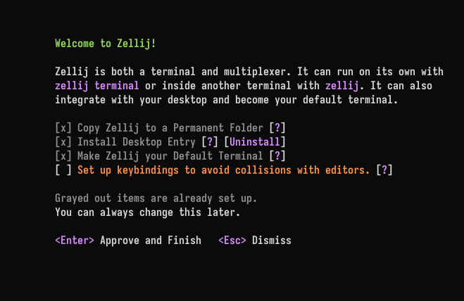
The screen lists what can be set up on this computer. Items that are already set up are grayed out:
- Copy Zellij to a Permanent Folder - so
zellijcan be run from anywhere, and so the desktop entry and the default terminal run that copy instead of the file that was started (eg. one in the Downloads folder) - Install Desktop Entry - an app menu launcher on Linux, Zellij.app on macOS, a Start menu entry and an "Open Zellij here" Explorer item on Windows
- Make Zellij your Default Terminal - Linux only
- Keybindings - choose a keybinding preset that avoids collisions with editors and other programs
"Approve and Finish" applies the checked items and shows what was written or removed.
Desktop items are not offered when there is no desktop: over SSH, inside a container (Distrobox, Toolbox, Flatpak, Podman, Docker), in WSL, or on Linux without DISPLAY or WAYLAND_DISPLAY. Setting the environment variable ZELLIJ_DESKTOP_INTEGRATION=on treats the environment as a desktop anyway, and ZELLIJ_DESKTOP_INTEGRATION=off never offers desktop items.
From the command line
Everything the setup screen does is also available through zellij setup. These flags use the same checks as the setup screen and can be combined:
| Flag | Description |
|---|---|
--copy-to-permanent-folder | Copy this Zellij to a permanent folder, or update an older Zellij already there |
--replace-existing | With --copy-to-permanent-folder: replace a different file that is in the way |
--install-desktop-entry | Install the desktop entry |
--uninstall-desktop-entry | Remove the desktop entry Zellij installed. Entries Zellij did not write are left alone |
--make-default-terminal | Make Zellij the default terminal, installing the desktop entry if it is missing |
--keybinding-preset <PRESET> | Choose a keybinding preset (eg. unlock-first) and save it to the configuration file |
$ zellij setup --install-desktop-entry
$ zellij setup --make-default-terminal
$ zellij setup --keybinding-preset unlock-first
When the desktop entry or the default terminal is installed from a Zellij that is not in a permanent place, Zellij copies itself to the permanent folder first and points the entry at that copy.
Linux
- Permanent folder:
~/.local/bin/zellij. No copy is offered when Zellij is already in a permanent place: a package manager's path (eg. Nix, Homebrew,cargo install),/usr,/usr/localor/opt. - Desktop entry:
~/.local/share/applications/dev.zellij.Zellij.desktop, with icons in~/.local/share/icons/hicolor/. It runszellij terminaland has Show Inbox, Show Sessions and New Window actions. If a package manager already installed the launcher (in$XDG_DATA_DIRS/applications), Zellij shows it as installed by the package manager and does not write its own. An oldzellij.desktopwritten by an earlier Zellij is removed. - If the desktop entry later points at a Zellij that no longer exists, a new session offers to repair it.
Default terminal
Zellij can become the default terminal on KDE Plasma, Cinnamon and MATE, and on desktops that use xdg-terminal-exec. It needs the desktop entry. Zellij never changes the default terminal back by itself.
Elsewhere, the setup screen explains how to do it by hand:
- On tiling window managers, bind
zellij terminalto the key used to open a terminal - On Debian and Ubuntu,
sudo update-alternatives --config x-terminal-emulatorchooses the default terminal - Installing xdg-terminal-exec lets Zellij set it
Other apps then run zellij terminal -e <command> or zellij terminal --working-directory=<dir>. Where such a command opens is set with terminal_requests.
Packaging
Each release has a zellij-desktop-files.tar.gz holding the desktop entry, icons and software-centre listing for packagers. See PACKAGING_DESKTOP.md.
macOS
- Desktop entry:
~/Applications/Zellij.app. The app contains a signed copy of Zellij (signed with/usr/bin/codesign), so that its menu bar icon and desktop notifications work. It needs macOS 11.0 or later. To update Zellij.app after upgrading Zellij, install it again (eg. withzellij setup --install-desktop-entryfrom a terminal). - Permanent folder:
~/.local/bin/zellij. Zellij.app has its own copy, but runningzellijfrom a terminal still needs one on thePATH. - Making Zellij the default terminal is not available on macOS.
Windows
- Permanent folder:
%LOCALAPPDATA%\Zellij\zellij.exe. Zellij adds that folder to the end of the user'sPATH, and removes it again only when it removes the copy. No copy is offered when Zellij was installed by the MSI installer, Scoop, winget, Chocolatey or cargo, or is in Program Files. - Start menu entry: a Zellij shortcut in the Start menu.
- "Open Zellij here": an Explorer item when right-clicking a folder, the background of a folder, or a drive.
- Making Zellij the default terminal is not offered. "Open Zellij here" is the closest equivalent.
The MSI installer can add the Start menu shortcut (a checkbox on its welcome screen, on by default) and the "Open Zellij here" item itself.
Terminal Options
Zellij can open sessions in its own window, the Zellij terminal (zellij terminal), without another terminal emulator. That window is configured in the terminal block of the configuration file.
Every key is optional. With the whole block absent, the window uses the defaults listed below. Unless noted otherwise, changes apply to open windows right away. The keys marked "requires restart" only apply to windows opened after the change.
These settings can also be changed from the settings screen.
terminal {
font "Iosevka Term"
font_size 13
line_height 1.1
padding 8
opacity 0.95
blur true
cursor_style "bar"
theme {
background "#101010"
}
}
- Fonts: font, font_bold, font_italic, font_bold_italic, font_size, font_weight, system_fonts, ligatures, font_features
- Cells and padding: line_height, cell_width, baseline_offset, underline_offset and underline_thickness, padding, padding_balance, padding_color, minimum_contrast
- Cursor: cursor_style, cursor_blink, cursor_unfocused_hollow
- Keys: paste_keys, copy_keys, fullscreen_keys, zoom_in_keys, zoom_out_keys and zoom_reset_keys, macos_option_as_alt
- Mouse and scrolling: middle_click_paste, open_links, open_links_with_shift, shift_drag_selects, hide_pointer_while_typing, smooth_scrolling, scroll_animation_duration, scroll_momentum, scroll_momentum_friction
- Window: opacity, opacity_mode, blur, startup_mode, initial_columns and initial_rows, reuse_session_windows, terminal_requests, bell
- Clipboard: allow_remote_clipboard_read
- Colors: theme
Fonts
font
The font family to draw text with, found through the system's font configuration. A family that cannot be found falls back to the font built into Zellij.
Default: the built-in font
font "Iosevka Term"
font_bold, font_italic, font_bold_italic
Font families for bold, italic and bold italic text, each used in place of the font family's own face for that style. A style without one of these, or whose family cannot be found, keeps the font family's face.
Default: not set
font_bold "Iosevka Term"
font_italic "Iosevka Term"
font_bold_italic "Iosevka Term"
font_size
The font size in points, as other terminals measure it. Any number above 0.
Default: 12
font_size 13.5
font_weight
The weight of regular text: a number from 100 to 900, or one of these names: "thin" (100), "extralight" (200), "light" (300), "regular" (400), "medium" (500), "semibold" (600), "bold" (700), "extrabold" (800), "black" (900). Bold text uses a face 300 heavier, up to 900. Variable fonts are set to the exact weight.
Default: "regular" (400)
font_weight "medium"
system_fonts
Whether to use the system's fonts for characters the main font does not have.
Default: true
system_fonts false
ligatures
Whether the font's ligatures are formed, so that sequences like -> or != are drawn as one shape.
Default: true
ligatures false
font_features
OpenType features to turn on, or to turn off with a leading -, as four-character tags. Listing any feature shapes text even with ligatures false. In that case, liga, calt and dlig stay off unless they are listed here.
Default: none
font_features "ss01" "zero" "-calt"
Cells and padding
line_height
The height of a cell as a multiple of the font's own line height, from 0.5 to 3.0. The extra space is shared evenly above and below the text.
Default: 1.0
line_height 1.2
cell_width
The width of a cell as a multiple of the font's own character width, from 0.5 to 3.0. Characters keep their shape and are centered in the cell.
Default: 1.0
cell_width 1.1
baseline_offset
Pixels to move the text down inside its cell (or up, when negative), from -64 to 64.
Default: 0
baseline_offset 1
underline_offset and underline_thickness
Pixels to move the underline down (or up, when negative), and pixels to add to (or remove from) its thickness, each from -64 to 64. The underline always stays inside the cell.
Default: 0
underline_offset 1
underline_thickness 1
padding
Empty space around the text, in pixels, from 0 to 1000. It is scaled with the display, but not with zoom. padding sets every side, and padding_top, padding_right, padding_bottom and padding_left override one side each.
Default: 0
padding 8
padding_top 4
padding_balance
Whether the pixels left over when the window is not a whole number of cells are shared evenly on all sides, instead of all going to the right and bottom edges.
Default: false
padding_balance true
padding_color
How the padding is painted:
"background"(default) - with the theme background and the window opacity"extend"- continuing the background of the nearest cell at the edge of the grid
padding_color "extend"
minimum_contrast
The lowest allowed contrast ratio between text and its background, from 1.0 (off) to 21.0. Text colors below it are adjusted.
Default: 1.0
minimum_contrast 4.5
Cursor
cursor_style
The cursor shape to draw where the program in the pane has not asked for one: "block", "bar" or "underline". A program that asks for a shape (with CSI <n> q) still gets the shape it asked for.
Default: not set
cursor_style "bar"
cursor_blink
Whether the cursor blinks. Unlike cursor_style, this wins over the program: set it to force a blinking or a steady cursor whatever the pane asks for. When it is not set, the cursor blinks exactly when the program asks for a blinking cursor.
Default: not set
cursor_blink false
cursor_unfocused_hollow
Whether the cursor is drawn as an outlined block while the window is not focused.
Default: true
cursor_unfocused_hollow false
Keys
Keys are written as in keybindings, eg. "Ctrl Shift v". Each of these keys takes a list of keys. The window keeps the keys it lists for itself; any other key goes to the session. Listing no keys leaves them all to the session. On macOS, Super is the Command key.
paste_keys
The keys that paste from the clipboard.
Default: "Ctrl Shift v" and "Shift Insert", plus "Super v" on macOS
paste_keys "Ctrl Shift v" "Shift Insert"
copy_keys
The keys that copy the text marked with shift and drag (see shift_drag_selects).
Default: "Ctrl Shift c", plus "Super c" on macOS
copy_keys "Ctrl Shift c"
fullscreen_keys
The keys that switch the window between fullscreen and the size it had before.
Default: "F11"
fullscreen_keys "F11"
zoom_in_keys, zoom_out_keys and zoom_reset_keys
The keys that make text larger, make it smaller, and return it to the configured font_size.
Defaults:
zoom_in_keys:"Ctrl =","Ctrl +"and"Ctrl Shift +", plus"Super =","Super +"and"Super Shift +"on macOSzoom_out_keys:"Ctrl -"and"Ctrl Shift _", plus"Super -"on macOSzoom_reset_keys:"Ctrl 0", plus"Super 0"on macOS
zoom_in_keys "Ctrl ="
zoom_out_keys "Ctrl -"
zoom_reset_keys "Ctrl 0"
macos_option_as_alt
Which Option key acts as Alt on macOS. The other one keeps typing characters such as å. Ignored on other platforms.
Options:
"left"(default)"right""both""none"
macos_option_as_alt "both"
Mouse and scrolling
middle_click_paste
Whether the middle mouse button pastes the primary selection (on Linux, the text last selected anywhere). A pane whose program asks for mouse reporting gets the click instead.
Default: true
middle_click_paste false
open_links
Whether clicking an OSC 8 hyperlink opens it with the system's default handler. A plain left click opens it; over a pane whose program asks for mouse reporting, shift must be held instead. Dragging is a selection and never opens anything, and the click still reaches the pane either way. Only http, https, ftp, ftps, mailto and file links are opened.
Default: true
open_links false
open_links_with_shift
Whether shift and click opens a link in every pane, not only in panes whose program asks for mouse reporting. Has no effect when open_links is false.
Default: true
open_links_with_shift false
shift_drag_selects
Whether dragging with shift held marks text anywhere in the window, including the tab bar, the status bar, pane frames and across pane borders. The marked text is copied with copy_keys.
Default: true
shift_drag_selects false
hide_pointer_while_typing
Whether the mouse pointer is hidden while typing, until it moves again.
Default: false
hide_pointer_while_typing true
smooth_scrolling
Whether scrolling through a pane's scrollback slides the text to its new position instead of jumping. This applies to the mouse wheel, the touchpad and the scroll keys alike.
Default: true
smooth_scrolling false
scroll_animation_duration
How long one scroll slide takes, in milliseconds, from 1 to 1000. Ignored when smooth_scrolling is false.
Default: 100
scroll_animation_duration 150
scroll_momentum
Whether a fast two-finger touchpad swipe through a pane's scrollback keeps scrolling for a moment after the fingers lift, slowing down until it stops. Touching the touchpad again, clicking, typing or moving the pointer to another pane stops it at once. This works independently of smooth_scrolling. It currently only has an effect on Wayland; on X11, Windows and macOS it is ignored (macOS already provides its own touchpad momentum).
Default: true
scroll_momentum false
scroll_momentum_friction
How quickly that continued scrolling slows down, from 0.5 to 10.0. Higher values stop sooner. Currently only has an effect on Wayland.
Default: 2.0
scroll_momentum_friction 4.0
Window
opacity
How opaque the window is, from 0.0 (invisible) to 1.0 (solid). This needs a compositor; without one, the window stays solid.
Default: 1.0
opacity 0.9
opacity_mode
What the opacity applies to:
"background"(default) - only the default background shows through; text, colored cells, the cursor and images stay solid"everything"- the whole window fades evenly
opacity_mode "everything"
blur
Whether to ask the compositor to blur what is behind the window. It is only visible with an opacity below 1.0. It is supported on macOS, KDE Plasma and Windows 11 22H2 or later, and ignored elsewhere. On Windows it is the system's Acrylic material, which only shows while the window is focused.
Default: false
blur true
startup_mode
How a new window opens. Requires restart. The --startup-mode flag of zellij terminal overrides it.
Options:
"remember"(default) - at the size (counted in rows and columns) and in the state the last window was closed in; with nothing remembered yet, it opens windowed at 120x40"windowed""maximized""fullscreen"
startup_mode "maximized"
initial_columns and initial_rows
The size, in columns and rows, of a window that has no remembered size to open at, each from 2 to 1000. A size remembered by startup_mode "remember" wins over these. A maximized or fullscreen window returns to this size when it is restored. Requires restart.
Default: 120 columns and 40 rows
initial_columns 160
initial_rows 48
reuse_session_windows
Whether a session is shown in at most one window of the desktop app. When on, switching a window to a session that another window already shows brings that other window forward and closes the switching one; the session it left keeps running. When off, the window always switches in place. Windows opened with zellij terminal --standalone always switch in place.
Default: true
reuse_session_windows false
terminal_requests
Where a command opens when another program uses Zellij as its terminal (zellij terminal -e <command>, as xdg-terminal-exec or a file manager runs it):
"new_session"(default) - in a session of its own"existing_session"- as a new tab in the session whose window was focused last, or in a new session when no window is open
terminal_requests "existing_session"
bell
What the window does when a program rings the bell:
"visual"(default) - asks the desktop to draw attention to the window, eg. by highlighting it in the taskbar"audible"- plays the system sound"both""none"
bell "both"
Clipboard
allow_remote_clipboard_read
Whether programs in a session on another machine (opened with zellij terminal https://..., see remote attach) may read this computer's clipboard with OSC 52. Local sessions follow dangerously_enable_paste_buffer_read instead.
Default: false
allow_remote_clipboard_read true
Colors
theme
The colors the window paints itself:
terminal {
theme {
foreground "#e5e5e5"
background "#000000"
cursor "#e5e5e5"
black "#000000"
red "#cd0000"
green "#00cd00"
yellow "#cdcd00"
blue "#0000ee"
magenta "#cd00cd"
cyan "#00cdcd"
white "#e5e5e5"
bright_black "#7f7f7f"
bright_red "#ff0000"
bright_green "#00ff00"
bright_yellow "#ffff00"
bright_blue "#5c5cff"
bright_magenta "#ff00ff"
bright_cyan "#00ffff"
bright_white "#ffffff"
}
}
Every color is optional, and is given as RGB (eg. 229 229 229) or as a hex string. The sixteen ANSI colors (black to bright_white) cannot be given as a number from the 256-color palette, because that palette is built from them.
Where the colors come from, from lowest to highest priority:
foregroundandbackground: thetext_unselectedcolors of the active Zellij theme (following dark and light switching), then this block.- The sixteen ANSI colors: the
terminal_colorssection of the active Zellij theme, then this block. Colors that neither of them sets keep the usual xterm defaults (eg.redis205 0 0). cursor: only this block.
So with no theme block here, the window follows the Zellij theme, including its terminal_colors. Colors set in this block stay the same whatever Zellij theme is active.
Commands
These commands can be invoked with zellij [SUBCOMMAND].
For more details, each subcommand has its own help section when run with the
--help flag (zellij [SUBCOMMAND] --help).
attach [session-name]
short: a
Zellij will attempt to attach to an already running session, with the name
[session-name].
If given no [session-name] and there is only one running session, it will attach to that session.
The attach subcommand will also accept the optional options subcommand.
Starting a session with an initial command
Trailing arguments given after -- are run as a command in the first pane of the
session:
$ zellij attach -c my-session -- htop
This works both when creating a session in the foreground (-c, --create) and in the
background (-b, --create-background).
The command only runs if the session is created by this invocation. When attaching to an already running session, the trailing command is ignored.
If a layout is used, the pane running the command is placed in the focused tab.
Two flags change how the initial command behaves. Both require an initial command to be given:
| Flag | Description |
|---|---|
| --close-on-exit | Close the initial command's pane as soon as the command exits. By default the pane is held open |
| --start-suspended | Start the command suspended - it is only run once ENTER is pressed for the first time |
Initial commands are not supported for remote (web client) sessions - the CLI will error out.
All the arguments of attach described here also work with zellij terminal.
terminal [session-name]
zellij terminal opens a session in Zellij's own terminal window, without
another terminal emulator. It takes the same arguments as attach (eg.
zellij terminal -c my-session -- htop), and adds flags for the window and the desktop
app (eg. --watch, --startup-mode, --standalone, -e <COMMAND>, --hold,
--working-directory, --inbox and --sessions).
$ zellij terminal
$ zellij terminal -c my-session
$ zellij terminal -e htop
See Zellij Terminal for the full reference.
Running zellij with no arguments outside of a terminal (eg. by double-clicking it) opens
zellij terminal on macOS, and on Linux when a desktop is available (DISPLAY or
WAYLAND_DISPLAY is set). This does not happen over SSH or on Windows.
prompt
zellij prompt shows a question, list, text field or notice as a popup
over the calling pane and prints the answer.
$ zellij prompt confirm "Force push?" && git push --force
See Zellij Prompt for the full reference.
list-sessions
short: ls
Will list all the names of currently running sessions.
kill-session [target-session]
short: k
Will kill the session with the name of [target-session], if it is currently
running.
kill-all-sessions
short: ka
Will prompt the user to kill all running sessions. -y, --yes skips the prompt.
delete-session [target-session]
short: d
Will delete the exited (resurrectable) session with the name of [target-session]. With
-f, --force, a running session is killed first.
delete-all-sessions
short: da
Will prompt the user to delete all exited (resurrectable) sessions. With -f, --force,
running sessions are killed and deleted as well. -y, --yes skips the prompt.
watch [session-name]
short: w
Will attach to a session in read-only mode. See Zellij Watch.
list-aliases
short: la
Will list the existing plugin aliases.
run, edit, plugin, pipe, action and subscribe
These commands control a running session from the command line. They are described in
Controlling Zellij through the CLI:
run and edit (short: r and e),
plugin and pipe (short for plugin: p),
action (short: ac) and subscribe.
web
Runs and manages the web server. See Web Client.
options
Can be used to change the behaviour of zellij on startup. Will supercede options defined in the config file. To see a list of options look here.
setup
Functionality to help with the setup of zellij.
| Flag | Description |
|---|---|
| --check | Check the configuration |
| --clean | Start with default configuration |
| --dump-config | Dump the default configuration file to stdout |
| --dump-layout [LAYOUT] | Dump a specified default layout file to stdout |
| --dump-swap-layout [LAYOUT] | Dump the specified swap layout file to stdout |
| --dump-keybinds [PRESET] | Dump the specified keybinding preset (eg. default or unlock-first) to stdout |
| --dump-plugins [DIR] | Dump the builtin plugins to DIR, or to the data dir if DIR is not given |
| --generate-completion [SHELL] | Generate completions for the specified shell |
| --generate-auto-start [SHELL] | Generate an auto-start script for the specified shell (see Integration) |
setup can also do from the command line what the setup screen does:
| Flag | Description |
|---|---|
| --copy-to-permanent-folder | Copy this Zellij to a permanent folder, or update an older Zellij that is already installed |
| --replace-existing | With --copy-to-permanent-folder: replace a different file that is in the way |
| --install-desktop-entry | Install the desktop entry: a launcher and icons on Linux, a Start menu shortcut and an "Open Zellij here" Explorer item on Windows |
| --uninstall-desktop-entry | Remove the desktop entry Zellij installed |
| --make-default-terminal | Make Zellij the default terminal, installing the desktop entry if it is missing |
| --keybinding-preset [PRESET] | Choose the keybinding preset (eg. unlock-first) and save it to the configuration file |
These flags can be combined with each other, but not with the flags of the first table.
$ zellij setup --copy-to-permanent-folder
$ zellij setup --install-desktop-entry --make-default-terminal
$ zellij setup --keybinding-preset unlock-first
See Desktop Setup for where each item is installed on each platform.
Flags
These flags can be invoked with zellij --flag.
| Flag | Description |
|---|---|
| --help | Display the help prompt |
| --debug | Gather additional debug information |
| --version | Print version information |
| --session [NAME] | Name of a new session, or the session to send action, run, edit, plugin, pipe, subscribe and prompt commands to |
| --layout [LAYOUT] | Name of a layout in the layout directory or path to a layout file. Inside a session (or with --session) it is added to the session as new tab(s), otherwise a new session is started with it |
| --new-session-with-layout [LAYOUT] | Like --layout, but always starts a new session |
| --layout-string [KDL] | Use a raw KDL layout string instead of a layout file |
| --config [FILE] | Change where zellij looks for the configuration file (also ZELLIJ_CONFIG_FILE) |
| --config-dir [DIR] | Change where zellij looks for the configuration directory (also ZELLIJ_CONFIG_DIR) |
| --data-dir [DIR] | Change where zellij looks for plugins |
| --max-panes [NUMBER] | Maximum panes on screen (at least 1), opening more panes will close old ones |
--layout-string
Takes a layout as a raw KDL string rather than as a path to a layout file. Useful for scripting and for generating layouts on the fly.
If invoked from inside a Zellij session (or with an explicit --session), the layout is added to the running session as new tab(s). Otherwise, a new session is started with it.
This flag conflicts with --layout and --new-session-with-layout.
$ zellij --layout-string 'layout { pane split_direction="vertical" { pane; pane; } }'
The layout is parsed and validated before being sent to the session, so syntax errors are reported immediately.
Rebinding Keys
Zellij places great emphasis on being a keyboard-first application. As such, Zellij uses many different shortcuts in order to give users the power to control the application and do so in a way that would make sense to them - not forcing them to learn many obtuse keyboard shortcuts that make little sense and are difficult to remember.
For some users, these shortcuts may "collide" with other shortcuts they use in the terminal in other programs. For these users, Zellij offers several solutions.
- Using a "non-colliding" keybinding preset, or writing a preset of one's own
- Changing the modifier keys Zellij uses for keybindings to ones that do not collide
- Reconfiguring keybindings entirely as part of the configuration file
Mouse clicks and scrolling can be rebound as well, in the mousebinds block. See Mouse Bindings.
Keybinding Presets
Keybinding Presets are a set of keybindings that can be used to control Zellij. Zellij comes with two such presets out of the box, intended to fit different kinds of users. They are described below.
A preset is a file. It holds a full set of keybindings and mouse bindings, written with placeholders for the leader keys (see Leader keys). Besides the two built-in presets, presets can be written by hand and kept in the keybinds folder.
The default preset
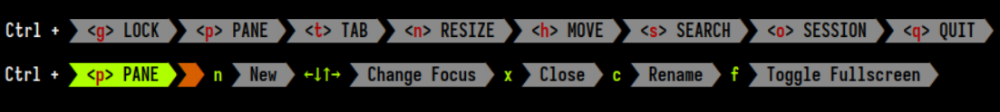
This preset should fit most users of Zellij. In it, all modes are accessible from the basic "normal" mode in which the user spends most of their time. One can enterPane mode by pressing Ctrl p and then have access to all commands inside pane mode (eg. n to open a new pane or x to close the focused pane).
Its name is default. Its full contents can be printed with zellij setup --dump-keybinds default.
The Unlock-First (non-colliding) preset
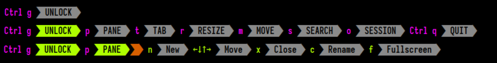
This preset is tailored to users who use terminal applications with keyboard shortcuts that collide with Zellij's own keybindings. In this preset, users "unlock" the interface before accessing the various input modes. The modes themselves can then be accessed with a single character shortcut.So for example, in order to open a new pane, the user would press: Ctrl g followed by p followed by n. The Zellij maintainers found that after a short adjustment period, this is a fast, efficient and most importantly mentally-consistent way of interacting with the application.
Its name is unlock-first. Zellij starts in locked mode with this preset, unless the default_mode option is set. Its full contents can be printed with zellij setup --dump-keybinds unlock-first.
How to choose a preset?
In the configuration file
The preset is chosen with the preset attribute of the keybinds block:
keybinds preset="unlock-first" {
}
The value is one of:
- the name of a built-in preset (
defaultorunlock-first) - the name of a preset file in the keybinds folder, without the
.kdlextension - a path to a preset file (a relative path is taken from the folder of the configuration file)
Without a preset attribute, the default preset is used.
Bindings inside the keybinds block are applied on top of the preset (see Binding and Overriding Keys). To replace the preset completely, add clear-defaults=true to the block.
If the preset cannot be loaded (eg. the file is missing, a leader key is empty, or the primary and secondary leader keys are the same), Zellij warns and uses the default preset instead.
In the settings screen
The preset and its leader keys can also be chosen in the settings screen, under Keyboard → Key bindings and preset…. The settings screen is accessible with:
Ctrl o+cin the default presetCtrl g+o+cin theUnlock-Firstpreset
The change can be applied just for the current session, or saved to the configuration file. From the same screen, a preset can be copied into the keybinds folder, and the current keybindings can be saved as a new preset there.
Choosing between the two built-in presets is also offered on the setup screen shown on the first run of Zellij.
From the command line
To save a preset to the configuration file (creating the file if needed):
zellij setup --keybinding-preset unlock-first
To use a preset for a single session, without changing the configuration file:
zellij options --keybinds-preset unlock-first --keybinds-unlock "Ctrl a"
The flags are:
--keybinds-preset- a preset name or a path to a preset file--keybinds-primary- the primary leader key (eg."Ctrl")--keybinds-secondary- the secondary leader key (eg."Alt")--keybinds-unlock- the unlock key (eg."Ctrl g")
When a preset is given with --keybinds-preset, a keybinds clear-defaults=true block in the configuration file is ignored, so that the chosen preset is used as it is. A keybinds block without clear-defaults=true is still applied on top of it.
To print a preset (built-in, or from the keybinds folder):
zellij setup --dump-keybinds default
Leader keys
Presets are written with three placeholders, which are filled in with the leader keys:
| Placeholder | Meaning | Default |
|---|---|---|
{primary} | The primary modifier, used to enter modes (see Changing Modifiers) | Ctrl |
{secondary} | The secondary modifier, used for common shortcuts | Alt |
{unlock} | The key that leaves locked mode (used by unlock-first) | Ctrl g |
They are set with attributes of the keybinds block:
keybinds preset="default" primary="Ctrl Alt" secondary="Alt" {
}
keybinds preset="unlock-first" unlock="Ctrl a" {
}
The primary and secondary values must be different. The leader keys also change the mouse bindings of the preset.
The keybinds folder
Preset files are looked for in the keybinds folder inside the configuration folder (eg. ~/.config/zellij/keybinds/my-preset.kdl is used with preset="my-preset"). A different folder can be set with the keybinds_dir option:
keybinds_dir "/path/to/my/keybinds_dir"
Preset names may contain letters, digits, - and _.
Writing a preset
A preset file has an optional preset block describing it, a keybinds block, and an optional mousebinds block:
preset {
name "My preset"
description "All modes available directly from the base mode, eg.:"
example "{primary} p" "to enter PANE mode"
example "{primary} t" "to enter TAB mode"
default_mode "normal"
defaults {
primary "Ctrl"
secondary "Alt"
}
}
keybinds {
locked {
bind "{primary} g" { SwitchToMode "Normal"; }
}
shared_except "locked" {
bind "{primary} g" { SwitchToMode "Locked"; }
bind "{secondary} n" { NewPane; }
}
}
mousebinds {
shared {
bind "Left" { Click; }
bind "ScrollUp" { Scroll 3; }
bind "ScrollDown" { Scroll 3; }
}
}
name,descriptionandexample(the keys, then what they do) are shown when choosing a preset.default_modeis the mode Zellij starts in with this preset, unless thedefault_modeoption is set.defaultsgives the value of each placeholder used, when the user does not set one.- Only
{primary},{secondary}and{unlock}can be used, and only in the keys ofbindandunbind. Any other placeholder is an error. - The
keybindsblock uses the same syntax as in the configuration file (see Keybindings). - Without a
mousebindsblock, the mouse bindings of thedefaultpreset are used (see Mouse Bindings).
A good starting point is a built-in preset: zellij setup --dump-keybinds default > ~/.config/zellij/keybinds/my-preset.kdl.
More default keys
These keys are in both built-in presets. In unlock-first, the actions return to locked mode instead of normal mode, and modes are entered without Ctrl (eg. Ctrl g + p instead of Ctrl p).
| Mode | Key | Action |
|---|---|---|
pane | a | NewFloatingPane |
pane | Shift s | ToggleStackListOrientation |
pane | Shift z | ToggleBars (hide or show the bars) |
pane | u | MutePane |
pane | g | IgnorePaneOutput |
pane | v | WatchPane |
tab | Space | NextSwapLayout |
tab | Shift Space | PreviousSwapLayout |
tab | u | MuteTab |
session | i | ToggleSessionCard (show or hide the inbox) |
session | r | Rename the session (enters the renamesession mode) |
session | u | MuteSession |
session | Tab | ToggleSession (back to the previous session) |
session | Left / Right | GoToPreviousSession / GoToNextSession |
session | n | GoToNextAttention |
renamesession | Esc | UndoRenameSession, back to session mode |
renamesession | Ctrl c | Keep the new name, back to normal mode (locked in unlock-first, where Enter does the same) |
Changing Modifiers
Zellij uses two different modifiers to distinguish between two main sets of actions.
The Primary Modifier (default: Ctrl)
This modifier is used to access the different modes (eg. Pane and Tab). Its exact usage depends on one's preset.
The Secondary Modifier (default: Alt)
This modifier is used for common shortcuts (eg. Alt n to open a new pane or Alt f to toggle floating panes).
The modifiers also apply to the mouse bindings of the preset. With the primary modifier held, dragging a pane frame resizes the pane, dragging inside a pane draws a new floating pane, and scrolling resizes the pane. With the secondary modifier held, clicking adds a pane to or removes it from the pane group, and scrolling jumps between shell prompts.
Rebinding Modifiers
Other than manually configuring keybindings, modifiers can be changed without overriding the current keybindings, with the primary and secondary attributes of the keybinds block:
keybinds primary="Ctrl Alt" secondary="Alt" {
}
The two values must be different. For the Unlock-First preset, the unlock attribute changes the key that unlocks the interface (the Unlock Toggle) entirely:
keybinds preset="unlock-first" unlock="Ctrl a" {
}
The same can be done in the settings screen, under Keyboard → Key bindings and preset…, accessible with:
Ctrl o+cin the default presetCtrl g+o+cin theUnlock-Firstpreset
For a single session, the --keybinds-primary, --keybinds-secondary and --keybinds-unlock flags of zellij options do the same without changing the configuration file. See Keybinding Presets.
A note about multiple modifiers
While it's certainly possible to change these modifiers to Ctrl Alt, Super or even Ctrl Shift Alt - these all require the usage of a terminal emulator which itself supports multiple modifiers. Examples include: Alacritty, WezTerm and foot.
Terminals do not report Super for mouse events. If a modifier is set to Super, the mouse bindings that use it are skipped.
Configuration
Zellij uses KDL as its configuration language.
Quickstart:
mkdir ~/.config/zellij
zellij setup --dump-config > ~/.config/zellij/config.kdl
Note: In most cases, Zellij will create the above file automatically on first run. Be sure to check if it exists first.
Where does Zellij look for the config file?
By default Zellij will look for config.kdl in the config directory.
Zellij will search for the config directory as follows:
-
--config-dirflag -
ZELLIJ_CONFIG_DIRenv variable -
$HOME/.config/zellij -
default location
- Linux:
/home/alice/.config/zellij - Mac:
/Users/Alice/Library/Application Support/org.Zellij-Contributors.Zellij
- Linux:
-
system location (
/etc/zellij)
How to bypass the config file?
In order to pass a config file directly to zellij:
zellij --config [FILE]
or use the ZELLIJ_CONFIG_FILE environment variable.
To start without loading configuration from default directories:
zellij options --clean
How do I update the config file for running sessions?
Zellij actively watches for changes in the active configuration file. Most fields will be applied immediately without the need for a restart. Otherwise, this will be mentioned in the commentary of the relevant field.
The themes folder, the keybindings folder and the layouts folder are watched as well.
Changing the configuration from the settings screen
Most of the configuration can also be changed from the settings screen (Ctrl o + c with the default keybinding preset, or "Settings…" in the right-click menu). Changes apply right away, and stay unsaved until they are saved to the configuration file.
When saving, Zellij changes only the affected parts of the file and keeps its comments and formatting. The previous version of the file is copied next to it as config.kdl.bak, replacing any earlier backup with that name.
What can be configured?
The configuration file is made of options set at its root, and of blocks:
| Block | Purpose |
|---|---|
keybinds | keybindings and keybinding presets |
mousebinds | mouse bindings |
themes | themes |
ui | pane frame and border settings |
plugins | plugin aliases |
load_plugins | plugins loaded in the background when a session starts |
env | environment variables for new panes |
web_client | the web client |
context_menu | the right-click menu |
session_suggestions | session suggestions |
terminal | the Zellij terminal window |
attention | the inbox, status markers and desktop notifications |
Settings Screen
Zellij includes a settings screen that changes its behavior and appearance without editing the configuration file by hand. The settings screen reads the configuration file and writes its changes back to it, so both can be used side by side.
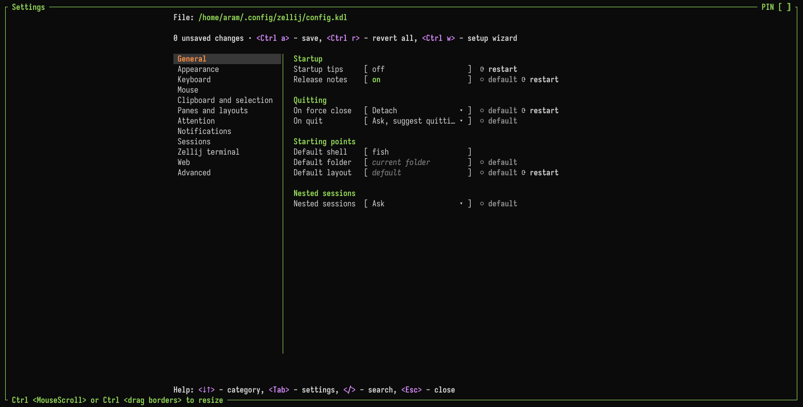
Opening the settings screen
Ctrl o+cin the default preset (Ctrl g+o+cin the Unlock-First preset)- "Settings…" in the right-click menu
- Loading the configuration alias, optionally at a specific page
Categories
The settings are grouped in these categories:
- General
- Appearance - with the Themes and Pane borders pages
- Keyboard - with the Key bindings page, where the keybinding preset and its leader keys are chosen
- Mouse - with the Mouse bindings and Right-click menu pages
- Clipboard and selection
- Panes and layouts
- Attention - see Inbox & Attention
- Notifications
- Sessions
- Zellij terminal - settings that only apply in the Zellij terminal, see Terminal Options
- Web - see Web Client
- Advanced - with the Plugins and environment page (plugin aliases, plugins loaded at start, environment variables and plugin settings)
Below the selected setting, the screen shows its description, its default, whether it applies only to you or to everyone in the session, and whether it takes effect only after a restart.
Keys
| Key | Action |
|---|---|
↓ ↑ | Move between categories or settings |
Tab | Open the selected category |
← | Back to the categories |
Enter | Edit the selected setting |
Space | Change a toggle or a choice |
/ | Search all settings |
r | Revert the selected setting to the value in the configuration file |
? | Help for the selected setting |
Ctrl a | Save all changes to the configuration file |
Ctrl r | Revert all unsaved changes |
Ctrl w | Open the setup screen |
Esc | Close (or go back from a page) |
Saving
A change applies to the running session right away. Ctrl a writes all unsaved changes to the configuration file. Changes that are not saved stay applied to the session until it ends.
When writing, Zellij keeps the comments and the formatting of the configuration file. If the file was changed outside the settings screen in the meantime, Zellij asks whether to overwrite it with the unsaved changes or to read it again and keep the changes unsaved.
Some items are shown but cannot be edited:
- Built-in themes and themes from
theme_dir(copy one to edit it) - Keybindings that come from a layout
Without a configuration file, the settings screen still changes the session but cannot save.
Plugin settings
Plugins can add their own entry to the "Plugin settings" section of the Plugins and environment page. Selecting it opens that plugin's own settings.
Options
Configuration options can be set directly at the root of the configuration file
These include:
- on_force_close
- simplified_ui
- default_shell
- pane_frames
- theme
- theme_dark
- theme_light
- default_layout
- default_mode
- mouse_mode
- scroll_buffer_size
- copy_command
- copy_clipboard
- copy_on_select
- scrollback_editor
- mirror_session
- layout_dir
- theme_dir
- env
- rounded_corners
- hide_session_name
- border_style
- auto_layout
- styled_underlines
- session_serialization
- serialize_pane_viewport
- scrollback_lines_to_serialize
- serialization_interval
- disable_session_metadata
- stacked_resize
- show_startup_tips
- show_release_notes
- post_command_discovery_hook
- web_server
- web_server_ip
- web_server_port
- web_server_cert
- web_server_key
- enforce_https_for_localhost
- dangerously_allow_web_serving_without_a_certificate
- base_url
- web_client
- client_async_worker_tasks
- advanced_mouse_actions
- default_cwd
- osc8_hyperlinks
- session_name
- attach_to_session
- support_kitty_keyboard_protocol
- web_sharing
- mouse_hover_effects
- visual_bell
- focus_follows_mouse
- mouse_click_through
- pane_frame_style
- stacked_pane_list
- support_kitty_graphics_protocol
- mouse_scroll_resize
- mouse_hover_tips
- osc133_command_selection
- word_separators
- host_notification_protocol
- nested_session_handling
- dangerously_enable_paste_buffer_read
- scroll_mode_sync
- explicit_theme_hue
- on_quit
- bars_hidden_on_start
- hidden_bars_notification
- mode_hints_when_bars_hidden
- session_indicator
- swap_layout_notification
- stacked_pane_list_orientation
- grapheme_clusters
- mirror_resizes_source_pane
- live_view_release_key
- keybinds_dir
- context_menu_enabled
- context_menu
- session_suggestions
- terminal
- attention
on_force_close
Choose what to do when zellij receives SIGTERM, SIGINT, SIGQUIT or SIGHUP eg. when terminal window with an active zellij session is closed. This also applies to closing a window of the Zellij terminal.
Options:
- detach (Default)
- quit
on_force_close "quit"
simplified_ui
Send a request for a simplified ui (without arrow fonts) to plugins
Options:
- true
- false (Default)
simplified_ui true
default_shell
Choose the path to the default shell that zellij will use for opening new panes
Default: $SHELL
default_shell "fish"
pane_frames
Toggle between having pane frames around the panes. The style of these frames is controlled by pane_frame_style - since 0.45.0 the default style is a single title line above each pane rather than a full border.
Options:
- true (default)
- false
pane_frames true
theme
Choose the Zellij color theme. This theme must be specified in the themes section or loaded from the themes folder. See themes
Setting theme pins the session to this theme and turns off the automatic switching between the bundled default and default-light themes. Switching still happens if both theme_dark and theme_light are also set.
Since 0.46.0, the default theme has a new palette. The previous default theme is bundled as classic.
Default: default
theme "default"
theme_dark
Name of the theme to use as the "dark" theme. Used by the SetDarkTheme / ToggleTheme actions, and applied automatically when the host terminal reports it is in dark mode (CSI 2031 / DSR 997). The named theme must be specified in the themes section or loaded from the themes folder. See themes
Default: default when theme is not set, otherwise unset
theme_dark "catppuccin-mocha"
theme_light
Name of the theme to use as the "light" theme. Used by the SetLightTheme / ToggleTheme actions, and applied automatically when the host terminal reports it is in light mode (CSI 2031 / DSR 997). The named theme must be specified in the themes section or loaded from the themes folder. See themes
Default: default-light when theme is not set, otherwise unset
theme_light "catppuccin-latte"
default_layout
The name of the layout to load on startup (must be in the layouts folder). See layouts
Default: "default"
default_layout "compact"
default_mode "locked"
Choose the mode that zellij uses when starting up and returns to after actions.
Default: normal
default_mode "locked"
mouse_mode
Toggle enabling the mouse mode. On certain configurations, or terminals this could potentially interfere with copying text.
Options:
- true (default)
- false
mouse_mode false
scroll_buffer_size
Configure the scroll back buffer size This is the number of display rows zellij stores for each pane in the scroll back buffer. A line wider than the pane takes one row for each time it wraps. Excess rows are discarded in a FIFO fashion.
Valid values: positive integers
Default value: 10000
scroll_buffer_size 10000
copy_command
Provide a command to execute when copying text. The text will be piped to the stdin of the program to perform the copy. This can be used with terminal emulators which do not support the OSC 52 ANSI control sequence that will be used by default if this option is not set.
Examples, for X11, Wayland and macOS:
copy_command "xclip -selection clipboard"
copy_command "wl-copy"
copy_command "pbcopy"
copy_clipboard
Choose the destination for copied text Allows using the primary selection buffer (on x11/wayland) instead of the system clipboard. Does not apply when using copy_command.
Options:
- system (default)
- primary
copy_clipboard "primary"
copy_on_select
Enable or disable automatic copy of selection when releasing mouse
Default: true
copy_on_select false
scrollback_editor
Path to the default editor to use to edit pane scrollbuffer as well as the CLI and layout edit commands
Default: $EDITOR or $VISUAL
scrollback_editor "/usr/bin/vim"
mirror_session
When attaching to an existing session with other users, should the session be mirrored (true) or should each user have their own cursor (false) Default: false
mirror_session true
Note: since 0.45.0, each tab is sized according to the viewports of only the clients currently viewing it. Clients focused on different tabs therefore no longer constrain each other, while clients viewing the same tab converge on a common size. Tabs that nobody is viewing keep their last dimensions. This behavior is not configurable.
layout_dir
The folder in which Zellij will look for layouts
layout_dir "/path/to/my/layout_dir"
theme_dir
The folder in which Zellij will look for themes. Themes from this folder are read-only in the settings screen (copy one to edit it).
theme_dir "/path/to/my/theme_dir"
env
A key -> value map of environment variables that will be set for each terminal pane Zellij starts.
env {
RUST_BACKTRACE 1
FOO "bar"
}
rounded_corners
Set whether the pane frames (if visible) should have rounded corners.
This config variable is set differently than others:
ui {
pane_frames {
rounded_corners true
}
}
hide_session_name
Hides the session name (randomly generated or otherwise) from the UI
ui {
pane_frames {
hide_session_name true
}
}
border_style
The line style of pane borders can be set, for all sides at once or for each side. Like rounded_corners, these keys go inside the ui block:
ui {
pane_frames {
rounded_corners true
border_style "single"
border_top "double"
border_right "single"
border_bottom "single"
border_left "single"
border_rounded_corners true
floating_border_style "double"
floating_border_top "double"
floating_border_right "double"
floating_border_bottom "double"
floating_border_left "double"
floating_border_rounded_corners false
}
}
Line styles:
- "single" (default)
- "double"
- "heavy"
- "dashed"
- "heavy_dashed"
How the keys combine:
border_stylesets all four sides of tiled panes.border_top,border_right,border_bottomandborder_leftoverride one side each.border_rounded_cornersoverridesrounded_cornersfor tiled panes. Corners are only rounded where two thin lines (singleordashed) meet.- The keys starting with
floating_do the same for floating panes. Any of them that is not set takes the value of the matching tiled pane key. - When pane frames are off and two neighboring panes ask for different styles on the line they share, that line uses
border_style.
These can also be changed from the settings screen.
auto_layout
Toggle between having Zellij lay out panes according to a predefined set of layouts whenever possible Options:
- true (default)
- false
auto_layout true
styled_underlines
Toggle between supporting the extended "styled_underlines" ANSI protocol and ignoring it (can sometimes cause some issues in unsupported terminals). Options:
- true (default)
- false
styled_underlines true
session_serialization
If enabled, sessions will be serialized to the cache folder (and thus become resurrectable between reboots or on exit). Read more about session resurrection. Options:
- true (default)
- false
session_serialization true
serialize_pane_viewport
If enabled along with session_serialization, the pane viewport (the visible part of the terminal excluding the scrollback) will be serialized and resurrectable as well. Read more about session resurrection.
Options:
- true
- false (default)
serialize_pane_viewport true
scrollback_lines_to_serialize
When serialize_pane_viewport is enabled, setting scrollback_lines_to_serialize to 0 will serialize all scrollback and to any other number will serialize line number up to that scrollback. Read more about session resurrection.
Note: this might incur higher resource utilization (and certainly a higher cache folder usage...)
Options:
0: serialize all scrollbackint: serialize this much lines for each pane (max is the scrollback limit)
scrollback_lines_to_serialize 100
serialization_interval
How often in seconds sessions are serialized to disk (if session_serialization is enabled).
Note: this might incur higher resource utilization (and certainly a higher cache folder usage...)
Options:
int: the interval in seconds
serialization_interval 60
disable_session_metadata
Enable or disable writing of session metadata to disk
Note: If disabled, other sessions might not know metadata info on this session, so features such as the session-manager and session listing might not work properly.
Options:
- true
- false (default)
disable_session_metadata true
stacked_resize
Attempt to stack panes with their neighbors when resizing non-directionally (by default Alt+/-).
Options:
- true (default)
- false
stacked_resize true
show_startup_tips
Show usage tips on Zellij startup. These can also be browsed through the about plugin with Ctrl o + a and then ?.
Options:
- true (default)
- false
show_startup_tips true
show_release_notes
Show release notes on first run of a new version. These can also be browsed through the about plugin with Ctrl o + a.
Options:
- true (default)
- false
show_release_notes true
post_command_discovery_hook
When Zellij attempts to discover commands running inside panes so that it can serialize them, it can sometimes be inaccurate. This can happen when (for example) commands are run inside some sort of wrapper. To get around this, it's possible to define a post_command_discovery_hook. This is a command that will run in the context of te user's default shell and be provided the $RESURRECT_COMMAND that has just been discovered for a specific pane and not yet serialized. Whatever this command sends over STDOUT will be serialized in place of the discovered command.
Example, removing sudo from the start of commands:
post_command_discovery_hook "echo \"$RESURRECT_COMMAND\" | sed 's/^sudo\\s\\+//'"
web_server
Whether to start the Zellij web-server on startup.
Options:
- true
- false (default)
web_server_ip
The IP for the Zellij web-server to listen on when it's started. Default: 127.0.0.1.
web_server_port
The port for the Zellij web-server to listen on when it's started. Default: 8082.
web_server_cert
The path to the SSL certificate for the Zellij web-server. Note: the web_server_key must also be present for the server to serve itself as HTTPS.
web_server_key
The path to the private_key of te SSL certificate for the Zellij web-server. Note: the web_server_cert must also be present for the server to serve itself as HTTPS.
enforce_https_for_localhost
Whether to enforce https on localhost for the Zellij web-server. HTTPS is always enforced when listening on non-localhost addresses, unless dangerously_allow_web_serving_without_a_certificate is set. Requires a restart.
Options:
- true
- false (default)
enforce_https_for_localhost true
dangerously_allow_web_serving_without_a_certificate
Allows the Zellij web-server to serve plain, unencrypted HTTP when it listens on an address other than localhost and no web_server_cert and web_server_key are set. Without this option, the web server refuses to start in that case.
Warning: anyone on the network can read and change the traffic, including login tokens. Only use this behind a trusted proxy that adds TLS, or on a fully trusted network.
This option does not override enforce_https_for_localhost. Requires a restart.
Options:
- true
- false (default)
dangerously_allow_web_serving_without_a_certificate true
base_url
Set the base URL path for the Zellij web-server. When set, the web server serves all content under this path prefix. This is useful when running behind a reverse proxy that serves Zellij under a subpath.
Default: none (served at root "/")
web_client {
base_url "/zellij"
}
web_client
A block with settings for the in-browser terminal of the Zellij web client (eg. colors, font, font size, cursor). Changes require a restart. For the full list, please see: web-server.
web_client {
font "monospace"
font_size 14
}
client_async_worker_tasks
The number of background threads used by zellij attach <url> when it connects to a session on another machine. One set of threads is made for that program, not one per client. The web server, browser clients and local sessions are not affected. Most of the work runs on the main thread, so these threads are usually idle. Requires a restart.
Default: the number of physical CPU cores (also used when set to 0)
client_async_worker_tasks 4
advanced_mouse_actions
Whether to enable mouse hover effects and jumping between shell prompts with the mouse wheel (the ScrollToPrompt mouse binding, Alt + scroll by default). When false, those bindings do nothing.
The other mouse interactions are mouse bindings and can be rebound:
- Resizing panes by their frame: the
ResizePanebinding, onCtrl+ left-drag on the frame of any tiled or floating pane by default - Drawing a new floating pane: the
DrawFloatingPanebinding, onCtrl+ left-drag inside a pane by default - Resizing with the scroll wheel: the
ResizeScrollbinding, controlled bymouse_scroll_resize
Ctrl here is the preset's primary modifier, which can be changed (see Changing Modifiers).
Options: - true (default) - false
default_cwd
Set the default current working directory for new panes. When set, new panes will open in this directory unless otherwise specified.
default_cwd "/home/user/projects"
osc8_hyperlinks
Enable clickable OSC8 hyperlink output in terminal panes. When enabled, programs that emit OSC8 escape sequences will produce clickable hyperlinks. Requires a restart.
Options:
- true (default)
- false
osc8_hyperlinks false
session_name
Set the name of the session to create when starting Zellij. If not set, a random name will be generated.
session_name "my-session"
attach_to_session
If a session with the name specified in session_name already exists, attach to it instead of creating a new one.
Options:
- true
- false (default)
attach_to_session true
support_kitty_keyboard_protocol
Enable support for the Kitty keyboard protocol. This allows for more detailed key reporting from the terminal. Defaults to true if the terminal supports it.
Options:
- true (default if terminal supports it)
- false
support_kitty_keyboard_protocol true
web_sharing
Whether new sessions are shared through the local web server. This is separate from web_server which controls whether the server starts at all.
Options:
- "on" - new sessions are shared by default
- "off" - new sessions are not shared by default (Default)
- "disabled" - sharing is completely disabled
web_sharing "on"
mouse_hover_effects
Enable mouse hover visual effects, such as pane frame highlight and help text when hovering over panes.
Options:
- true (default)
- false
mouse_hover_effects false
visual_bell
Show visual bell indicators when a pane sends a bell character. This manifests as a brief pane/tab frame flash and a [!] suffix on the tab name.
Options:
- true (default)
- false
visual_bell false
focus_follows_mouse
Whether to automatically focus panes when hovering over them with the mouse.
Options:
- true
- false (default)
focus_follows_mouse true
mouse_click_through
Whether clicking a pane to focus it also sends the click event into the pane (to the running program). When false, the first click only focuses the pane and is consumed by Zellij.
Options:
- true
- false (default)
mouse_click_through true
pane_frame_style
The style of the pane frames when pane_frames is enabled.
Options:
- "titles" (default) - a single title line above each pane
- "full" - a full border around each pane (the pre-
0.45.0look) - "none" - no frames at all (identical to
pane_frames false)
Setting pane_frames false forces the style to none regardless of this option.
The style can also be changed at runtime with the SetPaneFrameStyle action or with zellij action set-pane-frame-style.
pane_frame_style "titles"
stacked_pane_list
Whether stacked panes are rendered as a list of one-line titles with the expanded pane pinned to the bottom of the stack. When false, the expanded pane is rendered in place inside the stack (the pre-0.45.0 behavior).
Options:
- true (default)
- false
stacked_pane_list false
support_kitty_graphics_protocol
Enable support for the Kitty graphics protocol, allowing programs running in panes to display images. Defaults to true if the terminal supports it (queried when Zellij starts). Changing this option requires restarting Zellij.
Options:
- true (default if terminal supports it)
- false
support_kitty_graphics_protocol true
mouse_scroll_resize
Whether holding the primary modifier (Ctrl by default) and scrolling the mouse wheel resizes the pane under the mouse. This is done by the ResizeScroll mouse binding, which can be rebound; when this option is false, that binding does nothing.
Options:
- true (default)
- false
mouse_scroll_resize false
mouse_hover_tips
Whether to show contextual help tips when hovering with the mouse (eg. resize help near pane borders, pane group shortcuts). This is distinct from mouse_hover_effects, which controls hover visual effects such as frame highlighting.
Options:
- true (default)
- false
mouse_hover_tips false
osc133_command_selection
Whether triple-clicking inside output marked with OSC 133 shell integration sequences selects the whole command and its output rather than the logical line under the cursor.
Options:
- true (default)
- false
osc133_command_selection false
word_separators
The characters that terminate a word when double-clicking to select it. Whitespace always separates words and does not need to be included here.
Default: "[]{}<>()"
word_separators "[]{}<>()/\\"
host_notification_protocol
The protocol used to forward desktop notifications emitted by panes (through OSC 9, OSC 99 or OSC 777) to the host terminal. See desktop notifications.
Options:
- "auto" (default) - OSC 99 for terminals that support it (eg. kitty), OSC 9 otherwise
- "osc9" - always use OSC 9
- "osc99" - always use OSC 99
- "bell" - emit a terminal bell instead of a notification
- "off" - do not forward notifications to the host terminal
host_notification_protocol "osc9"
nested_session_handling
What Zellij should do when a pane contains another (nested) Zellij session. See nested sessions.
Options:
- "ask" (default) - show a prompt when focusing the pane, offering to zoom into the nested session or to take control of it
- "fullscreen" - always zoom into the nested session when focusing its pane
- "descend" - always route input to the nested session when focusing its pane
- "never" - do nothing automatically
nested_session_handling "descend"
dangerously_enable_paste_buffer_read
Whether programs running inside panes are allowed to read the system clipboard through the OSC 52 escape sequence. When false, such requests receive an empty reply.
Warning: when this is enabled, any program running in any pane - including one running on a remote machine over SSH - can read the contents of the clipboard at any time, without prompting.
Copying to the clipboard (OSC 52 write) is not affected by this option and is always available.
Options:
- true
- false (default)
dangerously_enable_paste_buffer_read true
scroll_mode_sync
Whether scrolling a pane implicitly enters and exits scroll mode. When false, scrolling a pane (eg. with the mouse wheel) leaves the current mode alone, and scroll mode is only entered through an explicit keybinding.
Options:
- true (default)
- false
scroll_mode_sync false
explicit_theme_hue
Pin the session to a dark or light appearance, ignoring the color scheme reported by the host terminal. It is resolved before the first render, so the session starts with the intended appearance rather than correcting itself once the terminal replies. See themes.
Options:
- "dark" - always treat the terminal as being in dark mode
- "light" - always treat the terminal as being in light mode
Default: unset - the host terminal decides
This only selects which dark or light theme applies. When theme is not set, these are theme_dark and theme_light, or the bundled default and default-light themes in their place. When theme is set, both theme_dark and theme_light must be set for this option to have an effect - otherwise theme remains authoritative.
explicit_theme_hue "dark"
on_quit
Choose what the Quit action (Ctrl q by default) does.
Options:
- "ask_quit" (default) - ask, with quitting preselected
- "ask_detach" - ask, with detaching preselected
- "quit" - quit without asking
- "detach" - detach without asking; the session keeps running
on_quit "ask_detach"
bars_hidden_on_start
The bars (eg. the tab bar and status bar) a new session starts with hidden. Hidden bars come back with the "Show bars" item of the right-click menu or the ToggleBars action.
Options:
- "none" (default) - no bars are hidden
- "all" - all bars are hidden
- bar names separated by commas, eg. "tab-bar,status-bar"
A bar is matched by its plugin alias (eg. tab-bar, status-bar, compact-bar) or by its plugin location.
bars_hidden_on_start "all"
hidden_bars_notification
Whether to briefly show a note saying what was hidden and how to show it again whenever bars are hidden.
Options:
- true (default)
- false
hidden_bars_notification false
mode_hints_when_bars_hidden
While the bar that shows the keys of the current mode is hidden, whether to show those keys in a corner of the screen when entering a mode.
Options:
- true (default)
- false
mode_hints_when_bars_hidden false
session_indicator
Whether to show the other sessions indicator in the tab bar and the compact bar.
Options:
- true (default)
- false
session_indicator false
swap_layout_notification
Whether to briefly show the name of the new swap layout when it is changed.
Options:
- true (default)
- false
swap_layout_notification false
stacked_pane_list_orientation
Whether new stacks show their pane titles in a column (one title per line) or in a row (side by side on one line). The orientation of an existing stack can be changed from its right-click menu.
Options:
- "vertical" (default)
- "horizontal"
stacked_pane_list_orientation "horizontal"
grapheme_clusters
Whether to count each grapheme cluster (an emoji sequence such as a flag or a skin tone, or a letter with its accents) as one unit of width, as the Unicode standard does. When false, width is counted per code point, the way older programs expect, and programs can still ask for clusters with mode 2027. Applies to new panes.
Options:
- true (default)
- false
grapheme_clusters false
mirror_resizes_source_pane
Whether a focused mirror of a pane (a live copy of the pane shown elsewhere) in this session may resize that pane's program to the mirror's size, and whether new mirrors opened in this session do so by default.
Options:
- true (default)
- false
mirror_resizes_source_pane false
live_view_release_key
An extra key that stops typing into a live view of a pane (in the inbox or a mirror) and gives the keys back to the plugin showing it. Alt Enter, the inbox key or a click outside always do this. A key written twice, eg. "Esc Esc", must be pressed twice in a row.
Default: not set
live_view_release_key "Ctrl Alt Home"
keybinds_dir
The folder in which Zellij looks for keybinding presets. Changes to files in this folder are picked up live.
Default: a keybinds folder in the config directory
keybinds_dir "/path/to/my/keybinds_dir"
context_menu_enabled
Whether a right click opens the right-click menu. When false, right clicks go to the focused pane only, and Alt + right click clears the pane group. Plugins can still open the menu through their API.
Options:
- true (default)
- false
context_menu_enabled false
context_menu
A block that sets the items of the right-click menu. See the right-click menu.
session_suggestions
A block that sets how other sessions are suggested on the session card and in the session manager. See session suggestions.
terminal
A block with the settings of the Zellij terminal window (zellij terminal), eg. its font, padding and opacity. See terminal options.
attention
A block that sets how Zellij tracks and shows what panes, tabs and sessions need: the markers on frames and tabs, the inbox, and the desktop app's tray icon and notifications. See the inbox.
Configuring Keybindings
Zellij comes with a default set of keybindings that try to fit as many different users and use cases while trying to maximize comfort for everyone.
The keybindings come from a keybinding preset: a file that holds a full set of keybindings (and mouse bindings). Zellij has two built-in presets, default and unlock-first. The preset to use, and its leader keys, are chosen with attributes of the keybinds block.
It is possible to add to the keys of the preset or even override them with an external configuration. For more information about the configuration file itself, see Configuration.
Keybindings can be configured in the keybinds block of the file. Bindings inside the block are applied on top of the preset.
See the default preset as reference for the default keybindings, or print it with zellij setup --dump-keybinds default.
keybinds preset="default" primary="Ctrl" secondary="Alt" {
normal {
bind "Ctrl g" { SwitchToMode "locked"; }
bind "Ctrl p" { SwitchToMode "pane"; }
bind "Alt n" { NewPane; }
bind "Alt h" "Alt Left" { MoveFocusOrTab "Left"; }
}
pane {
bind "h" "Left" { MoveFocus "Left"; }
bind "l" "Right" { MoveFocus "Right"; }
bind "j" "Down" { MoveFocus "Down"; }
bind "k" "Up" { MoveFocus "Up"; }
bind "p" { SwitchFocus; }
}
locked {
bind "Ctrl g" { SwitchToMode "normal"; }
}
}
Keybindings are divided into modes. A bind instruction can include one or more keys (each key is bound separately) and one or more actions. The actions of a key run one after another, in the order they are written.
Keybindings can also be changed from the settings screen, under Keyboard → Key bindings and preset….
Modes
The keybindings are divided into several modes. Each mode has its separate keybindings.
eg. keybindings available in normal mode go in the normal block, and keybindings available in pane mode go in the pane block:
keybinds {
normal {
bind "Alt n" { NewPane; }
}
pane {
bind "n" { NewPane; SwitchToMode "normal"; }
}
}
The available modes are:
- normal
- locked
- resize
- pane
- move
- tab
- scroll
- search
- entersearch
- renametab
- renamepane
- renamesession
- session
- tmux
The renamesession mode
The session can be renamed from session mode (r in the built-in presets). While in renamesession mode, typed text edits the new session name (through the SessionNameInput action). The new name is applied when leaving the mode, eg. with Enter or Ctrl c. In the built-in presets, Esc drops the new name with UndoRenameSession and returns to session mode.
A note about scroll mode
Leaving scroll mode keeps the scroll position of the pane - the pane is no longer scrolled back down to the bottom automatically. To scroll to the bottom and leave the mode, use a binding that includes the ScrollToBottom action.
Focusing a pane that is scrolled back automatically enters scroll mode, and focusing a pane that is not scrolled back returns to normal mode.
Scrolling a pane also enters and exits scroll mode implicitly. This can be turned off with the scroll_mode_sync option, in which case scroll mode is only entered through an explicit keybinding.
Binding keys
Keys are bound with bind instructions inside each mode. A bind instruction consists of a list of keys to be bound, as well as a list of actions to be bound to each of those keys.
Note: The actions of a key run one after another, in the order they are written. Each action waits for the one before it to finish.
eg. to bind Alt n to open a new pane, both the h key and the left-arrow key to move pane focus left, and the f key to toggle the focused pane full-screen and switch to normal mode:
bind "Alt n" { NewPane; }
bind "h" "Left" { MoveFocus "Left"; }
bind "f" { ToggleFocusFullscreen; SwitchToMode "Normal"; }
Overriding keys
When configured, keybindings override the keybindings of the active keybinding preset individually (if a certain key was bound in the configuration, it overrides that key in the preset).
It's possible to explicitly unbind a key, either in all modes (unbind at the top of the block) or in a specific mode (one or more keys):
keybinds {
unbind "Ctrl g"
normal {
unbind "Alt h" "Alt n"
}
}
It's also possible to use the special clear-defaults=true attribute to drop the keybindings of the preset, either globally (all modes):
keybinds clear-defaults=true {
normal {
bind "Ctrl g" { SwitchToMode "locked"; }
}
}
or in a specific mode:
keybinds {
normal clear-defaults=true {
bind "Ctrl g" { SwitchToMode "locked"; }
}
}
Note that when a preset is chosen on the command line (with zellij options --keybinds-preset), a keybinds clear-defaults=true block in the configuration is ignored completely, so that the chosen preset is used as it is.
Keys
Keys are defined in a single quoted string, with space delimiting modifier keys.
eg. the individual character a, a with the ctrl modifier, a with the alt modifier, a with both the ctrl and alt modifiers, the F8 key and the left arrow key:
bind "a" { NewPane; }
bind "Ctrl a" { NewPane; }
bind "Alt a" { NewPane; }
bind "Ctrl Alt a" { NewPane; }
bind "F8" { NewPane; }
bind "Left" { NewPane; }
-
Possible keys
- digits or lowercase characters (eg.
a) - function keys 1-12 (eg.
F1) BackspaceLeft(left-arrow key)Right(right-arrow key)Up(up-arrow key)Down(down-arrow key)HomeEndPageUpPageDownTabDelete(can also be written asDel)InsertSpaceEnterEsc
- digits or lowercase characters (eg.
-
Possible modifiers
CtrlAltShiftSuper
Inside a keybinding preset file, keys can also use the {primary}, {secondary} and {unlock} placeholders (eg. "{primary} p"). These are not supported in the keybinds block of the configuration file.
Mouse buttons are bound separately, in the mousebinds block. See Mouse Bindings.
A note about multiple and special modifiers
Some modifiers (eg. Super), multiple modifiers (eg. Ctrl Alt) as well as certain key combinations require support from the terminal emulator as well. Example of supporting terminals are: Alacritty, WezTerm and foot.
Possible Actions
Actions whose name ends in ByPaneId, ById or ByTabId act on a specific pane or tab instead of the focused one. In a keybinding the pane or tab id must be given. Inside an item of the right-click menu it can be left out, and the clicked pane or tab is used.
Clear
Clear the scrollback buffer of the focused pane
Possible arguments: None
eg.
bind "a" { Clear; }
Copy
Copy the current text selection to the clipboard
Possible arguments: None
bind "a" { Copy; }
CopyLastCommandOutput
Copy the output of the last command run in the focused pane to the clipboard. Requires the shell to emit OSC 133 shell integration sequences, which delimit the command's output. The copied region is briefly flashed in the pane.
Possible arguments: None
By default bound to c in scroll mode.
bind "a" { CopyLastCommandOutput; }
ApplyFloatingSwapLayout
Apply the floating swap layout with the given name, as declared in the layout file. Floating pane visibility and focus are left as they are. If no floating swap layout with that name fits the current number of panes, nothing changes.
Required arguments: the name of the swap layout
bind "a" { ApplyFloatingSwapLayout "spread"; }
ApplyTiledSwapLayout
Apply the tiled swap layout with the given name, as declared in the layout file. Floating pane visibility and focus are left as they are. If no tiled swap layout with that name fits the current number of panes, nothing changes.
Required arguments: the name of the swap layout
bind "a" { ApplyTiledSwapLayout "vertical"; }
BreakPane
Break the focused pane out of its current tab into a new tab
Possible arguments: None
eg.
bind "a" { BreakPane; }
BreakPaneLeft
Break the focused pane out into a new tab to the left of the current tab
Possible arguments: None
eg.
bind "a" { BreakPaneLeft; }
BreakPaneRight
Break the focused pane out into a new tab to the right of the current tab
Possible arguments: None
eg.
bind "a" { BreakPaneRight; }
CloseFocus
Close the focused pane
Possible arguments: None
eg.
bind "a" { CloseFocus; }
CloseFocusByPaneId
Close a specific pane
Required arguments: a pane id as a string, eg. "terminal_1", "plugin_2" or "3" (the same as "terminal_3"). It can only be left out inside a right-click menu item.
bind "a" { CloseFocusByPaneId "terminal_1"; }
CloseTab
Close the focused tab
Possible arguments: None
eg.
bind "a" { CloseTab; }
CloseTabById
Close a specific tab
Required arguments: a numeric tab id. It can only be left out inside a right-click menu item.
bind "a" { CloseTabById 2; }
Detach
Detach from the current session, leaving it running in the background
Possible arguments: None
eg.
bind "a" { Detach; }
DismissInfoPopups
Close the information popups (such as those shown with zellij prompt notify) shown to this user
Possible arguments: None
bind "a" { DismissInfoPopups; }
DumpScreen
Dump the contents of the focused pane, including its entire scrollback, to the specified file.
Required arguments: A path to a file on the hard-drive
Optional arguments: full - true or false (include full scrollback, default is false), ansi - true or false (preserve ANSI styling, default is false)
eg.
bind "a" { DumpScreen "/tmp/my-dump.txt"; }
EditScrollback
Edit the scrollback of the currently focused pane with the user's default editor.
Optional arguments (in child block):
ansi-trueorfalse(preserve ANSI styling in the scrollback dump, default isfalse)
bind "a" { EditScrollback; }
or with ANSI styling preserved:
bind "a" { EditScrollback { ansi true; } }
FocusGuestSession
When the focused pane contains a nested Zellij session, descend into it - routing keyboard and mouse input to the nested (guest) session and dimming the chrome of the host session.
Possible arguments: None
By default bound to [ in session mode.
bind "a" { FocusGuestSession; }
FocusHostSession
When running inside a nested Zellij session, return focus to the host (outer) session.
Possible arguments: None
By default bound to ] in session mode.
bind "a" { FocusHostSession; }
FocusLastPane
Change focus back to the pane that was focused before the currently focused one. Takes floating panes into account, and swaps the pane in place when the focused pane is fullscreen.
Possible arguments: None
By default bound to ; in pane mode.
bind "a" { FocusLastPane; }
FocusNextPane
Change focus to the next pane (order not guaranteed)
Possible arguments: None
bind "a" { FocusNextPane; }
FocusPreviousPane
Change focus to the previous pane (order not guaranteed)
Possible arguments: None
bind "a" { FocusPreviousPane; }
GoToNextAttention
Jump to the next pane that needs attention (see the inbox), in any session, switching session if needed
Possible arguments: None
By default bound to n in session mode.
bind "a" { GoToNextAttention; }
GoToNextSession
Go forward in this user's history of visited sessions
Possible arguments: None
By default bound to Right in session mode.
bind "a" { GoToNextSession; }
GoToPreviousSession
Go back in this user's history of visited sessions
Possible arguments: None
By default bound to Left in session mode.
bind "a" { GoToPreviousSession; }
GoToNextTab
Change focus to the next tab
Possible arguments: None
bind "a" { GoToNextTab; }
GoToPreviousTab
Change focus to the previous tab
Possible arguments: None
bind "a" { GoToPreviousTab; }
GoToTab
Change focus to a tab with a specific index
Required arguments: numeric tab index (eg. 1)
bind "a" { GoToTab 1; }
HalfPageScrollDown
Scroll the focused pane half a page down
Possible arguments: None
bind "a" { HalfPageScrollDown; }
HalfPageScrollUp
Scroll the focused pane half a page up
Possible arguments: None
bind "a" { HalfPageScrollUp; }
HideBarByPaneId
Hide the bar (eg. the tab-bar or status-bar) shown in a specific pane, in every tab
Required arguments: a pane id as a string, eg. "terminal_1", "plugin_2" or "3" (the same as "terminal_3"). It can only be left out inside a right-click menu item.
bind "a" { HideBarByPaneId "plugin_1"; }
HideBars
Hide the named bars in every tab, or all bars if none are named. They can be shown again with ShowBars or ToggleBars.
Possible arguments: zero or more bar names: tab-bar, status-bar, compact-bar, a plugin alias or location, or all
bind "a" { HideBars; }
or:
bind "a" { HideBars "status-bar"; }
HideFloatingPanes
Hide all floating panes in the current (or specified) tab
Possible arguments: An optional tab index (integer)
bind "a" { HideFloatingPanes; }
or:
bind "a" { HideFloatingPanes 2; }
IgnorePaneOutput
Stop or start reporting new output of the focused pane. Only the "new output" note is hidden; panes that need attention, failed commands and finished commands are still reported.
Possible arguments: None
By default bound to g in pane mode.
bind "a" { IgnorePaneOutput; }
IgnorePaneOutputByPaneId
Like IgnorePaneOutput, for a specific pane
Required arguments: a pane id as a string, eg. "terminal_1", "plugin_2" or "3" (the same as "terminal_3"). It can only be left out inside a right-click menu item.
bind "a" { IgnorePaneOutputByPaneId "terminal_1"; }
LaunchOrFocusPlugin
Launch a plugin if it is not already loaded somewhere in the session, focus it if it is
Required arguments: The plugin URL (eg. file:/path/to/my/plugin.wasm)
Optional arguments:
floating-trueorfalse(default isfalse)in_place-trueorfalse(open in place of the focused pane, default isfalse)close_replaced_pane-trueorfalse(when usingin_place, close the replaced pane instead of suspending it, default isfalse)move_to_focused_tab-trueorfalse(if the plugin is already running, move it to the focused tab, default isfalse)skip_plugin_cache-trueorfalse(skip the plugin cache and force reloading, default isfalse)
bind "a" {
LaunchOrFocusPlugin "zellij:strider" {
floating true
}
}
or:
bind "a" {
LaunchOrFocusPlugin "zellij:strider" {
in_place true
move_to_focused_tab true
}
}
LaunchPlugin
Launch a new plugin instance. Unlike LaunchOrFocusPlugin, this always launches a new instance even if one is already running.
Required arguments: The plugin URL (eg. file:/path/to/my/plugin.wasm)
Optional arguments:
floating-trueorfalse(default isfalse)in_place-trueorfalse(open in place of the focused pane, default isfalse)close_replaced_pane-trueorfalse(when usingin_place, close the replaced pane instead of suspending it, default isfalse)skip_plugin_cache-trueorfalse(skip the plugin cache and force reloading, default isfalse)- Additional key-value pairs are passed as plugin user configuration
bind "a" {
LaunchPlugin "file:/path/to/my/plugin.wasm" {
floating true
skip_plugin_cache true
my_config_key "my_config_value"
}
}
MarkAllSeen
Mark every pane of every running session as seen, clearing past events
Optional arguments: this_session - true or false (only mark the panes of the current session, default is false)
bind "a" { MarkAllSeen; }
or:
bind "a" { MarkAllSeen this_session=true; }
MarkPaneSeen
Mark the focused pane as seen, clearing its past events
Possible arguments: None
bind "a" { MarkPaneSeen; }
MessagePlugin
Send a message to one or more plugins, using a pipe - meaning the plugin will be launched if it is not already running.
Required arguments: None (with no options specified, this keybind will send an empty message to all plugins)
Optional arguments::
- launch_new (true/false): force a new plugin to launch even if one is already running
- skip_cache (true/false): skip the plugin cache and force reloading (and re-download if the plugin is http), even if the plugin is already running or cached
- floating (true/false): if launching a new plugin, should it be floating or tiled
- in_place (true/false): if launching a new plugin, open it in place of the focused pane
- name (String): The name of the message
- payload (String): The payload of the message
- title (String): The pane title of the pane if launching a new plugin instance
- cwd (String): The working directory of the plugin if launching a new instance
bind "a" {
MessagePlugin "file:/path/to/my/plugin.wasm" {
name "message_name"
payload "message_payload"
cwd "/path/to/my/working/directory"
}
}
There is also MessagePluginId which sends a message to a specific running plugin by its numeric ID:
bind "a" {
MessagePluginId 42 {
name "message_name"
payload "message_payload"
}
}
MoveFocus
Move focus in a specific direction
Required arguments: Left | Right | Up | Down
bind "a" { MoveFocus "Left"; }
MoveFocusOrTab
Move focus left or right, or to the next or previous tab if on screen edge
Required arguments: Left | Right
bind "a" { MoveFocusOrTab "Left"; }
MovePane
Move the position of the focused pane in the specific direction
Required arguments: Left | Right | Up | Down
bind "a" { MovePane "Left"; }
MovePaneBackwards
Move the focused pane backwards in the layout order (the inverse of MovePane without a direction)
Possible arguments: None
bind "a" { MovePaneBackwards; }
MoveTab
Change the position of the active tab either left or right.
Required arguments: the direction, either "Left" or "Right"
bind "a" { MoveTab "Left"; }
MoveTabByTabId
Move a specific tab one position to the left or right
Required arguments: the direction ("left" or "right") followed by a numeric tab id. The tab id can only be left out inside a right-click menu item.
bind "a" { MoveTabByTabId "left" 2; }
MoveTabToPosition
Move a specific tab to a position in the tab list. This is also what dragging a tab in the tab bar does.
Required arguments: the position ("start", "end", or a number counting from 0) followed by a numeric tab id. The tab id can only be left out inside a right-click menu item.
bind "a" { MoveTabToPosition "start" 2; }
MutePane
Mute or unmute the focused pane. A muted pane shows nothing it reports (on its frame, in the tab bar or in the inbox) and raises no desktop notifications. It is still tracked, so unmuting it shows its current state.
Possible arguments: None
By default bound to u in pane mode.
bind "a" { MutePane; }
MutePaneByPaneId
Like MutePane, for a specific pane
Required arguments: a pane id as a string, eg. "terminal_1", "plugin_2" or "3" (the same as "terminal_3"). It can only be left out inside a right-click menu item.
bind "a" { MutePaneByPaneId "terminal_1"; }
MuteSession
Mute or unmute all panes of the current session
Possible arguments: None
By default bound to u in session mode.
bind "a" { MuteSession; }
MuteTab
Mute or unmute all panes of the active tab
Possible arguments: None
By default bound to u in tab mode.
bind "a" { MuteTab; }
MuteTabByTabId
Like MuteTab, for a specific tab
Required arguments: a numeric tab id. It can only be left out inside a right-click menu item.
bind "a" { MuteTabByTabId 2; }
NextSwapLayout
Change the layout of the current tab (either tiled or floating) to the next one
Possible arguments: None
By default bound to Alt ] in all modes except locked, and to Space in tab mode.
bind "a" { NextSwapLayout; }
OverrideLayout
Override the layout of the active tab with the specified layout file.
Optional arguments (in child block):
layout- path to the layout filecwd- working directory for the layoutname- name of the tabretain_existing_terminal_panes-trueorfalse(keep terminal panes not fitting the new layout, default isfalse)retain_existing_plugin_panes-trueorfalse(keep plugin panes not fitting the new layout, default isfalse)apply_only_to_active_tab-trueorfalse(only apply to the active tab, default isfalse)
bind "a" {
OverrideLayout {
layout "/path/to/layout.kdl"
retain_existing_terminal_panes true
apply_only_to_active_tab true
}
}
NewFloatingPane
Open a new floating terminal pane
Possible arguments: None
By default bound to a in pane mode.
bind "a" { NewFloatingPane; }
NewPane
Open a new pane (in the specified direction)
Possible arguments: Down | Right | Stacked
Behaviour without arguments: Opens a pane in the largest available space or if floating panes are visible, in the next floating pane position.
bind "a" { NewPane "Right"; }
or open a stacked pane:
bind "a" { NewPane "Stacked"; }
Note: For more advanced pane creation options (floating coordinates, borderless, close-on-exit, cwd, etc.), use the Run keybinding action instead.
NewTab
Open a new tab
Possible arguments: cwd
Current working directory for the new tab, name - the name of the new tab, layout - path to the layout file to load for this tab
bind "a" { NewTab; }
or:
bind "a" {
NewTab {
cwd "/tmp"
name "My tab name"
layout "/path/to/my/layout.kdl"
}
}
OpenContextMenu
Open the right-click menu of the focused pane, at that pane's position
Possible arguments: None
bind "a" { OpenContextMenu; }
OpenSessionInTerminal
Open the current session in a window of the Zellij terminal
Possible arguments: None
bind "a" { OpenSessionInTerminal; }
PageScrollDown
Scroll the focused pane one page down
Possible arguments: None
bind "a" { PageScrollDown; }
PageScrollUp
Scroll the focused pane one page up
Possible arguments: None
bind "a" { PageScrollUp; }
PaneNameInput
Send byte input for renaming the focused pane. Typically used in the RenamePane input mode.
Required arguments: One or more integer (u8) byte values
bind "a" { PaneNameInput 0; }
PasteFromClipboardByPaneId
Paste the clipboard into a specific pane. This only works in clients that can read the clipboard (the Zellij terminal); elsewhere it does nothing.
Required arguments: a pane id as a string, eg. "terminal_1", "plugin_2" or "3" (the same as "terminal_3"). It can only be left out inside a right-click menu item.
bind "a" { PasteFromClipboardByPaneId "terminal_1"; }
PreviousSwapLayout
Change the layout of the current tab (either tiled or floating) to the previous one
Possible arguments: None
By default bound to Alt [ in all modes except locked, and to Shift Space in tab mode.
bind "a" { PreviousSwapLayout; }
Quit
Quit Zellij :(
Since 0.46.0, quitting from a keybinding first asks for confirmation. What it asks (or whether it asks at all) is set with the on_quit option. Pressing the quit key again while the question is shown quits.
Possible arguments: None
bind "a" { Quit; }
Resize
Resize the focused pane either in the specified direction or increase/decrease its size automatically
Required arguments: Left | Right | Up | Down | Increase | Decrease
bind "a" { Resize "Increase"; }
RenameSession
Rename the current session
Required arguments: The new session name as a string
bind "a" { RenameSession "my-new-session-name"; }
Run
Run the specified command in a new pane
Required arguments: The command to run, followed by optional arguments
Possible arguments (in child block):
cwd- current working directorydirection- the direction to open the new command pane ("Down"|"Right")floating-trueorfalse(open as a floating pane)in_place-trueorfalse(open in place of the focused pane)close_replaced_pane-trueorfalse(when usingin_place, close the replaced pane)stacked-trueorfalse(open as a stacked pane)name- name for the new paneclose_on_exit-trueorfalse(close the pane when the command exits)start_suspended-trueorfalse(start the command suspended)x,y,width,height- floating pane coordinates (whenfloatingistrue)pinned-trueorfalse(pin the floating pane, whenfloatingistrue)borderless-trueorfalse(hide the pane border, whenfloatingistrue)border_style- the line style of the new pane's border:"single","double","heavy","dashed"or"heavy_dashed".border_top,border_right,border_bottomandborder_leftset one side each, andborder_rounded_corners(trueorfalse) rounds the corners. These apply to floating and tiled panes, not toin_placeorstackedones.background-trueorfalse(run the command without opening a pane, default isfalse). Only the command, its arguments andcwdare used; the other arguments are ignored. Withoutcwd, the command runs in the working directory of the pane that was focused; a relativecwdis taken from that directory.
A command started with Run gets the ZELLIJ_ORIGIN_PANE_ID environment variable: the id of the pane that was focused when the key was pressed, eg. terminal_3 or plugin_2. Focus changes made earlier in the same binding count, so MoveFocus "Left"; Run "my-script"; reports the pane on the left. A background command also gets ZELLIJ_PANE_ID set to that terminal pane's number (it is not set when the focused pane is a plugin).
eg. to run "tail -f /tmp/foo" in a pane opened below the focused one:
bind "a" {
Run "tail" "-f" "foo" {
cwd "/tmp"
direction "Down"
}
}
or as a floating pane:
bind "a" {
Run "htop" {
floating true
x "10%"
y "10%"
width "80%"
height "80%"
}
}
or in place of the focused pane:
bind "a" {
Run "htop" {
in_place true
close_replaced_pane true
}
}
or as a stacked pane:
bind "a" {
Run "htop" {
stacked true
}
}
or with a double border:
bind "a" {
Run "htop" {
floating true
border_style "double"
}
}
or in the background, without a pane:
bind "a" {
Run "sh" "-c" "echo $ZELLIJ_ORIGIN_PANE_ID >> /tmp/focused-panes" {
background true
}
}
ScrollDown
Scroll the focused pane down 1 line
Possible arguments: None
bind "a" { ScrollDown; }
ScrollToBottom
Scroll the focused pane completely down
Possible arguments: None
bind "a" { ScrollToBottom; }
ScrollToNextPrompt
Scroll the focused pane down to the next shell prompt in its scrollback. Requires the shell to emit OSC 133 shell integration sequences.
Possible arguments: None
By default bound to ] in scroll and search modes.
bind "a" { ScrollToNextPrompt; }
ScrollToPreviousPrompt
Scroll the focused pane up to the previous shell prompt in its scrollback. Requires the shell to emit OSC 133 shell integration sequences.
Possible arguments: None
By default bound to [ in scroll and search modes.
bind "a" { ScrollToPreviousPrompt; }
ScrollUp
Scroll the focused pane up 1 line
Possible arguments: None
bind "a" { ScrollUp; }
ScrollToTop
Scroll the focused pane completely up
Possible arguments: None
bind "a" { ScrollToTop; }
Search
When searching, move to the next or previous search occurrence
Required arguments: "down" | "up"
bind "a" { Search "up"; }
SearchInput
Send byte input for the search needle. Typically used in the EnterSearch input mode.
Required arguments: One or more integer (u8) byte values
bind "a" { SearchInput 0; }
SearchToggleOption
Toggle various search options on/off
Required arguments: "CaseSensitivity" | "Wrap" | "WhileWord"
bind "a" { SearchToggleOption "CaseSensitivity"; }
SelectCommandAtScrollPosition
Select the command and its output at the current scroll position of the focused pane, so that it can be copied. Requires the shell to emit OSC 133 shell integration sequences.
Possible arguments: None
By default bound to m in scroll and search modes.
bind "a" { SelectCommandAtScrollPosition; }
SessionNameInput
Send byte input for renaming the current session. Typically used in the RenameSession input mode, where 0 clears the name to start typing a new one.
Required arguments: One or more integer (u8) byte values
By default bound to r in session mode.
bind "a" { SwitchToMode "RenameSession"; SessionNameInput 0; }
SetDarkTheme
Switch the theme to dark (uses the configured theme_dark).
Possible arguments: None
bind "a" { SetDarkTheme; }
SetLightTheme
Switch the theme to light (uses the configured theme_light).
Possible arguments: None
bind "a" { SetLightTheme; }
SetPaneFrameStyle
Set the style of the pane frames for the whole session (see the pane_frame_style option)
Required arguments: "full" | "titles" | "none"
bind "a" { SetPaneFrameStyle "full"; }
SwitchToMode
Switch the current input mode
Required arguments: See Modes
bind "a" { SwitchToMode "locked"; }
ShowBars
Show all hidden bars
Possible arguments: None
bind "a" { ShowBars; }
ShowFloatingPanes
Show all floating panes in the current (or specified) tab
Possible arguments: An optional tab index (integer)
bind "a" { ShowFloatingPanes; }
or:
bind "a" { ShowFloatingPanes 2; }
StartRenamePaneByPaneId
Start renaming a specific pane: enter the RenamePane input mode for that pane, with its name cleared
Required arguments: a pane id as a string, eg. "terminal_1", "plugin_2" or "3" (the same as "terminal_3"). It can only be left out inside a right-click menu item.
bind "a" { StartRenamePaneByPaneId "terminal_1"; }
StartRenameTabByTabId
Start renaming a specific tab: enter the RenameTab input mode for that tab, with its name cleared
Required arguments: a numeric tab id. It can only be left out inside a right-click menu item.
bind "a" { StartRenameTabByTabId 2; }
SwitchSession
Switch to a different named session. The session must already exist or be creatable.
Required arguments: name - the session name to switch to
Optional arguments (in child block):
tab_position- tab index to focus after switching (integer)pane_id- pane ID to focus after switching (integer)is_plugin- whether thepane_idrefers to a plugin pane (trueorfalse, default isfalse)layout- layout file path to applycwd- working directory for the sessionclose_current-trueorfalse(close the current session after switching, if no command has been run in it and no other user is attached; default isfalse)
bind "a" {
SwitchSession {
name "my-other-session"
}
}
or:
bind "a" {
SwitchSession {
name "my-session"
tab_position 0
layout "/path/to/layout.kdl"
cwd "/home/user"
}
}
TabNameInput
Send byte input for renaming the focused tab. Typically used in the RenameTab input mode.
Required arguments: One or more integer (u8) byte values
bind "a" { TabNameInput 0; }
ToggleActiveSyncTab
Toggle the syncing of input between all panes in the focused tab
Possible arguments: None
bind "a" { ToggleActiveSyncTab; }
ToggleBars
If any bar is hidden, show all bars. Otherwise hide the named bars (all bars if none are named) in every tab.
Possible arguments: zero or more bar names: tab-bar, status-bar, compact-bar, a plugin alias or location, or all
By default bound to Shift z in pane mode.
bind "a" { ToggleBars; }
ToggleFloatingPanes
Show/hide floating panes; if none are open, one will be opened
Possible arguments: None
bind "a" { ToggleFloatingPanes; }
ToggleFocusFullscreen
Toggle the focused pane as fullscreen on/off
Possible arguments: None
bind "a" { ToggleFocusFullscreen; }
ToggleFocusFullscreenByPaneId
Like ToggleFocusFullscreen, for a specific pane
Required arguments: a pane id as a string, eg. "terminal_1", "plugin_2" or "3" (the same as "terminal_3"). It can only be left out inside a right-click menu item.
bind "a" { ToggleFocusFullscreenByPaneId "terminal_1"; }
ToggleFocusNoUiFullscreen
Toggle the focused pane as fullscreen on/off, with the pane taking up the entire display - including the space normally occupied by the UI bars (eg. the tab-bar and status-bar). Unlike ToggleFocusFullscreen, which keeps them visible.
Possible arguments: None
By default bound to Shift f in pane mode.
bind "a" { ToggleFocusNoUiFullscreen; }
ToggleHostFullscreen
When running inside a nested Zellij session, toggle the fullscreen state of this session's pane within the host (outer) session.
Possible arguments: None
By default bound to f in session mode.
bind "a" { ToggleHostFullscreen; }
ToggleMirrorResize
Toggle whether the live view of a pane shown in the focused plugin pane (eg. in the inbox) resizes the program of the pane it shows
Possible arguments: None
bind "a" { ToggleMirrorResize; }
ToggleMouseMode
Toggle mouse support on/off
Possible arguments: None
bind "a" { ToggleMouseMode; }
TogglePaneEmbedOrFloating
Float focused embedded pane or embed focused floating pane
Possible arguments: None
bind "a" { TogglePaneEmbedOrFloating; }
TogglePaneEmbedOrFloatingByPaneId
Like TogglePaneEmbedOrFloating, for a specific pane
Required arguments: a pane id as a string, eg. "terminal_1", "plugin_2" or "3" (the same as "terminal_3"). It can only be left out inside a right-click menu item.
bind "a" { TogglePaneEmbedOrFloatingByPaneId "terminal_1"; }
TogglePaneFrames
Show/hide the frames around panes (notice, these might have valuable UX info)
Possible arguments: None
bind "a" { TogglePaneFrames; }
TogglePaneInGroup
Toggle whether the focused pane is included in a pane group
Possible arguments: None
bind "a" { TogglePaneInGroup; }
TogglePaneInGroupByPaneId
Like TogglePaneInGroup, for a specific pane
Required arguments: a pane id as a string, eg. "terminal_1", "plugin_2" or "3" (the same as "terminal_3"). It can only be left out inside a right-click menu item.
bind "a" { TogglePaneInGroupByPaneId "terminal_1"; }
TogglePanePinned
Toggle the pinned state of a floating pane. A pinned floating pane stays on top of other panes.
Possible arguments: None
bind "a" { TogglePanePinned; }
TogglePanePinnedByPaneId
Like TogglePanePinned, for a specific pane
Required arguments: a pane id as a string, eg. "terminal_1", "plugin_2" or "3" (the same as "terminal_3"). It can only be left out inside a right-click menu item.
bind "a" { TogglePanePinnedByPaneId "terminal_1"; }
ToggleGroupMarking
Toggle group marking mode, allowing selection of multiple panes for group operations
Possible arguments: None
bind "a" { ToggleGroupMarking; }
ToggleSession
Switch to the session this user was in before (run again to return), or to the next running session if there is none
Possible arguments: None
By default bound to Tab in session mode.
bind "a" { ToggleSession; }
ToggleSessionCard
Show or hide the inbox. If the inbox is open but not focused, focus it. If a live view of a pane inside the inbox has the keyboard, give the keys back to the inbox instead.
Possible arguments: None
By default bound to i in session mode.
bind "a" { ToggleSessionCard; }
ToggleStackListOrientation
Switch the focused stack between showing its pane titles in a column (vertical) and in a row (horizontal). See the stacked_pane_list_orientation option.
Possible arguments: None
By default bound to Shift s in pane mode.
bind "a" { ToggleStackListOrientation; }
ToggleStackListOrientationByPaneId
Like ToggleStackListOrientation, for the stack holding a specific pane
Required arguments: a pane id as a string, eg. "terminal_1", "plugin_2" or "3" (the same as "terminal_3"). It can only be left out inside a right-click menu item.
bind "a" { ToggleStackListOrientationByPaneId "terminal_1"; }
ToggleTab
Change the tab focus
Possible arguments: None
bind "a" { ToggleTab; }
ToggleTheme
Toggle between the configured theme_dark and theme_light.
Possible arguments: None
bind "a" { ToggleTheme; }
ToggleTrayIcon
Show or hide the tray (menu-bar) icon of the Zellij desktop app until the app restarts. Sessions and notifications keep working while it is hidden.
Possible arguments: None
bind "a" { ToggleTrayIcon; }
UndoRenamePane
Undo a rename pane operation currently in progress (reverting to the previous name)
Possible arguments: None
bind "a" { UndoRenamePane; }
UndoRenameTab
Undo a rename tab operation currently in progress (reverting to the previous name)
Possible arguments: None
bind "a" { UndoRenameTab; }
UndoRenameSession
Undo a rename session operation currently in progress (keeping the previous name)
Possible arguments: None
By default bound to Esc in renamesession mode.
bind "a" { UndoRenameSession; }
WatchPane
Watch or stop watching the focused pane. A watched pane is reported as needing attention each time a command finishes (even a short one), the pane exits, or its output goes quiet. New output alone is not reported. It stays on until turned off.
Possible arguments: None
By default bound to v in pane mode.
bind "a" { WatchPane; }
WatchPaneByPaneId
Like WatchPane, for a specific pane
Required arguments: a pane id as a string, eg. "terminal_1", "plugin_2" or "3" (the same as "terminal_3"). It can only be left out inside a right-click menu item.
bind "a" { WatchPaneByPaneId "terminal_1"; }
Write
Write bytes to the active pane
Required arguments: the bytes to write as integers
bind "a" { Write 102 111 111; }
WriteChars
Write a string of characters to the active pane
Required arguments: the string of characters to write
bind "a" { WriteChars "hi there!"; }
Shared bindings
There are three special node types that can be used when defining keybindings:
shared: the keybindings are present in all modesshared_except: the keybindings are present in all modes except the listed ones (hereresizeandlocked)shared_among: the keybindings are present only in the listed modes (hereresizeandlocked)
keybinds {
shared {
bind "Ctrl g" { SwitchToMode "locked"; }
}
shared_except "resize" "locked" {
bind "Ctrl g" { SwitchToMode "locked"; }
}
shared_among "resize" "locked" {
bind "Ctrl g" { SwitchToMode "locked"; }
}
}
The same node types can be used in the mousebinds block.
Mouse Bindings
What mouse clicks and the scroll wheel do can be configured in the mousebinds block of the configuration file, the same way keys are configured in the keybinds block. Mouse bindings only apply while mouse_mode is on.
The default mouse bindings come from the active keybinding preset. Bindings in the mousebinds block are applied on top of them. Mouse bindings can also be changed in the settings screen, under Mouse → Mouse bindings….
mousebinds {
shared {
bind "Middle" { NewTab; }
bind "Alt Double Left" on="frame" { ToggleFullscreen; }
bind "ScrollUp" app_first=false { Scroll 5; }
bind "ScrollDown" app_first=false { Scroll 5; }
}
locked {
unbind "Right"
}
}
Modes
Like keybindings, mouse bindings are divided into modes. The shared, shared_except and shared_among blocks work the same way as for keybindings.
mousebinds {
normal {
bind "Middle" { NewPane; }
}
shared_except "locked" {
bind "Alt Middle" { NewTab; }
}
}
Triggers
A trigger is a quoted string made of optional modifiers, an optional click count and a button, separated by spaces, eg. "Left", "Ctrl Left", "Double Left" or "Ctrl Shift Triple Right".
-
Buttons
LeftRightMiddleScrollUpScrollDownScrollLeftScrollRight
-
Modifiers
CtrlAltShift
-
Click counts
DoubleTriple
Double and Triple can only be used with Left, Right and Middle. Super cannot be used, because terminals do not report it for mouse events.
Where the click lands: on
The on attribute limits a binding to one part of a pane:
"content"- inside the pane"frame"- on the pane's frame"any"- anywhere on the pane (the default)
mousebinds {
shared {
bind "Double Left" on="frame" { ToggleFullscreen; }
bind "Double Left" on="content" { Select; }
}
}
Which binding is used
When a button is pressed, Zellij looks for a binding in this order:
- A binding with the exact modifiers. If none matches and
Shiftis held, the same trigger withoutShiftis tried. - A binding with the exact click count, then with fewer clicks (a triple click falls back to
Double, then to a single click). - A binding for the part of the pane that was clicked (
contentorframe), then ananybinding.
A trigger with no binding is passed to the program in the pane (see PassToApp).
Programs that use the mouse: app_first
Some programs (eg. vim or htop) ask the terminal for mouse events. With app_first=true, a click on the focused pane goes to such a program instead of to the binding. Scroll bindings with app_first=true send the scroll to such programs, and to programs that use the full screen (eg. less), instead of scrolling the pane's scrollback.
mousebinds {
shared {
bind "Right" app_first=false { ContextMenu; }
}
}
Without app_first, it is true for the Click, Select, FocusPane, ContextMenu, Scroll, ScrollColumns and ScrollToPrompt behaviours, and false for the others and for bindings that run actions.
What a binding does
A binding does one of two things:
- One mouse behaviour (listed below), which must be the only item in the binding:
bind "Middle" { ToggleFullscreen; } - One or more actions, as in a keybinding. The pane under the pointer is focused first, then the actions run:
bind "Alt Middle" { NewPane "Right"; SwitchToMode "normal"; }
MovePane without arguments is the mouse behaviour (drag a floating pane). With a direction (eg. MovePane "left") it is the normal action.
Mouse behaviours
| Behaviour | Arguments | What it does |
|---|---|---|
Click | None | The normal left click: focus a pane, start selecting text in the focused pane, drag a floating pane by its frame or drag a tiled pane's border to resize it. With other buttons, the click goes to the focused pane or focuses the clicked one |
Select | None | Select text in the focused pane (with Double, a word; with Triple, a line) |
FocusPane | None | Focus the clicked pane |
MovePane | None | Drag a floating pane to move it |
ResizePane | None | Drag a pane's frame edge to resize the pane (tiled or floating) |
ToggleFullscreen | None | Toggle the clicked pane as fullscreen |
GroupToggle | None | Add the clicked pane to the pane group, or remove it. Dragging over panes adds them |
Ungroup | None | Clear the pane group |
ContextMenu | None | Open the right-click menu. When context_menu_enabled is off, a right click on the focused pane goes to its program instead |
Scroll | Lines per scroll step (default 3) | Scroll the pane under the pointer. Only for ScrollUp, ScrollDown, ScrollLeft and ScrollRight. If the terminal reports its own number of lines, that number is used |
ScrollColumns | Columns per scroll step (default 4) | Scroll sideways (ScrollUp and ScrollLeft scroll left). Only for the scroll buttons |
ScrollToPrompt | "previous" or "next" | Jump to the previous or next shell prompt (needs shell integration and advanced_mouse_actions) |
ResizeScroll | "increase" or "decrease" | Grow or shrink the pane under the pointer (needs mouse_scroll_resize) |
DrawFloatingPane | Optional plugin, with its configuration | Drag a rectangle inside a pane to open a new floating pane there: a terminal, or the given plugin. Only with Left |
PassToApp | None | Send the event to the program in the pane |
Ignore | None | Do nothing |
For example, to draw a floating terminal with Ctrl and a floating plugin with Ctrl Alt:
mousebinds {
normal {
bind "Ctrl Left" on="content" { DrawFloatingPane; }
bind "Ctrl Alt Left" { DrawFloatingPane "file:/path/to/plugin.wasm" { key "value"; }; }
}
}
Unbinding and clearing
unbind removes a binding, either in all modes (at the top of the block) or in one mode. It takes the same on attribute as bind:
mousebinds {
unbind "ScrollLeft" "ScrollRight"
normal {
unbind "Middle" on="content"
}
}
clear-defaults=true drops the bindings of the preset, either on the whole block or for one mode:
mousebinds clear-defaults=true {
shared {
bind "Left" { Click; }
bind "ScrollUp" { Scroll 3; }
bind "ScrollDown" { Scroll 3; }
}
}
A mousebinds block in a layout is applied on top of the one in the configuration file.
Default mouse bindings
These are the mouse bindings of both built-in presets, in all modes. Ctrl is the primary modifier and Alt the secondary one; changing the modifiers changes these bindings too.
| Trigger | Where | Behaviour |
|---|---|---|
Left | anywhere | Click |
Double Left, Triple Left | content | Select |
Double Left | frame | ToggleFullscreen |
Ctrl Left | frame | ResizePane |
Ctrl Left | content | DrawFloatingPane (drag to draw a floating terminal) |
Alt Left | anywhere | GroupToggle |
Alt Right | anywhere | Ungroup |
Alt Middle | anywhere | Ignore |
Right, Ctrl Right | anywhere | ContextMenu |
ScrollUp, ScrollDown | anywhere | Scroll 3 |
ScrollLeft, ScrollRight | anywhere | ScrollColumns 4 |
Ctrl ScrollUp | anywhere | ResizeScroll "increase" |
Ctrl ScrollDown | anywhere | ResizeScroll "decrease" |
Ctrl ScrollLeft, Ctrl ScrollRight | anywhere | ScrollColumns 4 |
Alt ScrollUp | anywhere | ScrollToPrompt "previous" |
Alt ScrollDown | anywhere | ScrollToPrompt "next" |
Alt ScrollLeft, Alt ScrollRight | anywhere | Ignore |
In a keybinding preset file, the same bindings are written with placeholders, eg. bind "{primary} Left" on="frame" { ResizePane; }. A preset without a mousebinds block uses these default bindings.
The tab bar
The tab bar (and the compact bar) handle their own clicks:
- Clicking a tab switches to it.
- Dragging a tab left or right moves it to a new position.
- Double-clicking a tab starts renaming it.
- Double-clicking an empty part of the bar opens a new tab.
- Right-clicking a tab or the bar opens the right-click menu for it.
- Scrolling over the tab bar switches tabs.
The two double-click actions can be turned off with the double_click_tab and double_click_empty plugin options:
plugins {
tab-bar location="zellij:bars" {
role "tab-bar"
double_click_tab "none"
double_click_empty "none"
}
}
The Right-Click Menu
Right-clicking in Zellij opens a menu with actions for what was clicked. There are three menus:
- pane: opened by right-clicking inside a pane or on its frame
- tab: opened by right-clicking a tab in the tab bar
- bar: opened by right-clicking the background of a bar (eg. the tab bar or the status bar)
Items that do the same as a keybinding show that keybinding next to them. Items that do not apply where the menu was opened are left out: for example "Paste" when there is nothing to paste, "Show bars" when no bar is hidden, or "Show titles in a row" outside of a stack.
The menu itself is drawn by a plugin, see the context-menu alias.
Turning the menu off
The menu is turned off with the context_menu_enabled option:
context_menu_enabled false
When it is off, right clicks go to the focused pane only, and Alt + right click clears the pane group. Plugins can still open the menu through their API.
Changing the items
The items are set in the context_menu block of the configuration file. It has one section for each menu (pane, tab and bar), and a common section whose items are added to the end of every menu, after a separator.
Without clear-defaults, a section changes the default items of its menu with these statements:
| Statement | Effect |
|---|---|
item "Label" { actions; } | replaces the item with that label, or adds the item at the end |
item "Label" after="Other" { actions; } | places the item after the item labeled "Other" (moving it if it already exists) |
item "Label" before="Other" { actions; } | places the item before the item labeled "Other" |
separator | adds a separator line at the end (after= and before= work here too) |
remove "Label" | removes the item with that label |
remove ignores labels that do not exist, and an item placed after or before a label that does not exist goes to the end.
For example, this adds an item to the pane menu after "New floating pane", and removes "Mute pane":
context_menu {
pane {
item "Edit scrollback" after="New floating pane" { EditScrollback; }
remove "Mute pane"
}
}
Replacing the default items
clear-defaults=true on a section replaces the default items of that section with the items listed in it. On the whole block, it replaces the default items of every section:
context_menu {
tab clear-defaults=true {
item "Rename tab…" { StartRenameTabByTabId; }
separator
item "Close tab" { CloseTabById; }
}
}
An empty context_menu clear-defaults=true {} leaves the menu empty, so it never opens, but Zellij still takes right clicks. To give right clicks back to the panes, use context_menu_enabled false instead.
Items
An item has a label and one or more actions, the same actions that can be bound to keys. The actions run in order when the item is chosen.
An item can also have a toggled_label, shown instead of the label while the thing the item toggles is on. For example, this item shows "Exit fullscreen" while the clicked pane is fullscreen:
item "Fullscreen" toggled_label="Exit fullscreen" { ToggleFocusFullscreenByPaneId; }
Actions on the clicked pane or tab
These actions, written without a pane or tab id, apply to the pane or tab that was right-clicked rather than to the focused one:
| Action | Applies to |
|---|---|
CloseFocusByPaneId | the clicked pane |
ToggleFocusFullscreenByPaneId | the clicked pane |
TogglePaneEmbedOrFloatingByPaneId | the clicked pane |
TogglePanePinnedByPaneId | the clicked pane |
TogglePaneInGroupByPaneId | the clicked pane |
StartRenamePaneByPaneId | the clicked pane |
MutePaneByPaneId | the clicked pane |
IgnorePaneOutputByPaneId | the clicked pane |
WatchPaneByPaneId | the clicked pane |
PasteFromClipboardByPaneId | the clicked pane |
ToggleStackListOrientationByPaneId | the stack of the clicked pane |
HideBarByPaneId | the clicked bar |
CloseTabById | the clicked tab |
StartRenameTabByTabId | the clicked tab |
MuteTabByTabId | the clicked tab |
MoveTabByTabId "left" / MoveTabByTabId "right" | the clicked tab |
MoveTabToPosition "start" / MoveTabToPosition "end" | the clicked tab |
Any other action applies as it would from a keybinding.
Placeholders in labels
Two kinds of items can have {} in their label:
- An item that runs
HideBarByPaneId:{}is replaced by the name of the clicked bar (eg. "Hide {}" becomes "Hide tab bar"). - An item that runs
ToggleSession:{}is replaced by the name of the previous session. Without{}, the name is added to the end of the label. The item is left out when there is no previous session.
The default menu
These are the default items:
context_menu {
pane {
item "Paste" { PasteFromClipboardByPaneId; }
separator
item "New pane" { NewPane; }
item "New floating pane" { NewFloatingPane; }
separator
item "Rename pane…" { StartRenamePaneByPaneId; }
item "Fullscreen" toggled_label="Exit fullscreen" { ToggleFocusFullscreenByPaneId; }
item "Make floating" toggled_label="Make tiled" { TogglePaneEmbedOrFloatingByPaneId; }
item "Show titles in a row" toggled_label="Show titles in a column" { ToggleStackListOrientationByPaneId; }
separator
item "Watch pane" toggled_label="Stop watching" { WatchPaneByPaneId; }
item "Mute pane" toggled_label="Unmute pane" { MutePaneByPaneId; }
separator
item "Close pane" { CloseFocusByPaneId; }
}
tab {
item "New tab" { NewTab; }
item "Rename tab…" { StartRenameTabByTabId; }
item "Move left" { MoveTabByTabId "left"; }
item "Move right" { MoveTabByTabId "right"; }
item "Move to start" { MoveTabToPosition "start"; }
item "Move to end" { MoveTabToPosition "end"; }
item "Mute tab" toggled_label="Unmute tab" { MuteTabByTabId; }
separator
item "Close tab" { CloseTabById; }
}
bar {
item "New tab" { NewTab; }
separator
item "Rename session…" { SwitchToMode "RenameSession"; SessionNameInput 0; }
item "Back to {}" { ToggleSession; }
item "Session manager…" {
LaunchOrFocusPlugin "session-manager" {
floating true
move_to_focused_tab true
}
}
item "Open in a Zellij terminal" { OpenSessionInTerminal; }
separator
item "Hide {}" { HideBarByPaneId; }
item "Hide all bars" { HideBars; }
separator
item "Detach" { Detach; }
}
common {
item "Show bars" { ShowBars; }
item "Settings…" {
LaunchOrFocusPlugin "configuration" {
floating true
move_to_focused_tab true
}
}
}
}
The "Watch pane" and "Mute pane" items are left out when attention is turned off. "Open in a Zellij terminal" is only shown when a Zellij terminal window can be opened.
Editing the menu from the settings screen
The items can also be added, removed, changed and reordered in the "Right-click menu" page of the settings screen. When saved, each changed section is written to the context_menu block as changes to its default items, using the statements above. A section that cannot be written that way is written in full, with clear-defaults=true.
Session Suggestions
Zellij suggests other sessions that fit what the current session is working on, on the session card and in the session manager. For example, other sessions opened in the same folder, or on the same git branch, are listed first.
The order is set in the session_suggestions block of the configuration file. Without it, Zellij uses these rules:
session_suggestions {
match "directory" "git_branch"
match "git_repo" "git_branch"
match "directory"
match "git_repo"
then "recent"
}
How sessions are ordered
Zellij keeps a few facts about each session (running or exited), taken from the folder of the session's focused pane. These are compared with the facts of the current session.
matchlists one or more facts. A session matches the rule when all of these facts are known for both sessions and are the same.- The rules are tried in order, and the first one a session matches decides its place: sessions that match the first rule come first, then those that match the second rule, and so on.
- Within a rule, running sessions come first, then the most recently used ones.
thensets the order of the sessions that match no rule:"recent"(default) - running sessions first, then the most recently used"alphabetical"- by name"none"- these sessions are not suggested at all
Listing match rules replaces all the default rules.
Built-in facts
| Fact | Value |
|---|---|
directory | the folder |
git_repo | the git repository of the folder (all worktrees of one repository count as the same repository) |
git_branch | the checked-out git branch |
git_worktree | the git worktree (the top folder of the checkout) |
hostname | the name of the machine |
The built-in facts used by the rules are also shown as columns in the session manager.
Custom facts
fact adds a fact of its own, from the output of a command:
session_suggestions {
fact "project" command="echo $PROJECT" column="project" at="live"
match "project"
match "directory"
}
- The first argument is the name of the fact. It cannot be one of the built-in names.
commandruns withsh -cin the folder. Its output, with spaces at the start and end removed, is the value of the fact. A command that fails, prints nothing, or takes longer than 1.5 seconds gives no value.column(optional) shows the fact as a column with this title in the session manager.at(optional) is when the command runs:"live"(default) - again each time the folder of the focused pane changes"start"- once, when the session starts, in the folder it started in
A fact used in a match rule must be built in or defined with fact.
Ranking script
script hands the final order to a program:
session_suggestions {
script "~/.config/zellij/rank.sh" timeout_ms=300 hide_unlisted=false
}
- The first argument is the path of the program (a leading
~is the home folder). It runs in the folder of the current session. timeout_ms(optional, default300) is how long, in milliseconds, Zellij waits for the program. If it takes longer, the order from the rules is shown first, and replaced by the program's order when it finishes (within 10 seconds).hide_unlisted(optional, defaultfalse): when true, sessions the program does not print are not suggested. When false, they follow the printed ones, in the order from the rules.
The program receives up to 100 sessions on its standard input, already in the order from the rules (running sessions first), one JSON object per line:
| Field | Value |
|---|---|
name | the name of the session |
running | true if the session is running, false if it exited and can be resurrected |
folder | the session's folder, or null |
repo | the session's git repository, or null |
worktree | the session's git worktree, or null |
branch | the session's git branch, or null |
facts | an object with the session's other facts (eg. hostname and custom facts) |
last_used_secs_ago | seconds since the session was last used |
tier | the number of the first match rule the session matches, counting from 0, or null |
target_folder | the folder of the current session, or null |
target_repo | the git repository of the current session, or null |
target_branch | the git branch of the current session, or null |
The program prints session names, one per line, in the order they should be suggested. A name can be followed by a tab and a short label to show with that session. Unknown names and repeated names are ignored. If the program fails or prints nothing, the order from the rules is used.
For example, a script with this one command suggests running sessions only:
jq -r 'select(.running) | .name'
Recording facts with a script
record runs a program that adds facts to the current session:
session_suggestions {
record "~/.config/zellij/record.sh"
}
The program runs in the folder of the focused pane, each time that folder changes. It receives one JSON line on its standard input:
{"session": "my-session", "folder": "/home/me/projects/app"}
It prints facts, one per line, as name<TAB>value or name=value. These become facts of the session, and are passed to the ranking script in its facts field. match rules can only use built-in facts and facts defined with fact. If the program fails or takes longer than 1.5 seconds, no facts are recorded.
Themes
Using the built-in themes
The built-in themes in Zellij can be used by setting the theme [THEME_NAME] in the configuration file. Take a look at the list of themes to see what's possible.
Since 0.46.0, the default theme has a new palette, and is paired with a new default-light theme. The theme that was called default before 0.46.0 is bundled as classic:
theme "classic"
Automatic dark and light theme switching
When none of theme, theme_dark and theme_light is set, Zellij switches automatically between the bundled default theme (when the host terminal is in dark mode) and default-light (when it is in light mode).
Other themes can be chosen for each mode:
theme_dark "catppuccin-mocha"
theme_light "catppuccin-latte"
How these options combine:
| Set in the configuration | Result |
|---|---|
| nothing | switches between default and default-light |
theme_dark and theme_light | switches between the two (with or without theme) |
only theme_dark | switches between it and default-light |
only theme_light | switches between default and it |
theme, with at most one of theme_dark / theme_light | no switching, theme is always used |
Zellij detects the color scheme of the terminal it is attached to (through DSR 997 replies and CSI 2031 change notifications) and switches themes when it changes. Terminals that do not report their color scheme will not trigger switching.
The theme can also be switched manually, with these actions (bindable in the keybinds block) and their CLI equivalents:
| Action | CLI |
|---|---|
SetDarkTheme | zellij action set-dark-theme |
SetLightTheme | zellij action set-light-theme |
ToggleTheme | zellij action toggle-theme |
Programs running inside panes can subscribe to color scheme changes themselves with CSI ? 2031 h and will receive CSI ?997;1 n (dark) or CSI ?997;2 n (light) whenever the mode changes.
Overriding the terminal's reported hue
The explicit_theme_hue option pins the session to a dark or light appearance, ignoring what the host terminal reports:
explicit_theme_hue "dark"
It is resolved before the first render, so the session starts with the intended appearance instead of correcting itself once the terminal replies. This is useful for terminals that report the wrong color scheme, or that do not report one at all. When it is unset, the host terminal decides.
It only selects which of the dark and light themes applies, following the table above. When theme is set and switching is off, it has no effect.
Theme Definition Specification
Themes in Zellij are defined according to UI components. These components are used in the various plugins that make up the Zellij interface, and can also be used dynamically in user plugins.

Structure of a theme definition
Note: the easiest way to create or change a theme is the theme editor, which shows a preview of the colors and can fix colors that are hard to read. The structure below is what it writes to the theme file.
A theme definition is a KDL file (or part of one). It has a node named themes, with a node inside it named after the theme, and inside that a list of nodes defining the UI components:
themes {
dracula {
ribbon_unselected {
base 0 0 0
background 255 153 0
emphasis_0 255 53 94
emphasis_1 255 255 255
emphasis_2 0 217 227
emphasis_3 255 0 255
}
}
}
A full theme has one such node for each of the components listed below.
It can either be placed directly in the main configuration file or in a separate directory.
Theme UI Components
Components have the following attributes, each one including a space separated list of three numbers representing the RGB color. A color can also be given as a hex string (eg. "#ff8c00" or "#f80") or as a single number from the 256-color palette.
base- the base color of the componentbackground- the background color of the componentemphasis_0,emphasis_1,emphasis_2,emphasis_3- the color of text emphases inside the text. These are used either to differentiate whole text components one from another (with each having a full color of one of the emphases), or even combined in a single component (eg. when indicating indices in fuzzy find results). Not all of these are used in the base UI, but they might be used in user plugins.
Following is the list of available component specifications:
text_unselected
This component refers to the bare text parts of the Zellij UI (for example, the Ctrl or Alt modifier indications in the status-bar).
text_selected
This component refers to the bare text parts of the Zellij UI when they need to indicate selection (eg. when paging through search results). This is often done by providing them a different color background than their unselected counterparts.
ribbon_unselected
Ribbons are used often in the Zellij UI, examples are the tabs and the keybinding modes in the status bar. Its emphasis colors (emphasis_0 to emphasis_3) color parts of the text inside unselected ribbons, eg. when a plugin highlights part of a ribbon's text with a color index. The color of hovered tabs is set by ribbon_hover.
ribbon_selected
Selected ribbons are often indicated with a different color than their unselected counterparts (eg. the focused tab, or the active keybinding mode in the status bar).
ribbon_hover
The colors of a ribbon that is hovered with the mouse, or shown as an alternate tab (the shading that tells neighboring tabs apart). This section is optional.
themes {
my-theme {
ribbon_hover {
base 11 11 11
background 220 220 220
emphasis_0 79 26 34
emphasis_1 60 20 70
emphasis_2 20 49 79
emphasis_3 99 11 20
}
}
}
The built-in bars use these colors as follows:
| Color | Used for |
|---|---|
background | The fill of hovered tabs, alternate tabs, the hovered new-tab + button and hovered status-bar hints |
base | The text on hovered or alternate tabs, and on hovered hints |
emphasis_0 | The key labels in hovered status-bar hints |
emphasis_3 | The text of a hovered or alternate tab whose bell is ringing |
emphasis_1, emphasis_2 | Not used by the built-in bars. Available to plugins that draw their own hover state |
When a theme has no ribbon_hover section:
- If it has a
ribbon_unselectedsection, the hover fill isribbon_unselected'semphasis_1, and the other hover colors are taken fromribbon_unselected. - If it has neither section, the built-in default hover colors are used.
- Legacy themes (written with
fg,bg,redand so on) get the sameemphasis_1fallback.
All the built-in themes have a ribbon_hover section.
table_title
The table UI component has a different style applied to its title line than the rest of the table. This is what differentiates this line.
table_cell_unselected
The style of an unselected cell in a table. Cells can be specified as selected or unselected individually, but it is often the case that a full table line is specified to have selected or unselected cells.
table_cell_selected
Often differentiated from its unselected counterpart by changing its background color.
list_unselected
A line item in a nested list, it can be arbitrarily indented. Its indentation indication is not included in the item specification.
list_selected
Often differentiated from its unselected counterpart with a different background color.
frame_unselected
The frame around the other non-focused panes.
frame_selected
The frame around the focused pane.
frame_highlight
This is the frame around the focused pane when the user enters a mode other than the base mode (eg. PANE or TAB mode).
exit_code_success
The color of the exit code indication (here, only the base part of the specification is used, the rest are reserved for future use). These can be seen in command panes (eg. when using zellij run) after the command exited successfully.
exit_code_error
The color of the exit code indication (here, only the base part of the specification is used, the rest are reserved for future use). These can be seen in command panes (eg. when using zellij run) after the command exited with an error.
multiplayer_user_colors
This is the only theme section that is different from the rest of the UI components and is defined thus:
multiplayer_user_colors {
player_1 255 0 255
player_2 0 217 227
player_3 0
player_4 255 230 0
player_5 0 229 229
player_6 0
player_7 255 53 94
player_8 0
player_9 0
player_10 0
}
Each player represents the color given to a user joining (attaching) to an active session. These colors appear the same to all users and are given by order of attaching.
terminal_colors
A theme can also define the sixteen ANSI colors that programs use (eg. ls --color or a shell prompt). Any of the sixteen can be left out:
terminal_colors {
black 33 34 44
red 255 85 85
green 80 250 123
yellow 241 250 140
blue 189 147 249
magenta 255 121 198
cyan 139 233 253
white 248 248 242
bright_black 98 114 164
bright_red 255 110 110
bright_green 105 255 148
bright_yellow 255 255 165
bright_blue 214 172 255
bright_magenta 255 146 223
bright_cyan 164 255 255
bright_white 255 255 255
}
These colors must be given as RGB or as a hex string, not as a number from the 256-color palette.
They are only used by the Zellij terminal window, which paints these colors itself. Inside another terminal emulator, that terminal's own colors are used. The theme section of the terminal block takes priority over them. Most of the built-in themes include this section.
The theme editor
Themes can be created and edited from inside Zellij, without editing files by hand, in the theme editor of the settings screen (Settings → Appearance → Themes).

- Creating a theme:
aadds a new theme. Built-in themes and themes from the themes folder are read-only: copy one to start from it. - Editing colors:
Enteropens the colors of the selected theme.Enterand the arrow keys move between colors, which can be typed as#rrggbb,rrggbb,r g bor a number from the 256-color palette.Ctrl aapplies the changes. - Previewing: a sample of the Zellij interface drawn with the theme's colors is shown next to them (when the pane is wide enough). When the theme being edited is the active one, the whole of Zellij changes along with it.
- Hover colors: the editor has a row for each of the six
ribbon_hovercolors, and the preview shows a "Hover" ribbon next to "Tab" and "Active". When a theme without aribbon_hoversection is opened, these rows are filled with the colors the theme currently uses for hover, and saving writes the section to the theme. - Fixing contrast: colors that are hard to read against their background are pointed out. Most text colors are checked against a contrast of 3:1. The
emphasis_1andemphasis_2colors of ribbons are checked against their ribbon's background, and the hover text colors against the hover fill, at 4.5:1.Ctrl fraises the contrast of the selected color to its target.Ctrl efixes every color below 3:1, changing each color only as much as needed; colors between 3:1 and 4.5:1 are marked but left forCtrl f. - Managing themes:
nrenames a theme,Deldeletes it,rreverts unsaved changes and/searches the list.
Getting Zellij to pick up the theme
While developing and iterating over a theme, the easiest way would be to define it directly in the main configuration file (add the themes block defined above with your theme) and then set the:
theme "your_theme_name"
directive above or below it. This way, Zellij will pick up on any changes to the theme in real time and you will not have to restart the session to see your changes.
Otherwise, it's possible to define themes in separate files under the themes folder located in CONFIG_DIR/themes. You can find the exact location of this folder with zellij setup --check. Changes to files in this folder are also picked up live, without restarting the session. This also works when the folder is created after Zellij started. A different folder can be set with the theme_dir option.
Themes can also be loaded from the command line when starting Zellij:
zellij options --theme [NAME]
Example Themes
Here are some example themes these are the themes that come built-in with Zellij and can be freely used for inspiration and to kick off your own theme definition.
List of Themes
These themes are provided built-in with Zellij. One can switch to them by changing the theme configuration option
When no theme is set, Zellij uses default when the host terminal is in dark mode and default-light when it is in light mode. See automatic dark and light theme switching.
Dark Themes
- default
- classic (the default theme before
0.46.0) - ansi
- ao
- atelier-sulphurpool
- ayu-mirage
- ayu-dark
- blade-runner
- catppuccin-frappe
- catppuccin-macchiato
- catppuccin-mocha
- cyber-noir
- dracula
- everforest-dark
- flexoki-dark
- gruber-darker
- gruvbox-dark
- iceberg-dark
- kanagawa
- lucario
- menace
- molokai-dark
- night-owl
- nightfox
- nord
- one-half-dark
- onedark
- retro-wave
- solarized-dark
- terafox
- tokyo-night-dark
- tokyo-night-storm
- tokyo-night
- vesper
Light Themes
- default-light
- ayu-light
- catppuccin-latte
- dayfox
- everforest-light
- gruvbox-light
- iceberg-light
- pencil-light
- solarized-light
- tokyo-night-light
Legacy Themes
This file defines the original Zellij theme specification. It is still supported, but new themes should be written in the new spec defined at the root of this section.
The colors named black, red and so on in this format color the Zellij interface. They do not set the ANSI colors of the Zellij terminal window. A legacy theme can also contain a terminal_colors section for that.
The colors of hovered and alternate tabs in a legacy theme are worked out the same way as for a theme without a ribbon_hover section.
Truecolor themes
themes {
dracula {
fg 248 248 242
bg 40 42 54
black 0 0 0
red 255 85 85
green 80 250 123
yellow 241 250 140
blue 98 114 164
magenta 255 121 198
cyan 139 233 253
white 255 255 255
orange 255 184 108
}
}
256 color themes
themes {
my-256-color-theme {
fg 1
bg 10
black 20
red 30
green 40
yellow 50
blue 60
magenta 70
cyan 80
white 90
orange 254
}
}
Hexadecimal color themes
themes {
nord {
fg "#D8DEE9"
bg "#2E3440"
black "#3B4252"
red "#BF616A"
green "#A3BE8C"
yellow "#EBCB8B"
blue "#81A1C1"
magenta "#B48EAD"
cyan "#88C0D0"
white "#E5E9F0"
orange "#D08770"
}
}
Command Line Configuration Options
In addition to the configuration file, zellij can also be configured through the command line when running it. These options will override options in the configuration file.
Migration Note: The
--disable-mouse-modeand--no-pane-framesflags have been removed. Use--mouse-mode false(equivalent of--disable-mouse-mode) and--pane-frames false(equivalent of--no-pane-frames) instead.
Every top-level option that can be set in the configuration file also has a corresponding flag here (settings inside blocks, such as ui, env, web_client, terminal, attention, context_menu and session_suggestions, do not), in nearly all cases using the same name in kebab-case (eg. the nested_session_handling option is --nested-session-handling). The exceptions are the web server options (web_server_ip, web_server_port, web_server_cert, web_server_key, enforce_https_for_localhost, dangerously_allow_web_serving_without_a_certificate), which are taken as positional arguments rather than flags.
Note: since
0.45.0(which uses clap 4 for argument parsing), repeating the same flag no longer produces an error - the last occurrence overrides the previous ones. Help output is also styled and colored.
A keybinding preset can be chosen for a single session with --keybinds-preset (a name from the keybinds folder, a built-in preset, or a path to a preset file), together with --keybinds-primary, --keybinds-secondary and --keybinds-unlock to change its keys:
$ zellij options --keybinds-preset unlock-first --keybinds-unlock "Ctrl a"
The listing below is the output of zellij options --help. A shorter summary is available with zellij options -h.
Change the behaviour of zellij
Usage: zellij options [OPTIONS] [WEB_SERVER_IP] [WEB_SERVER_PORT] [WEB_SERVER_CERT] [WEB_SERVER_KEY] [ENFORCE_HTTPS_FOR_LOCALHOST] [DANGEROUSLY_ALLOW_WEB_SERVING_WITHOUT_A_CERTIFICATE]
Arguments:
[WEB_SERVER_IP]
[WEB_SERVER_PORT]
[WEB_SERVER_CERT]
[WEB_SERVER_KEY]
[ENFORCE_HTTPS_FOR_LOCALHOST]
[possible values: true, false]
[DANGEROUSLY_ALLOW_WEB_SERVING_WITHOUT_A_CERTIFICATE]
[possible values: true, false]
Options:
--simplified-ui <SIMPLIFIED_UI>
Allow plugins to use a more simplified layout that is compatible with more fonts (true or false)
[possible values: true, false]
--theme <THEME>
Set the default theme
--theme-dark <THEME_DARK>
Theme name to apply when the host terminal reports a dark color palette (CSI 2031 / DSR 997). Requires
`theme_light` to also be set; if either is missing the static `theme` remains authoritative
--theme-light <THEME_LIGHT>
Theme name to apply when the host terminal reports a light color palette (CSI 2031 / DSR 997). Requires
`theme_dark` to also be set; if either is missing the static `theme` remains authoritative
--explicit-theme-hue <EXPLICIT_THEME_HUE>
Pin the session to a dark or light appearance ("dark" or "light"), resolved before the first render and kept
authoritative over ambient host terminal reports (CSI 2031 / DSR 997). When unset, the session follows the
host terminal
--default-mode <DEFAULT_MODE>
Set the default mode
--default-shell <DEFAULT_SHELL>
Set the default shell
--default-cwd <DEFAULT_CWD>
Set the default cwd
--default-layout <DEFAULT_LAYOUT>
Set the default layout
--layout-dir <LAYOUT_DIR>
Set the layout_dir, defaults to subdirectory of config dir
--theme-dir <THEME_DIR>
Set the theme_dir, defaults to subdirectory of config dir
--keybinds-dir <KEYBINDS_DIR>
Set the keybinds_dir, defaults to subdirectory of config dir
--keybinds-preset <KEYBINDS_PRESET>
Use this keybinding preset for this session: a name from the keybinds folder, a built-in preset, or a path to
a preset file
--keybinds-primary <KEYBINDS_PRIMARY>
The primary leader key for the keybinding preset (for example "Ctrl")
--keybinds-secondary <KEYBINDS_SECONDARY>
The secondary leader key for the keybinding preset (for example "Alt")
--keybinds-unlock <KEYBINDS_UNLOCK>
The unlock key for the keybinding preset (for example "Ctrl g")
--mouse-mode <MOUSE_MODE>
Set the handling of mouse events (true or false) Can be temporarily bypassed by the [SHIFT] key
[possible values: true, false]
--pane-frames <PANE_FRAMES>
Set display of the pane frames (true or false)
[possible values: true, false]
--pane-frame-style <PANE_FRAME_STYLE>
--mirror-session <MIRROR_SESSION>
Mirror session when multiple users are connected (true or false)
[possible values: true, false]
--on-force-close <ON_FORCE_CLOSE>
Set behaviour on force close (quit or detach)
--scroll-buffer-size <SCROLL_BUFFER_SIZE>
--copy-command <COPY_COMMAND>
Switch to using a user supplied command for clipboard instead of OSC52
--copy-clipboard <COPY_CLIPBOARD>
OSC52 destination clipboard
[possible values: system, primary]
--copy-on-select <COPY_ON_SELECT>
Automatically copy when selecting text (true or false)
[possible values: true, false]
--osc8-hyperlinks <OSC8_HYPERLINKS>
Enable OSC8 hyperlink output (true or false)
[possible values: true, false]
--scrollback-editor <SCROLLBACK_EDITOR>
Explicit full path to open the scrollback editor (default is $EDITOR or $VISUAL)
--session-name <SESSION_NAME>
The name of the session to create when starting Zellij
--attach-to-session <ATTACH_TO_SESSION>
Whether to attach to a session specified in "session-name" if it exists
[possible values: true, false]
--auto-layout <AUTO_LAYOUT>
Whether to lay out panes in a predefined set of layouts whenever possible
[possible values: true, false]
--session-serialization <SESSION_SERIALIZATION>
Whether sessions should be serialized to the HD so that they can be later resurrected, default is true
[possible values: true, false]
--serialize-pane-viewport <SERIALIZE_PANE_VIEWPORT>
Whether pane viewports are serialized along with the session, default is false
[possible values: true, false]
--scrollback-lines-to-serialize <SCROLLBACK_LINES_TO_SERIALIZE>
Scrollback lines to serialize along with the pane viewport when serializing sessions, 0 defaults to the
scrollback size. If this number is higher than the scrollback size, it will also default to the scrollback
size
--styled-underlines <STYLED_UNDERLINES>
Whether to use ANSI styled underlines
[possible values: true, false]
--serialization-interval <SERIALIZATION_INTERVAL>
The interval at which to serialize sessions for resurrection (in seconds)
--disable-session-metadata <DISABLE_SESSION_METADATA>
If true, will disable writing session metadata to disk
[possible values: true, false]
--support-kitty-keyboard-protocol <SUPPORT_KITTY_KEYBOARD_PROTOCOL>
Whether to enable support for the Kitty keyboard protocol (must also be supported by the host terminal),
defaults to true if the terminal supports it
[possible values: true, false]
--support-kitty-graphics-protocol <SUPPORT_KITTY_GRAPHICS_PROTOCOL>
Whether to enable support for the Kitty graphics (image) protocol (must also be supported by the host
terminal), defaults to true if the terminal supports it
[possible values: true, false]
--grapheme-clusters <GRAPHEME_CLUSTERS>
Count each grapheme cluster (an emoji sequence, a letter with its accents) as one unit of width, as the
Unicode standard does (true or false, default true). When false, widths are counted per code point and
programs may still ask for clusters with mode 2027
[possible values: true, false]
--mirror-resizes-source-pane <MIRROR_RESIZES_SOURCE_PANE>
Whether a focused mirror of a pane may resize that pane's program to the mirror's size, and whether new
mirrors resize their source pane by default (true or false, default true)
[possible values: true, false]
--live-view-release-key <LIVE_VIEW_RELEASE_KEY>
An extra key that gives typing back to a plugin while a live pane view inside it is taking the keyboard
(default: none, Alt Enter, the inbox key or a click outside always do it; a key written twice means pressing
it twice)
--web-server <WEB_SERVER>
Whether to make sure a local web server is running when a new Zellij session starts. This web server will
allow creating new sessions and attaching to existing ones that have opted in to being shared in the browser.
Note: a local web server can still be manually started from within a Zellij session or from the CLI. If this
is not desired, one can use a version of Zellij compiled without web_server_capability
Possible values: - true - false Default: false
[possible values: true, false]
--web-sharing <WEB_SHARING>
Whether to allow new sessions to be shared through a local web server, assuming one is running (see the
`web_server` option for more details).
Note: if Zellij was compiled without web_server_capability, this option will be locked to "disabled"
Possible values: - "on" (new sessions will allow web sharing through the local web server if it is online) -
"off" (new sessions will not allow web sharing unless they explicitly opt-in to it) - "disabled" (new sessions
will not allow web sharing and will not be able to opt-in to it) Default: "off"
[possible values: on, off, disabled]
--stacked-resize <STACKED_RESIZE>
Whether to stack panes when resizing beyond a certain size default is true
[possible values: true, false]
--stacked-pane-list <STACKED_PANE_LIST>
[possible values: true, false]
--stacked-pane-list-orientation <STACKED_PANE_LIST_ORIENTATION>
Whether new stacks show their titles in a column (vertical) or in a row (horizontal) default is vertical
--show-startup-tips <SHOW_STARTUP_TIPS>
Whether to show startup tips when starting a new session default is true
[possible values: true, false]
--show-release-notes <SHOW_RELEASE_NOTES>
Whether to show release notes on first run of a new version default is true
[possible values: true, false]
--advanced-mouse-actions <ADVANCED_MOUSE_ACTIONS>
Whether to enable mouse hover effects and pane grouping functionality default is true
[possible values: true, false]
--mouse-scroll-resize <MOUSE_SCROLL_RESIZE>
Whether Ctrl+ScrollWheel resizes panes default is true
[possible values: true, false]
--scroll-mode-sync <SCROLL_MODE_SYNC>
Whether scrolling a pane implicitly enters (and leaving the scroll implicitly exits) Scroll mode default is
true
[possible values: true, false]
--mouse-hover-effects <MOUSE_HOVER_EFFECTS>
Whether to enable mouse hover visual effects (frame highlight and help text) default is true
[possible values: true, false]
--mouse-hover-tips <MOUSE_HOVER_TIPS>
Whether to show mouse hover help-text tips (resize help and group shortcuts) default is true
[possible values: true, false]
--visual-bell <VISUAL_BELL>
Whether to show visual bell indicators (pane/tab frame flash and [!] suffix) default is true
[possible values: true, false]
--focus-follows-mouse <FOCUS_FOLLOWS_MOUSE>
Whether to focus panes on mouse hover (true or false) default is false
[possible values: true, false]
--mouse-click-through <MOUSE_CLICK_THROUGH>
Whether clicking a pane to focus it also sends the click into the pane (true or false) default is false
[possible values: true, false]
--context-menu-enabled <CONTEXT_MENU_ENABLED>
Whether a right click opens the right-click menu (true or false), default is true
[possible values: true, false]
--osc133-command-selection <OSC133_COMMAND_SELECTION>
Whether triple-clicking inside shell-marked (OSC 133) command output selects the command and its output rather
than the logical line default is true
[possible values: true, false]
--word-separators <WORD_SEPARATORS>
Characters that terminate a word when double-clicking to select it, in addition to whitespace (which is always
a separator) default is "[]{}<>()"
--host-notification-protocol <HOST_NOTIFICATION_PROTOCOL>
[possible values: auto, osc9, osc99, bell, off]
--post-command-discovery-hook <POST_COMMAND_DISCOVERY_HOOK>
A command to run after the discovery of running commands when serializing, for the purpose of manipulating the
command (eg. with a regex) before it gets serialized
--client-async-worker-tasks <CLIENT_ASYNC_WORKER_TASKS>
Number of background threads used by `zellij attach <url>` when it connects to a session on another machine.
One set is made for that program, not one per client; the web server, browser clients and local sessions are
not affected.
Most of the work runs on the main thread, so these threads are usually idle. Set to 0 to use the number of
(physical) CPU cores.
--nested-session-handling <NESTED_SESSION_HANDLING>
How to handle a nested Zellij session detected inside a pane (ask, fullscreen, descend, never)
--dangerously-enable-paste-buffer-read <DANGEROUSLY_ENABLE_PASTE_BUFFER_READ>
[possible values: true, false]
--session-indicator <SESSION_INDICATOR>
Whether to show the other sessions indicator in the tab bar and compact bar (true or false), default is true
[possible values: true, false]
--swap-layout-notification <SWAP_LAYOUT_NOTIFICATION>
Whether to briefly show the new swap layout name when it is changed (true or false), default is true
[possible values: true, false]
--on-quit <ON_QUIT>
What the quit action does: ask_quit (ask, Quit preselected), ask_detach (ask, Detach preselected), quit or
detach. Default is ask_quit
[possible values: ask_quit, ask_detach, quit, detach]
--bars-hidden-on-start <BARS_HIDDEN_ON_START>
Which bars a new session starts with hidden: bar names separated by commas (eg. tab-bar,status-bar), all or
none. Default is none
--hidden-bars-notification <HIDDEN_BARS_NOTIFICATION>
Whether to briefly show what was hidden and how to show it again when bars are hidden (true or false), default
is true
[possible values: true, false]
--mode-hints-when-bars-hidden <MODE_HINTS_WHEN_BARS_HIDDEN>
Whether to show the current mode's keys in a corner while a bar that would show them is hidden (true or
false), default is true
[possible values: true, false]
-h, --help
Print help (see a summary with '-h')
Controlling Zellij through the CLI
Zellij can be controlled through the CLI. Whether inside or outside a zellij session, one can issue commands from the terminal to interact with any session running on the machine.
eg.
$ zellij action new-pane
Commands can also be issued to a different Zellij session:
$ zellij --session pretentious-cat action new-pane
- Zellij Run & Edit - Launch commands in new panes or open files in your default editor
- Zellij Action - Full reference of all
zellij actionsubcommands for controlling panes, tabs, layouts, and more - Zellij Plugin & Pipe - Load plugins and send data to them from the command line
- Zellij Subscribe - Stream the rendered output of one or more panes to stdout in real time
- Zellij Prompt - Ask the user a question, a choice or a value in a popup and print the answer
- Zellij Watch - Watch a session in read-only mode
- CLI Recipes & Scripting - Task-oriented examples and common workflows for scripting with Zellij
- Programmatic Control - Patterns for non-interactive, machine-driven control of Zellij sessions
Zellij Watch
The zellij watch command provides a read-only view of a session:
$ zellij watch my-session-name
This attaches to the specified session in read-only mode - the terminal output is visible but no input can be sent.
The same read-only view can be opened in the Zellij terminal window with zellij terminal --watch my-session-name (see Zellij Terminal).
Completions
For convenience, zellij provides cli completions for popular shells.
You can dump these completions to STDOUT and then append them to your shell's configuration file with:
$ zellij setup --generate-completion fish
$ zellij setup --generate-completion bash
$ zellij setup --generate-completion zsh
These completions also include aliases for running a command in a new pane and editing a file in a new pane:
$ zr tail -f /path/to/my/file # open a new pane tailing this file
$ zrf htop # open a new floating pane with htop
$ ze ./main.rs # open a new pane with your editor (eg. vim) pointed at ./main.rs
See your shell's documentation for information on where to append these.
The fish completions additionally complete session names for zellij attach, zellij kill-session and zellij delete-session (as well as their aliases, eg. d).
Zellij Run & Edit
- Zellij Run - Launch a command in a new pane with options for floating, blocking, and more
- Zellij Edit - Open a file in your default editor in a new pane
Zellij Run
Zellij includes a top-level run command that can be used to launch a new Zellij pane running a specific command:
eg.
$ zellij run -- git diff
$ zellij run --notify -- cargo build
OPTIONS:
-b, --borderless <BORDERLESS> start this pane without a border (warning: will make it
impossible to move with the mouse) [possible values: true,
false]
--border-style <BORDER_STYLE> Border line style, eg. "double" or
"top:double,left:single,rounded"
--block-until-exit Block until the command exits (regardless of exit status) OR
its pane has been closed
--block-until-exit-failure Block until the command exits with failure (non-zero exit
status) OR its pane has been closed
--block-until-exit-success Block until the command exits successfully (exit status 0) OR
its pane has been closed
--blocking Block until the command has finished and its pane has been
closed
-c, --close-on-exit Close the pane immediately when its command exits
--close-replaced-pane Close the replaced pane instead of suspending it (only
effective with --in-place)
--cwd <CWD> Change the working directory of the new pane
-d, --direction <DIRECTION> Direction to open the new pane in
-f, --floating Open the new pane in floating mode
-h, --help Print help information
--height <HEIGHT> The height if the pane is floating as a bare integer (eg. 1)
or percent (eg. 10%)
-i, --in-place Open the new pane in place of the current pane, temporarily
suspending it
-n, --name <NAME> Name of the new pane
--near-current-pane if set, will open the pane near the current one rather than
following the user's focus
--no-focus Open the pane without changing the focus of any client
--notify Watch the pane: notify each time its command finishes or its
output goes quiet, until the watch is turned off
--pinned <PINNED> Whether to pin a floating pane so that it is always on top
-s, --start-suspended Start the command suspended, only running after you first
presses ENTER
--stacked
--tab-id <TAB_ID> Open the pane in the tab with this id (conflicts with
--in-place and --near-current-pane)
--width <WIDTH> The width if the pane is floating as a bare integer (eg. 1) or
percent (eg. 10%)
-x, --x <X> The x coordinates if the pane is floating as a bare integer
(eg. 1) or percent (eg. 10%)
-y, --y <Y> The y coordinates if the pane is floating as a bare integer
(eg. 1) or percent (eg. 10%)
Note: to shorten this command to a more friendly length, see Completions under: CLI
About --no-focus: the pane is opened without changing the focus of any connected client. Its placement is relative to the pane the command was issued from rather than to the focused pane. This is useful for scripts that open panes in the background.
About --notify: the pane is watched as with zellij action watch-pane: a notification is sent each time its command finishes or its output goes quiet, until the watch is turned off. See the inbox.
About --border-style: sets the line style of the pane's border. The format is described under set-pane-border-style.
About --tab-id: the pane is opened in the tab with the given (numeric) id rather than in the focused tab. Tab ids can be obtained with zellij action list-tabs or zellij action query-tab-names.
This new pane will not immediately close when the command exits. Instead, it will show its exit status on the pane frame and allow users to press <ENTER> to re-run the command inside the same pane, or <Ctrl-c> to close the pane.
We feel this is a new and powerful way to interact with the command line.
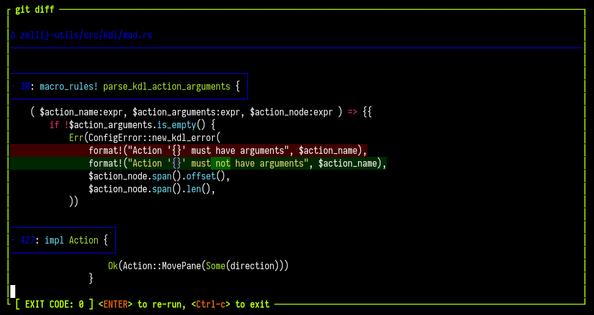
Zellij Edit
It's possible to open your default editor pointed at a file in a new Zellij pane.
This can be useful to save time instead of opening a new pane and starting your default editor inside it manually.
eg.
$ zellij edit ./main.rs # open main.rs in a new pane
$ zellij edit --floating ./main.rs # open main.rs in a new floating pane
$ zellij edit ./main.rs --line-number 10 # open main.rs pointed at line number 10
Possible Options:
-b, --borderless <BORDERLESS> start this pane without a border (warning: will make it
impossible to move with the mouse) [possible values: true,
false]
--border-style <BORDER_STYLE> Border line style, eg. "double" or
"top:double,left:single,rounded"
--close-replaced-pane Close the replaced pane instead of suspending it (only
effective with --in-place)
--cwd <CWD> Change the working directory of the editor
-d, --direction <DIRECTION> Direction to open the new pane in
-f, --floating Open the new pane in floating mode
-h, --help Print help information
--height <HEIGHT> The height if the pane is floating as a bare integer (eg. 1)
or percent (eg. 10%)
-i, --in-place Open the new pane in place of the current pane, temporarily
suspending it
-l, --line-number <LINE_NUMBER> Open the file in the specified line number
--near-current-pane if set, will open the pane near the current one rather than
following the user's focus
--no-focus Open the pane without changing the focus of any client
--pinned <PINNED> Whether to pin a floating pane so that it is always on top
--tab-id <TAB_ID> Open the pane in the tab with this id (conflicts with
--in-place and --near-current-pane)
--width <WIDTH> The width if the pane is floating as a bare integer (eg. 1)
or percent (eg. 10%)
-x, --x <X> The x coordinates if the pane is floating as a bare integer
(eg. 1) or percent (eg. 10%)
-y, --y <Y> The y coordinates if the pane is floating as a bare integer
(eg. 1) or percent (eg. 10%)
About --border-style: see set-pane-border-style for the format.
Note: The default editor is anything set in $EDITOR or $VISUAL - alternatively, it can be set explicitly with the scrollback_editor configuration option.
Another Note: To shorten this command, see Cli Completions
CLI Actions
A note about pane ids: Since terminal panes and plugin panes can have overlapping IDs, they are differentiated by prefixing the pane type, eg. terminal_1 is a different pane than plugin_1. The ID of terminal panes is the same one that can be discovered through the ZELLIJ_PANE_ID environment variable. When a --pane-id flag accepts a pane id, it can be specified as terminal_1, plugin_2, or just 3 (equivalent to terminal_3).
- apply-floating-swap-layout
- apply-tiled-swap-layout
- are-floating-panes-visible
- change-floating-pane-coordinates
- clear
- close-pane
- close-tab
- close-tab-by-id
- current-tab-info
- detach
- dismiss-info-popups
- dump-layout
- dump-screen
- edit
- edit-scrollback
- focus-last-pane
- focus-next-pane
- focus-pane-id
- focus-previous-pane
- go-to-next-attention
- go-to-next-session
- go-to-next-tab
- go-to-previous-session
- go-to-previous-tab
- go-to-tab
- go-to-tab-by-id
- go-to-tab-name
- half-page-scroll-down
- half-page-scroll-up
- hide-bars
- hide-floating-panes
- ignore-pane-output
- launch-or-focus-plugin
- launch-plugin
- list-clients
- list-panes
- list-tabs
- mark-all-seen
- mark-pane-seen
- move-focus
- move-focus-or-tab
- move-pane
- move-pane-backwards
- move-tab
- mute-pane
- mute-session
- mute-tab
- new-pane
- new-tab
- next-swap-layout
- open-context-menu
- override-layout
- page-scroll-down
- page-scroll-up
- paste
- pipe
- previous-swap-layout
- query-tab-names
- rename-pane
- rename-session
- rename-tab
- rename-tab-by-id
- resize
- save-session
- scroll-down
- scroll-to-bottom
- scroll-to-top
- scroll-up
- send-keys
- set-dark-theme
- set-light-theme
- set-pane-border-style
- set-pane-borderless
- set-pane-color
- set-pane-frame-style
- set-resurrect-command
- show-bars
- show-floating-panes
- stack-panes
- start-or-reload-plugin
- switch-mode
- switch-session
- toggle-active-sync-tab
- toggle-bars
- toggle-floating-panes
- toggle-fullscreen
- toggle-mirror-resize
- toggle-no-ui-fullscreen
- toggle-pane-borderless
- toggle-pane-embed-or-floating
- toggle-pane-frames
- toggle-pane-pinned
- toggle-session
- toggle-stack-list-orientation
- toggle-theme
- toggle-tray-icon
- undo-rename-pane
- undo-rename-tab
- watch-pane
- write
- write-chars
apply-floating-swap-layout
Apply the floating swap layout with the given name. The visibility of floating panes and the focus are left unchanged. Exits with status 1 if no floating swap layout with that name fits the current number of panes.
ARGS: The name of the floating swap layout, as declared in the layout file
OPTIONS:
-t, --tab-id <TAB_ID> Target a specific tab by ID
eg.
$ zellij action apply-floating-swap-layout spread
$ zellij action apply-floating-swap-layout spread --tab-id 3
apply-tiled-swap-layout
Apply the tiled swap layout with the given name. The visibility of floating panes and the focus are left unchanged. Exits with status 1 if no tiled swap layout with that name fits the current number of panes.
Unlike next-swap-layout, which moves through the swap layouts in order, this selects one directly.
ARGS: The name of the tiled swap layout, as declared in the layout file (eg. swap_tiled_layout name="vertical")
OPTIONS:
-t, --tab-id <TAB_ID> Target a specific tab by ID
eg.
$ zellij action apply-tiled-swap-layout vertical
$ zellij action apply-tiled-swap-layout stacked --tab-id 3
are-floating-panes-visible
Check if floating panes are visible in the specified tab (or active tab). Prints "true" to stdout and exits 0 if visible. Prints "false" to stdout and exits 1 if not visible.
OPTIONS:
-t, --tab-id <TAB_ID> Target a specific tab by ID
eg.
$ zellij action are-floating-panes-visible
$ zellij action are-floating-panes-visible --tab-id 3
change-floating-pane-coordinates
Given a pane id, and coordinates, will change the coordinates of this pane.
ARGS: The pane id (see example below - these can be discovered through the $ZELLIJ_PANE_ID env var)
OPTIONS:
-b, --borderless <BORDERLESS> Change the border state of the pane
--border-style <STYLE> Border line style, eg. "double" or "top:double,left:single,rounded"
--height <HEIGHT> The height if the pane is floating as a bare integer (eg. 1) or
percent (eg. 10%)
-p, --pane-id <PANE_ID> The pane_id of the floating pane, eg. terminal_1, plugin_2 or 3
(equivalent to terminal_3)
--pinned <PINNED> Whether to pin a floating pane so that it is always on top
--width <WIDTH> The width if the pane is floating as a bare integer (eg. 1) or
percent (eg. 10%)
-x, --x <X> The x coordinates if the pane is floating as a bare integer (eg. 1)
or percent (eg. 10%)
-y, --y <Y> The y coordinates if the pane is floating as a bare integer (eg. 1)
or percent (eg. 10%)
eg.
zellij action change-floating-pane-coordinates --pane-id terminal_15 --height 10 --width 10 -x 10 -y 10
zellij action change-floating-pane-coordinates --pane-id terminal_15 --border-style double
The format of --border-style is described under set-pane-border-style.
clear
Clear all buffers for a focused pane
OPTIONS:
-p, --pane-id <PANE_ID> Target a specific pane by ID (eg. terminal_1, plugin_2 or 3)
eg.
$ zellij action clear
$ zellij action clear --pane-id terminal_3
close-pane
Close the focused pane
OPTIONS:
-p, --pane-id <PANE_ID> Target a specific pane by ID (eg. terminal_1, plugin_2 or 3)
eg.
$ zellij action close-pane
$ zellij action close-pane --pane-id terminal_3
close-tab
Close the current tab
OPTIONS:
-t, --tab-id <TAB_ID> Target a specific tab by stable ID
eg.
$ zellij action close-tab
$ zellij action close-tab --tab-id 5
close-tab-by-id
Close a tab by its stable ID
ARGS: The tab ID (integer)
eg.
$ zellij action close-tab-by-id 5
current-tab-info
Get information about the currently active tab. Returns the tab name and ID by default.
OPTIONS:
-j, --json Output as JSON with full TabInfo
eg.
$ zellij action current-tab-info
Sample output:
name: Tab #1
id: 0
position: 0
With --json:
$ zellij action current-tab-info --json
Sample output:
{
"position": 0,
"name": "Tab #1",
"active": true,
"panes_to_hide": 0,
"is_fullscreen_active": false,
"is_sync_panes_active": false,
"are_floating_panes_visible": false,
"other_focused_clients": [],
"active_swap_layout_name": "default",
"is_swap_layout_dirty": false,
"viewport_rows": 24,
"viewport_columns": 80,
"display_area_rows": 26,
"display_area_columns": 80,
"selectable_tiled_panes_count": 2,
"selectable_floating_panes_count": 0,
"tab_id": 0,
"has_bell_notification": false,
"is_flashing_bell": false
}
detach
Detach from the current session, leaving it running in the background
eg.
$ zellij action detach
dismiss-info-popups
Close the information popups that do not take the keyboard, such as the notices opened by zellij prompt notify.
eg.
$ zellij action dismiss-info-popups
dump-layout
Dumps the current Layout of the session to STDOUT
eg.
$ zellij action dump-layout
dump-screen
Dumps the viewport of a pane to a file or to STDOUT. Optionally includes the full scrollback.
OPTIONS:
--path <PATH> File path to dump content to (if omitted, prints to STDOUT)
-f, --full Dump the pane with full scrollback
-p, --pane-id <PANE_ID> Target a specific pane by ID (if not specified, dumps the focused pane)
-a, --ansi Preserve ANSI styling in the dump output
eg.
$ zellij action dump-screen --path /tmp/screen-dump.txt
$ zellij action dump-screen --full --ansi
$ zellij action dump-screen --pane-id terminal_3 --full
edit
Open the specified file in a new zellij pane with your default EDITOR. Returns the created pane ID.
ARGS: The path to the file to open (eg. /tmp/my-file.rs)
OPTIONS:
-d, --direction <DIRECTION> Direction to open [right|down] (conflicts with --floating)
-f, --floating Open in floating mode
-i, --in-place Open in place of the focused pane
--close-replaced-pane Close the replaced pane instead of suspending (requires --in-place)
-l, --line-number <LINE_NUMBER>
--cwd <CWD> Working directory for the editor pane
-x, --x <X> X coordinate for floating pane (requires --floating)
-y, --y <Y> Y coordinate for floating pane (requires --floating)
--width <WIDTH> Width for floating pane (requires --floating)
--height <HEIGHT> Height for floating pane (requires --floating)
--pinned <PINNED> Pin the floating pane (requires --floating)
--near-current-pane Open near the current pane rather than following focus
--no-focus Open the pane without changing the focus of any client
--tab-id <TAB_ID> Target a specific tab by ID (conflicts with --in-place, --near-current-pane)
-b, --borderless <BORDERLESS> Start without a border
--border-style <STYLE> Border line style, eg. "double" or "top:double,left:single,rounded"
eg.
$ zellij action edit ./my-file.rs -f
$ zellij action edit ./my-file.rs --in-place
$ zellij action edit ./my-file.rs -f --border-style "heavy,rounded"
The format of --border-style is described under set-pane-border-style.
Note: it is also possible to issue this action without the action prefix:
eg.
$ zellij edit ./my-file.rs -f
edit-scrollback
Open the pane scrollback in your default editor
OPTIONS:
-p, --pane-id <PANE_ID> Target a specific pane by ID
-a, --ansi Preserve ANSI styling in the scrollback dump
eg.
$ zellij action edit-scrollback
$ zellij action edit-scrollback --pane-id terminal_3 --ansi
focus-last-pane
Change focus back to the pane that was focused before the currently focused one. Works across floating and tiled panes, and swaps the pane in place when the focused pane is fullscreen.
eg.
$ zellij action focus-last-pane
focus-next-pane
Change focus to the next pane
eg.
$ zellij action focus-next-pane
focus-pane-id
Focus a specific pane by its ID.
ARGS: The pane ID (eg. terminal_1, plugin_2, or 3 which is equivalent to terminal_3)
eg.
$ zellij action focus-pane-id terminal_1
$ zellij action focus-pane-id 3
focus-previous-pane
Change focus to the previous pane
eg.
$ zellij action focus-previous-pane
go-to-next-attention
Jump to the next pane that needs attention in any running session, switching session if needed. See the inbox for how panes come to need attention.
eg.
$ zellij action go-to-next-attention
go-to-next-session
Go forward in this client's session history (the sessions it switched between). Use after go-to-previous-session.
eg.
$ zellij action go-to-next-session
go-to-next-tab
Go to the next tab
eg.
$ zellij action go-to-next-tab
go-to-previous-session
Go back to the previous session in this client's session history (the sessions it switched between).
eg.
$ zellij action go-to-previous-session
go-to-previous-tab
Go to the previous tab
eg.
$ zellij action go-to-previous-tab
go-to-tab
Go to tab with index [index]
ARGS: The tab index (eg. 1)
eg.
$ zellij action go-to-tab 1
go-to-tab-by-id
Go to a tab by its stable ID
ARGS: The tab ID (integer)
eg.
$ zellij action go-to-tab-by-id 5
go-to-tab-name
Go to tab with name [name]. When --create is used and a tab is created, outputs the new tab ID.
ARGS: The tab name (eg. "Tab #1")
OPTIONS:
-c, --create Create a tab if one does not exist
eg.
$ zellij action go-to-tab-name "Tab #1"
half-page-scroll-down
Scroll down half page in focus pane
OPTIONS:
-p, --pane-id <PANE_ID> Target a specific pane by ID
eg.
$ zellij action half-page-scroll-down
half-page-scroll-up
Scroll up half page in focus pane
OPTIONS:
-p, --pane-id <PANE_ID> Target a specific pane by ID
eg.
$ zellij action half-page-scroll-up
hide-bars
Hide UI bars (eg. the tab-bar and status-bar) in every tab of the session. The bars can be shown again with show-bars or toggle-bars.
ARGS (optional): The bars to hide: tab-bar, status-bar, compact-bar, a plugin alias or plugin location, or all. If none are given, all bars are hidden.
eg.
$ zellij action hide-bars
$ zellij action hide-bars tab-bar
$ zellij action hide-bars tab-bar status-bar
See also the bars_hidden_on_start, hidden_bars_notification and mode_hints_when_bars_hidden options.
hide-floating-panes
Hide all floating panes in the specified tab (or active tab). Returns exit code 0 if changed, 2 if already hidden, 1 if the tab was not found.
OPTIONS:
-t, --tab-id <TAB_ID> Target a specific tab by ID
eg.
$ zellij action hide-floating-panes
$ zellij action hide-floating-panes --tab-id 3
ignore-pane-output
Stop reporting new output of a pane as something that needs attention, or start reporting it again (toggle). Defaults to the focused pane. See the inbox.
OPTIONS:
-p, --pane-id <PANE_ID> Target a specific pane by ID (eg. terminal_1 or 3)
eg.
$ zellij action ignore-pane-output
$ zellij action ignore-pane-output --pane-id terminal_3
launch-or-focus-plugin
Launch a plugin if it is not loaded somewhere in the session, focus it if it is. Returns the plugin pane ID.
ARGS: The plugin URL (eg. file:/path/to/my/plugin.wasm)
OPTIONS:
-f, --floating Open in floating mode when launching
-i, --in-place Open in place of the focused pane when launching
--close-replaced-pane Close the replaced pane (requires --in-place)
-m, --move-to-focused-tab Move the plugin to the focused tab if already running
-c, --configuration <CONFIG> Plugin configuration (key=value pairs)
-s, --skip-plugin-cache Skip the plugin cache and force reloading
--tab-id <TAB_ID> Target a specific tab by ID (conflicts with --in-place)
eg.
zellij action launch-or-focus-plugin zellij:strider --floating
zellij action launch-or-focus-plugin zellij:strider --in-place --move-to-focused-tab
launch-plugin
Launch a new plugin instance. Unlike launch-or-focus-plugin, this always launches a new instance. Returns the plugin pane ID.
ARGS: The plugin URL (eg. file:/path/to/my/plugin.wasm)
OPTIONS:
-f, --floating Open in floating mode
-i, --in-place Open in place of the focused pane
--close-replaced-pane Close the replaced pane (requires --in-place)
-c, --configuration <CONFIG> Plugin configuration (key=value pairs)
-s, --skip-plugin-cache Skip the plugin cache and force reloading
--tab-id <TAB_ID> Target a specific tab by ID (conflicts with --in-place)
--no-focus Open the plugin pane without changing the focus of any client
eg.
zellij action launch-plugin file:/path/to/plugin.wasm --floating
zellij action launch-plugin zellij:session-manager --no-focus
list-clients
List all clients connected to the current session, their focused pane id and their running program (if it's not the default shell and if Zellij can detect it).
eg.
$ zellij action list-clients
CLIENT_ID ZELLIJ_PANE_ID RUNNING_COMMAND
1 plugin_2 zellij:session-manager
2 terminal_3 vim /tmp/my-file.txt
list-panes
List all panes in the current session with optional detail fields.
OPTIONS:
-t, --tab Include tab information
-c, --command Include running command information
-s, --state Include pane state (focused, floating, exited, etc.)
-g, --geometry Include geometry (position, size)
-a, --all Include all available fields
-j, --json Output as JSON
eg.
$ zellij action list-panes
Sample output (default):
PANE_ID TYPE TITLE
terminal_1 terminal /bin/bash
plugin_0 plugin tab-bar
terminal_2 terminal vim main.rs
With --all:
$ zellij action list-panes --all
Sample output:
TAB_ID TAB_POS TAB_NAME PANE_ID TYPE TITLE COMMAND CWD FOCUSED FLOATING EXITED X Y ROWS COLS
0 0 Tab #1 terminal_1 terminal /bin/bash bash /home/user/project true false false 0 1 24 80
0 0 Tab #1 plugin_0 plugin tab-bar zellij:tab-bar - false false false 0 0 1 80
1 1 Tab #2 terminal_2 terminal vim main.rs vim main.rs /home/user/project/src true false false 0 1 24 80
With --json:
$ zellij action list-panes --json
Sample output:
[
{
"id": 1,
"is_plugin": false,
"is_focused": true,
"is_fullscreen": false,
"is_floating": false,
"is_suppressed": false,
"title": "/bin/bash",
"exited": false,
"exit_status": null,
"is_held": false,
"pane_x": 0,
"pane_content_x": 1,
"pane_y": 1,
"pane_content_y": 2,
"pane_rows": 24,
"pane_content_rows": 22,
"pane_columns": 80,
"pane_content_columns": 78,
"cursor_coordinates_in_pane": [0, 5],
"terminal_command": null,
"plugin_url": null,
"is_selectable": true,
"tab_id": 0,
"tab_position": 0,
"tab_name": "Tab #1",
"pane_command": "bash",
"pane_cwd": "/home/user/project"
},
{
"id": 0,
"is_plugin": true,
"is_focused": false,
"is_fullscreen": false,
"is_floating": false,
"is_suppressed": false,
"title": "tab-bar",
"exited": false,
"exit_status": null,
"is_held": false,
"pane_x": 0,
"pane_content_x": 0,
"pane_y": 0,
"pane_content_y": 0,
"pane_rows": 1,
"pane_content_rows": 1,
"pane_columns": 80,
"pane_content_columns": 80,
"cursor_coordinates_in_pane": null,
"terminal_command": null,
"plugin_url": "zellij:tab-bar",
"is_selectable": false,
"tab_id": 0,
"tab_position": 0,
"tab_name": "Tab #1"
}
]
list-tabs
List all tabs with their information.
OPTIONS:
-s, --state Include state information (active, fullscreen, sync, floating visibility)
-d, --dimensions Include dimension information
-p, --panes Include pane counts
-l, --layout Include layout information (swap layout name and dirty state)
-a, --all Include all available fields
-j, --json Output as JSON
eg.
$ zellij action list-tabs
Sample output (default):
TAB_ID POSITION NAME
0 0 Tab #1
1 1 editor
2 2 logs
With --all:
$ zellij action list-tabs --all
Sample output:
TAB_ID POSITION NAME ACTIVE FULLSCREEN SYNC_PANES FLOATING_VIS VP_ROWS VP_COLS DA_ROWS DA_COLS TILED_PANES FLOAT_PANES HIDDEN_PANES SWAP_LAYOUT LAYOUT_DIRTY
0 0 Tab #1 true false false false 24 80 26 80 2 0 0 default false
1 1 editor false false false false 24 80 26 80 1 0 0 - false
2 2 logs false false false true 24 80 26 80 1 1 0 default true
With --json:
$ zellij action list-tabs --json
Sample output:
[
{
"position": 0,
"name": "Tab #1",
"active": true,
"panes_to_hide": 0,
"is_fullscreen_active": false,
"is_sync_panes_active": false,
"are_floating_panes_visible": false,
"other_focused_clients": [],
"active_swap_layout_name": "default",
"is_swap_layout_dirty": false,
"viewport_rows": 24,
"viewport_columns": 80,
"display_area_rows": 26,
"display_area_columns": 80,
"selectable_tiled_panes_count": 2,
"selectable_floating_panes_count": 0,
"tab_id": 0,
"has_bell_notification": false,
"is_flashing_bell": false
},
{
"position": 1,
"name": "editor",
"active": false,
"panes_to_hide": 0,
"is_fullscreen_active": false,
"is_sync_panes_active": false,
"are_floating_panes_visible": false,
"other_focused_clients": [],
"active_swap_layout_name": null,
"is_swap_layout_dirty": false,
"viewport_rows": 24,
"viewport_columns": 80,
"display_area_rows": 26,
"display_area_columns": 80,
"selectable_tiled_panes_count": 1,
"selectable_floating_panes_count": 0,
"tab_id": 1,
"has_bell_notification": false,
"is_flashing_bell": false
}
]
mark-all-seen
Mark every pane of every running session as seen, clearing their past events. See the inbox.
OPTIONS:
--this-session Only mark the panes of the current session
eg.
$ zellij action mark-all-seen
$ zellij action mark-all-seen --this-session
mark-pane-seen
Mark a pane as seen, clearing its past events. Defaults to the focused pane. See the inbox.
OPTIONS:
-p, --pane-id <PANE_ID> Target a specific pane by ID (eg. terminal_1 or 3)
eg.
$ zellij action mark-pane-seen
$ zellij action mark-pane-seen --pane-id terminal_3
move-focus
Move the focused pane in the specified direction.
ARGS: The direction to move [right|left|up|down]
eg.
$ zellij action move-focus left
move-focus-or-tab
Move focus to the pane or tab (if on screen edge) in the specified direction
ARGS: The direction to move [right|left|up|down]
eg.
$ zellij action move-focus-or-tab left
move-pane
Change the location of the focused pane in the specified direction
ARGS (optional): The direction to move [right|left|up|down]
OPTIONS:
-p, --pane-id <PANE_ID> Target a specific pane by ID
eg.
$ zellij action move-pane left
$ zellij action move-pane --pane-id terminal_3 right
move-pane-backwards
Rotate the location of the focused pane backwards in the layout order
OPTIONS:
-p, --pane-id <PANE_ID> Target a specific pane by ID
eg.
$ zellij action move-pane-backwards
move-tab
Move the focused tab in the specified direction.
ARGS: The direction to move [right|left]
OPTIONS:
-t, --tab-id <TAB_ID> Target a specific tab by ID
eg.
$ zellij action move-tab right
$ zellij action move-tab left --tab-id 3
mute-pane
Mute or unmute the attention status of a pane (toggle). Defaults to the focused pane. See the inbox.
OPTIONS:
-p, --pane-id <PANE_ID> Target a specific pane by ID (eg. terminal_1 or 3)
eg.
$ zellij action mute-pane
$ zellij action mute-pane --pane-id terminal_3
mute-session
Mute or unmute the attention status of the whole session (toggle). See the inbox.
eg.
$ zellij action mute-session
mute-tab
Mute or unmute the attention status of all panes in a tab (toggle). Defaults to the active tab. See the inbox.
OPTIONS:
-t, --tab-id <TAB_ID> Target a specific tab by its ID
eg.
$ zellij action mute-tab
$ zellij action mute-tab --tab-id 2
new-pane
Open a new pane in the specified direction or as a floating pane. If no direction is specified, will try to use the biggest available space. Returns the created pane ID.
ARGS (optional): the command to run inside the pane in place of the default shell (must be preceded by a double-dash --)
OPTIONS:
-c, --close-on-exit Close the pane immediately when its command exits
--cwd <CWD> Change the working directory of the new pane
-d, --direction <DIRECTION> Direction to open the new pane in (conflicts with --floating)
-f, --floating Open the new pane in floating mode
-i, --in-place Open in place of the focused pane (conflicts with --floating/--direction)
--close-replaced-pane Close the replaced pane instead of suspending (requires --in-place)
-n, --name <NAME> Name of the new pane
-p, --plugin <PLUGIN> Plugin URL to load (conflicts with command and --direction)
--configuration <CONFIG> Plugin configuration (requires --plugin)
--skip-plugin-cache Skip the plugin cache (requires --plugin)
-s, --start-suspended Start the command suspended
--notify Watch the pane: notify each time its command finishes or its
output goes quiet, until the watch is turned off (requires a command)
-x, --x <X> X coordinate for floating pane (requires --floating)
-y, --y <Y> Y coordinate for floating pane (requires --floating)
--width <WIDTH> Width for floating pane (requires --floating)
--height <HEIGHT> Height for floating pane (requires --floating)
--pinned <PINNED> Pin the floating pane (requires --floating)
--stacked Open in stacked mode (conflicts with --floating/--direction)
--tab-id <TAB_ID> Target a specific tab by ID (conflicts with --in-place, --near-current-pane)
--pane-id <PANE_ID> The pane to replace when using --in-place (default: the focused pane)
-b, --blocking Block until the pane exits
--block-until-exit-success Block until the command exits with status 0
--block-until-exit-failure Block until the command exits with non-zero status
--block-until-exit Block until the command exits regardless of status
--near-current-pane Open near the current pane rather than following focus
--no-focus Open the pane without changing the focus of any client
--borderless <BORDERLESS> Start without a border
--border-style <STYLE> Border line style, eg. "double" or "top:double,left:single,rounded"
eg.
$ zellij action new-pane -f # open a new floating pane with the default shell
$ zellij action new-pane --name "follow this log!" -- tail -f /tmp/my-log-file
$ zellij action new-pane --stacked
$ zellij action new-pane --in-place -- htop
$ zellij action new-pane --in-place --pane-id terminal_4 -- htop
$ zellij action new-pane --plugin zellij:strider --floating
$ zellij action new-pane --no-focus -- tail -f /tmp/my-log-file
$ zellij action new-pane --notify -- cargo build
$ zellij action new-pane --floating --border-style "double,rounded"
Note about --notify: the new pane is watched as with watch-pane. A notification is sent each time its command finishes or its output goes quiet, until the watch is turned off. See the inbox for where these notifications appear.
Note about --border-style: the format is described under set-pane-border-style.
Note about --no-focus: the pane is opened without changing the focus of any connected client. Its placement is relative to the pane the command was issued from rather than to the focused pane.
Note: This can also be shortened to zellij run
eg.
$ zellij run -- tail -f /tmp/my-log-file
new-tab
Create a new tab, optionally with a specified tab layout and name. Returns the created tab's ID.
Specifying a path to a layout file with --layout will start that tab with the specified layout.
If the --cwd flag is included with the --layout flag, all relative paths in that layout will start from this cwd. Replacing the global cwd in the layout if it exists.
See layout CWD composition for more info.
ARGS (optional): A command to run in the initial pane (must be preceded by a double-dash --, conflicts with --initial-plugin)
OPTIONS:
-c, --cwd <CWD> Working directory for the new tab
-l, --layout <LAYOUT> Layout to use
--layout-dir <LAYOUT_DIR> Default folder for layouts (requires --layout)
--layout-string <LAYOUT_STRING> Raw KDL layout string to use directly (conflicts with --layout)
-n, --name <NAME> Name of the new tab
--initial-plugin <PLUGIN> Plugin to load in the initial pane (conflicts with command)
--close-on-exit Close the initial pane when its command exits (requires command)
--start-suspended Start the command suspended (requires command)
--block-until-exit-success Block until the command exits with status 0
--block-until-exit-failure Block until the command exits with non-zero status
--block-until-exit Block until the command exits regardless of status
--no-focus Create the tab without changing the focus of any client
eg.
$ zellij action new-tab --layout /path/to/layout.kdl --name "my tab"
$ zellij action new-tab -- htop
$ zellij action new-tab --no-focus --name "background tab"
Note about --no-focus: the new tab is created in the background without changing the focus of any connected client. When a layout is used, its focus properties are suppressed as well.
next-swap-layout
Switch to the next swap layout for the current tab
OPTIONS:
-t, --tab-id <TAB_ID> Target a specific tab by ID
eg.
$ zellij action next-swap-layout
To select a swap layout by name, see apply-tiled-swap-layout and apply-floating-swap-layout.
open-context-menu
Open the right-click menu for the focused pane, at that pane's position. See the right-click menu.
eg.
$ zellij action open-context-menu
override-layout
Override the layout of the active tab with the specified layout file.
ARGS (optional): Path to the layout file - either this or --layout-string must be provided
OPTIONS:
--layout-dir <LAYOUT_DIR> Default folder for layouts
--layout-string <LAYOUT_STRING> Raw KDL layout string to use directly (conflicts with layout path arg)
--retain-existing-terminal-panes Retain existing terminal panes that do not fit the new layout
--retain-existing-plugin-panes Retain existing plugin panes that do not fit the new layout
--apply-only-to-active-tab Only apply the layout to the active tab
eg.
$ zellij action override-layout /path/to/layout.kdl
$ zellij action override-layout /path/to/layout.kdl --retain-existing-terminal-panes --apply-only-to-active-tab
$ zellij action override-layout --layout-string 'layout { pane; pane; }'
Note: layouts provided with --layout-string (here and in new-tab / switch-session) are parsed and validated before being sent to the session, so syntax errors are reported immediately.
page-scroll-down
Scroll down one page in focus pane
OPTIONS:
-p, --pane-id <PANE_ID> Target a specific pane by ID
eg.
$ zellij action page-scroll-down
page-scroll-up
Scroll up one page in focus pane
OPTIONS:
-p, --pane-id <PANE_ID> Target a specific pane by ID
eg.
$ zellij action page-scroll-up
paste
Paste text to the terminal using bracketed paste mode
ARGS: The text to paste
OPTIONS:
-p, --pane-id <PANE_ID> Target a specific pane by ID
eg.
$ zellij action paste "Hello, World!"
pipe
Send data to one or more plugins via a pipe. Plugins will be launched if they are not already running.
ARGS (optional): Payload data to send. If blank, listens on STDIN.
OPTIONS:
-n, --name <NAME> Name of the pipe
-a, --args <ARGS> Arguments for the pipe (key=value pairs)
-p, --plugin <PLUGIN> Plugin URL to direct the pipe to
-c, --plugin-configuration <CONFIG> Plugin configuration (key=value pairs)
-l, --force-launch-plugin Launch a new plugin even if one is already running
-s, --skip-plugin-cache Skip the plugin cache and force reloading
-f, --floating-plugin <BOOL> Whether the launched plugin should be floating
-i, --in-place-plugin <BOOL> Launch plugin in place (conflicts with --floating-plugin)
-w, --plugin-cwd <CWD> Working directory for the launched plugin
-t, --plugin-title <TITLE> Pane title for the launched plugin
--popup <PLACEMENT> Open the launched plugin as a popup (conflicts with
--floating-plugin and --in-place-plugin)
--popup-no-focus The popup does not take key focus (requires --popup)
--popup-capture-all-keys Send every key to the popup, including keys bound to
Zellij actions (requires --popup)
--popup-outside-click <BEHAVIOR> What a click outside the popup does: block or close
(requires --popup)
eg.
$ zellij action pipe --name "my-pipe" --plugin "file:/path/to/plugin.wasm" "some payload"
$ echo "data from stdin" | zellij action pipe --name "my-pipe" --plugin "my-plugin-alias"
$ zellij action pipe --plugin "file:/path/to/plugin.wasm" --popup center --popup-outside-click close
The --popup* flags are described in Opening plugins as popups. The exit status of this command can be set by the plugin, see Zellij Pipe.
previous-swap-layout
Switch to the previous swap layout for the current tab
OPTIONS:
-t, --tab-id <TAB_ID> Target a specific tab by ID
eg.
$ zellij action previous-swap-layout
query-tab-names
Query all tab names (receive a textual list on the command line)
eg.
$ zellij action query-tab-names
rename-pane
Renames the focused pane (title will appear on the pane frame)
ARGS: the pane name
OPTIONS:
-p, --pane-id <PANE_ID> Target a specific pane by ID
eg.
$ zellij action rename-pane "alice the cat"
$ zellij action rename-pane --pane-id terminal_3 "my pane"
rename-session
Rename the current session
ARGS: The new session name
eg.
$ zellij action rename-session "my-new-session-name"
rename-tab
Renames the focused tab
ARGS: the tab name
OPTIONS:
-t, --tab-id <TAB_ID> Target a specific tab by ID
eg.
$ zellij action rename-tab "alice the cat"
$ zellij action rename-tab --tab-id 3 "my tab"
rename-tab-by-id
Rename a tab by its stable ID
ARGS: The tab ID (integer) followed by the new name (string)
eg.
$ zellij action rename-tab-by-id 5 "my new tab name"
resize
Resize the focused pane in the specified direction.
ARGS: The resize direction [right|left|up|down|+|-]
OPTIONS:
-p, --pane-id <PANE_ID> Target a specific pane by ID
eg.
$ zellij action resize left
$ zellij action resize --pane-id terminal_3 +
save-session
Save the current session state to disk immediately. Useful for triggering a manual serialization outside the automatic interval.
eg.
$ zellij action save-session
scroll-down
Scroll down 1 line in the focused pane
OPTIONS:
-p, --pane-id <PANE_ID> Target a specific pane by ID
eg.
$ zellij action scroll-down
scroll-to-bottom
Scroll down to bottom in the focused pane
OPTIONS:
-p, --pane-id <PANE_ID> Target a specific pane by ID
eg.
$ zellij action scroll-to-bottom
scroll-to-top
Scroll up to top in the focused pane
OPTIONS:
-p, --pane-id <PANE_ID> Target a specific pane by ID
eg.
$ zellij action scroll-to-top
scroll-up
Scroll up 1 line in the focused pane
OPTIONS:
-p, --pane-id <PANE_ID> Target a specific pane by ID
eg.
$ zellij action scroll-up
send-keys
Send one or more keys to the terminal. Keys are specified as space-separated names (eg. "Ctrl a", "F1", "Alt Shift b").
ARGS: One or more key names (space-separated)
OPTIONS:
-p, --pane-id <PANE_ID> Target a specific pane by ID
eg.
$ zellij action send-keys "Ctrl a"
$ zellij action send-keys --pane-id terminal_3 "Alt b" "Enter"
set-dark-theme
Switch the theme to dark (uses the configured theme_dark).
eg.
$ zellij action set-dark-theme
set-light-theme
Switch the theme to light (uses the configured theme_light).
eg.
$ zellij action set-light-theme
set-pane-border-style
Change the border line style of an existing pane. Leaving out --border-style returns the pane to the default border.
OPTIONS:
-p, --pane-id <PANE_ID> Target pane by ID (required), eg. terminal_1, plugin_2 or 3
--border-style <STYLE> Border line style, eg. "double" or "top:double,left:single,rounded"
The --border-style value (here and in new-pane, edit, run, plugin and change-floating-pane-coordinates) is a comma-separated list of:
- A line style on its own, which applies to all four sides (eg.
double) <side>:<line style>or<side>=<line style>, where<side>is one ofall,top,right,bottomorleft(eg.top:double)roundedfor rounded corners, orrounded:true/rounded:false
The line styles are single, double, heavy (also accepted as bold or thick), dashed and heavy_dashed.
eg.
$ zellij action set-pane-border-style --pane-id terminal_3 --border-style double
$ zellij action set-pane-border-style --pane-id terminal_3 --border-style "top:double,left:single,rounded"
$ zellij action set-pane-border-style --pane-id terminal_3
set-pane-borderless
Set the borderless state of a specific pane
OPTIONS (required):
-p, --pane-id <PANE_ID> Target pane by ID (required)
-b, --borderless <BORDERLESS> Whether the pane should be borderless (required)
eg.
$ zellij action set-pane-borderless --pane-id terminal_3 --borderless true
set-pane-frame-style
Set the style of the pane frames for the whole session at runtime. This is the runtime equivalent of the pane_frame_style configuration option.
ARGS: The frame style - one of full (a full border around each pane), titles (a single title line above each pane) or none (no frames)
eg.
$ zellij action set-pane-frame-style titles
$ zellij action set-pane-frame-style full
$ zellij action set-pane-frame-style none
set-pane-color
Set the default foreground and/or background color of a pane. Colors can be specified as hex (eg. "#00e000") or rgb notation (eg. "rgb:00/e0/00").
OPTIONS:
-p, --pane-id <PANE_ID> Target pane by ID (defaults to $ZELLIJ_PANE_ID)
--fg <FG> Foreground color (eg. "#00e000", "rgb:00/e0/00")
--bg <BG> Background color (eg. "#001a3a", "rgb:00/1a/3a")
--reset Reset pane colors to terminal defaults (conflicts with --fg, --bg)
eg.
$ zellij action set-pane-color --fg "#00e000" --bg "#001a3a"
$ zellij action set-pane-color --pane-id terminal_3 --reset
set-resurrect-command
Set the command a terminal pane will be resurrected with, instead of the command Zellij detects running in it. This lets a program that knows how to resume itself (eg. by a session id) register the exact command to run when the session is resurrected.
The command set this way takes the place of the detected command and is not passed through the post_command_discovery_hook. It stays in effect until it is removed with --clear or until the pane is closed. It can only be set for terminal panes.
ARGS: The command and its arguments (must be preceded by a double-dash --). Required unless --clear is given.
OPTIONS:
-p, --pane-id <PANE_ID> The terminal pane, eg. terminal_1 or 3 (defaults to $ZELLIJ_PANE_ID)
--cwd <CWD> Working directory to resurrect the pane in (conflicts with --clear)
--clear Remove a previously set resurrect command (conflicts with a command)
A relative --cwd is resolved from the folder the command is run in.
eg.
$ zellij action set-resurrect-command -- opencode -s ses_abc
$ zellij action set-resurrect-command --pane-id terminal_3 --cwd /home/user/project -- htop
$ zellij action set-resurrect-command --clear
show-bars
Show all hidden UI bars. See hide-bars.
eg.
$ zellij action show-bars
show-floating-panes
Show all floating panes in the specified tab (or active tab). Returns exit code 0 if changed, 2 if already visible, 1 if the tab was not found.
OPTIONS:
-t, --tab-id <TAB_ID> Target a specific tab by ID
eg.
$ zellij action show-floating-panes
$ zellij action show-floating-panes --tab-id 3
start-or-reload-plugin
Launch a plugin if it is not loaded or reload it (skipping cache) if it is. Mostly useful for plugin development.
ARGS: The plugin URL (eg. file:/path/to/my/plugin.wasm)
OPTIONS:
-c, --configuration <CONFIG> Plugin configuration (key=value pairs)
eg.
zellij action start-or-reload-plugin zellij:strider
zellij action start-or-reload-plugin file:/path/to/plugin.wasm -c "key=value"
stack-panes
Given a list of pane ids, turns them into a stack. (pane ids can be discovered through the $ZELLIJ_PANE_ID env var).
ARGS: A list of panes (see example below)
eg.
# This will create a stack of 3 panes (terminal with ID 1, plugin with ID 1 and terminal with ID 2)
$ zellij action stack-panes -- terminal_1 plugin_1 terminal_2
switch-mode
Switch input mode of all connected clients
ARGS: The mode to switch to [locked|pane|tab|resize|move|search|session|tmux]
eg.
$ zellij action switch-mode locked
switch-session
Switch to a different session
ARGS: The session name to switch to
OPTIONS:
--tab-position <TAB_POSITION> Tab position to focus after switching
--pane-id <PANE_ID> Pane ID to focus after switching
-l, --layout <LAYOUT> Layout to apply when switching
--layout-dir <LAYOUT_DIR> Default folder for layouts (requires --layout)
--layout-string <LAYOUT_STRING> Raw KDL layout string to use directly (conflicts with --layout)
-c, --cwd <CWD> Working directory when switching
--close-current Close the current session after switching, if no command
has been run in it and no other client is attached
eg.
$ zellij action switch-session my-other-session
$ zellij action switch-session my-session --tab-position 2 --layout /path/to/layout.kdl
$ zellij action switch-session my-other-session --close-current
To move between the sessions this client has visited, see toggle-session, go-to-previous-session and go-to-next-session.
toggle-active-sync-tab
Toggle between sending text input to all panes in the current tab and just to the focused pane (the default)
OPTIONS:
-t, --tab-id <TAB_ID> Target a specific tab by ID
eg.
$ zellij action toggle-active-sync-tab
toggle-bars
If any UI bars are hidden, show all of them. Otherwise hide the named bars (all bars if none are named), as hide-bars does.
ARGS (optional): The bars to hide: tab-bar, status-bar, compact-bar, a plugin alias or plugin location, or all
eg.
$ zellij action toggle-bars
$ zellij action toggle-bars status-bar
toggle-floating-panes
Toggle the visibility of all floating panes in the current Tab, open one if none exist
OPTIONS:
-t, --tab-id <TAB_ID> Target a specific tab by ID
eg.
$ zellij action toggle-floating-panes
toggle-fullscreen
Toggle between fullscreen focus pane and normal layout
OPTIONS:
-p, --pane-id <PANE_ID> Target a specific pane by ID
eg.
$ zellij action toggle-fullscreen
toggle-mirror-resize
Toggle whether the live view of a pane shown inside the focused plugin pane resizes the program of the pane it shows. See also the mirror_resizes_source_pane option.
eg.
$ zellij action toggle-mirror-resize
toggle-no-ui-fullscreen
Toggle between fullscreen focus pane and normal layout, with the pane taking up the entire display - including the space normally occupied by the UI bars (eg. the tab-bar and status-bar). This is unlike toggle-fullscreen, which keeps the UI bars visible.
OPTIONS:
-p, --pane-id <PANE_ID> Target a specific pane by ID
-t, --tab-id <TAB_ID> Target a specific tab by ID
eg.
$ zellij action toggle-no-ui-fullscreen
$ zellij action toggle-no-ui-fullscreen --pane-id terminal_3
toggle-pane-borderless
Toggle the borderless state of a specific pane
OPTIONS (required):
-p, --pane-id <PANE_ID> Target pane by ID (required)
eg.
$ zellij action toggle-pane-borderless --pane-id terminal_3
toggle-pane-embed-or-floating
Embed focused pane if floating or float focused pane if embedded
OPTIONS:
-p, --pane-id <PANE_ID> Target a specific pane by ID
eg.
$ zellij action toggle-pane-embed-or-floating
toggle-pane-frames
Toggle frames around panes in the UI
Note: Zellij relies on frames to display parts of the UI, removing them might make certain things a little confusing to those not used to the app.
eg.
$ zellij action toggle-pane-frames
toggle-pane-pinned
If the current pane is a floating pane, toggle its pinned state (always on top).
OPTIONS:
-p, --pane-id <PANE_ID> Target a specific pane by ID
eg.
$ zellij action toggle-pane-pinned
toggle-session
Switch to the session this client was in before. Running it again returns to the first session. If there is no previous session, switch to the next running session.
eg.
$ zellij action toggle-session
toggle-stack-list-orientation
Switch a stack between showing its pane titles in a column (vertical) and in a row (horizontal). Defaults to the focused stack. See also the stacked_pane_list_orientation option.
OPTIONS:
-p, --pane-id <PANE_ID> Target the stack holding a specific pane by ID (eg. terminal_1, plugin_2, or 3)
eg.
$ zellij action toggle-stack-list-orientation
$ zellij action toggle-stack-list-orientation --pane-id terminal_3
toggle-theme
Toggle between the dark and light themes (uses the configured theme_dark and theme_light).
eg.
$ zellij action toggle-theme
toggle-tray-icon
Show or hide the tray / menu-bar icon of the desktop app until the app restarts. Sessions and notifications continue either way. This action is sent to the desktop app rather than to a session. It exits with status 1 and prints "The Zellij desktop app is not running." if the app is not running.
eg.
$ zellij action toggle-tray-icon
undo-rename-pane
Remove a previously set pane name
OPTIONS:
-p, --pane-id <PANE_ID> Target a specific pane by ID
eg.
$ zellij action undo-rename-pane
undo-rename-tab
Remove a previously set tab name
OPTIONS:
-t, --tab-id <TAB_ID> Target a specific tab by ID
eg.
$ zellij action undo-rename-tab
watch-pane
Watch a pane: a notification is sent each time its command finishes or its output goes quiet, until the watch is turned off by running this action again (toggle). Defaults to the focused pane. A pane can also be watched from the start with zellij run --notify or zellij action new-pane --notify. See the inbox.
OPTIONS:
-p, --pane-id <PANE_ID> Target a specific pane by ID (eg. terminal_1 or 3)
eg.
$ zellij action watch-pane
$ zellij action watch-pane --pane-id terminal_3
write
Write bytes to the focused pane
ARGS: An array of bytes to write
OPTIONS:
-p, --pane-id <PANE_ID> Target a specific pane by ID
eg.
$ zellij action write 102 111 111
write-chars
Write characters to the focused pane
ARGS: A string of characters to write
OPTIONS:
-p, --pane-id <PANE_ID> Target a specific pane by ID
eg.
$ zellij action write-chars "Hi there!"
Zellij Plugin & Pipe
- Zellij Plugin - Load a plugin from a local or remote wasm file into a new pane
- Zellij Pipe - Send messages and data to one or more plugins, launching them if needed
Zellij Plugin
Zellij includes a top-level plugin cli command that can be used to launch a new Zellij plugin instance from a local or remote wasm file
eg.
$ zellij plugin -- https://path/to/my/plugin.wasm
USAGE:
zellij plugin [OPTIONS] [--] <URL>
ARGS:
<URL> Plugin URL, can either start with http(s), file: or zellij:
OPTIONS:
-b, --borderless <BORDERLESS>
Start this pane without a border (warning: will make it impossible to move with the
mouse) [possible values: true, false]
--border-style <BORDER_STYLE>
Border line style, eg. "double" or "top:double,left:single,rounded"
--close-replaced-pane
Close the replaced pane instead of suspending it (only effective with --in-place)
-c, --configuration <CONFIGURATION>
Plugin configuration
-f, --floating
Open the new pane in floating mode
-h, --help
Print help information
--height <HEIGHT>
The height if the pane is floating as a bare integer (eg. 1) or percent (eg. 10%)
-i, --in-place
Open the new pane in place of the current pane, temporarily suspending it
--no-focus
Open the plugin pane without changing the focus of any client
--pinned <PINNED>
Whether to pin a floating pane so that it is always on top [possible values: true,
false]
-s, --skip-plugin-cache
Skip the plugin cache and force reloading of the plugin (good for development)
--tab-id <TAB_ID>
Open the plugin pane in the tab with this id (conflicts with --in-place)
--width <WIDTH>
The width if the pane is floating as a bare integer (eg. 1) or percent (eg. 10%)
-x, --x <X>
The x coordinates if the pane is floating as a bare integer (eg. 1) or percent (eg. 10%)
-y, --y <Y>
The y coordinates if the pane is floating as a bare integer (eg. 1) or percent (eg. 10%)
The format of --border-style is described under set-pane-border-style.
Zellij Pipe
Zellij pipes provide a way to send messages to one or more plugins, launching them on first-message if they are not running.
eg.
$ zellij pipe --name my_pipe_name -- my_arbitrary_data
USAGE:
zellij pipe [OPTIONS] [--] <PAYLOAD>
* Send data to a specific plugin:
zellij pipe --plugin file:/path/to/my/plugin.wasm --name my_pipe_name -- my_arbitrary_data
* To all running plugins (that are listening):
zellij pipe --name my_pipe_name -- my_arbitrary_data
* Pipe data into this command's STDIN and get output from the plugin on this command's STDOUT
tail -f /tmp/my-live-logfile | zellij pipe --name logs --plugin https://example.com/my-plugin.wasm | wc -l
ARGS:
<PAYLOAD> The data to send down this pipe (if blank, will listen to STDIN)
OPTIONS:
-n, --name <NAME>
The name of the pipe
-a, --args <ARGS>
The args of the pipe
-p, --plugin <PLUGIN>
The plugin url (eg. file:/tmp/my-plugin.wasm) to direct this pipe to, if not specified,
will be sent to all plugins, if specified and is not running, the plugin will be
launched
-c, --plugin-configuration <PLUGIN_CONFIGURATION>
The plugin configuration (note: the same plugin with different configuration is
considered a different plugin for the purposes of determining the pipe destination)
-h, --help
Print help information
zellij action pipe takes more options, for controlling how a launched plugin is opened, including opening it as a popup. See pipe and Opening Plugins as Popups.
Exit status
zellij pipe (and zellij action pipe) exits with status 0 once the plugin has handled the message. A plugin can choose a different exit status with the set_cli_pipe_exit_code command before it unblocks the pipe, so a script can tell the outcome:
$ zellij pipe --plugin file:/path/to/my/plugin.wasm --name check -- my_data && echo "ok"
If Zellij reports an error for the pipe, the command exits with status 2.
Zellij Subscribe
Zellij provides a top-level subscribe command that streams the rendered output of one or more panes to stdout in real time. This is useful for monitoring, scripting, and building external tooling around Zellij sessions.
- Usage - Command syntax
- Options - Available flags and parameters
- Output Formats - Raw text and JSON (NDJSON) output modes
- Behavior - How initial delivery, change detection, and exit work
- Subscribing to a Different Session - Monitoring panes in background or remote sessions
- Examples - Common usage patterns including
jqandawkfiltering
Usage
zellij [--session <SESSION_NAME>] subscribe [OPTIONS] --pane-id <PANE_ID>...
Options
-p, --pane-id <PANE_ID> One or more pane IDs to subscribe to (required, repeatable).
Accepts terminal_N, plugin_N, or bare integer N
(equivalent to terminal_N).
-s, --scrollback [<LINES>] Include scrollback in the initial delivery. If specified
without a value, all scrollback is included. If a number
is provided, that many lines of scrollback are included.
-f, --format <FORMAT> Output format: "raw" (default) or "json"
--ansi Preserve ANSI styling escape sequences in the output
Output Formats
Raw (default)
Viewport lines are printed to stdout each time the pane content changes, followed by a flush. On the initial delivery, scrollback lines (if requested) precede the viewport lines.
JSON
Output is delivered as NDJSON (one JSON object per line). Two event types are emitted:
Pane update:
{"event":"pane_update","pane_id":"terminal_1","viewport":["line1","line2"],"scrollback":null,"is_initial":true}
Pane closed:
{"event":"pane_closed","pane_id":"terminal_1"}
This format is well suited for piping into jq for structured processing:
$ zellij subscribe --pane-id terminal_1 --format json | jq 'select(.event == "pane_update") | .viewport[]'
Behavior
- On subscription, the full current viewport (and scrollback if requested) is delivered immediately with
is_initial: true. - Subsequent deliveries occur only when the viewport content changes. Only changed viewports are sent (no scrollback on subsequent deliveries).
- The client exits automatically when all subscribed panes have been closed or the session ends.
Subscribing to a Different Session
To subscribe to panes in a session other than the current one, use the global --session flag:
$ zellij --session my-background-session subscribe --pane-id terminal_1
This is especially useful when combined with background sessions.
Examples
Subscribe to a single pane:
$ zellij subscribe --pane-id terminal_1
Subscribe to multiple panes with ANSI styling preserved:
$ zellij subscribe --pane-id terminal_1 --pane-id plugin_2 --ansi
Include the last 100 lines of scrollback on initial delivery:
$ zellij subscribe --pane-id terminal_1 --scrollback 100
Include all scrollback:
$ zellij subscribe --pane-id terminal_1 --scrollback
Use JSON format and pipe into jq to extract viewport lines:
$ zellij subscribe --pane-id terminal_1 --format json | jq 'select(.event == "pane_update") | .viewport[]'
Use JSON format and pipe into jq to detect when a pane closes:
$ zellij subscribe --pane-id terminal_1 --format json | jq 'select(.event == "pane_closed") | .pane_id'
Filter live output for lines containing a pattern:
$ zellij subscribe --pane-id terminal_1 | awk '/ERROR/'
Or use JSON mode with jq for more structured filtering:
$ zellij subscribe --pane-id terminal_1 --format json | jq --unbuffered 'select(.event == "pane_update") | .viewport[] | select(test("ERROR"))'
Monitor a pane in a background session:
$ zellij --session build-server subscribe --pane-id terminal_1 --format json
Zellij Prompt
Zellij includes a top-level prompt command that shows a small UI element (a question, a list, a text field, a notice...) as a popup over the pane it was run from, waits for the user to answer, and prints the answer to stdout. This makes it possible to ask the user something from a shell script without leaving Zellij.
$ zellij prompt confirm "Force push?" && git push --force
$ BRANCH=$(git branch --format='%(refname:short)' | zellij prompt choose --title Branch)
$ zellij prompt notify "Build finished" --timeout 5s
- Usage - Command syntax and requirements
- Exit Codes - How the result is reported
- Common Options - Flags shared by all or most elements
- Elements -
confirm,choose,input,number,toggle,select,menu,formandnotify - JSON Output - Machine-readable results with
--json - Closing Notices - The
dismiss-info-popupsaction - Opening Plugins as Popups - The
--popupflags ofzellij action pipe
Usage
zellij prompt [--title <TITLE>] [--timeout <DURATION>] <ELEMENT> [OPTIONS] [ARGS]
zellij prompt must be run inside a Zellij pane: it reads the ZELLIJ_PANE_ID environment variable to know which pane it was called from, and exits with status 2 if it is not set.
The popup is drawn by the built-in prompt plugin (zellij:prompt). If a plugin alias named prompt is defined in the configuration, that plugin is used instead (see the prompt alias).
Running zellij prompt <ELEMENT> --help shows the options and examples of each element.
Exit Codes
| Exit code | Meaning |
|---|---|
0 | The prompt was answered (for confirm: the user chose the "yes" button) |
1 | The prompt was cancelled or closed (for confirm: the user chose the "no" button) |
2 | An error, eg. a wrong flag, or the command was not run inside a Zellij pane |
124 | The --timeout ran out and no --default was given |
When the --timeout runs out and a --default was given, the default is used as the answer and the exit code is the same as if the user had chosen it.
Answers are printed to stdout followed by a newline. Nothing is printed when the prompt is cancelled or times out without a default.
Common Options
These two options apply to every element. They can be given before or after the element name:
--title <TITLE> Title shown at the top of the popup (eg. --title "Git")
--timeout <TIMEOUT> How long the popup stays open (eg. 30s, 500ms, 2m or 1h); an
unanswered prompt then exits 124 and a notice just closes
The following options apply to every element except notify:
--default <DEFAULT> Initial value, and the answer used when --timeout runs out
--json Print JSON with the result and why the prompt ended
--at-mouse Open the popup where the mouse pointer last was, or at the
cursor if the mouse has not moved yet
--at-cursor Open the popup just below the cursor, in the focused pane
--at-center Open the popup in the middle of the screen
--capture-all-keys Send every key to the prompt, including the ones bound to
Zellij actions
--outside-click <OUTSIDE_CLICK> What a click outside the popup does: block (ignore it, the
default) or close (cancel the prompt)
Only one of --at-mouse, --at-cursor and --at-center can be given. Without them, the popup opens over the pane the command was run from.
Elements
confirm
Ask a yes/no question. Nothing is printed: the exit code is the answer (0 for yes, 1 for no).
zellij prompt confirm [OPTIONS] <MESSAGE>
--yes <YES> Label of the confirming button (default: Yes)
--no <NO> Label of the refusing button (default: No)
--default takes yes or no (also true/false, on/off, y/n, 1/0).
$ zellij prompt confirm "Force push?"
$ zellij prompt confirm "Force push?" --yes Push --no Cancel && git push --force
$ zellij prompt confirm "Deploy?" --title Production --timeout 10s --default no
choose
Choose one or more items from a list. The items are given as arguments, or read from stdin (one per line) when no items are given. Items read from stdin are added to the list as they arrive. The chosen item is printed, or with --multi every ticked item is printed, one per line.
zellij prompt choose [OPTIONS] [ITEMS]...
--item <ITEM> An item written as value=Label: the label is shown, the value is
printed (repeatable)
--multi Allow ticking several items
--labels Each stdin line is value<TAB>label
-0, --null Input and output are NUL-separated
--selected <SELECTED> An item ticked in advance (repeatable)
$ git branch --format='%(refname:short)' | zellij prompt choose
$ zellij prompt choose main develop feature/login --title Branch
$ zellij prompt choose --multi --selected b a b c d
$ printf 'main\tMain branch\ndev\tDevelopment\n' | zellij prompt choose --labels
$ zellij prompt choose --item "rm=Delete file" --item "mv=Rename file"
$ find . -print0 | zellij prompt choose -0 --multi | xargs -0 ls -l
input
Ask for a line of text. The text is printed.
zellij prompt input [OPTIONS] [MESSAGE]
--placeholder <PLACEHOLDER> Text shown while the field is empty
--validate <VALIDATE> A regular expression the answer must match
--required Refuse an empty answer
$ zellij prompt input "Commit message" --placeholder "what changed" --required
$ zellij prompt input Branch --validate '^[a-z-]+$' --default my-branch
$ zellij prompt input Name --timeout 10s --default anonymous
number
Ask for a whole number. The number is printed.
zellij prompt number [OPTIONS] [MESSAGE]
--min <MIN> Smallest allowed value
--max <MAX> Largest allowed value
--step <STEP> Step used by the arrow keys (must be larger than 0)
$ zellij prompt number Port --min 1 --max 65535 --default 8080
$ zellij prompt number Workers --min 1 --max 64 --step 4 --default 8
toggle
Ask for on or off. Prints true or false. --default takes on or off (also true/false, yes/no).
zellij prompt toggle [OPTIONS] <MESSAGE>
$ zellij prompt toggle "Enable CI" --default on
$ zellij prompt toggle Verbose --json
select
Choose one value from a dropdown. The first argument is the label, the rest are the options. The chosen option is printed. A --default must be one of the options.
zellij prompt select [OPTIONS] <MESSAGE> <OPTIONS>...
$ zellij prompt select License MIT Apache-2.0 GPL-3.0
$ zellij prompt select License MIT Apache-2.0 --default Apache-2.0
menu
Show a menu and print the chosen item.
zellij prompt menu [OPTIONS] [ITEMS]...
--item <ITEM> An item written as value=Label: the label is shown, the value is printed
(repeatable)
$ zellij prompt menu Open Rename Delete
$ zellij prompt menu --item "o=Open" --item "r=Rename" --item "d=Delete" --at-mouse
$ zellij prompt menu Copy Paste --at-cursor
form
Show several fields at once and print the answers as one JSON object, keyed by field id. The form is described in JSON, read from a file with --spec or from stdin.
zellij prompt form [OPTIONS]
--spec <SPEC> File with the form description; read from stdin when not given
The description is a JSON object with these keys:
| Key | Description |
|---|---|
title | Title of the form (optional) |
message | Text shown above the fields (optional) |
fields | List of fields (required, at least one) |
buttons | Object with submit and cancel button labels (optional, default "Save" and "Cancel") |
Each field is an object with:
| Key | Description |
|---|---|
id | Unique id of the field, used as its key in the output (required) |
type | One of input, select, toggle, number or choose (required) |
label | Label shown next to the field (defaults to the id) |
required | true to refuse an empty answer |
validate | Regular expression the answer must match |
placeholder | Text shown while the field is empty |
options | List of strings (required for select and choose) |
multi | true to allow ticking several options (for choose) |
min, max, step | Limits and arrow-key step (for number) |
default | Initial value: a string, a number, true/false, or a list of strings (for choose with multi) |
--default for a form must be a JSON object.
$ echo '{"title":"New project","fields":[{"id":"name","type":"input","label":"Name","required":true},{"id":"ci","type":"toggle","label":"Use CI","default":true}]}' | zellij prompt form
$ zellij prompt form --spec form.json
Output of the first example:
{"name":"demo","ci":true}
notify
Show a notice that does not take the keyboard, and return at once with exit code 0. The notice stays open until its --timeout runs out or it is closed. It includes the name of the pane that sent it, and the tab name if that pane is in another tab. Clicking the notice focuses the pane that sent it.
zellij prompt notify [OPTIONS] <MESSAGE>
--at <AT> Where to show it: top-right (default), top-left, bottom-right,
bottom-left, pane, center, mouse or cursor
--no-pane-name Leave out the line with the name of the pane that sent the notice
--no-tab-name Leave out the line with the tab name
Long text is wrapped.
$ zellij prompt notify "Build finished"
$ make && zellij prompt notify "Build finished" --title make --timeout 5s
$ zellij prompt notify "Tests failed" --at bottom-left
$ zellij prompt notify "Saved" --no-pane-name --no-tab-name --timeout 3s
JSON Output
With --json, a single JSON object is printed that says why the prompt ended:
{"result":"answered","value":"main"}
{"result":"cancelled"}
{"result":"timeout"}
{"result":"timeout","value":8080}
{"result":"error","error":"..."}
value has the type of the answer: a string, a number, true/false, a list of strings (choose --multi) or an object (form). For confirm it is true or false. The exit codes are the same as without --json.
Closing Notices
Notices and other popups that do not take the keyboard can be closed with:
$ zellij action dismiss-info-popups
See dismiss-info-popups. This action can also be bound to a key (DismissInfoPopups).
Opening Plugins as Popups
zellij prompt is built on the popup flags of zellij action pipe, which can open any plugin as a popup over the calling pane when the pipe launches it:
--popup <PLACEMENT> Open the launched plugin as a popup: pane, center, mouse,
cursor, top-left, top-right, bottom-left or bottom-right
--popup-no-focus An information popup that does not take key focus
--popup-capture-all-keys Send every key to the popup, including the ones bound to
Zellij actions
--popup-outside-click <BEHAVIOR> What a click outside the popup does: block (ignore it) or
close (close the popup)
--popupcannot be combined with--floating-pluginor--in-place-plugin.--popup-no-focus,--popup-capture-all-keysand--popup-outside-clickrequire--popup.--popup-capture-all-keysand--popup-outside-clickcannot be combined with--popup-no-focus.
$ zellij action pipe --plugin file:/path/to/my-plugin.wasm --popup center -- my_payload
$ zellij action pipe --plugin file:/path/to/my-plugin.wasm --popup top-right --popup-no-focus
$ zellij action pipe --plugin file:/path/to/my-plugin.wasm --popup mouse --popup-outside-click close
The plugin answers through the pipe as usual (see Pipes), and can set the exit code of the command (see Zellij Pipe).
CLI Recipes & Scripting
This page provides task-oriented examples for controlling Zellij from the command line and shell scripts. For a full reference of all available actions, see CLI Actions. For patterns oriented toward non-interactive, machine-driven control (output polling, event loops, concurrency), see Programmatic Control.
- Targeting Specific Panes and Tabs
- Sending Input to Another Pane
- Watching Pane Output in Real Time
- Starting and Controlling Background Sessions
- Scripting Pane and Tab Creation
- Inspecting Session State
- Controlling Floating Panes
- Borderless Panes
- Border Styles
- Hiding the UI Bars
- Toggling Pane Visibility
- Changing Pane Colors
- Blocking Panes
- Asking the User from a Script
- Getting Notified when a Command Finishes
- Scrollback and Screen Capture
- Session Management
- Working with Plugins from the CLI
- Layout Overrides at Runtime
- Choosing a Swap Layout by Name
- Inline Layouts
Targeting Specific Panes and Tabs
Many CLI actions accept --pane-id or --tab-id flags, allowing commands to be directed at specific panes or tabs without changing focus. This eliminates the need to switch focus before issuing a command.
Pane IDs
Every terminal pane exposes its ID through the $ZELLIJ_PANE_ID environment variable. Pane IDs are specified as terminal_N, plugin_N, or a bare integer N (equivalent to terminal_N).
Discover all pane IDs in the current session:
zellij action list-panes
Sample output:
PANE_ID TYPE TITLE
terminal_1 terminal /bin/bash
plugin_0 plugin tab-bar
terminal_2 terminal vim main.rs
Or as JSON for structured processing:
zellij action list-panes --json
Sample output:
[
{
"id": 1,
"is_plugin": false,
"is_focused": true,
"title": "/bin/bash",
"is_floating": false,
"tab_id": 0,
"tab_name": "Tab #1",
"pane_command": "bash",
"pane_cwd": "/home/user/project"
}
]
(JSON output includes many additional fields - see Inspecting Session State for full details)
Tab IDs
Tab IDs can be discovered with:
zellij action list-tabs
Sample output:
TAB_ID POSITION NAME
0 0 Tab #1
1 1 editor
2 2 logs
Or as JSON:
zellij action list-tabs --json
Sample output:
[
{
"position": 0,
"name": "Tab #1",
"active": true,
"tab_id": 0
}
]
(JSON output includes many additional fields - see Inspecting Session State for full details)
Or get the current tab info:
zellij action current-tab-info
Sample output:
name: Tab #1
id: 0
position: 0
Examples
Clear a specific pane without focusing it:
zellij action clear --pane-id terminal_3
Scroll to the top of a specific pane:
zellij action scroll-to-top --pane-id terminal_5
Focus a specific pane by its ID:
zellij action focus-pane-id terminal_3
Close a specific tab by its ID:
zellij action close-tab --tab-id 3
Sending Input to Another Pane
Commands can be sent directly to any pane by ID. There is no need to change focus first.
Send keystrokes to a specific pane:
zellij action send-keys --pane-id terminal_3 "Enter" "ctrl c"
Write a string of characters one-by-one to a specific pane:
zellij action write-chars --pane-id terminal_3 "echo hello"
Paste text (using bracketed paste mode) to a specific pane (faster and more robust than write-chars):
zellij action paste --pane-id terminal_3 "multi-line\ntext content"
Watching Pane Output in Real Time
The zellij subscribe command streams the rendered output of one or more panes to stdout. This is useful for monitoring builds, logs, or any running process without keeping the pane visible.
Monitor a pane's output:
zellij subscribe --pane-id terminal_1
Filter live output for errors using JSON mode and jq:
zellij subscribe --pane-id terminal_1 --format json | jq --unbuffered 'select(.event == "pane_update") | .viewport[] | select(test("ERROR"))'
Use JSON format with jq for structured processing:
zellij subscribe --pane-id terminal_1 --format json | jq 'select(.event == "pane_update") | .viewport[]'
Monitor multiple panes simultaneously:
zellij subscribe --pane-id terminal_1 --pane-id terminal_2 --format json
Starting and Controlling Background Sessions
A Zellij session can be created in the background without attaching to it. This is useful for headless workflows, CI pipelines, and scripted environments.
Create a background session:
zellij attach --create-background my-session
Create a background session with a specific layout:
zellij attach --create-background my-session options --default-layout compact
Create a background session with a custom layout file:
zellij attach --create-background my-session options --default-layout /path/to/layout.kdl
Once a background session is running, actions can be issued against it using the global --session flag:
Send keystrokes to a pane in the background session:
zellij --session my-session action paste "make build" --pane-id terminal_1 &&
zellij --session my-session action send-keys --pane-id terminal_1 "Enter"
Open a new pane in the background session:
PANE_ID=$(zellij --session my-session action new-pane)
zellij --session my-session action paste "npm test" --pane-id $PANE_ID &&
zellij --session my-session action send-keys --pane-id $PANE_ID "Enter"
Subscribe to a pane's output in the background session (see Zellij Subscribe):
zellij --session my-session subscribe --pane-id terminal_1 --format json
Dump the screen of a specific pane in the background session:
zellij --session my-session action dump-screen --pane-id terminal_1 --full
Full Scripted Workflow Example
#!/bin/bash
# Create a background session with a layout
zellij attach --create-background ci-runner options --default-layout compact
# Open a pane and capture its ID
BUILD_PANE=$(zellij --session ci-runner action new-pane --name "build")
# Start a build
zellij --session ci-runner action paste --pane-id $BUILD_PANE "cargo build 2>&1" &&
zellij --session ci-runner action send-keys --pane-id $BUILD_PANE "Enter"
# Monitor the build output for relevant lines, exit when the pane closes
zellij --session ci-runner subscribe --pane-id $BUILD_PANE --format json \
| jq --unbuffered 'select(.event == "pane_update") | .viewport[] | select(test("error|warning|Finished"))'
Scripting Pane and Tab Creation
Several CLI actions return the ID of the created pane or tab, making it possible to chain commands in scripts.
Actions that return a pane ID:
new-paneeditlaunch-pluginlaunch-or-focus-plugintoggle-floating-panes(when a new floating pane is created, this happens when no floating panes exist in that tab)show-floating-panes(when a new floating pane is created, this happens when no floating panes exist in that tab)
Actions that return a tab ID:
new-tabgo-to-tab-name --create(when a new tab is created)
Capture a new pane ID and send commands to it:
PANE_ID=$(zellij action new-pane --name "my worker")
zellij action paste --pane-id $PANE_ID "python worker.py" &&
zellij action send-keys --pane-id $PANE_ID "Enter"
Create a floating pane with specific coordinates and use its ID:
PANE_ID=$(zellij action new-pane --floating --width 80 --height 24 --x 10% --y 10%)
zellij action paste --pane-id $PANE_ID "htop" &&
zellij action send-keys --pane-id $PANE_ID "Enter"
Open a pane in a specific tab (by tab ID) without switching focus to that tab:
zellij action new-pane --tab-id 2 --name "background task" -- cargo build
Create a tab and capture its ID:
TAB_ID=$(zellij action new-tab --name "tests" --layout /path/to/test-layout.kdl)
Inspecting Session State
Information about the current session can be queried for use in scripts or external status bars. For a full reference of these commands, see the CLI Actions page.
Listing Panes
List all panes with full details:
zellij action list-panes --all
Sample output:
TAB_ID TAB_POS TAB_NAME PANE_ID TYPE TITLE COMMAND CWD FOCUSED FLOATING EXITED X Y ROWS COLS
0 0 Tab #1 terminal_1 terminal /bin/bash bash /home/user/project true false false 0 1 24 80
0 0 Tab #1 plugin_0 plugin tab-bar zellij:tab-bar - false false false 0 0 1 80
1 1 Tab #2 terminal_2 terminal vim main.rs vim main.rs /home/user/project/src true false false 0 1 24 80
Get JSON output for programmatic use:
zellij action list-panes --json | jq '.[] | select(.is_focused == true)'
Sample output:
{
"id": 1,
"is_plugin": false,
"is_focused": true,
"is_fullscreen": false,
"is_floating": false,
"is_suppressed": false,
"title": "/bin/bash",
"exited": false,
"exit_status": null,
"is_held": false,
"pane_x": 0,
"pane_content_x": 1,
"pane_y": 1,
"pane_content_y": 2,
"pane_rows": 24,
"pane_content_rows": 22,
"pane_columns": 80,
"pane_content_columns": 78,
"cursor_coordinates_in_pane": [0, 5],
"terminal_command": null,
"plugin_url": null,
"is_selectable": true,
"tab_id": 0,
"tab_position": 0,
"tab_name": "Tab #1",
"pane_command": "bash",
"pane_cwd": "/home/user/project"
}
Listing Tabs
List all tabs with state and layout info:
zellij action list-tabs --state --layout
Sample output:
TAB_ID POSITION NAME ACTIVE FULLSCREEN SYNC_PANES FLOATING_VIS SWAP_LAYOUT LAYOUT_DIRTY
0 0 Tab #1 true false false false default false
1 1 editor false false false false - false
2 2 logs false false false true default true
Get JSON output:
zellij action list-tabs --json
Sample output:
[
{
"position": 0,
"name": "Tab #1",
"active": true,
"panes_to_hide": 0,
"is_fullscreen_active": false,
"is_sync_panes_active": false,
"are_floating_panes_visible": false,
"other_focused_clients": [],
"active_swap_layout_name": "default",
"is_swap_layout_dirty": false,
"viewport_rows": 24,
"viewport_columns": 80,
"display_area_rows": 26,
"display_area_columns": 80,
"selectable_tiled_panes_count": 2,
"selectable_floating_panes_count": 0,
"tab_id": 0,
"has_bell_notification": false,
"is_flashing_bell": false
}
]
Current Tab Info
Get information about the currently active tab:
zellij action current-tab-info
Sample output:
name: Tab #1
id: 0
position: 0
Get full details as JSON:
zellij action current-tab-info --json
Sample output:
{
"position": 0,
"name": "Tab #1",
"active": true,
"panes_to_hide": 0,
"is_fullscreen_active": false,
"is_sync_panes_active": false,
"are_floating_panes_visible": false,
"other_focused_clients": [],
"active_swap_layout_name": "default",
"is_swap_layout_dirty": false,
"viewport_rows": 24,
"viewport_columns": 80,
"display_area_rows": 26,
"display_area_columns": 80,
"selectable_tiled_panes_count": 2,
"selectable_floating_panes_count": 0,
"tab_id": 0,
"has_bell_notification": false,
"is_flashing_bell": false
}
Other Queries
List connected clients:
zellij action list-clients
Query all tab names:
zellij action query-tab-names
Controlling Floating Panes
Create a floating pane with specific coordinates:
zellij action new-pane --floating --x 10% --y 10% --width 80% --height 80%
Show or hide all floating panes:
zellij action show-floating-panes
zellij action hide-floating-panes
Check whether floating panes are currently visible:
zellij action are-floating-panes-visible && echo "visible" || echo "hidden"
Pin a floating pane so it stays on top:
zellij action toggle-pane-pinned --pane-id terminal_5
Reposition and resize a floating pane:
zellij action change-floating-pane-coordinates --pane-id terminal_5 --x 20 --y 10 --width 50% --height 50%
Borderless Panes
A pane can be created without a border using the --borderless flag. Combined with --pinned, this creates a persistent overlay that appears as part of the terminal UI itself - with no visible frame separating it from the rest of the screen.
For example, a small pane pinned to the top-right corner that continuously displays the current git branch and status:
zellij action new-pane --floating --borderless true --pinned true \
--width "20%" --height 1 --x "75%" --y 2 \
-- bash -c 'while true; do printf "\r%-40s" "$(git -C /home/user/project branch --show-current) $(git -C /home/user/project status --short | wc -l) changed"; sleep 5; done'
This creates a single-line overlay that stays on top of all other panes, has no border, and continuously refreshes - functioning like a custom status bar element.
Another example - a persistent resource monitor pinned to a corner:
zellij action new-pane --floating --borderless true --pinned true \
--width 30 --height 5 --x "100%" --y "100%" \
-- watch -n2 -t "free -h | head -3"
Toggle the borderless state of an existing pane:
zellij action toggle-pane-borderless --pane-id terminal_5
Explicitly set the borderless state:
zellij action set-pane-borderless --pane-id terminal_5 --borderless true
Border Styles
The line style of a pane's border can be set when the pane is opened, or changed later. A style can apply to all sides (eg. double) or to each side (eg. top:double,left:single), and rounded gives rounded corners. See set-pane-border-style for the full format.
Open a floating pane with a double border and rounded corners:
zellij action new-pane --floating --border-style "double,rounded" -- htop
Change the border of an existing pane:
zellij action set-pane-border-style --pane-id terminal_5 --border-style "top:heavy,bottom:heavy"
Return the pane to the default border:
zellij action set-pane-border-style --pane-id terminal_5
Hiding the UI Bars
The tab-bar, status-bar and other bars can be hidden and shown again at runtime, in every tab of the session:
zellij action hide-bars
zellij action hide-bars status-bar
zellij action show-bars
toggle-bars shows all bars if any are hidden, and otherwise hides the named ones (all if none are named):
zellij action toggle-bars
Toggling Pane Visibility
A tiled pane can be floated and a floating pane can be embedded. This is useful for background tasks - a long-running process can be kept in a floating pane whose visibility is toggled as needed, keeping the main workspace uncluttered.
Float a tiled pane or embed a floating pane:
zellij action toggle-pane-embed-or-floating --pane-id terminal_3
Toggle the visibility of all floating panes in the current tab:
zellij action toggle-floating-panes
A common pattern is to start a background task in a floating pane, hide floating panes to keep the workspace clean, and show them again when the task needs attention:
# Start a long-running build in a floating pane
PANE_ID=$(zellij action new-pane --floating --name "build")
zellij action paste --pane-id $PANE_ID "cargo build --release 2>&1" &&
zellij action send-keys --pane-id $PANE_ID "Enter"
# Hide floating panes to focus on other work
zellij action hide-floating-panes
# Later, show them again to check progress
zellij action show-floating-panes
Changing Pane Colors
The foreground and background colors of a pane can be changed at runtime with set-pane-color. Colors are specified as hex (eg. "#00e000") or rgb notation (eg. "rgb:00/e0/00"). This can be used to visually distinguish panes, flash a pane to get the user's attention, or color-code panes by purpose.
Set both foreground and background:
zellij action set-pane-color --pane-id terminal_3 --fg "#00e000" --bg "#001a3a"
Set only the background:
zellij action set-pane-color --pane-id terminal_3 --bg "#3a0000"
Reset colors back to the terminal defaults:
zellij action set-pane-color --pane-id terminal_3 --reset
Flash a pane red briefly to get attention (from a script):
zellij action set-pane-color --pane-id terminal_3 --bg "#5a0000"
sleep 1
zellij action set-pane-color --pane-id terminal_3 --reset
When no --pane-id is specified, the command defaults to the pane identified by the $ZELLIJ_PANE_ID environment variable, making it easy to use from within a pane's own shell:
zellij action set-pane-color --bg "#001a3a"
Blocking Panes
A pane can be opened with blocking flags that cause the calling process to wait until the command in the pane completes. This is powerful for scripting multi-step workflows where each step depends on the previous one.
Waiting for a Command to Finish
Block until the command exits and the user closes the pane (by pressing Ctrl-c):
zellij action new-pane --blocking -- cargo test
Or equivalently with zellij run:
zellij run --blocking -- cargo test
The calling shell will not continue until the pane has been closed. The user can review the output, then press Ctrl-c to close the pane and unblock.
Waiting for Success or Failure
The --block-until-exit-success flag unblocks only when the command exits with status 0. If it fails, the pane stays open and the user can press Enter to retry - the calling process remains blocked until the command succeeds (or the pane is closed manually):
zellij action new-pane --block-until-exit-success -- cargo build
echo "Build succeeded, continuing..."
If cargo build fails, the pane will display the error and wait. The user can fix the issue in another pane, then go back and press Enter to retry. The script only continues once the build passes.
This retry can also be triggered remotely from another pane or script:
zellij action send-keys --pane-id terminal_3 "Enter"
Similarly, --block-until-exit-failure unblocks only when the command exits with a non-zero status:
zellij action new-pane --block-until-exit-failure -- ./run-server.sh
echo "Server crashed, running cleanup..."
And --block-until-exit unblocks when the command exits regardless of its status:
zellij action new-pane --block-until-exit -- ./my-task.sh
echo "Task finished (exit status does not matter), moving on..."
Scripted Multi-Step Workflows with Human Intervention
These flags are especially useful for workflows that may require human intervention at certain steps. The script pauses at each blocking pane, and the user can inspect, fix, and retry as needed before the script continues:
#!/bin/bash
# Step 1: run tests - retry until they pass
zellij action new-pane --block-until-exit-success --name "tests" -- cargo test
# Step 2: build release - retry until it succeeds
zellij action new-pane --block-until-exit-success --name "release build" -- cargo build --release
# Step 3: deploy - wait for it to finish regardless of outcome
zellij action new-pane --block-until-exit --name "deploy" -- ./deploy.sh
echo "Pipeline complete."
At each step, if the command fails, the pane remains open. The user can investigate the failure, make fixes in other panes, and press Enter in the blocking pane to retry. The script advances only after each step succeeds (or completes, for --block-until-exit).
Blocking Panes in New Tabs
The same blocking flags are available on new-tab for its initial command:
zellij action new-tab --block-until-exit-success -- cargo test
Asking the User from a Script
zellij prompt shows a popup over the pane the script runs in and prints the answer. It can be used to confirm a step, pick an item or fill in a value:
zellij prompt confirm "Deploy to production?" --yes Deploy --no Cancel || exit 1
BRANCH=$(git branch --format='%(refname:short)' | zellij prompt choose --title Branch) || exit 1
MESSAGE=$(zellij prompt input "Commit message" --required) || exit 1
git checkout "$BRANCH" && git commit -am "$MESSAGE"
A notice that does not take the keyboard can be shown at the end of a long task:
make && zellij prompt notify "Build finished" --timeout 5s
Getting Notified when a Command Finishes
A command pane can be watched from the start, so a notification is sent each time its command finishes or its output goes quiet:
zellij run --notify -- cargo build --release
An existing pane can be watched (and unwatched) with:
zellij action watch-pane --pane-id terminal_3
See the inbox for where these notifications appear.
Scrollback and Screen Capture
Dump the viewport of the focused pane to stdout:
zellij action dump-screen
Dump full scrollback with ANSI styling to a file:
zellij action dump-screen --path /tmp/capture.txt --full --ansi
Dump a specific pane's content:
zellij action dump-screen --pane-id terminal_3 --full
Open the scrollback of a specific pane in the default editor:
zellij action edit-scrollback --pane-id terminal_3
Session Management
Rename the current session:
zellij action rename-session "my-project"
Save session state immediately (for session resurrection):
zellij action save-session
Switch to a different session:
zellij action switch-session other-session
Switch to a different session and close the current one if nothing was run in it:
zellij action switch-session other-session --close-current
Go back to the session this client was in before (run again to return):
zellij action toggle-session
Move back and forward through the sessions this client visited, or jump to the next pane that needs attention in any session:
zellij action go-to-previous-session
zellij action go-to-next-session
zellij action go-to-next-attention
Set the command a pane is resurrected with, for example from a program that knows how to resume itself:
zellij action set-resurrect-command -- opencode -s ses_abc
Detach from the current session:
zellij action detach
Working with Plugins from the CLI
Launch a new plugin instance:
zellij action launch-plugin file:/path/to/plugin.wasm --floating
Send data to a plugin via pipe:
echo "some data" | zellij pipe --name my-pipe --plugin "my-plugin-alias"
Reload a plugin during development (see Plugin Development):
zellij action start-or-reload-plugin file:/path/to/plugin.wasm
Layout Overrides at Runtime
Replace the current tab's layout with a different one:
zellij action override-layout /path/to/new-layout.kdl
Keep existing panes that do not fit the new layout:
zellij action override-layout /path/to/layout.kdl --retain-existing-terminal-panes --retain-existing-plugin-panes
Apply the layout only to the active tab:
zellij action override-layout /path/to/layout.kdl --apply-only-to-active-tab
Choosing a Swap Layout by Name
Instead of cycling through swap layouts with next-swap-layout, one can be selected by the name it has in the layout file. The command exits with status 1 if no swap layout with that name fits the current number of panes:
zellij action apply-tiled-swap-layout stacked
zellij action apply-floating-swap-layout spread --tab-id 2
Inline Layouts
Instead of referencing a layout file, a raw KDL layout string can be passed directly on the command line using --layout-string. This is useful for scripted or dynamic layouts without creating temporary files.
Start a new tab with an inline layout:
zellij action new-tab --layout-string 'layout { pane split_direction="vertical" { pane; pane; }; }'
Override the current tab's layout inline:
zellij action override-layout --layout-string 'layout { pane split_direction="vertical" { pane; pane; pane; }; }'
Start a new session with an inline layout:
zellij --layout-string 'layout { pane split_direction="vertical" { pane; pane; }; }'
Programmatic Control
This page describes patterns for controlling Zellij from external processes - scripts, daemons, orchestration tools, or any program that needs to create terminal sessions, run commands, observe their output, and react to results without human interaction.
All of the primitives described here are documented individually elsewhere. This page consolidates them into a single reference oriented toward non-interactive, machine-driven use.
- The Control Surface at a Glance - What can be queried, mutated, and observed
- The Control Loop - Create, command, observe, react
- Waiting for Output Conditions - Block until a command finishes or output matches a pattern
- Point-in-Time vs. Streaming Observation - When to snapshot, when to stream
- Handling ANSI Escape Codes - Preserving or excluding terminal styling for machine consumers
- Structured Output Reference - Which commands produce JSON
- Concurrency and Ordering - Multiple processes controlling the same session
The Control Surface at a Glance
Zellij exposes its entire control surface through zellij action subcommands and the zellij subscribe command. No socket, HTTP API, or library binding is required - all interaction occurs through subprocess invocation, and structured data is available as JSON on stdout.
The surface divides into four categories:
Query (read state)
| Command | Output |
|---|---|
list-panes --json | All panes: ID, type, title, command, cwd, focus, geometry, tab, exit status |
list-tabs --json | All tabs: ID, position, name, active state, layout, viewport dimensions |
current-tab-info --json | Active tab details |
list-clients | Connected clients and their focused panes |
query-tab-names | All tab names (plain text) |
dump-screen | Point-in-time viewport/scrollback content |
dump-layout | Current session layout as KDL |
Mutate (change state)
| Category | Key Commands |
|---|---|
| Create | new-pane, new-tab, edit, launch-plugin - all return the created ID |
| Close | close-pane, close-tab |
| Input | write-chars, write, paste, send-keys - all accept --pane-id |
| Layout | override-layout, next-swap-layout, apply-tiled-swap-layout, apply-floating-swap-layout |
| Appearance | rename-pane, rename-tab, set-pane-color, set-pane-borderless, set-pane-border-style, hide-bars, show-bars |
| Positioning | change-floating-pane-coordinates, toggle-pane-embed-or-floating, toggle-pane-pinned |
| Visibility | show-floating-panes, hide-floating-panes |
| Session | rename-session, switch-session, save-session, set-resurrect-command, detach |
| Attention | watch-pane, mute-pane, ignore-pane-output, mark-pane-seen, mark-all-seen |
Observe (watch output)
| Command | Description |
|---|---|
subscribe --format json | Real-time NDJSON stream of rendered pane viewport content |
subscribe | Real-time raw text stream of rendered pane viewport content |
dump-screen | One-shot viewport/scrollback snapshot |
Block (synchronize)
| Flag | Behavior |
|---|---|
new-pane --blocking | Block caller until pane is closed |
new-pane --block-until-exit | Block until command exits (any status) |
new-pane --block-until-exit-success | Block until command exits with status 0 |
new-pane --block-until-exit-failure | Block until command exits with non-zero status |
zellij prompt | Block until the user answers a question shown in a popup |
For the full reference of all 100+ actions, see the CLI Actions page.
The Control Loop
A typical programmatic workflow follows a create-command-observe-react loop:
1. Create a session
A headless session is created with attach --create-background, which starts a Zellij session without attaching a terminal to it:
zellij attach --create-background my-session
A custom layout can be specified:
zellij attach --create-background my-session options --default-layout /path/to/layout.kdl
2. Open panes and capture their IDs
Pane and tab creation commands return the ID of the created resource on stdout:
PANE_ID=$(zellij --session my-session action new-pane --name "worker")
TAB_ID=$(zellij --session my-session action new-tab --name "tests")
3. Send commands to panes
Input is injected into specific panes by ID. The paste command uses bracketed paste mode, which is faster and handles multi-line input correctly:
zellij --session my-session action paste --pane-id $PANE_ID "cargo build" &&
zellij --session my-session action send-keys --pane-id $PANE_ID "Enter"
Note: the text passed to paste and write-chars is sent to whatever shell is running inside the pane. To avoid shell compatibility issues, panes can be opened with a command directly - the command is then executed as the pane's process, bypassing the shell entirely:
PANE_ID=$(zellij --session my-session action new-pane -- cargo build --release)
4. Observe output
The rendered viewport of any pane can be streamed in real time as NDJSON:
zellij --session my-session subscribe --pane-id $PANE_ID --format json
Or captured as a point-in-time snapshot:
zellij --session my-session action dump-screen --pane-id $PANE_ID --full
5. React and repeat
Based on observed output, subsequent actions can be issued - closing panes, opening new ones, sending further input, or tearing down the session.
Complete example
#!/bin/bash
# --- Configuration (adjust these to your needs) ---
SESSION="build-pipeline"
LAYOUT="compact"
BUILD_CMD="cargo build --release"
TEST_CMD="cargo test"
# --- 1. Create headless session ---
zellij attach --create-background "$SESSION" options --default-layout "$LAYOUT"
# --- 2. Run the build (blocks until the command exits successfully) ---
zellij --session "$SESSION" action new-pane \
--block-until-exit-success --name "build" \
-- $BUILD_CMD
# --- 3. Run the tests and capture the output ---
TEST_PANE=$(zellij --session "$SESSION" action new-pane --name "tests" -- $TEST_CMD)
# Poll until the command finishes (pane will show "exited" status)
while true; do
EXITED=$(zellij --session "$SESSION" action list-panes --json \
| jq -r ".[] | select(.id == ${TEST_PANE#terminal_}) | .exited")
if [ "$EXITED" = "true" ]; then
break
fi
sleep 1
done
# Read the final output
zellij --session "$SESSION" action dump-screen --pane-id "$TEST_PANE" --full
# --- 4. Clean up ---
zellij --session "$SESSION" action close-pane --pane-id "$TEST_PANE"
Waiting for Output Conditions
A common need in programmatic control is to wait until a command finishes or until specific output appears before proceeding.
Blocking panes
The simplest approach is to block the calling process until the command in the pane exits:
# Block until the command exits with status 0 (retry on failure by pressing Enter)
zellij --session my-session action new-pane --block-until-exit-success -- cargo test
# Block until the command exits regardless of status
zellij --session my-session action new-pane --block-until-exit -- cargo test
See Blocking Panes in CLI Recipes for more details.
Polling with dump-screen
When the pane must stay alive after the command finishes (e.g., it runs inside an interactive shell), poll the viewport for a pattern:
# Poll until "Finished" appears in the pane's viewport
while ! zellij action dump-screen --pane-id terminal_1 | grep -q "Finished"; do
sleep 1
done
Polling pane exit status
When a command was launched directly with new-pane -- <command>, its exit status is reflected in the pane metadata:
while true; do
EXITED=$(zellij action list-panes --json \
| jq -r ".[] | select(.id == ${PANE_ID#terminal_}) | .exited")
if [ "$EXITED" = "true" ]; then
break
fi
sleep 1
done
# Read the final output
zellij action dump-screen --pane-id "$PANE_ID" --full
Streaming with subscribe
For real-time observation without polling, subscribe streams viewport changes as they happen:
zellij subscribe --pane-id terminal_1 --format json
This is useful for live monitoring and logging. See Zellij Subscribe for details and filtering examples.
Point-in-Time vs. Streaming Observation
Two mechanisms exist for reading pane output. The right choice depends on the use case:
dump-screen - Snapshot
zellij action dump-screen --pane-id terminal_1 --full
- Returns the current viewport (and optionally full scrollback with
--full). - One-shot: returns immediately with the current content and exits.
- Suitable for: polling at intervals, capturing final output after a command is known to have finished, debugging.
- ANSI styling can be included with
--ansi, or omitted (default) for plain text.
subscribe - Stream
zellij subscribe --pane-id terminal_1 --format json
- Delivers the current viewport immediately, then streams subsequent changes as they occur.
- Long-running: stays connected until the pane closes or the process is killed.
- Suitable for: real-time monitoring, waiting for specific output patterns, event-driven workflows.
- ANSI styling can be included with
--ansi.
Choosing between them
| Need | Use |
|---|---|
| "What is on the screen right now?" | dump-screen |
| "Tell me when X appears" | subscribe + filtering |
| "Give me all output as it happens" | subscribe |
| "Capture the final result after completion" | dump-screen --full (after blocking pane unblocks) |
| Periodic polling (e.g., every 5 seconds) | dump-screen in a loop |
Handling ANSI Escape Codes
Both dump-screen and subscribe strip ANSI escape sequences by default, returning plain text. The --ansi flag preserves color and styling sequences (but not cursor movement - the output is already rendered into lines).
Excluding ANSI (default)
By default, both commands return plain text with no escape codes. This is generally what machine consumers want:
# Plain text - no escape codes
zellij action dump-screen --pane-id terminal_1
zellij subscribe --pane-id terminal_1
Including ANSI
The --ansi flag preserves color and styling escape sequences in the output:
# Includes color and styling codes
zellij action dump-screen --pane-id terminal_1 --ansi
zellij subscribe --pane-id terminal_1 --ansi
This is useful when:
- The output needs to be displayed in another terminal with styling preserved.
- Color information carries semantic meaning (e.g., red text indicating errors in test output).
Structured Output Reference
The following commands support --json output for machine consumption:
| Command | JSON Output Contains |
|---|---|
list-panes --json | Array of pane objects: id, is_plugin, is_focused, is_floating, title, pane_command, pane_cwd, exited, exit_status, pane_x, pane_y, pane_rows, pane_columns, tab_id, tab_name, attention, command_state, program_status, and more |
list-tabs --json | Array of tab objects: tab_id, position, name, active, is_fullscreen_active, is_sync_panes_active, are_floating_panes_visible, active_swap_layout_name, attention, viewport dimensions, pane counts |
current-tab-info --json | Single tab object (same fields as list-tabs) |
subscribe --format json | NDJSON stream: pane_update events with viewport[] and scrollback[] arrays, pane_closed events |
zellij prompt ... --json | result (answered, cancelled, timeout or error) and value |
Commands that return created resource IDs (plain text on stdout):
| Command | Returns |
|---|---|
new-pane | Pane ID (e.g., terminal_5) |
new-tab | Tab ID (e.g., 2) |
edit | Pane ID |
launch-plugin | Pane ID |
launch-or-focus-plugin | Pane ID |
go-to-tab-name --create | Tab ID (when a new tab is created) |
Commands that use exit codes to communicate state:
| Command | Exit Codes |
|---|---|
hide-floating-panes | 0 = panes were hidden, 1 = no floating panes existed, 2 = panes were already hidden |
show-floating-panes | 0 = panes were shown, 1 = no floating panes existed, 2 = panes were already visible |
apply-tiled-swap-layout, apply-floating-swap-layout | 0 = the layout was applied, 1 = no swap layout with that name fits the current number of panes |
toggle-tray-icon | 0 = done, 1 = the desktop app is not running |
zellij prompt | 0 = answered, 1 = cancelled (or "no" for confirm), 2 = error, 124 = timed out without a default |
zellij pipe | 0 by default, or the exit status set by the plugin; 2 on error |
Concurrency and Ordering
When multiple processes issue CLI actions against the same session concurrently, the following considerations apply:
Ordering
Each zellij action invocation is a separate process that connects to the Zellij server, sends a message, and disconnects. Actions are processed by the server in the order they are received, and the CLI is blocked until the action logically completes. This means that when actions are chained (e.g. with &&), ordering is preserved. When issued concurrently from multiple processes, no ordering guarantee exists between them.
Practical guidance
-
Chain dependent actions sequentially. If action B depends on the result of action A, use
&&or capture the output of A before issuing B:PANE_ID=$(zellij action new-pane) && zellij action paste --pane-id "$PANE_ID" "echo hello" && zellij action send-keys --pane-id "$PANE_ID" "Enter" -
Independent actions can be parallelized safely. Actions targeting different panes or tabs can be issued concurrently without conflict:
zellij action paste --pane-id terminal_1 "make build" & zellij action paste --pane-id terminal_2 "make test" & wait -
Avoid concurrent mutations to the same pane. Two processes simultaneously writing to the same pane will interleave unpredictably. If multiple processes need to send input to the same pane, they should be serialized through a single control process.
-
Querying during mutations is safe.
list-panes,list-tabs,dump-screen, and other read operations can be issued at any time without interfering with concurrent mutations. The returned state reflects a consistent snapshot at the time of the query.
Going Further
For individual command references and task-oriented scripting examples, see:
- CLI Actions - Full reference of all
zellij actionsubcommands - CLI Recipes & Scripting - Task-oriented examples and common workflows
- Zellij Subscribe - Real-time pane output streaming
- Zellij Run & Edit - Launching commands and opening files in panes
- Zellij Plugin & Pipe - Plugin communication from the CLI
- Zellij Prompt - Asking the user a question from a script
For deeper integration, the Plugin API provides access to 120+ commands and 52 event types from compiled WASM plugins, including structured lifecycle events (CommandPaneExited, PaneUpdate, TabUpdate) that are not available through the CLI.
Layouts
Layouts are text files that define an arrangement of Zellij panes and tabs.
You can read more about creating a layout
Example
A basic layout can look like this:
// layout_file.kdl
layout {
pane
pane split_direction="vertical" {
pane
pane command="htop"
}
}
Which would create the following layout:
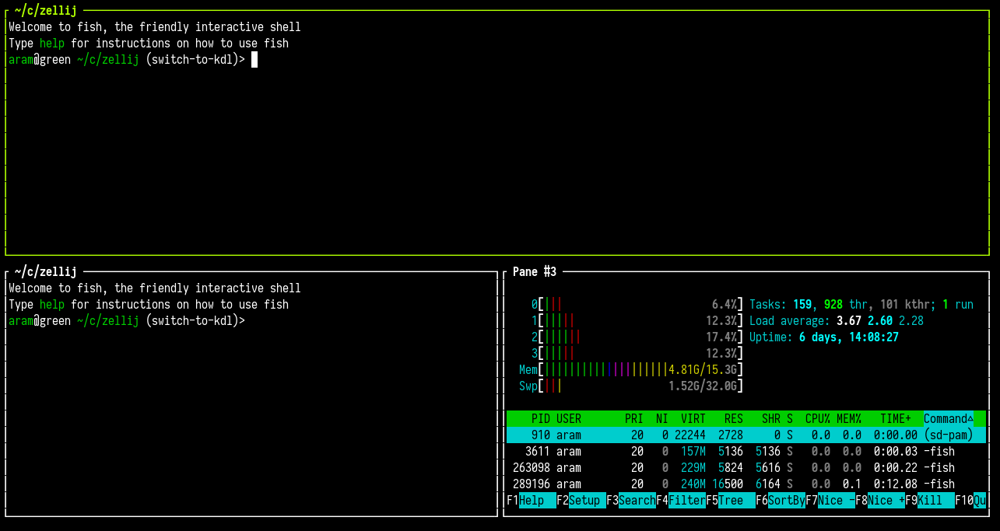
Applying a Layout
A layout can be applied when Zellij starts:
$ zellij --layout /path/to/layout_file.kdl
Or by setting it up in the configuration.
A layout can also be applied inside a running session with the same command:
$ zellij --layout /path/to/layout_file.kdl
In this case, Zellij will start this layout as one or more new tabs in the current session.
A layout can also be applied from a remote URL:
$ zellij --layout https://example.com/layout_file.kdl
For security reasons, remote layouts will have all their commands suspended behind a Waiting to run: <command> banner - prompting the user to run each one.
Layout default directory
By default Zellij will load the default.kdl layout, found in the layouts directory (a subdirectory of the config directory [config/layouts]).
If not found, Zellij will start with one pane and one tab.
Layouts residing in the default directory can be accessed by their bare name:
zellij --layout [layout_name]
Runtime Layout Override
The layout of a running tab can be overridden without restarting the session. This is done via the override-layout CLI action or the OverrideLayout keybinding action:
$ zellij action override-layout /path/to/new-layout.kdl
Options allow retaining existing panes that do not fit the new layout:
$ zellij action override-layout /path/to/layout.kdl --retain-existing-terminal-panes --apply-only-to-active-tab
This enables dynamic workspace reorganization. For the full reference, see override-layout in CLI actions and OverrideLayout in keybinding actions.
Smaller changes can also be made to a running tab without loading a new layout:
- A swap layout can be applied by name with
zellij action apply-tiled-swap-layoutorzellij action apply-floating-swap-layout. - A stack can switch between a column and a row of titles with
zellij action toggle-stack-list-orientation(seestack_orientation). - The tab-bar and status-bar can be hidden and shown again with the
ToggleBarsaction (see Bars).
Layout Configuration Language
Zellij uses KDL as its configuration language.
Creating a Layout
Quickstart:
$ zellij setup --dump-layout default > /tmp/my-quickstart-layout-file.kdl
The layout structure is nested under a global layout node.
Within it are several possible node types:
pane- the basic building blocks of the layout, can represent shells, commands, plugins or logical containers for otherpanes.tab- represents a navigational Zellij tab and can containpanespane_template- define new nodes equivalent topanes with additional attributes or parameters.tab_template- define new nodes equivalent totabs with additional attributes or parameters.
Panes
pane nodes are the basic building blocks of a layout.
They could represent standalone panes:
layout {
pane // panes can be bare
pane command="htop" // panes can have arguments on the same line
pane {
// panes can have arguments inside child-braces
command "exa"
cwd "/"
}
pane command="ls" { // or a mixture of same-line and child-braces arguments
cwd "/"
}
}
They could also represent logical containers:
layout {
pane split_direction="vertical" {
pane
pane
}
}
Note: if panes represent logical containers, all their arguments should be specified on their title line.
split_direction
split_direction is a pane argument that indicates whether its children will be laid out vertically or horizontally.
Possible values: "vertical" | "horizontal"
Default value if omitted: "horizontal"
eg.
layout {
pane split_direction="vertical" {
pane
pane
}
pane {
// value omitted, will be layed out horizontally
pane
pane
}
}
Note: The layout node itself has a set value of "horizontal". It can be changed by adding a logical pane container:
layout {
pane split_direction="vertical" {
pane
pane
}
}
size
size is a pane argument that represents the fixed or percentage space taken up by this pane inside its logical container.
Possible values: quoted percentages (eg. "50%") | fixed values (eg. 1)
Note: specifying fixed values that are not unselectable plugins is currently unstable and might lead to unexpected behaviour when resizing or closing panes. Please see this issue.
eg.
layout {
pane size=5
pane split_direction="vertical" {
pane size="80%"
pane size="20%"
}
pane size=4
}
borderless
borderless is a pane argument indicating whether a pane should have a frame or not.
Possible values: true | false
Default value if omitted: false
eg.
layout {
pane borderless=true
pane {
borderless true
}
}
focus
focus is a pane argument indicating whether a pane should have focus on startup.
Possible values: true | false Default value if omitted: false
Note: specifying multiple panes with focus will result in the first one of them being focused.
eg.
layout {
pane focus=true
pane {
focus true
}
}
name
name is a string pane argument to change the default pane title.
Possible values: "a quoted string"
eg.
layout {
pane name="my awesome pane"
pane {
name "my amazing pane"
}
}
cwd
A pane can have a cwd argument, pointing to its Current Working Directory.
Possible values: "/path/to/some/folder", "relative/path/to/some/folder"
Note: If the cwd is a relative path, it will be appended to its containers' cwd read more about cwd composition
eg.
layout {
pane cwd="/"
pane {
command "git"
args "diff"
cwd "/path/to/some/folder"
}
}
command
command is a string (path) to an executable that should be run in this pane instead of the default shell.
Possible values: "/path/to/some/executable" | "executable" (the latter should be accessible through PATH)
eg.
layout {
pane command="htop"
pane {
command "/usr/bin/btm"
}
}
args
A pane with a command can also have an args argument. This argument can include one or more strings that will be passed to the command as its arguments.
Possible values: "a" "series" "of" "quoted" "strings"
Note: args must be inside the pane's child-braces and cannot be specified on the same line as the pane.
eg.
layout {
pane command="tail" {
args "-f" "/path/to/my/logfile"
}
// Hint: include "quoted" shell arguments as a single argument:
pane command="bash" {
args "-c" "tail -f /path/to/my/logfile"
}
}
close_on_exit
A pane with a command can also have a close_on_exit argument. If true, this pane will close immediately when its command exits - instead of the default behaviour which is to give the user a chance to re-run it with ENTER and see its exit status
Possible values: true | false
eg.
layout {
pane command="htop" close_on_exit=true
}
start_suspended
A pane with a command can also have a start_suspended argument. If true, this pane will not immediately run the command on startup, but rather display a message inviting the user to press <ENTER> to first run the command. It will then behave normally. This can be useful when starting a layout with lots of commands and not wanting all of them to immediately run.
Possible values: true | false
eg.
layout {
pane command="ls" start_suspended=true
}
edit
edit is a string (path) to a file that will be opened using the editor specified in the EDITOR or VISUAL environment variables. This can alternatively also be specified using the scrollback_editor config variable.
Possible values: "/path/to/some/file" | "./relative/path/from/cwd"
Note: If the value is a relative path, it will be appended to its containers' cwd read more about cwd composition
eg.
layout {
pane split_direction="vertical" {
pane edit="./git_diff_side_a"
pane edit="./git_diff_side_b"
}
}
plugin
plugin is a pane argument the points to a Zellij plugin to load. Currently is is only possible to specify inside the child-braces of a pane followed by a URL location in quoted string.
Possible values: zellij:internal-plugin | file:/path/to/my/plugin.wasm | a plugin alias (eg. tab-bar)
eg.
layout {
pane {
plugin location="zellij:status-bar"
}
}
Note: the tab-bar, status-bar and compact-bar are a single built-in plugin, zellij:bars, that is told which bar to draw with its role setting ("tab-bar" (the default), "status-bar" or "compact-bar"). The locations zellij:tab-bar, zellij:status-bar and zellij:compact-bar also work, and are mapped to zellij:bars with the matching role. The default configuration defines the tab-bar, status-bar and compact-bar aliases this way, so the bundled layouts use plugin location="tab-bar":
layout {
pane size=1 borderless=true {
plugin location="zellij:bars" {
role "tab-bar"
}
}
pane
pane size=1 borderless=true {
plugin location="status-bar"
}
}
default_fg
default_fg is a pane argument that sets the default foreground color for the pane. The color is specified as a quoted string in hex (eg. "#00e000") or rgb notation (eg. "rgb:00/e0/00").
Possible values: "#rrggbb" | "rgb:rr/gg/bb"
eg.
layout {
pane default_fg="#00e000"
pane {
default_fg "#ff5500"
}
}
default_bg
default_bg is a pane argument that sets the default background color for the pane. The color is specified as a quoted string in hex (eg. "#001a3a") or rgb notation (eg. "rgb:00/1a/3a").
Possible values: "#rrggbb" | "rgb:rr/gg/bb"
eg.
layout {
pane default_bg="#001a3a"
pane {
default_bg "rgb:00/1a/3a"
default_fg "#ffffff"
}
}
These properties can be used together to create visually distinct panes (e.g., to highlight a specific command pane or to differentiate between environments). They can also be set at runtime via the SetPaneColor keybinding action or zellij action set-pane-color CLI command.
border_style
A pane can have its own border line style, which takes precedence over the border_style and rounded_corners set in the configuration.
The available properties are:
border_style- the line style of all four sidesborder_top,border_right,border_bottom,border_left- the line style of one side, taking precedence overborder_stylerounded_corners- whether to round the corners where thin lines (singleordashed) meet (true | false)
Possible values for line styles: "single" | "double" | "heavy" | "dashed" | "heavy_dashed"
"light" and "normal" are also accepted for "single", and "bold" and "thick" for "heavy". Unknown values are an error.
These properties can be used on tiled panes, on floating panes and in pane_templates. Properties given to a pane that uses a template are combined with the template's own.
eg.
layout {
pane border_style="double"
pane border_style="single" border_top="heavy" rounded_corners=false
floating_panes {
pane border_style="dashed"
}
}
The border of an existing pane can be changed with zellij action set-pane-border-style --pane-id <id> --border-style <style>, where the style is either a single line style (eg. "double") or a list of sides (eg. "top:double,left:single,rounded").
attention_muted
If true, the pane starts muted: nothing it reports is shown in the inbox, on its frame or in the tab bar, and it raises no desktop notifications. It is still tracked, so unmuting it (eg. with MutePane, bound to u in pane mode) shows its current state.
Possible values: true | false
Default value if omitted: false
ignore_output
If true, the pane starts with its output ignored: only the "new output" note is hidden, while panes that need attention, failed commands and finished commands are still reported. At runtime this is toggled with IgnorePaneOutput (bound to g in pane mode).
Possible values: true | false
Default value if omitted: false
eg.
layout {
pane command="tail" attention_muted=true {
args "-f" "/var/log/syslog"
}
pane command="cargo" ignore_output=true {
args "watch"
}
}
Note: attention_muted and ignore_output can be set on pane nodes (tiled or floating). They are not taken from pane_templates or from panes that use a template.
stacked
If true, this pane property dictates that the children panes of this pane will be arranged in a stack.
In a stack of panes, all panes except one have just one line - showing their title (and their scroll and exit code when relevant). The focused pane among these is displayed normally as any other pane.
Since 0.45.0, a stack is rendered as a list of these one-line titles with the expanded pane pinned to the bottom of the stack, rather than expanded in place between the titles. The previous rendering can be restored by setting the stacked_pane_list option to false. The titles can also be shown in a single row, see stack_orientation.
eg.
layout {
pane stacked=true {
pane
pane
pane command="ls"
pane command="htop"
pane edit="src/main.rs"
}
}
expanded
In the context of stacked panes, an expanded child will dictate that this pane in the stack should be the one expanded, rather than the lowest pane (the default).
eg.
layout {
pane stacked=true {
pane
pane expanded=true
pane
pane
}
}
stack_orientation
A stacked pane can choose how its list of titles is shown: "vertical" shows the titles in a column, one per line, and "horizontal" shows them side by side in a single row at the top of the stack. A horizontal row is centered when it fits; when it does not, it scrolls so the selected title stays in view. Moving focus left and right moves through the titles, and clicking a title brings its pane forward.
Possible values: "vertical" | "horizontal"
Default value if omitted: the value of the stacked_pane_list_orientation option ("vertical" by default)
Note: stack_orientation can only be set on a pane with stacked=true (directly or through its template); otherwise loading the layout fails. It only has an effect while stacked_pane_list is enabled (the default).
eg.
layout {
pane split_direction="vertical" {
pane command="nvim"
pane stacked=true stack_orientation="horizontal" size="40%" {
pane
pane command="htop"
pane command="cargo" {
args "test"
}
}
}
}
The orientation of a stack can also be switched at runtime with the ToggleStackListOrientation action (bound to Shift s in pane mode), with zellij action toggle-stack-list-orientation [--pane-id <id>], or from the right-click menu of the stack's titles ("Show titles in a row" / "Show titles in a column"). The orientation is kept when the session is resurrected.
Floating Panes
A floating_panes node can be included either at the root of the layout or inside a tab node. Panes nested in this node will be floating, and can be given x, y, width and height properties.
eg.
layout {
floating_panes {
pane
pane command="ls"
pane {
x 1
y "10%"
width 200
height "50%"
}
}
}
pane nodes inside a floating_panes can have all the properties regular pane nodes have, except for children nodes or other irrelevant properties (eg. split_direction). pane_templates for these panes must not include these properties either.
x, y, width, height
These properties may be included inside floating panes. They can be either a fixed number (characters from screen edge) or a percentage (recommended in case where the terminal window size is not known).
Tabs
tab nodes can optionally be used to start a layout with several tabs.
Note: all tab arguments should be specified on its title line. The child-braces are reserved for its child panes.
Note: properties that belong to a tab (name, split_direction and hide_floating_panes) cannot be placed on the layout node itself when the layout also contains explicit tab nodes - they must be placed on each tab node. Doing otherwise is an error, and Zellij will point out which property should be moved where.
eg.
layout {
tab // a tab with a single pane
tab {
// a tab with three horizontal panes
pane
pane
pane
}
tab name="my third tab" split_direction="vertical" {
// a tab with a name and two vertical panes
pane
pane
}
}
split_direction
Tabs can have a split_direction just like panes. This argument indicates whether the tab's children will be laid out vertically or horizontally.
Possible values: "vertical" | "horizontal"
Default value if omitted: "horizontal"
eg.
layout {
tab split_direction="vertical" {
pane
pane
}
tab {
// if omitted, will be "horizontal" by default
pane
pane
}
}
focus
Tabs can have a focus just like panes. This argument indicates whether a tab should have focus on startup.
Possible values: true | false
Default value if omitted: false
Note: only one tab can be focused.
eg.
layout {
tab {
pane
pane
}
tab focus=true {
pane
pane
}
}
name
Tabs can have a name just like panes. This argument is a string to change the default tab title.
Possible values: "a quoted string"
eg.
layout {
tab name="my awesome tab"
tab name="my amazing tab" {
pane
}
}
cwd
Tabs can have a cwd just like panes - pointing to their Current Working Directory.
All panes in this tab will have this cwd prefixed to their own cwd (if they have one) or start in this cwd if they don't.
Possible values: "/path/to/some/folder", "relative/path/to/some/folder"
Note: If the cwd is a relative path, it will be appended to its containers' cwd read more about cwd composition
eg.
layout {
tab name="my amazing tab" cwd="/tmp" {
pane // will have its cwd set to "/tmp"
pane cwd="foo" // will have its cwd set to "/tmp/foo"
pane cwd="/home/foo" // will have its cwd set to "/home/foo", overriding the tab cwd with its absolute path
}
}
hide_floating_panes
If set, all floating panes defined in this tab will be hidden on startup.
eg.
tab name="Tab #1" hide_floating_panes=true {
pane
pane
floating_panes { // will start hidden
pane
pane
}
}
attention_muted
If set, the tab starts muted: nothing its panes report is shown in the inbox or the tab bar, and they raise no desktop notifications. At runtime this is toggled with MuteTab (bound to u in tab mode).
Possible values: true | false
Default value if omitted: false
eg.
layout {
tab name="logs" attention_muted=true {
pane command="journalctl" {
args "-f"
}
}
tab name="work"
}
Note: this property is read from tab nodes, and not from tab_templates.
Templates
Templates can be used avoid repetition when creating layouts. Each template has a name that should be used directly as a node name instead of "pane" or "tab".
Pane Templates
Pane templates can be used to shorten pane attributes:
layout {
pane_template name="htop" {
command "htop"
}
pane_template name="htop-tree" {
command "htop"
args "--tree"
borderless true
}
// the below will create a template with four panes
// the top and bottom panes running htop and the two
// middle panes running "htop --tree" without a pane frame
htop
htop-tree
htop-tree
htop
}
Pane templates with the command attribute can take the args and cwd of their consumers:
layout {
pane_template name="follow-log" command="tail"
follow-log {
args "-f" "/tmp/my-first-log"
}
follow-log {
args "-f" "my-second-log"
cwd "/tmp"
}
}
Note: the above only works for direct consumers and not other templates.
Pane templates can be used as logical containers. In this case a special children node must be specified to indicate where the child panes should be inserted.
Note: the children node can be nested inside panes but not inside other pane_templates.
layout {
pane_template name="vertical-sandwich" split_direction="vertical" {
pane
children
pane
}
vertical-sandwich {
pane command="htop"
}
}
Pane templates can include other pane templates.
layout {
pane_template name="vertical-sandwich" split_direction="vertical" {
pane
children
pane
}
pane_template name="vertical-htop-sandwich" {
vertical-sandwich {
pane command="htop"
}
}
pane_template name="vertical-htop-sandwich-below" split_direction="horizontal" {
children
vertical-htop-sandwich
}
vertical-htop-sandwich
vertical-htop-sandwich-below {
pane command="exa"
}
}
The children node should be thought of as a placeholder for the pane using this template.
This:
layout {
pane_template name="my_template" {
pane
children
pane
}
my_template split_direction="vertical" {
pane
pane
}
}
Will be translated into this:
layout {
pane {
pane
pane split_direction="vertical" {
pane
pane
}
pane
}
}
Tab Templates
Tab templates, similar to pane templates, help avoiding repetition when defining tabs. Like pane_templates they can include a children block to indicate where their child panes should be inserted.
Note: for the sake of clarity, arguments passed to tab_templates can only be specified on their title line.
layout {
tab_template name="ranger-on-the-side" {
pane size=1 borderless=true {
plugin location="zellij:compact-bar"
}
pane split_direction="vertical" {
pane command="ranger" size="20%"
children
}
}
ranger-on-the-side name="my first tab" split_direction="horizontal" {
pane
pane
}
ranger-on-the-side name="my second tab" split_direction="vertical" {
pane
pane
}
}
Default Tab Template
There is a special default_tab_template node that can be used just like a regular tab_template node, but that would apply to all tabs in the template as well as all new tabs opened in the session.
Note: the default_tab_template will not apply to tabs using other tab_templates.
Another note: if no tabs are specified, the whole layout is treated as a default_tab_template.
layout {
default_tab_template {
// the default zellij tab-bar and status bar plugins
pane size=1 borderless=true {
plugin location="zellij:tab-bar"
}
children
pane size=2 borderless=true {
plugin location="zellij:status-bar"
}
}
tab // the default_tab_template
tab name="second tab" // the default_tab_template with a custom tab name
tab split_direction="vertical" { // the default_tab_template with three vertical panes between the plugins
pane
pane
pane
}
}
new_tab_template
This is a logical tab-like node that will only be used as a blueprint to open new tabs. It can be useful when one would like to define a few initial tabs, but use a different template for opening new tabs.
cwd Composition
When a relative cwd property is specified in a node, it is appended to its container node's cwd in the follwing order:
panetab- global cwd
- The
cwdwhere the command was executed
eg.
layout {
cwd "/hi"
tab cwd="there" {
pane cwd="friend" // opened in /hi/there/friend
}
}
Global cwd
The cwd property can also be specified globally on the layout node itself.
Doing this would make all panes in this layout start in this cwd unless they have an absolute path.
Eg.
layout {
cwd "/home/aram/code/my-project"
pane cwd="src" // will be opened in /home/aram/code/my-project/src
pane cwd="/tmp" // absolute paths override the global cwd, this will be opened in /tmp
pane command="cargo" {
args "test"
// will be started in /home/aram/code/my-project
}
}
session_attention_muted
Setting session_attention_muted=true on the layout node starts the whole session muted: all of its panes behave as if they were muted (see attention_muted), so nothing in the session is shown in the inbox or raises desktop notifications. At runtime this is toggled with MuteSession (bound to u in session mode).
Note: this must be written on the layout line itself. Written as a child node it is reported as an unknown layout node.
eg.
layout session_attention_muted=true {
pane
}
Bars
Plugin panes that sit along the top or bottom edge of the screen are treated as bars. A pane counts as a bar when it runs a plugin, is not selectable or has no border (eg. borderless=true), spans the full width of the screen, and touches its top or bottom edge.
- Several bars side by side on the same edge are all left out of the area used for fullscreen and floating panes, not only a single full-width bar.
- Bars can be hidden while Zellij runs with the
ToggleBarsaction (bound toShift zinpanemode), or when a session starts with thebars_hidden_on_startoption. A hidden bar gives its space to the other panes. Bars are named by their plugin alias (eg.tab-bar), by theirrole(forzellij:bars) or by their plugin location. - A plugin used as a bar can give its row back to the neighboring panes while it has nothing to draw, using the
set_self_collapsedplugin command. The pane keeps its place in the layout and gets its original size back when it expands again.
Swap Layouts
Swap Layouts are an extension of Layouts allowing users to open new panes in predefined locations as well as rearrange the currently open panes in a tab.
Swap layouts are separated between swap_tiled_layouts, which apply to the regular tiled panes, and swap_floating_layouts which apply to floating panes.
Quickstart
You can dump the default swap layouts just as you can dump the base layouts:
$ zellij setup --dump-swap-layout default > /tmp/my-quickstart-swap-layout-file.swap.kdl
How are Swap Layouts loaded?
Swap layouts can either be included directly in the layout file (inside the layout node, see below) or in a separate .swap.kdl file in the same folder (see below).
Progression and Constraints
A basic swap layout can look like this:
layout {
swap_tiled_layout name="h2v" {
tab max_panes=2 {
pane
pane
}
tab {
pane split_direction="vertical" {
pane
pane
pane
}
}
}
}
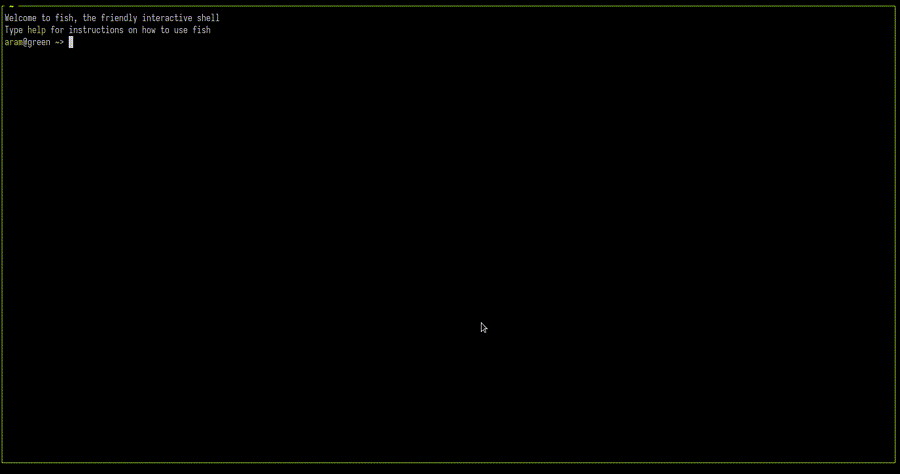
When this layout is loaded, the first two panes are opened horizontally one above the other. The next pane opened (with Alt + n) will snap the layout into three vertical panes. If closed, the layout will snap back to two horizontal panes. Panes opened after the third will be laid out in an unspecified way.
An example with floating panes:
layout {
swap_floating_layout {
floating_panes max_panes=1 {
pane
}
floating_panes max_panes=2 {
pane x=0
pane x="50%"
}
floating_panes max_panes=3 {
pane x=0 width="25%"
pane x="25%" width="25%"
pane x="50%"
}
}
}
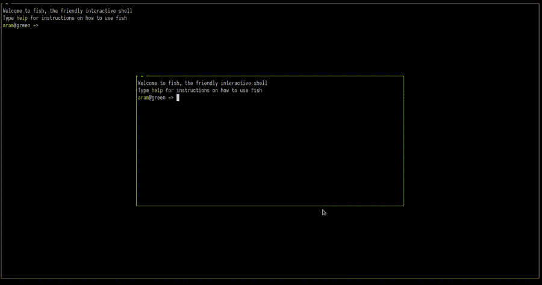
swap_tiled_layout
A swap_tiled_layout node should include one or more tab nodes. These nodes can also be tab_templates for the sake of brevity.
A swap_tiled_layout can have a name, which will be used in the Zellij UI to indicate which layout is selected.
swap_floating_layout
A swap_floating_layout node should include one or more floating_panes nodes. These can also be tab_templates for the sake of brevity.
A swap_floating_layout can have a name, which will be used in the Zellij UI to indicate which layout is selected.
Constraints
Each swap tab or floating_panes node may have one of three constraints: max_panes, min_panes or exact_panes:
eg.
// ...
floating_panes exact_panes=2 {
pane x=1 y=1
pane x=10 y=10
}
// ...
tab max_panes=2 {
pane split_direction="vertical" {
pane
pane
}
}
// ...
Pane commands and plugins in Layouts
pane nodes in swap layouts may include command nodes and plugin nodes normally, but these will not be newly opened or closed by their absence. If panes like these are included in swap layouts, it is expected that they already appear on screen from the base layout. Otherwise the behaviour is unspecified and might change in later versions.
Command and plugin panes keep their order relative to each other when a swap layout is applied. Plugin panes are matched regardless of which name was used for the built-in bars, so a swap layout with plugin location="zellij:tab-bar" matches a pane started as plugin location="tab-bar" (see the plugin property).
Multiple swap layout nodes
Multiple swap_tiled_layout and swap_floating_layout nodes can be included in a single layout. In this case, the user can switch between them manually (by default with Alt + [], or Space and Shift Space in tab mode), or they will be switched to automatically if the current swap node does not meet the constraints when opening or closing a pane.
When the swap layout changes, its name is shown briefly. This can be turned off with the swap_layout_notification option.
Applying a swap layout by name
A swap layout can be chosen directly by its name, rather than cycling through them:
keybinds {
tab {
bind "1" { ApplyTiledSwapLayout "vertical"; SwitchToMode "Normal"; }
bind "2" { ApplyFloatingSwapLayout "spread"; SwitchToMode "Normal"; }
}
}
$ zellij action apply-tiled-swap-layout vertical
$ zellij action apply-floating-swap-layout spread --tab-id 2
The first swap layout with that name whose constraints fit the current number of panes is applied. If none fits, nothing changes (and the CLI command exits with status 1). Applying a swap layout this way does not show or hide floating panes and does not change focus. The base layout can be chosen with the name "BASE".
Base
The basic layout loaded is called the Base layout, and can be switched back to as any other layout - it is considered to have an implicit exact_panes constraint of its total pane count.
This is true both to tiled panes and floating panes.
Swap Layouts with extra panes
Swap layout nodes containing more panes than are on screen will place panes in a "breadth first" manner.
Swap Layouts with too few panes
Swap layouts with fewer panes than are on screen will have all their panes applied first, and panes following them will be laid out in an unspecified manner.
Swap Layout files (layout-name.swap.kdl)
Because swap layouts can get quite verbose, it's possible to include them in a separate file. The file should be in the same folder as the original layout and have a swap.kdl suffix instead of a .kdl suffix.
Eg.
my-layout.kdl
my-layout.swap.kdl
This file need not include the layout node, but should include the swap_tiled_layout and/or swap_floating_layout nodes directly.
Including Configuration in Layouts
Zellij layout files can include any configuration that can be defined in a Zellij configuration file.
Items in this configuration take precedence over items in the loaded Zellij configuration.
Note: These fields are ignored when loading a layout through the new-tab action
Example
layout {
pane split_direction="vertical" {
pane
pane split_direction="horizontal" {
pane
pane
}
}
pane size=1 borderless=true {
plugin location="compact-bar"
}
}
keybinds {
shared {
bind "Alt 1" { Run "git" "status"; }
bind "Alt 2" { Run "git" "diff"; }
bind "Alt 3" { Run "exa" "--color" "always"; }
}
}
This layout includes a map of panes and UI to open, as well as some keybindings to quickly open new panes with your favorite commands.
Keybindings from a layout
Keybindings that come from a layout are kept apart from those in the configuration file. They are applied on top of the configured keybindings, and are shown in the settings screen but cannot be edited there. The keybinds block of a layout has the same form as the one in the configuration, including the keybinding presets.
Mouse bindings (the mousebinds block, see mouse bindings) can be included in a layout in the same way.
Example layouts
Classic three pane with vertical root
layout {
pane split_direction="vertical" {
pane
pane split_direction="horizontal" {
pane
pane
}
}
}
Will provide:
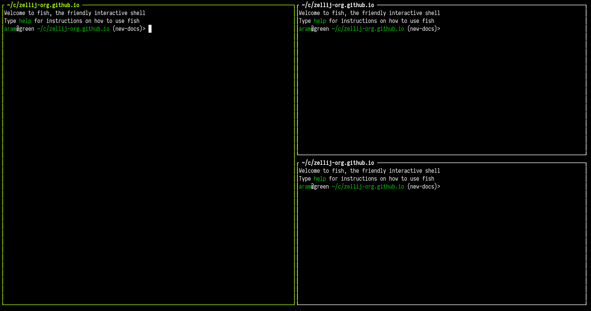
Classic three panes with vertical root and compact status bar
layout {
pane split_direction="vertical" {
pane
pane split_direction="horizontal" {
pane
pane
}
}
pane size=1 borderless=true {
plugin location="zellij:compact-bar"
}
}
Will provide:
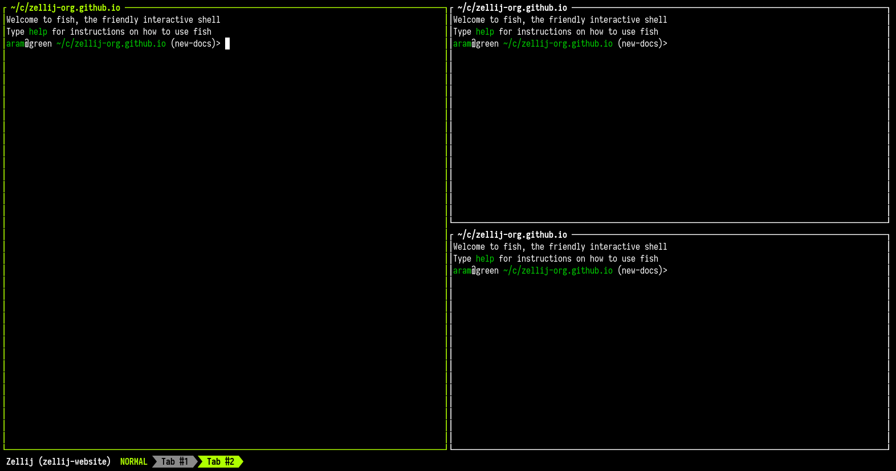
Quick generic project explorer
Cloned a new project, want to quickly explore it without much fuss?
layout {
pane split_direction="vertical" {
pane
pane split_direction="horizontal" {
pane command="exa" {
args "--color" "always" "-l"
}
pane command="git" {
args "log"
}
}
}
}
Will provide:
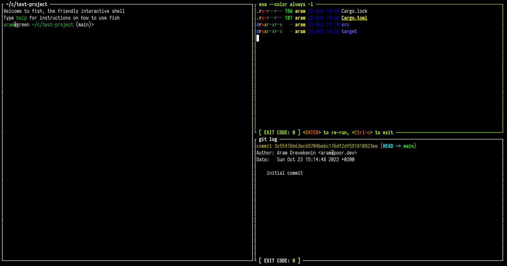
Basic Rust project
Basic layout for a rust executable project
layout {
pane split_direction="vertical" size="60%" {
pane edit="src/main.rs"
pane edit="Cargo.toml"
}
pane split_direction="vertical" size="40%" {
pane command="cargo" {
args "run"
focus true
}
pane command="cargo" {
args "test"
}
}
}
When started in a project just created with cargo init, looks like this:
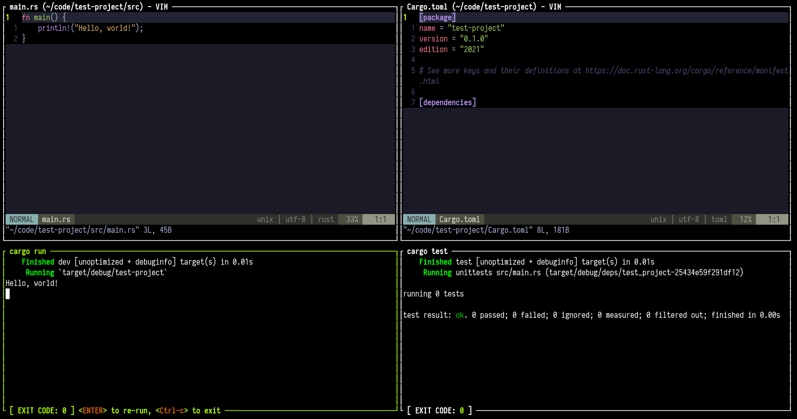
For convenience, here's a version that also loads Zellij's interface
layout {
pane size=1 borderless=true {
plugin location="zellij:tab-bar"
}
pane split_direction="vertical" size="60%" {
pane edit="src/main.rs"
pane edit="Cargo.toml"
}
pane split_direction="vertical" size="40%" {
pane command="cargo" {
args "run"
focus true
}
pane command="cargo" {
args "test"
}
}
pane size=2 borderless=true {
plugin location="zellij:status-bar"
}
}
A more complex example (Zellij development)
Here's a layout used internally for Zellij development.
It can help on-board new developers by tying together related files and their tests, as well as useful plugins here and there.
layout {
default_tab_template {
pane size=1 borderless=true {
plugin location="zellij:tab-bar"
}
children
pane size=2 borderless=true {
plugin location="zellij:status-bar"
}
}
pane_template name="tests_under_files" {
pane split_direction="horizontal" {
children
pane command="cargo" size="30%" {
args "test"
}
}
}
tab_template name="strider_tab" {
pane size=1 borderless=true {
plugin location="zellij:tab-bar"
}
pane split_direction="Vertical" {
pane size="15%" {
// TODO: when we support sending CWD to plugins, this should start in ./zellij-derver
plugin location="zellij:strider"
}
children
}
pane size=2 borderless=true {
plugin location="zellij:status-bar"
}
}
strider_tab name="Server (root)" cwd="./zellij-server" focus=true {
tests_under_files split_direction="vertical" {
pane edit="./src/lib.rs"
pane edit="./src/route.rs"
}
}
tab name="Client (root)" cwd="./zellij-client" {
tests_under_files split_direction="vertical" {
pane edit="./src/lib.rs"
pane edit="./src/input_handler.rs"
}
}
tab name="Server (screen thread)" split_direction="vertical" cwd="./zellij-server/src" {
pane edit="./screen.rs" name="SCREEN"
pane edit="./tab/mod.rs" name="TAB"
pane edit="./panes/terminal_pane.rs" name="TERMINAL PANE"
}
tab name="Server (pty thread)" split_direction="vertical" cwd="./zellij-server/src" {
pane edit="./pty.rs" name="PTY"
pane edit="./os_input_output.rs" name="OS_INPUT_OUTPUT"
}
tab name="Server (pane grids)" split_direction="horizontal" cwd="./zellij-server/src/panes" {
pane split_direction="vertical" {
pane edit="./tiled_panes/mod.rs" name="TILED PANES"
pane edit="./tiled_panes/tiled_pane_grid.rs" name="TILED PANES - GRID"
pane edit="./tiled_panes/pane_resizer.rs" name="TILED PANES - GRID - RESIZER"
}
pane split_direction="vertical" {
pane edit="./floating_panes/mod.rs" name="FLOATING_PANES"
pane edit="./floating_panes/floating_pane_grid.rs" name="FLOATING_PANES - GRID"
}
}
tab name="Server (Terminal)" split_direction="horizontal" cwd="./zellij-server/src/panes" {
pane split_direction="vertical" {
pane edit="./terminal_pane.rs" name="TERMINAL PANE"
pane edit="./grid.rs" name="GRID (ANSI PARSER)"
}
pane split_direction="vertical" {
pane edit="./terminal_character.rs" name="TERMINAL CHARACTER"
pane edit="./sixel.rs" name="SIXEL"
}
}
}
Here's how it looks like when opened:
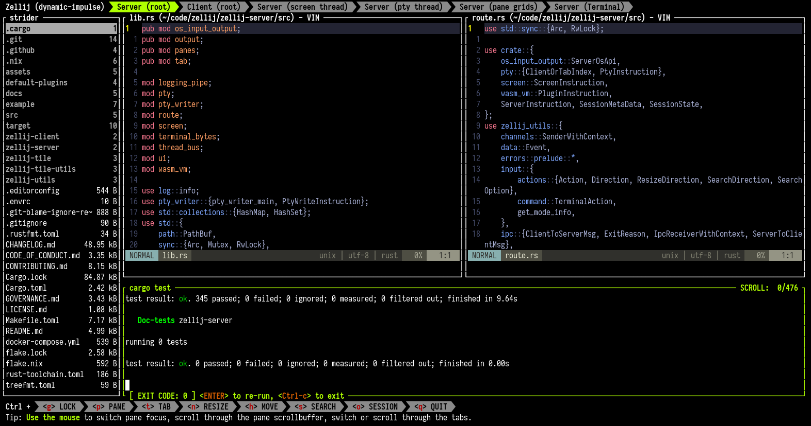
Your layout here?
Please make PRs with cool layouts (and screenshots!) to our website repo and we'd be happy to include your name and a link to your profile.
Plugins
Zellij offers a Webassembly / WASI plugin system, allowing plugin developers to develop plugins in many different languages.
Zellij itself builds its UI from plugins, you can browse their code for inspiration.
What is a Zellij Plugin?
A Zellij plugin is a first class citizen in the workspace, just like a terminal pane. It can render a UI, react to application state changes as well as control Zellij and change its behavior.
Our intention with the plugin system is to give users and developers the power to easily take full advantage of their terminal. Creating composable components that can be shared easily, turning everyday terminal tasks into a personalized multiplayer dashboard experience. We like to think of them as visual cross-platform scripts that do not need to be installed or compiled.
More importantly though, we feel that the best terminal workspace experience happens through collaboration. So - what do you think is a Zellij plugin?
Currently, Rust is the only language officially supported for plugins, but there are community efforts to support other languages as well.
Loading Plugins
Plugins can either be loaded through a Layout, through the command line, or from a keybinding.
On startup
Plugins can also be loaded on startup through the load_plugins configuration block. Eg.
load_plugins {
https://example.com/my-plugin.wasm
file:/path/to/my/plugin.kdl
my-plugin-alias
}
These plugins will be loaded in the background on session startup, only appearing once to request permissions from the user if they need any.
Through the built-in plugin-manager
Plugins can also be loaded (in the background or foreground) through the plugin manager. This built-in plugin, accessible by default with Ctrl o + p, allows both loading plugins and monitoring existing plugins:
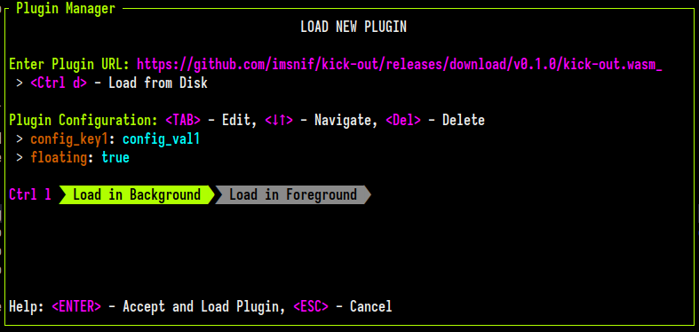
Plugin URL schema
Plugins are referred to by URLs. Currently there are four supported schemas:
- The file schema:
file:/absolute/path/to/my/plugin.wasm- for reading plugins from the local HD - The built-in
zellij:schema (eg.zellij:bars) for loading built-in zellij plugins. - Urls (
http(s)://path/to/my/plugin.wasm) - Bare aliases (
filepicker), see Plugin Aliases
Built-in plugins
These plugins are bundled with Zellij and can be loaded with the zellij: schema:
| Name | Description |
|---|---|
zellij:bars | The tab bar, status bar and compact bar. Which bar it draws is chosen with its role configuration (tab-bar, status-bar or compact-bar) |
zellij:strider | The file picker (see the filepicker alias) |
zellij:session-manager | The session manager and welcome screen |
zellij:configuration | The settings screen |
zellij:plugin-manager | The plugin manager |
zellij:about | The about screen |
zellij:share | Web sharing of the session (see the web client) |
zellij:multiple-select | Selecting several panes at once |
zellij:layout-manager | The layout manager |
zellij:prompt | The popups used by zellij prompt and the prompt plugin command (see the prompt alias) |
zellij:context-menu | The right-click context menu (see the context-menu alias) |
Note: the tab bar, status bar and compact bar are one shared plugin,
zellij:bars. The nameszellij:tab-bar,zellij:status-barandzellij:compact-baralso work: they loadzellij:barswith the matchingrole. The built-intab-bar,status-barandcompact-baraliases point tozellij:barsas well.
Plugins loaded through load_plugins that need events from before any user is attached receive them once they have loaded.
Plugin API
Please also see the Rust-specific documentation: zellij-tile.
The plugin API provides plugins with several capabilities:
- Events - A plugin can subscribe to one or more of these and receive an update whenever they happen.
- Commands - These are functions exported to the plugin, allowing it to affect Zellij and add functionality to it.
- Types - The data types used by commands and events.
- Permissions - Which commands and events need the user's permission.
- Configuration - How plugins receive their configuration.
- Accessing the HD - A plugin can use its development language's own standard library to access the filesystem folder in which Zellij was opened.
- Workers for Async Tasks - A plugin can have multiple workers to which it can offload heavy or long-running tasks without blocking its own rendering.
- Log debug or error messages - A plugin can log messages to STDERR which will in the Zellij logs.
Plugins can also:
- Open popups and ask the user questions with
prompt. - Open Zellij's context menu for a tab or a bar.
- Add an entry to the settings screen that opens their own settings.
- Read and edit the configuration the way the settings screen does.
- Give their space in the layout back while they have nothing to show, with
set_self_collapsed. - Serve many panes from a single instance, as shared plugins.
- Follow the input mode and keybindings of nested sessions.
- Work with panes in other sessions and their attention state, and show a live view of another pane.
Plugin API - Events
A plugin can subscribe to events using their EventType discriminant. Once subscribed, events are delivered to the plugin's update method with their associated payload.
For complete type definitions referenced below, see the Type Reference. For additional details, see the zellij-tile API documentation.
A plugin built with zellij-tile 0.46.0 or later that receives an event it cannot read (eg. one added in a newer Zellij version) skips it, printing a message to its log, instead of crashing.
Table of Contents
- ModeUpdate
- TabUpdate
- PaneUpdate
- Key
- Mouse
- Timer
- CopyToClipboard
- SystemClipboardFailure
- InputReceived
- Visible
- CustomMessage
- FileSystemCreate
- FileSystemRead
- FileSystemUpdate
- FileSystemDelete
- PermissionRequestResult
- SessionUpdate
- RunCommandResult
- WebRequestResult
- CommandPaneOpened
- CommandPaneExited
- PaneClosed
- EditPaneOpened
- EditPaneExited
- CommandPaneReRun
- FailedToWriteConfigToDisk
- ListClients
- HostFolderChanged
- FailedToChangeHostFolder
- PastedText
- ConfigWasWrittenToDisk
- WebServerStatus
- FailedToStartWebServer
- BeforeClose
- InterceptedKeyPress
- UserAction
- PaneRenderReport
- ActionComplete
- CwdChanged
- AvailableLayoutInfo
- PluginConfigurationChanged
- HighlightClicked
- CommandChanged
- HostTerminalThemeChanged
- InitialKeybinds
- SoftKeyboardVisibilityChanged
- HintText
- ActivePaneScroll
- NestedSessionModeUpdate
- NestedSessionEnded
- PromptResult
- ContextMenu
- PluginSettingsEntries
- ConfigChangesDropped
- ConfigFileChangedSinceRead
- AvailableKeybindPresets
- PaneAttentionChanged
- PromptShown
- CommandStarted
- CommandFinished
- GlobalAttentionUpdate
- SessionHistoryUpdate
- SessionSuggestions
- SessionCountsUpdate
- FolderSessionsUpdate
- TerminalCommandSubmitted
- SessionPreview
- SavedSessionPreview
- LiveViewStateChanged
- DesktopIntegration
ModeUpdate
#![allow(unused)] fn main() { Event::ModeUpdate(ModeInfo) }
Required Permission: ReadApplicationState
Payload: ModeInfo
Fired when the input mode or relevant session metadata changes. Provides information about the current input mode (e.g., Normal, Locked, Pane, Tab), bound keys, the active theme colors, and the session name.
Note: plugins that subscribe to InitialKeybinds receive the keybindings through that event instead, and their ModeUpdate events arrive with an empty keybinds field from then on - this keeps the frequently fired ModeUpdate lightweight.
Example:
#![allow(unused)] fn main() { fn update(&mut self, event: Event) -> bool { match event { Event::ModeUpdate(mode_info) => { self.current_mode = mode_info.mode; self.session_name = mode_info.session_name.clone(); true }, _ => false, } } }
TabUpdate
#![allow(unused)] fn main() { Event::TabUpdate(Vec<TabInfo>) }
Required Permission: ReadApplicationState
Payload: Vec<TabInfo>
Fired when tab state changes in the application. Provides a list of all tabs with their position, name, active status, pane counts, swap layout information, and viewport dimensions.
Example:
#![allow(unused)] fn main() { fn update(&mut self, event: Event) -> bool { match event { Event::TabUpdate(tabs) => { self.tabs = tabs; if let Some(active) = self.tabs.iter().find(|t| t.active) { self.active_tab_name = active.name.clone(); } true }, _ => false, } } }
PaneUpdate
#![allow(unused)] fn main() { Event::PaneUpdate(PaneManifest) }
Required Permission: ReadApplicationState
Payload: PaneManifest
Fired when pane state changes in the application. Provides information about all panes in all tabs, including their title, position, size, command, focus state, and more.
Plugins without the ReadPaneContents permission receive the attention and command_state of each PaneInfo without the text of the commands run in the pane. The same applies to the panes in SessionUpdate.
Example:
#![allow(unused)] fn main() { fn update(&mut self, event: Event) -> bool { match event { Event::PaneUpdate(pane_manifest) => { self.pane_manifest = pane_manifest; true }, _ => false, } } }
Key
#![allow(unused)] fn main() { Event::Key(KeyWithModifier) }
Payload: KeyWithModifier
Fired when the user presses a key while focused on this plugin's pane. No permission is required - this event is always available for the plugin's own pane.
Example:
#![allow(unused)] fn main() { fn update(&mut self, event: Event) -> bool { match event { Event::Key(key) => { match key.bare_key { BareKey::Char('q') if key.has_no_modifiers() => { close_self(); }, BareKey::Enter => { self.handle_enter(); }, _ => {}, } true }, _ => false, } } }
Mouse
#![allow(unused)] fn main() { Event::Mouse(Mouse) }
Payload: Mouse
Fired when the user performs a mouse action (click, double click, scroll, hover, etc.) while focused on the plugin pane. No permission is required.
The modifier keys held during the event (Shift, Ctrl, Alt) are available while handling it through mouse_modifiers. Plugins built against an older zellij-tile do not receive Mouse::DoubleClick.
Note: the
EventType::MouseWithModifiersandEvent::MouseWithModifiersvariants are used inside Zellij only: plugins subscribe toEventType::Mouseand receiveEvent::Mouse.
Example:
#![allow(unused)] fn main() { fn update(&mut self, event: Event) -> bool { match event { Event::Mouse(Mouse::LeftClick(line, col)) => { self.handle_click(line as usize, col); true }, Event::Mouse(Mouse::ScrollUp(_)) => { self.scroll_offset += 1; true }, Event::Mouse(Mouse::ScrollDown(_)) => { self.scroll_offset = self.scroll_offset.saturating_sub(1); true }, _ => false, } } }
Timer
#![allow(unused)] fn main() { Event::Timer(f64) }
Payload: f64 - the duration (in seconds) that was originally set
Fired when a timer set by set_timeout expires. No permission is required.
Example:
#![allow(unused)] fn main() { fn load(&mut self, _config: BTreeMap<String, String>) { subscribe(&[EventType::Timer]); set_timeout(1.0); } fn update(&mut self, event: Event) -> bool { match event { Event::Timer(elapsed) => { self.tick(); set_timeout(1.0); true }, _ => false, } } }
CopyToClipboard
#![allow(unused)] fn main() { Event::CopyToClipboard(CopyDestination) }
Required Permission: ReadApplicationState
Payload: CopyDestination
Fired when the user copies text to their clipboard anywhere in the application. The payload indicates the clipboard destination (System, Primary, or Command).
SystemClipboardFailure
#![allow(unused)] fn main() { Event::SystemClipboardFailure }
Required Permission: ReadApplicationState
Payload: (none)
Fired when the system fails to copy text to the clipboard.
InputReceived
#![allow(unused)] fn main() { Event::InputReceived }
Payload: (none)
Fired whenever any input is received anywhere in Zellij. Does not specify which input was received. No permission is required.
Visible
#![allow(unused)] fn main() { Event::Visible(bool) }
Payload: bool - true if the plugin became visible, false if it became invisible
Fired when the plugin pane becomes visible or invisible (e.g., when switching tabs to or away from the plugin's tab). No permission is required.
Example:
#![allow(unused)] fn main() { fn update(&mut self, event: Event) -> bool { match event { Event::Visible(is_visible) => { self.is_visible = is_visible; if is_visible { self.refresh(); } true }, _ => false, } } }
CustomMessage
#![allow(unused)] fn main() { Event::CustomMessage(String, String) }
Payload: (String, String) - (message_name, payload)
Fired when a message is received from one of the plugin's workers via post_message_to_plugin. No permission is required. See Workers for Async Tasks for details.
Example:
#![allow(unused)] fn main() { fn update(&mut self, event: Event) -> bool { match event { Event::CustomMessage(name, payload) => { if name == "fetch_complete" { self.data = serde_json::from_str(&payload).ok(); true } else { false } }, _ => false, } } }
FileSystemCreate
#![allow(unused)] fn main() { Event::FileSystemCreate(Vec<(PathBuf, Option<FileMetadata>)>) }
Payload: Vec<(PathBuf, Option<FileMetadata)>) - paths and optional metadata of created files
Fired when files are created in the Zellij host folder. The plugin must call watch_filesystem to start receiving these events. No permission is required beyond subscribing.
FileSystemRead
#![allow(unused)] fn main() { Event::FileSystemRead(Vec<(PathBuf, Option<FileMetadata>)>) }
Payload: Vec<(PathBuf, Option<FileMetadata>)> - paths and optional metadata of accessed files
Fired when files are read/accessed in the Zellij host folder.
FileSystemUpdate
#![allow(unused)] fn main() { Event::FileSystemUpdate(Vec<(PathBuf, Option<FileMetadata>)>) }
Payload: Vec<(PathBuf, Option<FileMetadata>)> - paths and optional metadata of modified files
Fired when files are modified in the Zellij host folder.
Example:
#![allow(unused)] fn main() { fn update(&mut self, event: Event) -> bool { match event { Event::FileSystemUpdate(files) => { for (path, metadata) in &files { if path.extension().map_or(false, |ext| ext == "rs") { self.rust_files_changed = true; } } true }, _ => false, } } }
FileSystemDelete
#![allow(unused)] fn main() { Event::FileSystemDelete(Vec<(PathBuf, Option<FileMetadata>)>) }
Payload: Vec<(PathBuf, Option<FileMetadata>)> - paths and optional metadata of deleted files
Fired when files are deleted from the Zellij host folder.
PermissionRequestResult
#![allow(unused)] fn main() { Event::PermissionRequestResult(PermissionStatus) }
Payload: PermissionStatus - Granted or Denied
Fired after request_permission is called and the user responds. No permission is required.
Example:
#![allow(unused)] fn main() { fn update(&mut self, event: Event) -> bool { match event { Event::PermissionRequestResult(PermissionStatus::Granted) => { subscribe(&[EventType::TabUpdate, EventType::PaneUpdate]); true }, Event::PermissionRequestResult(PermissionStatus::Denied) => { eprintln!("Permissions denied - plugin functionality limited"); true }, _ => false, } } }
SessionUpdate
#![allow(unused)] fn main() { Event::SessionUpdate(Vec<SessionInfo>, Vec<(String, Duration)>) }
Required Permission: ReadApplicationState
Payload:
Vec<SessionInfo>- list of active sessionsVec<(String, Duration)>- list of resurrectable sessions(name, time_since_death)
Fired when session state changes, providing information about all active sessions of the current Zellij version and all resurrectable (dead) sessions.
Example:
#![allow(unused)] fn main() { fn update(&mut self, event: Event) -> bool { match event { Event::SessionUpdate(sessions, resurrectable) => { self.sessions = sessions; self.dead_sessions = resurrectable; true }, _ => false, } } }
RunCommandResult
#![allow(unused)] fn main() { Event::RunCommandResult(Option<i32>, Vec<u8>, Vec<u8>, BTreeMap<String, String>) }
Payload:
Option<i32>- exit code (if the command exited normally)Vec<u8>- stdoutVec<u8>- stderrBTreeMap<String, String>- the context dictionary provided when running the command
Fired after a command executed with run_command completes. No permission is required beyond the RunCommands permission used to initiate the command.
Example:
#![allow(unused)] fn main() { fn update(&mut self, event: Event) -> bool { match event { Event::RunCommandResult(exit_code, stdout, stderr, context) => { if context.get("request_id") == Some(&"git-status".to_string()) { let output = String::from_utf8_lossy(&stdout); self.git_status = output.to_string(); } true }, _ => false, } } }
WebRequestResult
#![allow(unused)] fn main() { Event::WebRequestResult(u16, BTreeMap<String, String>, Vec<u8>, BTreeMap<String, String>) }
Payload:
u16- HTTP status codeBTreeMap<String, String>- response headersVec<u8>- response bodyBTreeMap<String, String>- the context dictionary provided when making the request
Fired after a web request made with web_request completes. No permission is required beyond the WebAccess permission used to initiate the request.
Example:
#![allow(unused)] fn main() { fn update(&mut self, event: Event) -> bool { match event { Event::WebRequestResult(status, headers, body, context) => { if status == 200 { let body_str = String::from_utf8_lossy(&body); self.api_response = Some(body_str.to_string()); } true }, _ => false, } } }
CommandPaneOpened
#![allow(unused)] fn main() { Event::CommandPaneOpened(u32, BTreeMap<String, String>) }
Required Permission: ReadApplicationState
Payload:
u32- terminal pane ID of the opened command paneBTreeMap<String, String>- the context dictionary provided when opening the pane
Fired when a command pane opened with one of the open_command_pane* plugin commands has been created.
CommandPaneExited
#![allow(unused)] fn main() { Event::CommandPaneExited(u32, Option<i32>, BTreeMap<String, String>) }
Required Permission: ReadApplicationState
Payload:
u32- terminal pane IDOption<i32>- exit code of the command (if available)BTreeMap<String, String>- context dictionary
Fired when the command inside a command pane has exited. Note that this does not mean the pane is closed - the pane remains open in a "held" state, allowing the user to re-run the command. This event can fire multiple times if the user re-runs the command.
PaneClosed
#![allow(unused)] fn main() { Event::PaneClosed(PaneId) }
Required Permission: ReadApplicationState
Payload: PaneId - the ID of the closed pane
Fired when a pane in the current session is closed.
Example:
#![allow(unused)] fn main() { fn update(&mut self, event: Event) -> bool { match event { Event::PaneClosed(pane_id) => { self.tracked_panes.remove(&pane_id); true }, _ => false, } } }
EditPaneOpened
#![allow(unused)] fn main() { Event::EditPaneOpened(u32, BTreeMap<String, String>) }
Required Permission: ReadApplicationState
Payload:
u32- terminal pane ID of the editor paneBTreeMap<String, String>- context dictionary
Fired when an editor pane opened with one of the open_file* plugin commands has been created.
EditPaneExited
#![allow(unused)] fn main() { Event::EditPaneExited(u32, Option<i32>, BTreeMap<String, String>) }
Required Permission: ReadApplicationState
Payload:
u32- terminal pane ID of the editor paneOption<i32>- editor exit code (if available)BTreeMap<String, String>- context dictionary
Fired when the editor process inside an editor pane has exited.
CommandPaneReRun
#![allow(unused)] fn main() { Event::CommandPaneReRun(u32, BTreeMap<String, String>) }
Required Permission: ReadApplicationState
Payload:
u32- terminal pane IDBTreeMap<String, String>- context dictionary
Fired when a command pane's command has been re-run. This is often triggered by the user pressing Enter when focused on a held command pane, but can also be triggered programmatically via rerun_command_pane.
FailedToWriteConfigToDisk
#![allow(unused)] fn main() { Event::FailedToWriteConfigToDisk(Option<String>) }
Required Permission: ReadApplicationState
Payload: Option<String> - error message or file path (if available)
Fired when the plugin attempted to write configuration to disk (via reconfigure with save_configuration_file: true) and there was an error (e.g., the file was read-only).
ListClients
#![allow(unused)] fn main() { Event::ListClients(Vec<ClientInfo>) }
Required Permission: ReadApplicationState
Payload: Vec<ClientInfo>
Fired as a result of the list_clients command. Contains information about all connected clients in the session, including their ID, focused pane, running command, and whether they are the current client.
Example:
#![allow(unused)] fn main() { fn update(&mut self, event: Event) -> bool { match event { Event::ListClients(clients) => { self.clients = clients; let current = self.clients.iter().find(|c| c.is_current_client); true }, _ => false, } } }
HostFolderChanged
#![allow(unused)] fn main() { Event::HostFolderChanged(PathBuf) }
Payload: PathBuf - the new host folder path
Fired when the host folder (working directory) has been changed, either via change_host_folder or by other means. No permission is required.
FailedToChangeHostFolder
#![allow(unused)] fn main() { Event::FailedToChangeHostFolder(Option<String>) }
Payload: Option<String> - error message (if available)
Fired when an attempt to change the host folder failed. No permission is required.
PastedText
#![allow(unused)] fn main() { Event::PastedText(String) }
Payload: String - the pasted text
Fired when the user pastes text while focused on this plugin's pane. No permission is required.
Example:
#![allow(unused)] fn main() { fn update(&mut self, event: Event) -> bool { match event { Event::PastedText(text) => { self.input_buffer.push_str(&text); true }, _ => false, } } }
ConfigWasWrittenToDisk
#![allow(unused)] fn main() { Event::ConfigWasWrittenToDisk }
Payload: (none)
Fired when configuration was successfully saved to the configuration file listened to by the current session. No permission is required.
WebServerStatus
#![allow(unused)] fn main() { Event::WebServerStatus(WebServerStatus) }
Payload: WebServerStatus
Fired as a reply to the query_web_server_status command, or when the web server status changes. The payload can be Online(base_url), Offline, or DifferentVersion(version).
Example:
#![allow(unused)] fn main() { fn update(&mut self, event: Event) -> bool { match event { Event::WebServerStatus(WebServerStatus::Online(url)) => { self.web_url = Some(url); true }, Event::WebServerStatus(WebServerStatus::Offline) => { self.web_url = None; true }, _ => false, } } }
FailedToStartWebServer
#![allow(unused)] fn main() { Event::FailedToStartWebServer(String) }
Payload: String - error message
Fired when Zellij failed to start the web server after a start_web_server command.
BeforeClose
#![allow(unused)] fn main() { Event::BeforeClose }
Payload: (none)
Fired before the plugin is being unloaded. This provides an opportunity for the plugin to perform cleanup operations. The plugin must subscribe to this event to receive it. No permission is required.
Example:
#![allow(unused)] fn main() { fn load(&mut self, _config: BTreeMap<String, String>) { subscribe(&[EventType::BeforeClose]); } fn update(&mut self, event: Event) -> bool { match event { Event::BeforeClose => { self.save_state(); false }, _ => false, } } }
InterceptedKeyPress
#![allow(unused)] fn main() { Event::InterceptedKeyPress(KeyWithModifier) }
Required Permission: InterceptInput
Payload: KeyWithModifier
Similar to the Key event, but represents a key press that was intercepted after the intercept_key_presses command was issued. Intercepted keys are consumed by the plugin and are not processed by Zellij's normal key handling.
Example:
#![allow(unused)] fn main() { fn update(&mut self, event: Event) -> bool { match event { Event::InterceptedKeyPress(key) => { if key.bare_key == BareKey::Esc { clear_key_presses_intercepts(); } else { self.handle_intercepted_key(key); } true }, _ => false, } } }
UserAction
#![allow(unused)] fn main() { Event::UserAction(Action, ClientId, Option<u32>, Option<ClientId>) }
Required Permission: InterceptInput
Payload:
Action- the action that was performedClientId- the client that performed the actionOption<u32>- terminal ID (if applicable)Option<ClientId>- CLI client ID (if the action originated from the CLI)
Fired when any action is performed by a user. This is useful for observing all user activity in the session.
PaneRenderReport
#![allow(unused)] fn main() { Event::PaneRenderReport(HashMap<PaneId, PaneContents>) }
Required Permission: ReadPaneContents
Payload: HashMap<PaneId, PaneContents>
Provides the rendered content of subscribed panes with ANSI escape codes stripped. This event is fired periodically for panes the plugin has subscribed to observe.
ActionComplete
#![allow(unused)] fn main() { Event::ActionComplete(Action, Option<PaneId>, BTreeMap<String, String>) }
Payload:
Action- the action that completedOption<PaneId>- the resulting pane ID (if applicable)BTreeMap<String, String>- the context dictionary provided when running the action
Fired when an action executed via run_action has completed. No permission is required beyond the RunActionsAsUser permission used to initiate the action.
Example:
#![allow(unused)] fn main() { fn update(&mut self, event: Event) -> bool { match event { Event::ActionComplete(action, pane_id, context) => { if context.get("request_id") == Some(&"my-action".to_string()) { if let Some(pane_id) = pane_id { self.created_pane = Some(pane_id); } } true }, _ => false, } } }
CwdChanged
#![allow(unused)] fn main() { Event::CwdChanged(PaneId, PathBuf, Vec<ClientId>) }
Payload:
PaneId- the pane whose working directory changedPathBuf- the new working directoryVec<ClientId>- client IDs that have this pane focused
Fired when the working directory changes in a terminal pane. No permission is required.
Example:
#![allow(unused)] fn main() { fn update(&mut self, event: Event) -> bool { match event { Event::CwdChanged(pane_id, new_cwd, _focused_clients) => { self.pane_cwds.insert(pane_id, new_cwd); true }, _ => false, } } }
AvailableLayoutInfo
#![allow(unused)] fn main() { Event::AvailableLayoutInfo(Vec<LayoutInfo>, Vec<LayoutWithError>) }
Payload:
Vec<LayoutInfo>- available layoutsVec<LayoutWithError>- layouts that had parse errors
Fired when the available layouts change (e.g., when a layout file is added, modified, or deleted in the layout directory). No permission is required.
PluginConfigurationChanged
#![allow(unused)] fn main() { Event::PluginConfigurationChanged(BTreeMap<String, String>) }
Payload: BTreeMap<String, String> - the updated configuration key-value pairs
Fired when the plugin's configuration is modified at runtime. No permission is required.
Important caveat: When plugin configuration changes at runtime, the plugin's identity (used for pipe messages and self-referencing) remains tied to the original configuration at load time. This means that if another plugin or CLI pipe targets this plugin by its configuration, the original configuration values must be used, not the updated ones. Plugin developers should account for this when designing configuration-dependent communication patterns.
Example:
#![allow(unused)] fn main() { fn update(&mut self, event: Event) -> bool { match event { Event::PluginConfigurationChanged(config) => { self.apply_configuration(config); true }, _ => false, } } }
HighlightClicked
#![allow(unused)] fn main() { Event::HighlightClicked { pane_id: PaneId, pattern: String, matched_string: String, context: BTreeMap<String, String>, } }
Payload:
pane_id-PaneId- the pane containing the clicked highlightpattern-String- the regex pattern that matchedmatched_string-String- the actual text that was matched (if the pattern contains a capture group, this is the content of group 1 rather than the full match)context-BTreeMap<String, String>- the context dictionary provided when setting up the highlight
Fired when the user clicks on a regex highlight set by set_pane_regex_highlights.
Example:
#![allow(unused)] fn main() { fn update(&mut self, event: Event) -> bool { match event { Event::HighlightClicked { pane_id, pattern, matched_string, context } => { if pattern.contains("https?://") { run_command(&["xdg-open", &matched_string], BTreeMap::new()); } true }, _ => false, } } }
CommandChanged
#![allow(unused)] fn main() { Event::CommandChanged(PaneId, Vec<String>, bool, Vec<ClientId>) }
Required Permission: ReadApplicationState
Payload:
PaneId- the pane whose running command changedVec<String>- the new command and its arguments (argv)bool-trueif the new command is the foreground process in the paneVec<ClientId>- client IDs that have this pane focused
Fired when the foreground command running inside a terminal pane changes (for example when a user runs vim from a shell, or when that program exits and the shell becomes foreground again).
Example:
#![allow(unused)] fn main() { fn update(&mut self, event: Event) -> bool { match event { Event::CommandChanged(pane_id, command, is_foreground, _focused_clients) => { if is_foreground { self.pane_commands.insert(pane_id, command); } true }, _ => false, } } }
HostTerminalThemeChanged
#![allow(unused)] fn main() { Event::HostTerminalThemeChanged(HostTerminalThemeMode) }
Payload:
HostTerminalThemeMode-DarkorLight
Fired when the host terminal reports a change to its color-scheme mode via CSI 2031 / DSR 997 (the same mechanism Zellij uses internally to switch between theme_dark and theme_light). Useful for plugins that want to re-render with a matching palette. No permission is required.
Example:
#![allow(unused)] fn main() { fn update(&mut self, event: Event) -> bool { match event { Event::HostTerminalThemeChanged(mode) => { self.is_dark = matches!(mode, HostTerminalThemeMode::Dark); true }, _ => false, } } }
InitialKeybinds
#![allow(unused)] fn main() { Event::InitialKeybinds(KeybindsVec) }
Payload:
KeybindsVec-Vec<(InputMode, Vec<(KeyWithModifier, Vec<Action>)>)>- the keybindings of all input modes
Fired once when subscribing to this event, and again after every keybinding reconfiguration (eg. through rebind_keys or a configuration reload). No permission is required.
Plugins that need the keybindings should prefer this event over reading them from ModeUpdate: once subscribed, ModeUpdate events arrive with an empty keybinds field, which makes them considerably cheaper.
Example:
#![allow(unused)] fn main() { fn update(&mut self, event: Event) -> bool { match event { Event::InitialKeybinds(keybinds) => { self.keybinds = keybinds; true }, _ => false, } } }
SoftKeyboardVisibilityChanged
#![allow(unused)] fn main() { Event::SoftKeyboardVisibilityChanged(bool) }
Required Permission: ReadApplicationState
Payload:
bool-trueif the on-screen keyboard is now visible
Fired when the on-screen (soft) keyboard of the client displaying this plugin is shown or hidden. Only relevant for clients connected through the web client on a mobile device. The keyboard can also be shown or hidden by the plugin itself with set_soft_keyboard.
HintText
#![allow(unused)] fn main() { Event::HintText(BTreeMap<usize, StyledText>) }
Required Permission: ReadApplicationState
Payload:
BTreeMap<usize,StyledText>- hint text variants keyed by the display width they are intended for
Provides the contextual hint text Zellij would like to display (eg. what the user can do with the currently focused pane or stack). Several variants of the same hint are provided, each fitting a different width - the plugin should render the widest variant that fits in the space it has.
Example:
#![allow(unused)] fn main() { fn update(&mut self, event: Event) -> bool { match event { Event::HintText(variants) => { self.hint = variants .into_iter() .filter(|(width, _)| *width <= self.available_width) .last() .map(|(_, text)| text); true }, _ => false, } } }
ActivePaneScroll
#![allow(unused)] fn main() { Event::ActivePaneScroll(Option<(usize, usize)>) }
Required Permission: ReadApplicationState
Payload:
Option<(usize, usize)>- the scroll position and the total length of the scrollback of the displayed pane, orNoneif this information is unavailable
Fired when the scroll position of the single displayed pane changes. This is only sent when the session displays a single pane with a title (ie. when the pane_frame_style is titles and only one pane is displayed), which is the case where a plugin (eg. a tab-bar) may want to render a scrollbar or a scroll indicator for it.
NestedSessionModeUpdate
#![allow(unused)] fn main() { Event::NestedSessionModeUpdate { pane_id: PaneId, session_path: Vec<String>, mode: InputMode, base_mode: Option<InputMode>, keybinds_generation: u64, } }
Required Permission: ReadApplicationState
Payload:
pane_id-PaneId- the pane the nested session runs insession_path-Vec<String>- the names of the nested sessions, starting with the one in this pane; when sessions are nested more than one level deep, the last name is the session the user is typing intomode-InputMode- the current input mode of that sessionbase_mode-Option<InputMode>- its base modekeybinds_generation-u64- changes whenever the keybindings that apply may have changed
Fired when the input mode of a nested session changes. This lets a plugin in the host session (eg. a status bar) show hints for the session the user is actually typing into. When keybinds_generation differs from the one of the keybindings the plugin has, it can fetch new ones with get_nested_session_keybinds.
NestedSessionEnded
#![allow(unused)] fn main() { Event::NestedSessionEnded { pane_id: PaneId, reason: NestedSessionEndReason, } }
Required Permission: ReadApplicationState
Payload:
pane_id-PaneId- the pane the nested session ran inreason-NestedSessionEndReason-ExitedorUnresponsive
Fired when a nested session stops reporting to this session, because it exited or stopped responding. Plugins should stop showing its mode and keybindings.
PromptResult
#![allow(unused)] fn main() { Event::PromptResult(u64, PromptResult) }
Payload:
u64- the request id returned bypromptPromptResult- the answer
The answer to a prompt request. It is sent only to the plugin instance that made the request. No permission is required to receive it.
ContextMenu
#![allow(unused)] fn main() { Event::ContextMenu(ContextMenuContext, Vec<ContextMenuEntry>) }
Required Permission: ReadApplicationState
Payload:
ContextMenuContext- what was clicked and whereVec<ContextMenuEntry>- the entries to show
Sent to the plugin that shows the context menu (by default the built-in context-menu plugin) when it is opened as a popup. The plugin runs an entry with run_context_menu_item, passing the index of the entry in this list.
PluginSettingsEntries
#![allow(unused)] fn main() { Event::PluginSettingsEntries(Vec<PluginSettingsEntry>) }
Required Permission: ReadApplicationState
Payload:
Vec<PluginSettingsEntry>- every settings screen entry plugins have registered
Sent when the plugin loads, and again whenever plugins register or remove a settings screen entry. Used by the settings screen to list them.
ConfigChangesDropped
#![allow(unused)] fn main() { Event::ConfigChangesDropped(Vec<SettingKey>) }
Required Permission: Reconfigure
Payload:
Vec<SettingKey>- the settings whose unsaved changes were dropped
Fired when the saved configuration changes (eg. the file was edited) and this replaces unsaved changes the user had made to these settings.
ConfigFileChangedSinceRead
#![allow(unused)] fn main() { Event::ConfigFileChangedSinceRead }
Required Permission: Reconfigure
Fired when save_config did not write the configuration file because it was changed by something else since Zellij read it, and when the file is changed outside of Zellij. The plugin can then offer to overwrite or reload it.
AvailableKeybindPresets
#![allow(unused)] fn main() { Event::AvailableKeybindPresets(Vec<KeybindPresetInfo>, Vec<KeybindPresetWithError>) }
Required Permission: ReadApplicationState
Payload:
Vec<KeybindPresetInfo>- the keybinding presets that can be usedVec<KeybindPresetWithError>- preset files that could not be read, with the error
Sent when the plugin loads with the list of keybinding presets (built in, and from the keybinds folder), and again whenever that list changes.
PaneAttentionChanged
#![allow(unused)] fn main() { Event::PaneAttentionChanged(PaneId, PaneAttention) }
Required Permission: ReadApplicationState
Payload:
PaneId- the panePaneAttention- its new attention state
Fired when the attention state of a pane in this session changes (eg. its command finished, failed, or is waiting for the user). See the inbox. Without the ReadPaneContents permission, the command text is left out.
PromptShown
#![allow(unused)] fn main() { Event::PromptShown(PaneId) }
Required Permission: ReadApplicationState
Payload:
PaneId- the pane
Fired when a shell prompt is shown in a pane whose shell reports its prompts (shell integration).
CommandStarted
#![allow(unused)] fn main() { Event::CommandStarted(PaneId, Option<CommandText>) }
Required Permission: ReadApplicationState
Payload:
PaneId- the paneOption<CommandText>- the command, if known
Fired when a command starts running in a pane. Without the ReadPaneContents permission, the command is always None.
CommandFinished
#![allow(unused)] fn main() { Event::CommandFinished(PaneId, CommandOutcome) }
Required Permission: ReadApplicationState
Payload:
PaneId- the paneCommandOutcome- whether it succeeded, its exit code and how long it ran
Fired when a command finishes in a pane. Without the ReadPaneContents permission, outcome.command is None.
GlobalAttentionUpdate
#![allow(unused)] fn main() { Event::GlobalAttentionUpdate(GlobalAttention) }
Required Permission: ReadApplicationState
Payload:
GlobalAttention- the attention state of all running sessions on the machine
Fired when the attention state of any session changes. This is what the inbox shows. Without the ReadPaneContents permission, the command text is left out.
SessionHistoryUpdate
#![allow(unused)] fn main() { Event::SessionHistoryUpdate(SessionHistoryInfo) }
Required Permission: ReadApplicationState
Payload:
SessionHistoryInfo- the sessions the user came from and can go back or forward to
Fired for each user when their session history changes (eg. after switching sessions).
SessionSuggestions
#![allow(unused)] fn main() { Event::SessionSuggestions(SessionSuggestions) }
Required Permission: ReadApplicationState
Payload:
SessionSuggestions- ranked sessions
The answer to get_session_suggestions. See session suggestions.
SessionCountsUpdate
#![allow(unused)] fn main() { Event::SessionCountsUpdate(SessionCounts) }
Required Permission: ReadApplicationState
Payload:
SessionCounts- how many sessions are running, and how many resumable sessions match the current folder
Sent to plugins that asked for session suggestions, when these numbers change.
FolderSessionsUpdate
#![allow(unused)] fn main() { Event::FolderSessionsUpdate(FolderSessions) }
Required Permission: ReadApplicationState
Payload:
FolderSessions- the running and resumable sessions of the current folder
Sent together with SessionCountsUpdate.
TerminalCommandSubmitted
#![allow(unused)] fn main() { Event::TerminalCommandSubmitted }
Required Permission: ReadApplicationState
Fired the first time the user submits input in a terminal pane of this session. A session where this never happened is considered unused (see switch_session_and_close_current).
SessionPreview
#![allow(unused)] fn main() { Event::SessionPreview(SessionPreview) }
Required Permission: ReadPaneContents
Payload:
SessionPreview- the text contents and layout of a running session
The answer to get_session_preview, get_session_preview_with_history and get_session_pane_preview.
SavedSessionPreview
#![allow(unused)] fn main() { Event::SavedSessionPreview(SavedSessionPreview) }
Required Permission: ReadApplicationState
Payload:
SavedSessionPreview- the folder, tabs and panes of a saved session
The answer to get_saved_session_preview. Without the ReadPaneContents permission, the pane contents are left out.
LiveViewStateChanged
#![allow(unused)] fn main() { Event::LiveViewStateChanged { target: Option<PaneAddress>, state: MirrorState, input_captured: bool, input_released_by: Option<LiveViewRelease>, resize_allowed: bool, view_only: bool, pinned: bool, source_size: Option<Size>, release_key: String, } }
Required Permission: ReadPaneContents
Payload:
target-Option<PaneAddress>- the pane shown, orNoneif there is no live viewstate-MirrorState-NoTarget,Connecting,LiveorClosed(reason)input_captured-bool- whether the user's input currently goes to the mirrored paneinput_released_by-Option<LiveViewRelease>- why input was last released, if it wasresize_allowed-bool- whether the view may resize the program in the mirrored paneview_only-bool- whether the view accepts input at allpinned-bool- whether this view is the one currently deciding the size of the program in the mirrored panesource_size-Option<Size>- the size of the mirrored panerelease_key-String- the key that gives input back to the plugin, for display
Fired for the plugin and user that own a live view whenever its state changes.
DesktopIntegration
#![allow(unused)] fn main() { Event::DesktopIntegration(String) }
Required Permission: ReadApplicationState
Payload:
String- the answer, as JSON
The answer to request_desktop_integration. For plugins that are not built in, this is always an error.
Plugin API - Commands
Zellij exports functions that allow plugins to control Zellij or change its behavior. All functions listed below are available via use zellij_tile::prelude::*;.
For the complete type definitions referenced below, see the Type Reference. For additional details, see the zellij-tile API documentation.
Table of Contents
- Subscription Management
- Plugin Settings & Permissions
- Query / Information Retrieval
- Session Management
- File Opening (Editor Panes)
- Terminal Pane Opening
- Command Pane Opening
- New Tab Opening
- Tab Navigation & Management
- Pane Focus & Visibility
- Pane Manipulation
- Pane Resize & Scroll
- Writing to Panes & Signals
- Input Mode & Key Management
- Layout Management
- Background Command Execution & Web Requests
- Plugin Communication
- CLI Pipe Management
- Popups & Prompts
- Context Menu
- Settings Screen Entry
- Shared Plugin Slots
- Nested Sessions
- Other Sessions & Attention
- Pane Mirror (Live View)
- Plugin Lifecycle
- Configuration & Host
- Editing the Configuration
- Web Server & Sharing
- Regex Highlights
- Action Execution
- Utility Functions
Subscription Management
subscribe
#![allow(unused)] fn main() { fn subscribe(event_types: &[EventType]) }
Subscribe to a list of Events represented by their EventTypes. Once subscribed, the plugin's update method will be called with matching events and their payloads.
Parameters:
| Parameter | Type | Description |
|---|---|---|
event_types | &[EventType] | Slice of event types to subscribe to |
Example:
#![allow(unused)] fn main() { use zellij_tile::prelude::*; fn load(&mut self, _configuration: BTreeMap<String, String>) { subscribe(&[ EventType::TabUpdate, EventType::PaneUpdate, EventType::ModeUpdate, ]); } }
unsubscribe
#![allow(unused)] fn main() { fn unsubscribe(event_types: &[EventType]) }
Unsubscribe from a list of previously subscribed Events.
Parameters:
| Parameter | Type | Description |
|---|---|---|
event_types | &[EventType] | Slice of event types to unsubscribe from |
Example:
#![allow(unused)] fn main() { unsubscribe(&[EventType::TabUpdate]); }
Plugin Settings & Permissions
set_selectable
#![allow(unused)] fn main() { fn set_selectable(selectable: bool) }
Set whether the plugin pane is selectable by the user. Unselectable plugins might be desired when they do not accept user input (e.g., status bars).
Parameters:
| Parameter | Type | Description |
|---|---|---|
selectable | bool | true to make selectable, false to make unselectable |
Example:
#![allow(unused)] fn main() { set_selectable(false); }
show_cursor
#![allow(unused)] fn main() { fn show_cursor(cursor_position: Option<(usize, usize)>) }
Show the cursor at specific coordinates within the plugin pane, or hide it.
Parameters:
| Parameter | Type | Description |
|---|---|---|
cursor_position | Option<(usize, usize)> | Some((x, y)) to show cursor at coordinates, None to hide |
Example:
#![allow(unused)] fn main() { show_cursor(Some((5, 10))); show_cursor(None); }
request_permission
#![allow(unused)] fn main() { fn request_permission(permissions: &[PermissionType]) }
Request permissions from the user. This should be called in the load method of the plugin lifecycle. The user will be prompted to grant or deny the requested permissions. Results are delivered via the PermissionRequestResult event.
Parameters:
| Parameter | Type | Description |
|---|---|---|
permissions | &[PermissionType] | Slice of permissions to request |
Example:
#![allow(unused)] fn main() { fn load(&mut self, _configuration: BTreeMap<String, String>) { request_permission(&[ PermissionType::ReadApplicationState, PermissionType::ChangeApplicationState, PermissionType::OpenFiles, ]); subscribe(&[EventType::PermissionRequestResult]); } }
set_self_mouse_selection_support
#![allow(unused)] fn main() { fn set_self_mouse_selection_support(selection_support: bool) }
Enable or disable mouse selection support for the plugin pane.
Parameters:
| Parameter | Type | Description |
|---|---|---|
selection_support | bool | true to enable, false to disable |
set_self_collapsed
#![allow(unused)] fn main() { fn set_self_collapsed(collapsed: bool) }
Give this plugin's space in the layout back to its neighbors while it has nothing to draw, or take it again when it does. Meant for plugins mounted in a layout as a bar whose content is sometimes empty: without this, the row the layout reserves for the bar stays reserved and shows as a blank line.
While collapsed, the pane keeps its place and its size in the layout and simply takes no space, so expanding restores exactly the geometry the layout asked for. A collapse also survives entering and leaving fullscreen. Calling it with the state the pane is already in does nothing. It has no effect on a floating pane.
Unlike hide_self, which suppresses the pane and later brings it back by splitting another pane, a collapsed pane comes back in its original position.
The PaneInfo of a collapsed pane has is_collapsed set to true.
Parameters:
| Parameter | Type | Description |
|---|---|---|
collapsed | bool | true to give the space back, false to take it again |
Example:
#![allow(unused)] fn main() { fn render(&mut self, rows: usize, cols: usize) { set_self_collapsed(self.items.is_empty()); for item in &self.items { println!("{}", item); } } }
set_soft_keyboard
#![allow(unused)] fn main() { fn set_soft_keyboard(on: bool) }
Required Permission: ChangeApplicationState
Show or hide the on-screen (soft) keyboard of the client that is displaying this plugin. This is only relevant for clients connected through the web client on a mobile device - other clients ignore it.
Changes to the visibility of the soft keyboard (including ones the user makes) are reported through the SoftKeyboardVisibilityChanged event.
Parameters:
| Parameter | Type | Description |
|---|---|---|
on | bool | true to show the soft keyboard, false to hide it |
Query / Information Retrieval
get_plugin_ids
#![allow(unused)] fn main() { fn get_plugin_ids() -> PluginIds }
Returns the unique Zellij pane ID for the plugin as well as the Zellij process ID.
Returns: PluginIds - containing plugin_id, zellij_pid, initial_cwd, and client_id
Example:
#![allow(unused)] fn main() { let ids = get_plugin_ids(); eprintln!("Plugin ID: {}, Zellij PID: {}", ids.plugin_id, ids.zellij_pid); }
get_zellij_version
#![allow(unused)] fn main() { fn get_zellij_version() -> String }
Returns the version string of the running Zellij instance. Useful for checking plugin compatibility.
Returns: String - the Zellij version (e.g., "0.42.0")
Example:
#![allow(unused)] fn main() { let version = get_zellij_version(); eprintln!("Running on Zellij {}", version); }
generate_random_name
#![allow(unused)] fn main() { fn generate_random_name() -> String }
Required Permission: ReadApplicationState
Generate a random human-readable name using Zellij's curated word lists. Returns a name in the format AdjectiveNoun (e.g., "BraveRustacean", "ZippyWeasel"). This uses the same word lists as session name generation, providing approximately 4,096 unique combinations.
Returns: String - a random name
get_layout_dir
#![allow(unused)] fn main() { fn get_layout_dir() -> String }
Required Permission: ReadApplicationState
Returns the absolute path to the layout directory. This is where Zellij looks for layout files. It can be:
- The directory specified via the CLI
--layout-dirflag - The directory specified in the config file
- The directory specified via
ZELLIJ_LAYOUT_DIRenvironment variable - The default:
~/.config/zellij/layouts
Returns: String - absolute path to the layout directory (empty string if it cannot be determined)
get_session_environment_variables
#![allow(unused)] fn main() { fn get_session_environment_variables() -> BTreeMap<String, String> }
Required Permission: ReadSessionEnvironmentVariables
Returns the environment variables that were present when the Zellij session was created.
Returns: BTreeMap<String, String> - environment variable name-value pairs
get_focused_pane_info
#![allow(unused)] fn main() { fn get_focused_pane_info() -> Result<(usize, PaneId), String> }
Required Permission: ReadApplicationState
Returns the focused pane ID and its tab index for the client associated with this plugin.
Returns: Result<(usize, PaneId), String> - Ok((tab_index, pane_id)) on success
Example:
#![allow(unused)] fn main() { match get_focused_pane_info() { Ok((tab_index, pane_id)) => { eprintln!("Focused pane {:?} in tab {}", pane_id, tab_index); }, Err(e) => eprintln!("Error: {}", e), } }
get_pane_info
#![allow(unused)] fn main() { fn get_pane_info(pane_id: PaneId) -> Option<PaneInfo> }
Required Permission: ReadApplicationState
Query detailed information about a specific pane by its PaneId.
Parameters:
| Parameter | Type | Description |
|---|---|---|
pane_id | PaneId | The pane to query |
Returns: Option<PaneInfo> - pane information, or None if the pane does not exist
Example:
#![allow(unused)] fn main() { if let Some(info) = get_pane_info(PaneId::Terminal(1)) { eprintln!("Pane title: {}, focused: {}", info.title, info.is_focused); } }
get_tab_info
#![allow(unused)] fn main() { fn get_tab_info(tab_id: usize) -> Option<TabInfo> }
Required Permission: ReadApplicationState
Query detailed information about a specific tab by its stable ID.
Parameters:
| Parameter | Type | Description |
|---|---|---|
tab_id | usize | The stable tab identifier |
Returns: Option<TabInfo> - tab information, or None if the tab does not exist
get_pane_pid
#![allow(unused)] fn main() { fn get_pane_pid(pane_id: PaneId) -> Result<i32, String> }
Required Permission: ReadApplicationState
Get the PID of the process running inside a terminal pane.
Parameters:
| Parameter | Type | Description |
|---|---|---|
pane_id | PaneId | The pane to query (must be a terminal pane) |
Returns: Result<i32, String> - the process ID on success
get_pane_running_command
#![allow(unused)] fn main() { fn get_pane_running_command(pane_id: PaneId) -> Result<Vec<String>, String> }
Required Permission: ReadApplicationState
Get the current running command (argv) in a terminal pane.
Parameters:
| Parameter | Type | Description |
|---|---|---|
pane_id | PaneId | The pane to query |
Returns: Result<Vec<String>, String> - the command and its arguments
get_pane_cwd
#![allow(unused)] fn main() { fn get_pane_cwd(pane_id: PaneId) -> Result<PathBuf, String> }
Required Permission: ReadApplicationState
Get the current working directory of a pane's process.
Parameters:
| Parameter | Type | Description |
|---|---|---|
pane_id | PaneId | The pane to query |
Returns: Result<PathBuf, String> - the working directory path
get_session_list
#![allow(unused)] fn main() { fn get_session_list() -> Result<SessionListSnapshot, String> }
Required Permission: ReadApplicationState
Returns a one-shot snapshot of all live and resurrectable sessions on the local machine. Useful for plugins that want a point-in-time view of available sessions without subscribing to SessionUpdate.
Returns: Result<SessionListSnapshot, String>
live_sessions:Vec<SessionInfo>- all currently running sessionsresurrectable_sessions:Vec<(String, Duration)>- dead-but-resurrectable session names and how long ago they were last alive
Example:
#![allow(unused)] fn main() { match get_session_list() { Ok(snapshot) => { for session in snapshot.live_sessions { eprintln!("live: {}", session.name); } }, Err(e) => eprintln!("Error: {}", e), } }
get_pane_scrollback
#![allow(unused)] fn main() { fn get_pane_scrollback(pane_id: PaneId, get_full_scrollback: bool) -> Result<PaneContents, String> }
Required Permission: ReadPaneContents
Retrieve the scrollback buffer contents of a pane.
Parameters:
| Parameter | Type | Description |
|---|---|---|
pane_id | PaneId | The pane to read |
get_full_scrollback | bool | If true, includes lines above and below the viewport |
Returns: Result<PaneContents, String> - the pane contents
Example:
#![allow(unused)] fn main() { match get_pane_scrollback(PaneId::Terminal(1), false) { Ok(contents) => { for line in &contents.viewport { eprintln!("{}", line); } }, Err(e) => eprintln!("Error: {}", e), } }
list_clients
#![allow(unused)] fn main() { fn list_clients() }
Required Permission: ReadApplicationState
Request a list of connected clients. Results are delivered asynchronously via the ListClients event. The plugin must subscribe to this event before calling.
Example:
#![allow(unused)] fn main() { subscribe(&[EventType::ListClients]); list_clients(); }
Session Management
save_session
#![allow(unused)] fn main() { fn save_session() -> Result<(), String> }
Required Permission: ReadApplicationState
Save the current session state to disk immediately.
Returns: Result<(), String> - Ok(()) on success
current_session_last_saved_time
#![allow(unused)] fn main() { fn current_session_last_saved_time() -> Option<u64> }
Required Permission: ReadApplicationState
Get the number of milliseconds elapsed since the last session save.
Returns: Option<u64> - milliseconds since last save, or None if never saved
switch_session
#![allow(unused)] fn main() { fn switch_session(name: Option<&str>) }
Required Permission: ChangeApplicationState
Switch to a named session, or create a new session with a random name if None is provided.
Parameters:
| Parameter | Type | Description |
|---|---|---|
name | Option<&str> | Session name to switch to, or None for a new session |
Example:
#![allow(unused)] fn main() { switch_session(Some("my-project")); switch_session(None); }
switch_session_with_layout
#![allow(unused)] fn main() { fn switch_session_with_layout( name: Option<&str>, layout: LayoutInfo, cwd: Option<PathBuf>, ) }
Required Permission: ChangeApplicationState
Switch to a session with a specific layout and optional working directory. If the session does not exist, it is created with the given layout.
Parameters:
| Parameter | Type | Description |
|---|---|---|
name | Option<&str> | Session name, or None for a new session |
layout | LayoutInfo | Layout to apply |
cwd | Option<PathBuf> | Working directory for the session |
switch_session_with_cwd
#![allow(unused)] fn main() { fn switch_session_with_cwd(name: Option<&str>, cwd: Option<PathBuf>) }
Required Permission: ChangeApplicationState
Switch to a session with a specific working directory.
Parameters:
| Parameter | Type | Description |
|---|---|---|
name | Option<&str> | Session name, or None for a new session |
cwd | Option<PathBuf> | Working directory for the session |
switch_session_with_focus
#![allow(unused)] fn main() { fn switch_session_with_focus( name: &str, tab_position: Option<usize>, pane_id: Option<(u32, bool)>, ) }
Required Permission: ChangeApplicationState
Switch to a session, focusing a specific pane or tab. The pane is prioritized over the tab position if both are provided.
Parameters:
| Parameter | Type | Description |
|---|---|---|
name | &str | Session name to switch to |
tab_position | Option<usize> | Tab position to focus |
pane_id | Option<(u32, bool)> | Pane to focus: (id, is_plugin) |
switch_session_with_options
#![allow(unused)] fn main() { fn switch_session_with_options(connect_to_session: ConnectToSession) }
Required Permission: ChangeApplicationState
Switch to (or create) a session, with every option of ConnectToSession available at once: name, tab, pane, layout, working directory and switch context. Of the switch context, only startup_card and disconnect_others are taken from a plugin.
Parameters:
| Parameter | Type | Description |
|---|---|---|
connect_to_session | ConnectToSession | Where to switch and how |
Example:
#![allow(unused)] fn main() { switch_session_with_options(ConnectToSession { name: Some("my-project".to_owned()), cwd: Some(PathBuf::from("/home/user/project")), ..Default::default() }); }
switch_session_and_close_current
#![allow(unused)] fn main() { fn switch_session_and_close_current( name: &str, tab_position: Option<usize>, pane_id: Option<(u32, bool)>, ) }
Required Permission: ChangeApplicationState
Switch to another session and close the current one if it was never used. The current session is killed only if no command was ever submitted in it and no other clients are attached to it. Otherwise this behaves like switch_session_with_focus.
Parameters:
| Parameter | Type | Description |
|---|---|---|
name | &str | Session name to switch to |
tab_position | Option<usize> | Tab position to focus |
pane_id | Option<(u32, bool)> | Pane to focus: (id, is_plugin) |
rename_session
#![allow(unused)] fn main() { fn rename_session(name: &str) }
Required Permission: ChangeApplicationState
Rename the current session.
Parameters:
| Parameter | Type | Description |
|---|---|---|
name | &str | New session name |
delete_dead_session
#![allow(unused)] fn main() { fn delete_dead_session(name: &str) -> Result<(), String> }
Required Permission: ChangeApplicationState
Permanently delete a resurrectable (dead) session with the given name. Blocks until the deletion has been acknowledged, so that subsequent session queries reflect it.
Parameters:
| Parameter | Type | Description |
|---|---|---|
name | &str | Name of the dead session to delete |
Returns: Result<(), String> - an error message if the session could not be deleted
Changed in
0.45.0: this function used to return()and was fire-and-forget. Plugins that ignore the result need to handle it (eg. withlet _ = ...) in order to compile.
delete_all_dead_sessions
#![allow(unused)] fn main() { fn delete_all_dead_sessions() -> Result<(), String> }
Required Permission: ChangeApplicationState
Permanently delete all resurrectable (dead) sessions on this machine. Blocks until the deletion has been acknowledged.
Returns: Result<(), String> - an error message if the sessions could not be deleted
Changed in
0.45.0: this function used to return()and was fire-and-forget.
kill_sessions
#![allow(unused)] fn main() { fn kill_sessions<S: AsRef<str>>(session_names: &[S]) -> Result<(), String> }
Required Permission: ChangeApplicationState
Kill one or more sessions by name. Blocks until the sessions have been killed.
Parameters:
| Parameter | Type | Description |
|---|---|---|
session_names | &[S] | Slice of session names to kill |
Returns: Result<(), String> - an error message if the sessions could not be killed
Example:
#![allow(unused)] fn main() { kill_sessions(&["old-session", "temp-session"])?; }
Changed in
0.45.0: this function used to return()and was fire-and-forget.
detach
#![allow(unused)] fn main() { fn detach() }
Required Permission: ChangeApplicationState
Detach the user from the active session.
disconnect_other_clients
#![allow(unused)] fn main() { fn disconnect_other_clients() }
Required Permission: ChangeApplicationState
Disconnect all other clients from the current session.
quit_zellij
#![allow(unused)] fn main() { fn quit_zellij() }
Required Permission: ChangeApplicationState
Completely quit Zellij for this and all other connected clients.
File Opening (Editor Panes)
All file opening commands open files in the user's default $EDITOR.
open_file
#![allow(unused)] fn main() { fn open_file( file_to_open: FileToOpen, context: BTreeMap<String, String>, ) -> Option<PaneId> }
Required Permission: OpenFiles
Open a file in the user's default $EDITOR in a new tiled pane.
Parameters:
| Parameter | Type | Description |
|---|---|---|
file_to_open | FileToOpen | File path, optional line number, and optional cwd |
context | BTreeMap<String, String> | Arbitrary context returned in EditPaneOpened/EditPaneExited events |
Returns: Option<PaneId> - the ID of the opened pane, if available
Example:
#![allow(unused)] fn main() { let file = FileToOpen { path: PathBuf::from("src/main.rs"), line_number: Some(42), cwd: None, }; let pane_id = open_file(file, BTreeMap::new()); }
open_file_floating
#![allow(unused)] fn main() { fn open_file_floating( file_to_open: FileToOpen, coordinates: Option<FloatingPaneCoordinates>, context: BTreeMap<String, String>, ) -> Option<PaneId> }
Required Permission: OpenFiles
Open a file in the user's default $EDITOR in a new floating pane.
Parameters:
| Parameter | Type | Description |
|---|---|---|
file_to_open | FileToOpen | File path, optional line number, and optional cwd |
coordinates | Option<FloatingPaneCoordinates> | Optional position and size |
context | BTreeMap<String, String> | Arbitrary context for event callbacks |
Returns: Option<PaneId> - the ID of the opened pane
open_file_in_place
#![allow(unused)] fn main() { fn open_file_in_place( file_to_open: FileToOpen, context: BTreeMap<String, String>, ) -> Option<PaneId> }
Required Permission: OpenFiles
Open a file in the user's default $EDITOR, temporarily replacing the focused pane.
Parameters:
| Parameter | Type | Description |
|---|---|---|
file_to_open | FileToOpen | File to open |
context | BTreeMap<String, String> | Arbitrary context for event callbacks |
Returns: Option<PaneId> - the ID of the opened pane
open_file_near_plugin
#![allow(unused)] fn main() { fn open_file_near_plugin( file_to_open: FileToOpen, context: BTreeMap<String, String>, ) -> Option<PaneId> }
Required Permission: OpenFiles
Open a file in the user's default $EDITOR in the same tab as the plugin as a tiled pane, regardless of the user's focus.
Parameters:
| Parameter | Type | Description |
|---|---|---|
file_to_open | FileToOpen | File to open |
context | BTreeMap<String, String> | Arbitrary context for event callbacks |
Returns: Option<PaneId> - the ID of the opened pane
open_file_floating_near_plugin
#![allow(unused)] fn main() { fn open_file_floating_near_plugin( file_to_open: FileToOpen, coordinates: Option<FloatingPaneCoordinates>, context: BTreeMap<String, String>, ) -> Option<PaneId> }
Required Permission: OpenFiles
Open a file in the user's default $EDITOR in the same tab as the plugin as a floating pane, regardless of the user's focus.
Parameters:
| Parameter | Type | Description |
|---|---|---|
file_to_open | FileToOpen | File to open |
coordinates | Option<FloatingPaneCoordinates> | Optional position and size |
context | BTreeMap<String, String> | Arbitrary context for event callbacks |
Returns: Option<PaneId> - the ID of the opened pane
open_file_in_place_of_plugin
#![allow(unused)] fn main() { fn open_file_in_place_of_plugin( file_to_open: FileToOpen, close_plugin_after_replace: bool, context: BTreeMap<String, String>, ) -> Option<PaneId> }
Required Permission: OpenFiles
Open a file in the user's default $EDITOR, replacing the plugin pane itself, regardless of the user's focus.
Parameters:
| Parameter | Type | Description |
|---|---|---|
file_to_open | FileToOpen | File to open |
close_plugin_after_replace | bool | If true, close the plugin pane after replacement |
context | BTreeMap<String, String> | Arbitrary context for event callbacks |
Returns: Option<PaneId> - the ID of the opened pane
open_edit_pane_in_place_of_pane_id
#![allow(unused)] fn main() { fn open_edit_pane_in_place_of_pane_id( pane_id: PaneId, file_to_open: FileToOpen, close_replaced_pane: bool, context: BTreeMap<String, String>, ) -> Option<PaneId> }
Required Permission: OpenFiles
Open a file in the user's default $EDITOR, replacing an arbitrary pane by its ID.
Parameters:
| Parameter | Type | Description |
|---|---|---|
pane_id | PaneId | The pane to replace |
file_to_open | FileToOpen | File to open |
close_replaced_pane | bool | If true, close the replaced pane; if false, suppress it |
context | BTreeMap<String, String> | Arbitrary context for event callbacks |
Returns: Option<PaneId> - the ID of the opened pane
Terminal Pane Opening
open_terminal
#![allow(unused)] fn main() { fn open_terminal<P: AsRef<Path>>(path: P) -> Option<PaneId> }
Required Permission: OpenTerminalsOrPlugins
Open a new terminal pane at the specified working directory.
Parameters:
| Parameter | Type | Description |
|---|---|---|
path | impl AsRef<Path> | Working directory for the new terminal |
Returns: Option<PaneId> - the ID of the opened pane
Example:
#![allow(unused)] fn main() { let pane_id = open_terminal("/home/user/project"); }
open_terminal_near_plugin
#![allow(unused)] fn main() { fn open_terminal_near_plugin<P: AsRef<Path>>(path: P) -> Option<PaneId> }
Required Permission: OpenTerminalsOrPlugins
Open a new tiled terminal in the tab where the plugin resides, regardless of the user's focus.
Parameters:
| Parameter | Type | Description |
|---|---|---|
path | impl AsRef<Path> | Working directory for the new terminal |
Returns: Option<PaneId> - the ID of the opened pane
open_terminal_floating
#![allow(unused)] fn main() { fn open_terminal_floating<P: AsRef<Path>>( path: P, coordinates: Option<FloatingPaneCoordinates>, ) -> Option<PaneId> }
Required Permission: OpenTerminalsOrPlugins
Open a new floating terminal pane at the specified working directory.
Parameters:
| Parameter | Type | Description |
|---|---|---|
path | impl AsRef<Path> | Working directory for the new terminal |
coordinates | Option<FloatingPaneCoordinates> | Optional position and size |
Returns: Option<PaneId> - the ID of the opened pane
open_terminal_floating_near_plugin
#![allow(unused)] fn main() { fn open_terminal_floating_near_plugin<P: AsRef<Path>>( path: P, coordinates: Option<FloatingPaneCoordinates>, ) -> Option<PaneId> }
Required Permission: OpenTerminalsOrPlugins
Open a new floating terminal in the tab where the plugin resides, regardless of the user's focus.
Parameters:
| Parameter | Type | Description |
|---|---|---|
path | impl AsRef<Path> | Working directory for the new terminal |
coordinates | Option<FloatingPaneCoordinates> | Optional position and size |
Returns: Option<PaneId> - the ID of the opened pane
open_terminal_in_place
#![allow(unused)] fn main() { fn open_terminal_in_place<P: AsRef<Path>>(path: P) -> Option<PaneId> }
Required Permission: OpenTerminalsOrPlugins
Open a new terminal pane, temporarily replacing the focused pane.
Parameters:
| Parameter | Type | Description |
|---|---|---|
path | impl AsRef<Path> | Working directory for the new terminal |
Returns: Option<PaneId> - the ID of the opened pane
open_terminal_in_place_of_plugin
#![allow(unused)] fn main() { fn open_terminal_in_place_of_plugin<P: AsRef<Path>>( path: P, close_plugin_after_replace: bool, ) -> Option<PaneId> }
Required Permission: OpenTerminalsOrPlugins
Open a new terminal pane, replacing the plugin pane, regardless of the user's focus.
Parameters:
| Parameter | Type | Description |
|---|---|---|
path | impl AsRef<Path> | Working directory for the new terminal |
close_plugin_after_replace | bool | If true, close the plugin; if false, suppress it |
Returns: Option<PaneId> - the ID of the opened pane
open_terminal_pane_in_place_of_pane_id
#![allow(unused)] fn main() { fn open_terminal_pane_in_place_of_pane_id<P: AsRef<Path>>( pane_id: PaneId, cwd: P, close_replaced_pane: bool, ) -> Option<PaneId> }
Required Permission: OpenTerminalsOrPlugins
Open a new terminal pane, replacing an arbitrary pane by its ID.
Parameters:
| Parameter | Type | Description |
|---|---|---|
pane_id | PaneId | The pane to replace |
cwd | impl AsRef<Path> | Working directory for the new terminal |
close_replaced_pane | bool | If true, close the replaced pane; if false, suppress it |
Returns: Option<PaneId> - the ID of the opened pane
Command Pane Opening
Command panes allow the user to control the command, re-run it, and see its exit status through the Zellij UI.
open_command_pane
#![allow(unused)] fn main() { fn open_command_pane( command_to_run: CommandToRun, context: BTreeMap<String, String>, ) -> Option<PaneId> }
Required Permission: RunCommands
Open a new command pane with the specified command and arguments.
Parameters:
| Parameter | Type | Description |
|---|---|---|
command_to_run | CommandToRun | Command path, args, and optional cwd |
context | BTreeMap<String, String> | Arbitrary context returned in CommandPaneOpened/CommandPaneExited events |
Returns: Option<PaneId> - the ID of the opened pane
Example:
#![allow(unused)] fn main() { let cmd = CommandToRun { path: PathBuf::from("cargo"), args: vec!["test".to_string()], cwd: Some(PathBuf::from("/home/user/project")), }; let pane_id = open_command_pane(cmd, BTreeMap::new()); }
open_command_pane_near_plugin
#![allow(unused)] fn main() { fn open_command_pane_near_plugin( command_to_run: CommandToRun, context: BTreeMap<String, String>, ) -> Option<PaneId> }
Required Permission: RunCommands
Open a new command pane in the same tab as the plugin, regardless of the user's focus.
Parameters:
| Parameter | Type | Description |
|---|---|---|
command_to_run | CommandToRun | Command to execute |
context | BTreeMap<String, String> | Arbitrary context for event callbacks |
Returns: Option<PaneId> - the ID of the opened pane
open_command_pane_floating
#![allow(unused)] fn main() { fn open_command_pane_floating( command_to_run: CommandToRun, coordinates: Option<FloatingPaneCoordinates>, context: BTreeMap<String, String>, ) -> Option<PaneId> }
Required Permission: RunCommands
Open a new floating command pane.
Parameters:
| Parameter | Type | Description |
|---|---|---|
command_to_run | CommandToRun | Command to execute |
coordinates | Option<FloatingPaneCoordinates> | Optional position and size |
context | BTreeMap<String, String> | Arbitrary context for event callbacks |
Returns: Option<PaneId> - the ID of the opened pane
open_command_pane_floating_near_plugin
#![allow(unused)] fn main() { fn open_command_pane_floating_near_plugin( command_to_run: CommandToRun, coordinates: Option<FloatingPaneCoordinates>, context: BTreeMap<String, String>, ) -> Option<PaneId> }
Required Permission: RunCommands
Open a new floating command pane in the same tab as the plugin, regardless of the user's focus.
Parameters:
| Parameter | Type | Description |
|---|---|---|
command_to_run | CommandToRun | Command to execute |
coordinates | Option<FloatingPaneCoordinates> | Optional position and size |
context | BTreeMap<String, String> | Arbitrary context for event callbacks |
Returns: Option<PaneId> - the ID of the opened pane
open_command_pane_in_place
#![allow(unused)] fn main() { fn open_command_pane_in_place( command_to_run: CommandToRun, context: BTreeMap<String, String>, ) -> Option<PaneId> }
Required Permission: RunCommands
Open a new command pane, temporarily replacing the focused pane.
Parameters:
| Parameter | Type | Description |
|---|---|---|
command_to_run | CommandToRun | Command to execute |
context | BTreeMap<String, String> | Arbitrary context for event callbacks |
Returns: Option<PaneId> - the ID of the opened pane
open_command_pane_in_place_of_plugin
#![allow(unused)] fn main() { fn open_command_pane_in_place_of_plugin( command_to_run: CommandToRun, close_plugin_after_replace: bool, context: BTreeMap<String, String>, ) -> Option<PaneId> }
Required Permission: RunCommands
Open a new command pane, replacing the plugin pane, regardless of the user's focus.
Parameters:
| Parameter | Type | Description |
|---|---|---|
command_to_run | CommandToRun | Command to execute |
close_plugin_after_replace | bool | If true, close the plugin; if false, suppress it |
context | BTreeMap<String, String> | Arbitrary context for event callbacks |
Returns: Option<PaneId> - the ID of the opened pane
open_command_pane_in_place_of_pane_id
#![allow(unused)] fn main() { fn open_command_pane_in_place_of_pane_id( pane_id: PaneId, command_to_run: CommandToRun, close_replaced_pane: bool, context: BTreeMap<String, String>, ) -> Option<PaneId> }
Required Permission: RunCommands
Open a new command pane, replacing an arbitrary pane by its ID.
Parameters:
| Parameter | Type | Description |
|---|---|---|
pane_id | PaneId | The pane to replace |
command_to_run | CommandToRun | Command to execute |
close_replaced_pane | bool | If true, close the replaced pane; if false, suppress it |
context | BTreeMap<String, String> | Arbitrary context for event callbacks |
Returns: Option<PaneId> - the ID of the opened pane
open_command_pane_background
#![allow(unused)] fn main() { fn open_command_pane_background( command_to_run: CommandToRun, context: BTreeMap<String, String>, ) -> Option<PaneId> }
Required Permission: RunCommands
Open a new hidden (background/suppressed) command pane. The pane runs but is not visible in the UI.
Parameters:
| Parameter | Type | Description |
|---|---|---|
command_to_run | CommandToRun | Command to execute |
context | BTreeMap<String, String> | Arbitrary context for event callbacks |
Returns: Option<PaneId> - the ID of the opened pane
rerun_command_pane
#![allow(unused)] fn main() { fn rerun_command_pane(terminal_pane_id: u32) }
Required Permission: ChangeApplicationState
Re-run the command in an existing command pane.
Parameters:
| Parameter | Type | Description |
|---|---|---|
terminal_pane_id | u32 | The terminal pane ID of the command pane |
New Tab Opening
new_tab
#![allow(unused)] fn main() { fn new_tab<S: AsRef<str>>(name: Option<S>, cwd: Option<S>) -> Option<usize> }
Required Permission: ChangeApplicationState
Open a new tab with the default layout.
Parameters:
| Parameter | Type | Description |
|---|---|---|
name | Option<impl AsRef<str>> | Optional name for the new tab |
cwd | Option<impl AsRef<str>> | Optional working directory |
Returns: Option<usize> - the tab ID of the new tab
Example:
#![allow(unused)] fn main() { let tab_id = new_tab(Some("build"), Some("/home/user/project")); }
new_tabs_with_layout
#![allow(unused)] fn main() { fn new_tabs_with_layout(layout: &str) -> Vec<usize> }
Required Permission: ChangeApplicationState
Apply a stringified KDL layout to the current session. If the layout defines multiple tabs, all are opened.
Parameters:
| Parameter | Type | Description |
|---|---|---|
layout | &str | KDL layout string |
Returns: Vec<usize> - the tab IDs of all created tabs
Example:
#![allow(unused)] fn main() { let tab_ids = new_tabs_with_layout(r#" layout { tab name="code" { pane pane split_direction="vertical" { pane command="cargo" { args "watch"; } } } } "#); }
new_tabs_with_layout_info
#![allow(unused)] fn main() { fn new_tabs_with_layout_info<L: AsRef<LayoutInfo>>(layout_info: L) -> Vec<usize> }
Required Permission: ChangeApplicationState
Apply a LayoutInfo to the current session in new tabs.
Parameters:
| Parameter | Type | Description |
|---|---|---|
layout_info | impl AsRef<LayoutInfo> | Layout specification |
Returns: Vec<usize> - the tab IDs of all created tabs
open_command_pane_in_new_tab
#![allow(unused)] fn main() { fn open_command_pane_in_new_tab( command_to_run: CommandToRun, context: BTreeMap<String, String>, ) -> (Option<usize>, Option<PaneId>) }
Required Permission: RunCommands
Open a new tab with a command pane running the specified command.
Changed in
0.45.0: this function used to requireChangeApplicationState.
Parameters:
| Parameter | Type | Description |
|---|---|---|
command_to_run | CommandToRun | Command to execute |
context | BTreeMap<String, String> | Arbitrary context for event callbacks |
Returns: (Option<usize>, Option<PaneId>) - the tab ID and pane ID of the created tab and pane
open_plugin_pane_in_new_tab
#![allow(unused)] fn main() { fn open_plugin_pane_in_new_tab( plugin_url: impl ToString, configuration: BTreeMap<String, String>, context: BTreeMap<String, String>, ) -> (Option<usize>, Option<PaneId>) }
Required Permission: ChangeApplicationState
Open a new tab with a plugin pane loaded from the specified URL.
Parameters:
| Parameter | Type | Description |
|---|---|---|
plugin_url | impl ToString | Plugin URL (e.g., "file:/path/to/plugin.wasm" or a named alias) |
configuration | BTreeMap<String, String> | Plugin configuration key-value pairs |
context | BTreeMap<String, String> | Arbitrary context for event callbacks |
Returns: (Option<usize>, Option<PaneId>) - the tab ID and pane ID
open_plugin_pane_floating
#![allow(unused)] fn main() { fn open_plugin_pane_floating( plugin_url: &str, configuration: BTreeMap<String, String>, coordinates: Option<FloatingPaneCoordinates>, context: BTreeMap<String, String>, ) -> Option<PaneId> }
Required Permission: OpenTerminalsOrPlugins
Open a new floating plugin pane loaded from the specified URL.
Parameters:
| Parameter | Type | Description |
|---|---|---|
plugin_url | &str | Plugin URL (e.g., "file:/path/to/plugin.wasm" or a named alias) |
configuration | BTreeMap<String, String> | Plugin configuration key-value pairs |
coordinates | Option<FloatingPaneCoordinates> | Optional position and size for the floating pane |
context | BTreeMap<String, String> | Arbitrary context for event callbacks |
Returns: Option<PaneId> - the pane ID of the created plugin pane, if successful
open_editor_pane_in_new_tab
#![allow(unused)] fn main() { fn open_editor_pane_in_new_tab( file_to_open: FileToOpen, context: BTreeMap<String, String>, ) -> (Option<usize>, Option<PaneId>) }
Required Permission: OpenFiles
Open a new tab with an editor pane for the specified file.
Changed in
0.45.0: this function used to requireChangeApplicationState.
Parameters:
| Parameter | Type | Description |
|---|---|---|
file_to_open | FileToOpen | File to open |
context | BTreeMap<String, String> | Arbitrary context for event callbacks |
Returns: (Option<usize>, Option<PaneId>) - the tab ID and pane ID
new_tab_unfocused
#![allow(unused)] fn main() { fn new_tab_unfocused(name: Option<String>, cwd: Option<PathBuf>) -> Option<usize> }
Required Permission: ChangeApplicationState
Open a new tab in the background, without changing the focus of any client. To open a new tab and focus it, see new_tab.
Parameters:
| Parameter | Type | Description |
|---|---|---|
name | Option<String> | Optional name for the new tab |
cwd | Option<PathBuf> | Optional working directory for the new tab |
Returns: Option<usize> - the id of the created tab, if successful
new_tiled_pane_in_tab
#![allow(unused)] fn main() { fn new_tiled_pane_in_tab(tab_position: usize) -> Option<PaneId> }
Required Permission: OpenTerminalsOrPlugins
Open a new tiled pane running the default shell in the tab at the given position.
Parameters:
| Parameter | Type | Description |
|---|---|---|
tab_position | usize | The position of the tab in which to open the pane |
Returns: Option<PaneId> - the id of the created pane, if successful
new_pane
#![allow(unused)] fn main() { fn new_pane() }
Required Permission: ChangeApplicationState
Open a new tiled pane running the default shell in the focused tab.
Tab Navigation & Management
switch_tab_to
#![allow(unused)] fn main() { fn switch_tab_to(tab_idx: u32) }
Required Permission: ChangeApplicationState
Change the focused tab to the specified index. Tab indices correspond to the default tab names, starting at 1. An index of 0 is treated as 1.
Parameters:
| Parameter | Type | Description |
|---|---|---|
tab_idx | u32 | Tab index (1-based) |
go_to_next_tab
#![allow(unused)] fn main() { fn go_to_next_tab() }
Required Permission: ChangeApplicationState
Switch to the next tab, wrapping around to the first tab if at the end.
go_to_previous_tab
#![allow(unused)] fn main() { fn go_to_previous_tab() }
Required Permission: ChangeApplicationState
Switch to the previous tab, wrapping around to the last tab if at the beginning.
go_to_tab_name
#![allow(unused)] fn main() { fn go_to_tab_name(tab_name: &str) }
Required Permission: ChangeApplicationState
Switch to the tab with the specified name.
Parameters:
| Parameter | Type | Description |
|---|---|---|
tab_name | &str | Name of the tab to focus |
focus_or_create_tab
#![allow(unused)] fn main() { fn focus_or_create_tab(tab_name: &str) -> Option<usize> }
Required Permission: ChangeApplicationState
Focus the tab with the specified name, or create it if it does not exist.
Parameters:
| Parameter | Type | Description |
|---|---|---|
tab_name | &str | Name of the tab to focus or create |
Returns: Option<usize> - the tab ID
go_to_tab
#![allow(unused)] fn main() { fn go_to_tab(tab_index: u32) }
Required Permission: ChangeApplicationState
Switch to a tab by its index.
Parameters:
| Parameter | Type | Description |
|---|---|---|
tab_index | u32 | Tab index |
toggle_tab
#![allow(unused)] fn main() { fn toggle_tab() }
Required Permission: ChangeApplicationState
Toggle to the previously focused tab (regardless of tab position).
close_focused_tab
#![allow(unused)] fn main() { fn close_focused_tab() }
Required Permission: ChangeApplicationState
Close the currently focused tab.
close_tab_with_index
#![allow(unused)] fn main() { fn close_tab_with_index(tab_index: usize) }
Required Permission: ChangeApplicationState
Close a tab by its position index.
Parameters:
| Parameter | Type | Description |
|---|---|---|
tab_index | usize | Tab position index |
close_tab_with_id
#![allow(unused)] fn main() { fn close_tab_with_id(tab_id: u64) }
Required Permission: ChangeApplicationState
Close a tab by its stable ID.
Parameters:
| Parameter | Type | Description |
|---|---|---|
tab_id | u64 | Stable tab identifier |
rename_tab
#![allow(unused)] fn main() { fn rename_tab<S: AsRef<str>>(tab_position: u32, new_name: S) }
Required Permission: ChangeApplicationState
Rename a tab by its position.
Parameters:
| Parameter | Type | Description |
|---|---|---|
tab_position | u32 | Tab position |
new_name | impl AsRef<str> | New tab name |
rename_tab_with_id
#![allow(unused)] fn main() { fn rename_tab_with_id<S: AsRef<str>>(tab_id: u64, new_name: S) }
Required Permission: ChangeApplicationState
Rename a tab by its stable ID.
Parameters:
| Parameter | Type | Description |
|---|---|---|
tab_id | u64 | Stable tab identifier |
new_name | impl AsRef<str> | New tab name |
undo_rename_tab
#![allow(unused)] fn main() { fn undo_rename_tab() }
Required Permission: ChangeApplicationState
Undo the last tab rename, reverting to the previous name.
toggle_active_tab_sync
#![allow(unused)] fn main() { fn toggle_active_tab_sync() }
Required Permission: ChangeApplicationState
Toggle STDIN synchronization for the current tab. When active, input is broadcast to all panes in the tab.
break_panes_to_new_tab
#![allow(unused)] fn main() { fn break_panes_to_new_tab( pane_ids: &[PaneId], new_tab_name: Option<String>, should_change_focus_to_new_tab: bool, ) -> Option<usize> }
Required Permission: ChangeApplicationState
Move the specified panes to a new tab.
Parameters:
| Parameter | Type | Description |
|---|---|---|
pane_ids | &[PaneId] | Panes to move |
new_tab_name | Option<String> | Optional name for the new tab |
should_change_focus_to_new_tab | bool | Whether to switch focus to the new tab |
Returns: Option<usize> - the tab ID of the new tab
break_panes_to_tab_with_index
#![allow(unused)] fn main() { fn break_panes_to_tab_with_index( pane_ids: &[PaneId], tab_index: usize, should_change_focus_to_new_tab: bool, ) -> Option<usize> }
Required Permission: ChangeApplicationState
Move the specified panes to an existing tab by index.
Parameters:
| Parameter | Type | Description |
|---|---|---|
pane_ids | &[PaneId] | Panes to move |
tab_index | usize | Target tab position index |
should_change_focus_to_new_tab | bool | Whether to switch focus to the target tab |
Returns: Option<usize> - the tab ID
break_panes_to_tab_with_id
#![allow(unused)] fn main() { fn break_panes_to_tab_with_id( pane_ids: &[PaneId], tab_id: usize, should_change_focus_to_target_tab: bool, ) -> Option<usize> }
Required Permission: ChangeApplicationState
Move the specified panes to an existing tab by its stable ID.
Parameters:
| Parameter | Type | Description |
|---|---|---|
pane_ids | &[PaneId] | Panes to move |
tab_id | usize | Target tab stable ID |
should_change_focus_to_target_tab | bool | Whether to switch focus to the target tab |
Returns: Option<usize> - the tab ID
Pane Focus & Visibility
hide_self
#![allow(unused)] fn main() { fn hide_self() }
Hide (suppress) the plugin pane from the UI. The plugin continues running in the background.
A hidden plugin is not rendered, but it keeps receiving the ModeUpdate, TabUpdate, PaneUpdate and InputReceived events it is subscribed to, so it can decide when to show itself again with show_self. The same is true for plugins hidden with hide_pane_with_id or hide_slot.
To give a bar's row in the layout back while it is empty, and get it back in the same position later, use set_self_collapsed instead.
show_self
#![allow(unused)] fn main() { fn show_self(should_float_if_hidden: bool) }
Show the plugin pane (unsuppress it if suppressed), focus it, and switch to its tab.
Parameters:
| Parameter | Type | Description |
|---|---|---|
should_float_if_hidden | bool | If true, show as a floating pane when unsuppressing |
close_self
#![allow(unused)] fn main() { fn close_self() }
Close this plugin pane entirely.
hide_pane_with_id
#![allow(unused)] fn main() { fn hide_pane_with_id(pane_id: PaneId) }
Required Permission: ChangeApplicationState
Hide (suppress) a specific pane from the UI.
Parameters:
| Parameter | Type | Description |
|---|---|---|
pane_id | PaneId | The pane to hide |
show_pane_with_id
#![allow(unused)] fn main() { fn show_pane_with_id( pane_id: PaneId, should_float_if_hidden: bool, should_focus_pane: bool, ) }
Required Permission: ChangeApplicationState
Show a specific pane (unsuppress it if suppressed), optionally focusing it and switching to its tab.
Parameters:
| Parameter | Type | Description |
|---|---|---|
pane_id | PaneId | The pane to show |
should_float_if_hidden | bool | If true, show as floating when unsuppressing |
should_focus_pane | bool | If true, focus the pane after showing |
focus_next_pane
#![allow(unused)] fn main() { fn focus_next_pane() }
Required Permission: ChangeApplicationState
Move focus to the next pane in chronological order.
focus_previous_pane
#![allow(unused)] fn main() { fn focus_previous_pane() }
Required Permission: ChangeApplicationState
Move focus to the previous pane in chronological order.
focus_last_pane
#![allow(unused)] fn main() { fn focus_last_pane() }
Required Permission: None
Move focus back to the pane that was focused before the currently focused one. Takes floating panes into account, and swaps the pane in place when the focused pane is fullscreen.
focus_host_session
#![allow(unused)] fn main() { fn focus_host_session() }
Required Permission: ChangeApplicationState
When this session is running inside another Zellij session (see nested sessions), move focus up to the host (outer) session. Has no effect when the session is not nested.
move_focus
#![allow(unused)] fn main() { fn move_focus(direction: Direction) }
Required Permission: ChangeApplicationState
Move focus to the pane in the specified direction.
Parameters:
| Parameter | Type | Description |
|---|---|---|
direction | Direction | Left, Right, Up, or Down |
move_focus_or_tab
#![allow(unused)] fn main() { fn move_focus_or_tab(direction: Direction) }
Required Permission: ChangeApplicationState
Move focus in the specified direction. If the focused pane is at the edge of the screen, the next or previous tab is focused instead.
Parameters:
| Parameter | Type | Description |
|---|---|---|
direction | Direction | Left, Right, Up, or Down |
focus_terminal_pane
#![allow(unused)] fn main() { fn focus_terminal_pane( terminal_pane_id: u32, should_float_if_hidden: bool, should_be_in_place_if_hidden: bool, ) }
Required Permission: ChangeApplicationState
Focus a specific terminal pane by its ID, unsuppressing it if necessary and switching to its tab.
Parameters:
| Parameter | Type | Description |
|---|---|---|
terminal_pane_id | u32 | Terminal pane ID |
should_float_if_hidden | bool | Show as floating when unsuppressing |
should_be_in_place_if_hidden | bool | Show in-place (replacing the focused pane) when unsuppressing |
focus_plugin_pane
#![allow(unused)] fn main() { fn focus_plugin_pane( plugin_pane_id: u32, should_float_if_hidden: bool, should_be_in_place_if_hidden: bool, ) }
Required Permission: ChangeApplicationState
Focus a specific plugin pane by its ID, unsuppressing it if necessary and switching to its tab.
Parameters:
| Parameter | Type | Description |
|---|---|---|
plugin_pane_id | u32 | Plugin pane ID |
should_float_if_hidden | bool | Show as floating when unsuppressing |
should_be_in_place_if_hidden | bool | Show in-place when unsuppressing |
focus_pane_with_id
#![allow(unused)] fn main() { fn focus_pane_with_id( pane_id: PaneId, should_float_if_hidden: bool, should_be_in_place_if_hidden: bool, ) }
Required Permission: ChangeApplicationState
Focus any pane by its PaneId. This is a convenience wrapper around focus_terminal_pane and focus_plugin_pane.
Parameters:
| Parameter | Type | Description |
|---|---|---|
pane_id | PaneId | The pane to focus |
should_float_if_hidden | bool | Show as floating when unsuppressing |
should_be_in_place_if_hidden | bool | Show in-place when unsuppressing |
show_floating_panes
#![allow(unused)] fn main() { fn show_floating_panes(tab_id: Option<usize>) -> Result<bool, String> }
Required Permission: ChangeApplicationState
Show all floating panes in the specified tab, or the active tab if None.
Parameters:
| Parameter | Type | Description |
|---|---|---|
tab_id | Option<usize> | Tab ID, or None for the active tab |
Returns: Result<bool, String> - whether floating panes are now visible
hide_floating_panes
#![allow(unused)] fn main() { fn hide_floating_panes(tab_id: Option<usize>) -> Result<bool, String> }
Required Permission: ChangeApplicationState
Hide all floating panes in the specified tab, or the active tab if None.
Parameters:
| Parameter | Type | Description |
|---|---|---|
tab_id | Option<usize> | Tab ID, or None for the active tab |
Returns: Result<bool, String> - whether floating panes are now hidden
toggle_floating_panes
#![allow(unused)] fn main() { fn toggle_floating_panes(tab_id: Option<u64>) }
Required Permission: ChangeApplicationState
Toggle the visibility of the floating panes in the specified tab, or the active tab if None.
Parameters:
| Parameter | Type | Description |
|---|---|---|
tab_id | Option<u64> | Tab ID, or None for the active tab |
Pane Manipulation
close_focus
#![allow(unused)] fn main() { fn close_focus() }
Required Permission: ChangeApplicationState
Close the currently focused pane.
close_terminal_pane
#![allow(unused)] fn main() { fn close_terminal_pane(terminal_pane_id: u32) }
Required Permission: ChangeApplicationState
Close a terminal pane by its ID.
Parameters:
| Parameter | Type | Description |
|---|---|---|
terminal_pane_id | u32 | Terminal pane ID to close |
close_plugin_pane
#![allow(unused)] fn main() { fn close_plugin_pane(plugin_pane_id: u32) }
Required Permission: ChangeApplicationState
Close a plugin pane by its ID.
Parameters:
| Parameter | Type | Description |
|---|---|---|
plugin_pane_id | u32 | Plugin pane ID to close |
close_pane_with_id
#![allow(unused)] fn main() { fn close_pane_with_id(pane_id: PaneId) }
Required Permission: ChangeApplicationState
Close any pane by its PaneId. Convenience wrapper around close_terminal_pane and close_plugin_pane.
Parameters:
| Parameter | Type | Description |
|---|---|---|
pane_id | PaneId | The pane to close |
close_multiple_panes
#![allow(unused)] fn main() { fn close_multiple_panes(pane_ids: Vec<PaneId>) }
Required Permission: ChangeApplicationState
Close multiple panes at once.
Parameters:
| Parameter | Type | Description |
|---|---|---|
pane_ids | Vec<PaneId> | Panes to close |
rename_terminal_pane
#![allow(unused)] fn main() { fn rename_terminal_pane<S: AsRef<str>>(terminal_pane_id: u32, new_name: S) }
Required Permission: ChangeApplicationState
Rename a terminal pane (changes the title displayed in the UI).
Parameters:
| Parameter | Type | Description |
|---|---|---|
terminal_pane_id | u32 | Terminal pane ID |
new_name | impl AsRef<str> | New name |
rename_plugin_pane
#![allow(unused)] fn main() { fn rename_plugin_pane<S: AsRef<str>>(plugin_pane_id: u32, new_name: S) }
Required Permission: ChangeApplicationState
Rename a plugin pane (changes the title displayed in the UI).
Parameters:
| Parameter | Type | Description |
|---|---|---|
plugin_pane_id | u32 | Plugin pane ID |
new_name | impl AsRef<str> | New name |
rename_pane_with_id
#![allow(unused)] fn main() { fn rename_pane_with_id<S: AsRef<str>>(pane_id: PaneId, new_name: S) }
Required Permission: ChangeApplicationState
Rename any pane by its PaneId. Convenience wrapper around rename_terminal_pane and rename_plugin_pane.
Parameters:
| Parameter | Type | Description |
|---|---|---|
pane_id | PaneId | The pane to rename |
new_name | impl AsRef<str> | New name |
undo_rename_pane
#![allow(unused)] fn main() { fn undo_rename_pane() }
Required Permission: ChangeApplicationState
Undo the last pane rename, reverting to the previous name.
toggle_focus_fullscreen
#![allow(unused)] fn main() { fn toggle_focus_fullscreen() }
Required Permission: ChangeApplicationState
Toggle the focused pane to be fullscreen or normal sized.
toggle_focus_no_ui_fullscreen
#![allow(unused)] fn main() { fn toggle_focus_no_ui_fullscreen() }
Required Permission: ChangeApplicationState
Toggle the focused pane to be fullscreen or normal sized, with the fullscreen pane covering the entire display - including the space normally occupied by the UI bars (eg. the tab-bar and status-bar). Unlike toggle_focus_fullscreen, which keeps them visible.
toggle_pane_id_fullscreen
#![allow(unused)] fn main() { fn toggle_pane_id_fullscreen(pane_id: PaneId) }
Required Permission: ChangeApplicationState
Toggle a specific pane to be fullscreen or normal sized.
Parameters:
| Parameter | Type | Description |
|---|---|---|
pane_id | PaneId | The pane to toggle |
toggle_pane_frames
#![allow(unused)] fn main() { fn toggle_pane_frames() }
Required Permission: ChangeApplicationState
Toggle the UI pane frames on or off globally.
set_pane_frame_style
#![allow(unused)] fn main() { fn set_pane_frame_style(pane_frame_style: PaneFrameStyle) }
Required Permission: ChangeApplicationState
Set the style of the pane frames for the whole session (see the pane_frame_style option).
Parameters:
| Parameter | Type | Description |
|---|---|---|
pane_frame_style | PaneFrameStyle | Full, Titles or None |
Example:
#![allow(unused)] fn main() { set_pane_frame_style(PaneFrameStyle::Titles); }
toggle_bars
#![allow(unused)] fn main() { fn toggle_bars(bar_names: Vec<String>) }
Required Permission: ChangeApplicationState
If any bars are hidden, show all bars. Otherwise hide the named bars, or all bars if bar_names is empty.
Parameters:
| Parameter | Type | Description |
|---|---|---|
bar_names | Vec<String> | Bars to hide: tab-bar, status-bar, compact-bar, a plugin alias or location, or all |
hide_bars
#![allow(unused)] fn main() { fn hide_bars(bar_names: Vec<String>) }
Required Permission: ChangeApplicationState
Hide the named bars in every tab, or all bars if bar_names is empty. The space of a hidden bar goes to the panes around it. The bars that are currently hidden are reported in the hidden_bars field of ModeInfo.
Parameters:
| Parameter | Type | Description |
|---|---|---|
bar_names | Vec<String> | Bars to hide: tab-bar, status-bar, compact-bar, a plugin alias or location, or all |
Example:
#![allow(unused)] fn main() { hide_bars(vec!["status-bar".to_owned()]); }
show_bars
#![allow(unused)] fn main() { fn show_bars() }
Required Permission: ChangeApplicationState
Show all hidden bars.
toggle_pane_embed_or_eject
#![allow(unused)] fn main() { fn toggle_pane_embed_or_eject() }
Required Permission: ChangeApplicationState
Toggle the focused pane between floating and tiled (embedded) mode.
toggle_pane_embed_or_eject_for_pane_id
#![allow(unused)] fn main() { fn toggle_pane_embed_or_eject_for_pane_id(pane_id: PaneId) }
Required Permission: ChangeApplicationState
Toggle a specific pane between floating and tiled (embedded) mode. This is the same as calling toggle_pane_embed_or_eject_for_pane_id_with_focus with show_and_focus set to false.
Parameters:
| Parameter | Type | Description |
|---|---|---|
pane_id | PaneId | The pane to toggle |
toggle_pane_embed_or_eject_for_pane_id_with_focus
#![allow(unused)] fn main() { fn toggle_pane_embed_or_eject_for_pane_id_with_focus(pane_id: PaneId, show_and_focus: bool) }
Required Permission: ChangeApplicationState
Toggle a specific pane between floating and tiled (embedded) mode. With show_and_focus set to true, the pane is also shown and focused for the user who triggered the plugin, the same way as when the user moves the focused pane between layers.
Parameters:
| Parameter | Type | Description |
|---|---|---|
pane_id | PaneId | The pane to toggle |
show_and_focus | bool | Whether to show and focus the pane after moving it |
set_pane_border_style
#![allow(unused)] fn main() { fn set_pane_border_style(pane_id: PaneId, border_style: BorderStyleOverride) }
Required Permission: ChangeApplicationState
Set the line style of a pane's border, side by side. This replaces any override set before for the same pane. Sides left as None use the configured border style, so an empty override returns the pane to the configured style.
Parameters:
| Parameter | Type | Description |
|---|---|---|
pane_id | PaneId | The pane to change |
border_style | BorderStyleOverride | The line styles to use |
Example:
#![allow(unused)] fn main() { set_pane_border_style( PaneId::Terminal(1), BorderStyleOverride { all: Some(LineStyle::Double), ..Default::default() }, ); }
toggle_pane_borderless
#![allow(unused)] fn main() { fn toggle_pane_borderless(pane_id: PaneId) }
Required Permission: ChangeApplicationState
Toggle the borderless state for a pane.
Parameters:
| Parameter | Type | Description |
|---|---|---|
pane_id | PaneId | The pane to toggle |
set_pane_borderless
#![allow(unused)] fn main() { fn set_pane_borderless(pane_id: PaneId, borderless: bool) }
Required Permission: ChangeApplicationState
Explicitly set the borderless state for a pane.
Parameters:
| Parameter | Type | Description |
|---|---|---|
pane_id | PaneId | The pane to modify |
borderless | bool | true for borderless, false for bordered |
move_pane
#![allow(unused)] fn main() { fn move_pane() }
Required Permission: ChangeApplicationState
Switch the position of the focused pane with another pane.
move_pane_with_direction
#![allow(unused)] fn main() { fn move_pane_with_direction(direction: Direction) }
Required Permission: ChangeApplicationState
Switch the position of the focused pane with the pane in the specified direction.
Parameters:
| Parameter | Type | Description |
|---|---|---|
direction | Direction | Left, Right, Up, or Down |
move_pane_with_pane_id
#![allow(unused)] fn main() { fn move_pane_with_pane_id(pane_id: PaneId) }
Required Permission: ChangeApplicationState
Switch the position of the specified pane with another pane.
Parameters:
| Parameter | Type | Description |
|---|---|---|
pane_id | PaneId | The pane to move |
move_pane_with_pane_id_in_direction
#![allow(unused)] fn main() { fn move_pane_with_pane_id_in_direction(pane_id: PaneId, direction: Direction) }
Required Permission: ChangeApplicationState
Move a specific pane in the specified direction.
Parameters:
replace_pane_with_existing_pane
#![allow(unused)] fn main() { fn replace_pane_with_existing_pane( pane_id_to_replace: PaneId, existing_pane_id: PaneId, suppress_replaced_pane: bool, ) }
Required Permission: ChangeApplicationState
Replace one pane with another existing pane.
Parameters:
| Parameter | Type | Description |
|---|---|---|
pane_id_to_replace | PaneId | Pane to be replaced |
existing_pane_id | PaneId | Pane to place in the replaced position |
suppress_replaced_pane | bool | If true, suppress (hide) the replaced pane instead of closing it |
set_floating_pane_pinned
#![allow(unused)] fn main() { fn set_floating_pane_pinned(pane_id: PaneId, should_be_pinned: bool) }
Required Permission: ChangeApplicationState
Pin or unpin a floating pane. Pinned floating panes remain visible when toggling floating pane visibility.
Parameters:
| Parameter | Type | Description |
|---|---|---|
pane_id | PaneId | The floating pane |
should_be_pinned | bool | true to pin, false to unpin |
stack_panes
#![allow(unused)] fn main() { fn stack_panes(pane_ids: Vec<PaneId>) }
Required Permission: ChangeApplicationState
Stack multiple panes together into a pane stack.
Parameters:
| Parameter | Type | Description |
|---|---|---|
pane_ids | Vec<PaneId> | Panes to stack |
change_floating_panes_coordinates
#![allow(unused)] fn main() { fn change_floating_panes_coordinates( pane_ids_and_coordinates: Vec<(PaneId, FloatingPaneCoordinates)>, ) }
Required Permission: ChangeApplicationState
Change the position and size of floating panes.
Parameters:
| Parameter | Type | Description |
|---|---|---|
pane_ids_and_coordinates | Vec<(PaneId, FloatingPaneCoordinates)> | Pairs of pane IDs and their new coordinates |
float_multiple_panes
#![allow(unused)] fn main() { fn float_multiple_panes(pane_ids: Vec<PaneId>) }
Required Permission: ChangeApplicationState
Convert multiple tiled panes to floating panes.
Parameters:
| Parameter | Type | Description |
|---|---|---|
pane_ids | Vec<PaneId> | Panes to float |
embed_multiple_panes
#![allow(unused)] fn main() { fn embed_multiple_panes(pane_ids: Vec<PaneId>) }
Required Permission: ChangeApplicationState
Convert multiple floating panes to tiled (embedded) panes.
Parameters:
| Parameter | Type | Description |
|---|---|---|
pane_ids | Vec<PaneId> | Panes to embed |
group_and_ungroup_panes
#![allow(unused)] fn main() { fn group_and_ungroup_panes( pane_ids_to_group: Vec<PaneId>, pane_ids_to_ungroup: Vec<PaneId>, for_all_clients: bool, ) }
Required Permission: ChangeApplicationState
Group and/or ungroup panes for bulk selection actions.
Parameters:
| Parameter | Type | Description |
|---|---|---|
pane_ids_to_group | Vec<PaneId> | Panes to add to a group |
pane_ids_to_ungroup | Vec<PaneId> | Panes to remove from a group |
for_all_clients | bool | Apply to all clients, not just the current one |
highlight_and_unhighlight_panes
#![allow(unused)] fn main() { fn highlight_and_unhighlight_panes( pane_ids_to_highlight: Vec<PaneId>, pane_ids_to_unhighlight: Vec<PaneId>, ) }
Required Permission: ChangeApplicationState
Highlight or unhighlight panes in the UI.
Parameters:
| Parameter | Type | Description |
|---|---|---|
pane_ids_to_highlight | Vec<PaneId> | Panes to highlight |
pane_ids_to_unhighlight | Vec<PaneId> | Panes to unhighlight |
set_pane_color
#![allow(unused)] fn main() { fn set_pane_color(pane_id: PaneId, fg: Option<String>, bg: Option<String>) }
Required Permission: ChangeApplicationState
Set the default foreground and/or background color of a pane.
Parameters:
| Parameter | Type | Description |
|---|---|---|
pane_id | PaneId | The pane to modify |
fg | Option<String> | Foreground color (e.g., "#00e000") |
bg | Option<String> | Background color (e.g., "#001a3a") |
Pane Resize & Scroll
resize_focused_pane
#![allow(unused)] fn main() { fn resize_focused_pane(resize: Resize) }
Required Permission: ChangeApplicationState
Increase or decrease the size of the focused pane.
Parameters:
| Parameter | Type | Description |
|---|---|---|
resize | Resize | Increase or Decrease |
resize_focused_pane_with_direction
#![allow(unused)] fn main() { fn resize_focused_pane_with_direction(resize: Resize, direction: Direction) }
Required Permission: ChangeApplicationState
Resize the focused pane in a specific direction.
Parameters:
| Parameter | Type | Description |
|---|---|---|
resize | Resize | Increase or Decrease |
direction | Direction | Direction to resize towards |
resize_pane_with_id
#![allow(unused)] fn main() { fn resize_pane_with_id(resize_strategy: ResizeStrategy, pane_id: PaneId) }
Required Permission: ChangeApplicationState
Resize a specific pane using a full resize strategy.
Parameters:
| Parameter | Type | Description |
|---|---|---|
resize_strategy | ResizeStrategy | Resize parameters |
pane_id | PaneId | The pane to resize |
scroll_up
#![allow(unused)] fn main() { fn scroll_up() }
Required Permission: ChangeApplicationState
Scroll the focused pane up 1 line.
scroll_down
#![allow(unused)] fn main() { fn scroll_down() }
Required Permission: ChangeApplicationState
Scroll the focused pane down 1 line.
scroll_to_top
#![allow(unused)] fn main() { fn scroll_to_top() }
Required Permission: ChangeApplicationState
Scroll the focused pane to the top of the scroll buffer.
scroll_to_bottom
#![allow(unused)] fn main() { fn scroll_to_bottom() }
Required Permission: ChangeApplicationState
Scroll the focused pane to the bottom of the scroll buffer.
page_scroll_up
#![allow(unused)] fn main() { fn page_scroll_up() }
Required Permission: ChangeApplicationState
Scroll the focused pane up one page.
page_scroll_down
#![allow(unused)] fn main() { fn page_scroll_down() }
Required Permission: ChangeApplicationState
Scroll the focused pane down one page.
scroll_up_in_pane_id
#![allow(unused)] fn main() { fn scroll_up_in_pane_id(pane_id: PaneId) }
Required Permission: ChangeApplicationState
Scroll a specific pane up 1 line.
Parameters:
| Parameter | Type | Description |
|---|---|---|
pane_id | PaneId | The pane to scroll |
scroll_down_in_pane_id
#![allow(unused)] fn main() { fn scroll_down_in_pane_id(pane_id: PaneId) }
Required Permission: ChangeApplicationState
Scroll a specific pane down 1 line.
Parameters:
| Parameter | Type | Description |
|---|---|---|
pane_id | PaneId | The pane to scroll |
scroll_to_top_in_pane_id
#![allow(unused)] fn main() { fn scroll_to_top_in_pane_id(pane_id: PaneId) }
Required Permission: ChangeApplicationState
Scroll a specific pane to the top of the scroll buffer.
Parameters:
| Parameter | Type | Description |
|---|---|---|
pane_id | PaneId | The pane to scroll |
scroll_to_bottom_in_pane_id
#![allow(unused)] fn main() { fn scroll_to_bottom_in_pane_id(pane_id: PaneId) }
Required Permission: ChangeApplicationState
Scroll a specific pane to the bottom of the scroll buffer.
Parameters:
| Parameter | Type | Description |
|---|---|---|
pane_id | PaneId | The pane to scroll |
page_scroll_up_in_pane_id
#![allow(unused)] fn main() { fn page_scroll_up_in_pane_id(pane_id: PaneId) }
Required Permission: ChangeApplicationState
Scroll a specific pane up one page.
Parameters:
| Parameter | Type | Description |
|---|---|---|
pane_id | PaneId | The pane to scroll |
page_scroll_down_in_pane_id
#![allow(unused)] fn main() { fn page_scroll_down_in_pane_id(pane_id: PaneId) }
Required Permission: ChangeApplicationState
Scroll a specific pane down one page.
Parameters:
| Parameter | Type | Description |
|---|---|---|
pane_id | PaneId | The pane to scroll |
edit_scrollback
#![allow(unused)] fn main() { fn edit_scrollback() }
Required Permission: ChangeApplicationState
Open the scroll buffer of the focused pane in the user's default $EDITOR.
edit_scrollback_for_pane_with_id
#![allow(unused)] fn main() { fn edit_scrollback_for_pane_with_id(pane_id: PaneId) }
Required Permission: ChangeApplicationState
Open the scroll buffer of a specific pane in the user's default $EDITOR. Currently only works for terminal panes.
Parameters:
| Parameter | Type | Description |
|---|---|---|
pane_id | PaneId | The pane whose scrollback to edit |
clear_screen
#![allow(unused)] fn main() { fn clear_screen() }
Required Permission: ChangeApplicationState
Clear the scroll buffer of the focused pane.
clear_screen_for_pane_id
#![allow(unused)] fn main() { fn clear_screen_for_pane_id(pane_id: PaneId) }
Required Permission: ChangeApplicationState
Clear the scroll buffer of a specific pane.
Parameters:
| Parameter | Type | Description |
|---|---|---|
pane_id | PaneId | The pane to clear |
Writing to Panes & Signals
write
#![allow(unused)] fn main() { fn write(bytes: Vec<u8>) }
Required Permission: WriteToStdin
Write raw bytes to the STDIN of the focused pane.
Parameters:
| Parameter | Type | Description |
|---|---|---|
bytes | Vec<u8> | Raw bytes to write |
write_chars
#![allow(unused)] fn main() { fn write_chars(chars: &str) }
Required Permission: WriteToStdin
Write characters to the STDIN of the focused pane.
Parameters:
| Parameter | Type | Description |
|---|---|---|
chars | &str | Characters to write |
Example:
#![allow(unused)] fn main() { write_chars("ls -la\n"); }
write_to_pane_id
#![allow(unused)] fn main() { fn write_to_pane_id(bytes: Vec<u8>, pane_id: PaneId) }
Required Permission: WriteToStdin
Write raw bytes to the STDIN of a specific pane.
Parameters:
| Parameter | Type | Description |
|---|---|---|
bytes | Vec<u8> | Raw bytes to write |
pane_id | PaneId | Target pane |
write_chars_to_pane_id
#![allow(unused)] fn main() { fn write_chars_to_pane_id(chars: &str, pane_id: PaneId) }
Required Permission: WriteToStdin
Write characters to the STDIN of a specific pane.
Parameters:
| Parameter | Type | Description |
|---|---|---|
chars | &str | Characters to write |
pane_id | PaneId | Target pane |
copy_to_clipboard
#![allow(unused)] fn main() { fn copy_to_clipboard(text: impl Into<String>) }
Required Permission: WriteToClipboard
Copy arbitrary text to the user's clipboard. Respects the user's configured clipboard destination (system clipboard or primary selection).
Parameters:
| Parameter | Type | Description |
|---|---|---|
text | impl Into<String> | Text to copy |
send_sigint_to_pane_id
#![allow(unused)] fn main() { fn send_sigint_to_pane_id(pane_id: PaneId) }
Required Permission: ChangeApplicationState
Send SIGINT to the process running inside a terminal pane.
Parameters:
| Parameter | Type | Description |
|---|---|---|
pane_id | PaneId | Target terminal pane |
send_sigkill_to_pane_id
#![allow(unused)] fn main() { fn send_sigkill_to_pane_id(pane_id: PaneId) }
Required Permission: ChangeApplicationState
Send SIGKILL to the process running inside a terminal pane.
Parameters:
| Parameter | Type | Description |
|---|---|---|
pane_id | PaneId | Target terminal pane |
Input Mode & Key Management
switch_to_input_mode
#![allow(unused)] fn main() { fn switch_to_input_mode(mode: &InputMode) }
Required Permission: ChangeApplicationState
Switch to the specified input mode (e.g., Normal, Tab, Pane).
Parameters:
| Parameter | Type | Description |
|---|---|---|
mode | &InputMode | The input mode to switch to |
Example:
#![allow(unused)] fn main() { switch_to_input_mode(&InputMode::Normal); }
rebind_keys
#![allow(unused)] fn main() { fn rebind_keys( keys_to_unbind: Vec<(InputMode, KeyWithModifier)>, keys_to_rebind: Vec<(InputMode, KeyWithModifier, Vec<Action>)>, write_config_to_disk: bool, ) }
Required Permission: Reconfigure
Rebind and/or unbind keys for the current session.
Parameters:
| Parameter | Type | Description |
|---|---|---|
keys_to_unbind | Vec<(InputMode, KeyWithModifier)> | Keys to remove bindings for |
keys_to_rebind | Vec<(InputMode, KeyWithModifier, Vec<Action>)> | Keys to bind to new actions |
write_config_to_disk | bool | If true, persist changes to the config file |
intercept_key_presses
#![allow(unused)] fn main() { fn intercept_key_presses() }
Required Permission: InterceptInput
Start intercepting key presses. Intercepted keys are delivered via the InterceptedKeyPress event rather than being processed by Zellij.
clear_key_presses_intercepts
#![allow(unused)] fn main() { fn clear_key_presses_intercepts() }
Required Permission: InterceptInput
Stop intercepting key presses, returning to normal key handling.
Layout Management
dump_layout
#![allow(unused)] fn main() { fn dump_layout(layout_name: &str) -> Result<String, String> }
Required Permission: ReadApplicationState
Get a layout's KDL content by name. Supports both built-in layouts (e.g., "default", "compact", "welcome") and custom layouts from the layout directory.
Parameters:
| Parameter | Type | Description |
|---|---|---|
layout_name | &str | Name of the layout |
Returns: Result<String, String> - the KDL layout string on success
dump_session_layout
#![allow(unused)] fn main() { fn dump_session_layout() -> Result<(String, Option<LayoutMetadata>), String> }
Required Permission: ReadApplicationState
Get the current session layout as a KDL string, along with optional metadata. The requesting plugin is removed from the dumped layout.
Returns: Result<(String, Option<LayoutMetadata>), String>
dump_session_layout_for_tab
#![allow(unused)] fn main() { fn dump_session_layout_for_tab( tab_index: usize, ) -> Result<(String, Option<LayoutMetadata>), String> }
Required Permission: ReadApplicationState
Get the layout for a specific tab as a KDL string.
Parameters:
| Parameter | Type | Description |
|---|---|---|
tab_index | usize | Tab position index |
Returns: Result<(String, Option<LayoutMetadata>), String>
parse_layout
#![allow(unused)] fn main() { fn parse_layout(layout_string: &str) -> Result<LayoutMetadata, LayoutParsingError> }
Required Permission: ReadApplicationState
Parse a KDL layout string and return its metadata without applying it.
Parameters:
| Parameter | Type | Description |
|---|---|---|
layout_string | &str | KDL layout string to parse |
Returns: Result<LayoutMetadata, LayoutParsingError>
save_layout
#![allow(unused)] fn main() { fn save_layout<S: AsRef<str>>( layout_name: S, layout_kdl: S, overwrite: bool, ) -> Result<(), String> }
Required Permission: ChangeApplicationState
Save a KDL layout to the user's layout directory.
Parameters:
| Parameter | Type | Description |
|---|---|---|
layout_name | impl AsRef<str> | Name for the layout file |
layout_kdl | impl AsRef<str> | KDL layout content |
overwrite | bool | If true, overwrite existing file; if false, fail if file exists |
Returns: Result<(), String> - Ok(()) on success
delete_layout
#![allow(unused)] fn main() { fn delete_layout<S: AsRef<str>>(layout_name: S) -> Result<(), String> }
Required Permission: ChangeApplicationState
Delete a layout file from the user's layout directory.
Parameters:
| Parameter | Type | Description |
|---|---|---|
layout_name | impl AsRef<str> | Name of the layout to delete |
Returns: Result<(), String> - Ok(()) on success
rename_layout
#![allow(unused)] fn main() { fn rename_layout( old_layout_name: impl Into<String>, new_layout_name: impl Into<String>, ) -> Result<(), String> }
Required Permission: ChangeApplicationState
Rename a layout file in the user's layout directory.
Parameters:
| Parameter | Type | Description |
|---|---|---|
old_layout_name | impl Into<String> | Current layout name |
new_layout_name | impl Into<String> | New layout name |
Returns: Result<(), String> - Ok(()) on success
edit_layout
#![allow(unused)] fn main() { fn edit_layout<S: AsRef<str>>( layout_name: S, context: BTreeMap<String, String>, ) -> Result<(), String> }
Required Permission: ChangeApplicationState
Open a layout file in the user's default $EDITOR.
Parameters:
| Parameter | Type | Description |
|---|---|---|
layout_name | impl AsRef<str> | Name of the layout to edit |
context | BTreeMap<String, String> | Arbitrary context for event callbacks |
Returns: Result<(), String> - Ok(()) on success
override_layout
#![allow(unused)] fn main() { fn override_layout<L: AsRef<LayoutInfo>>( layout_info: L, retain_existing_terminal_panes: bool, retain_existing_plugin_panes: bool, apply_only_to_active_tab: bool, context: BTreeMap<String, String>, ) }
Required Permission: ChangeApplicationState
Override the current layout with a new one.
Parameters:
| Parameter | Type | Description |
|---|---|---|
layout_info | impl AsRef<LayoutInfo> | New layout to apply |
retain_existing_terminal_panes | bool | Keep existing terminal panes |
retain_existing_plugin_panes | bool | Keep existing plugin panes |
apply_only_to_active_tab | bool | Only apply to the active tab |
context | BTreeMap<String, String> | Arbitrary context |
previous_swap_layout
#![allow(unused)] fn main() { fn previous_swap_layout() }
Required Permission: ChangeApplicationState
Switch to the previous swap layout.
next_swap_layout
#![allow(unused)] fn main() { fn next_swap_layout() }
Required Permission: ChangeApplicationState
Switch to the next swap layout.
apply_tiled_swap_layout
#![allow(unused)] fn main() { fn apply_tiled_swap_layout(layout_name: &str) }
Required Permission: ChangeApplicationState
Apply the tiled swap layout with this name to the current tab. Floating pane visibility and focus do not change. A name that does not exist, or a layout that does not fit the current panes, does nothing.
Parameters:
| Parameter | Type | Description |
|---|---|---|
layout_name | &str | Name of the tiled swap layout |
apply_floating_swap_layout
#![allow(unused)] fn main() { fn apply_floating_swap_layout(layout_name: &str) }
Required Permission: ChangeApplicationState
Apply the floating swap layout with this name to the current tab. Floating pane visibility and focus do not change. A name that does not exist, or a layout that does not fit the current panes, does nothing.
Parameters:
| Parameter | Type | Description |
|---|---|---|
layout_name | &str | Name of the floating swap layout |
Background Command Execution & Web Requests
run_command
#![allow(unused)] fn main() { fn run_command(cmd: &[&str], context: BTreeMap<String, String>) }
Required Permission: RunCommands
Run a command in the background on the host machine. Results are delivered via the RunCommandResult event if subscribed.
Parameters:
| Parameter | Type | Description |
|---|---|---|
cmd | &[&str] | Command and arguments (first element is the command) |
context | BTreeMap<String, String> | Arbitrary context returned with the result event |
Example:
#![allow(unused)] fn main() { subscribe(&[EventType::RunCommandResult]); let mut context = BTreeMap::new(); context.insert("request_id".to_string(), "git-status".to_string()); run_command(&["git", "status", "--porcelain"], context); }
run_command_with_env_variables_and_cwd
#![allow(unused)] fn main() { fn run_command_with_env_variables_and_cwd( cmd: &[&str], env_variables: BTreeMap<String, String>, cwd: PathBuf, context: BTreeMap<String, String>, ) }
Required Permission: RunCommands
Run a command in the background with specific environment variables and working directory.
Parameters:
| Parameter | Type | Description |
|---|---|---|
cmd | &[&str] | Command and arguments |
env_variables | BTreeMap<String, String> | Environment variables for the command |
cwd | PathBuf | Working directory |
context | BTreeMap<String, String> | Arbitrary context returned with the result event |
web_request
#![allow(unused)] fn main() { fn web_request<S: AsRef<str>>( url: S, verb: HttpVerb, headers: BTreeMap<String, String>, body: Vec<u8>, context: BTreeMap<String, String>, ) }
Required Permission: WebAccess
Make an HTTP request. Results are delivered via the WebRequestResult event if subscribed.
Parameters:
| Parameter | Type | Description |
|---|---|---|
url | impl AsRef<str> | Request URL |
verb | HttpVerb | HTTP method (Get, Post, Put, Delete) |
headers | BTreeMap<String, String> | Request headers |
body | Vec<u8> | Request body |
context | BTreeMap<String, String> | Arbitrary context returned with the result event |
Example:
#![allow(unused)] fn main() { subscribe(&[EventType::WebRequestResult]); let mut headers = BTreeMap::new(); headers.insert("Accept".to_string(), "application/json".to_string()); let mut context = BTreeMap::new(); context.insert("request_id".to_string(), "api-call".to_string()); web_request( "https://api.example.com/data", HttpVerb::Get, headers, vec![], context, ); }
set_timeout
#![allow(unused)] fn main() { fn set_timeout(secs: f64) }
Set a timer. After the specified duration, the plugin's update method will be called with the Timer event. The plugin must subscribe to EventType::Timer beforehand.
Parameters:
| Parameter | Type | Description |
|---|---|---|
secs | f64 | Duration in seconds (supports fractions, e.g., 0.5) |
Example:
#![allow(unused)] fn main() { subscribe(&[EventType::Timer]); set_timeout(2.0); }
Plugin Communication
post_message_to
#![allow(unused)] fn main() { fn post_message_to(plugin_message: PluginMessage) }
Post a message to one of this plugin's workers. See Workers for Async Tasks for details.
Parameters:
| Parameter | Type | Description |
|---|---|---|
plugin_message | PluginMessage | Message with worker name, message name, and payload |
Example:
#![allow(unused)] fn main() { post_message_to(PluginMessage { name: "fetch_data".to_string(), payload: "https://example.com".to_string(), worker_name: Some("background_worker".to_string()), }); }
post_message_to_plugin
#![allow(unused)] fn main() { fn post_message_to_plugin(plugin_message: PluginMessage) }
Post a message back to this plugin's update method as a CustomMessage event. Typically used by workers to send results back to the main plugin.
Parameters:
| Parameter | Type | Description |
|---|---|---|
plugin_message | PluginMessage | Message with name and payload |
pipe_message_to_plugin
#![allow(unused)] fn main() { fn pipe_message_to_plugin(message_to_plugin: MessageToPlugin) }
Required Permission: MessageAndLaunchOtherPlugins
Send a message to another plugin. If the target plugin is not running, it will be launched.
Parameters:
| Parameter | Type | Description |
|---|---|---|
message_to_plugin | MessageToPlugin | Message specification including target plugin URL/ID, message content, and launch configuration |
Example:
#![allow(unused)] fn main() { pipe_message_to_plugin(MessageToPlugin { plugin_url: Some("file:/path/to/other-plugin.wasm".to_string()), destination_plugin_id: None, plugin_config: BTreeMap::new(), message_name: "process_data".to_string(), message_payload: Some("payload content".to_string()), message_args: BTreeMap::new(), new_plugin_args: None, floating_pane_coordinates: None, }); }
report_panic
#![allow(unused)] fn main() { fn report_panic(info: &std::panic::PanicHookInfo) }
Report a panic to Zellij for error display. Typically used inside a custom panic hook.
Parameters:
| Parameter | Type | Description |
|---|---|---|
info | &std::panic::PanicHookInfo | The panic information |
Example:
#![allow(unused)] fn main() { std::panic::set_hook(Box::new(|info| { report_panic(info); })); }
CLI Pipe Management
For more details, see Pipes for communicating with and between plugins.
unblock_cli_pipe_input
#![allow(unused)] fn main() { fn unblock_cli_pipe_input(pipe_name: &str) }
Required Permission: ReadCliPipes
Unblock the input side of a pipe, requesting the next message to be sent if one is available.
Parameters:
| Parameter | Type | Description |
|---|---|---|
pipe_name | &str | Name of the pipe |
block_cli_pipe_input
#![allow(unused)] fn main() { fn block_cli_pipe_input(pipe_name: &str) }
Required Permission: ReadCliPipes
Block the input side of a pipe. The pipe will remain blocked until explicitly unblocked by this or another plugin.
Parameters:
| Parameter | Type | Description |
|---|---|---|
pipe_name | &str | Name of the pipe |
cli_pipe_output
#![allow(unused)] fn main() { fn cli_pipe_output(pipe_name: &str, output: &str) }
Required Permission: ReadCliPipes
Send output to the output side of a pipe. This does not affect the input side of the same pipe.
Parameters:
| Parameter | Type | Description |
|---|---|---|
pipe_name | &str | Name of the pipe |
output | &str | Output content |
set_cli_pipe_exit_code
#![allow(unused)] fn main() { fn set_cli_pipe_exit_code(pipe_name: &str, exit_code: i32) }
Required Permission: ReadCliPipes
Set the exit code that the waiting zellij pipe command exits with once the pipe is released. This lets a plugin report success or failure to the shell script that piped to it.
Parameters:
| Parameter | Type | Description |
|---|---|---|
pipe_name | &str | Name (CLI pipe id) of the pipe |
exit_code | i32 | Exit code for the zellij pipe process |
Example:
#![allow(unused)] fn main() { fn pipe(&mut self, pipe_message: PipeMessage) -> bool { if let PipeSource::Cli(pipe_id) = &pipe_message.source { if pipe_message.payload.is_none() { set_cli_pipe_exit_code(pipe_id, 1); unblock_cli_pipe_input(pipe_id); } } false } }
Popups & Prompts
A popup is a plugin pane drawn above everything else in the tab, for one user, and closed when it is no longer needed (eg. with close_self). See also the zellij prompt command, which uses the same popups from the command line.
open_plugin_popup
#![allow(unused)] fn main() { fn open_plugin_popup( plugin_url: impl Into<String>, configuration: BTreeMap<String, String>, line: usize, column: usize, width: usize, height: usize, ) }
Required Permission: ChangeApplicationState
Open a plugin as a popup for the user who triggered this plugin. The popup's top left corner is placed at line and column, relative to this plugin's content area, and is moved as needed to fit on the screen. This is the same as open_plugin_popup_with_options with PopupOptions::default(): the popup takes key focus, closes other open menus, and closes when the user clicks outside of it.
Parameters:
| Parameter | Type | Description |
|---|---|---|
plugin_url | impl Into<String> | URL or alias of the plugin to open |
configuration | BTreeMap<String, String> | Configuration for the popup plugin |
line | usize | Line (relative to this plugin) for the popup's top edge |
column | usize | Column (relative to this plugin) for the popup's left edge |
width | usize | Width in columns |
height | usize | Height in rows |
Example:
#![allow(unused)] fn main() { open_plugin_popup( "file:/path/to/menu.wasm", BTreeMap::new(), 1, self.menu_button_column, 30, 10, ); }
open_plugin_popup_with_options
#![allow(unused)] fn main() { fn open_plugin_popup_with_options( plugin_url: impl Into<String>, configuration: BTreeMap<String, String>, line: usize, column: usize, width: usize, height: usize, options: PopupOptions, ) }
Required Permission: ChangeApplicationState
Same as open_plugin_popup, with control over how the popup behaves:
focused: true(default) opens a menu-like popup: it takes key focus, replaces other open menus of the same user, and by default closes on a click outside of it.focused: falseopens an information popup: it does not take key focus, and by default ignores clicks outside of it.cornerplaces the popup in a corner of the screen instead of atlineandcolumn.capture_all_keyssends every key to the popup, including the ones bound to Zellij actions.outside_clickchooses what a click outside the popup does:Block(ignore it) orClose.
A popup that is waiting for the user to answer a permission request takes focus until the request is answered, and an outside click cannot close it.
Parameters:
| Parameter | Type | Description |
|---|---|---|
plugin_url | impl Into<String> | URL or alias of the plugin to open |
configuration | BTreeMap<String, String> | Configuration for the popup plugin |
line | usize | Line (relative to this plugin) for the popup's top edge |
column | usize | Column (relative to this plugin) for the popup's left edge |
width | usize | Width in columns |
height | usize | Height in rows |
options | PopupOptions | How the popup behaves |
Example:
#![allow(unused)] fn main() { open_plugin_popup_with_options( "file:/path/to/notice.wasm", BTreeMap::new(), 0, 0, 40, 3, PopupOptions::default() .focused(false) .corner(PopupCorner::TopRight), ); }
set_popup_size
#![allow(unused)] fn main() { fn set_popup_size(width: usize, height: usize) }
Required Permission: ChangeApplicationState
Resize the popup this plugin is running in, eg. once it knows how much content it has.
Parameters:
| Parameter | Type | Description |
|---|---|---|
width | usize | New width in columns |
height | usize | New height in rows |
set_popup_focused
#![allow(unused)] fn main() { fn set_popup_focused(focused: bool) }
Required Permission: ChangeApplicationState
Give key focus to the popup this plugin is running in, or take it away.
Parameters:
| Parameter | Type | Description |
|---|---|---|
focused | bool | true to take key focus, false to give it back to the pane below |
popup_to_floating_pane
#![allow(unused)] fn main() { fn popup_to_floating_pane(coordinates: Option<FloatingPaneCoordinates>) }
Required Permission: ChangeApplicationState
Turn the popup this plugin is running in into a regular floating pane, which stays open until it is closed like any other pane.
Parameters:
| Parameter | Type | Description |
|---|---|---|
coordinates | Option<FloatingPaneCoordinates> | Position and size of the floating pane, or None for the default |
prompt
#![allow(unused)] fn main() { fn prompt(request: PromptRequest) -> u64 }
Required Permission: OpenTerminalsOrPlugins
Ask the user something through the built-in prompt popup (zellij:prompt, see the prompt alias), and return the id of the request. By default the popup opens over this plugin's pane, for the user who triggered the plugin.
The answer arrives later as a PromptResult event carrying the same id. It is sent only to this plugin instance, which needs to subscribe to EventType::PromptResult. An invalid request (eg. a number prompt whose minimum is above its maximum) is answered at once with PromptResult::Error and opens no popup. If this plugin closes or reloads before the user answers, its open prompts close and no result is sent.
Parameters:
| Parameter | Type | Description |
|---|---|---|
request | PromptRequest | What to ask and how to show it |
Returns: u64 - the id of this request, repeated in its PromptResult event
Example:
#![allow(unused)] fn main() { fn load(&mut self, _configuration: BTreeMap<String, String>) { request_permission(&[PermissionType::OpenTerminalsOrPlugins]); subscribe(&[EventType::PromptResult]); } fn ask_before_closing(&mut self) { let request_id = prompt(PromptRequest::confirm("Close all panes?").yes("Close").no("Keep")); self.pending_close = Some(request_id); } fn update(&mut self, event: Event) -> bool { match event { Event::PromptResult(request_id, PromptResult::Confirmed(true)) if Some(request_id) == self.pending_close => { self.close_all_panes(); true }, _ => false, } } }
reply_to_prompt
#![allow(unused)] fn main() { fn reply_to_prompt(request_id: u64, result: PromptResult) }
Required Permission: OpenTerminalsOrPlugins
Answer a prompt request received through a pipe message whose source is PipeSource::PromptRequest. Only the built-in zellij:prompt plugin may use this command; calls from any other plugin are ignored.
Parameters:
| Parameter | Type | Description |
|---|---|---|
request_id | u64 | The request_id of the PipeSource::PromptRequest |
result | PromptResult | The answer |
Context Menu
See the context menu for the user-facing side of this feature.
open_context_menu
#![allow(unused)] fn main() { fn open_context_menu(target: ContextMenuTarget, line: usize, column: usize) }
Required Permission: ChangeApplicationState
Open Zellij's own right-click menu for a tab or for this bar, at line and column relative to this plugin's content area. This is how bar plugins (eg. a tab bar) offer the same menu Zellij shows when the user right-clicks a tab.
Parameters:
| Parameter | Type | Description |
|---|---|---|
target | ContextMenuTarget | Tab(tab_position) or Bar |
line | usize | Line (relative to this plugin) to open the menu at |
column | usize | Column (relative to this plugin) to open the menu at |
Example:
#![allow(unused)] fn main() { fn update(&mut self, event: Event) -> bool { if let Event::Mouse(Mouse::RightClick(line, column)) = event { if let Some(tab_position) = self.tab_at_column(column) { open_context_menu(ContextMenuTarget::Tab(tab_position), line as usize, column); } } false } }
run_context_menu_item
#![allow(unused)] fn main() { fn run_context_menu_item(index: usize) }
Required Permission: RunActionsAsUser
Run the actions of entry index of the context menu that is currently open for the user. Only the plugin showing that menu as a popup (by default the built-in context-menu plugin) may do this; it receives the entries through the ContextMenu event.
Parameters:
| Parameter | Type | Description |
|---|---|---|
index | usize | Index of the entry in the list received with the ContextMenu event |
Settings Screen Entry
A plugin can add an entry to the plugins page of the settings screen, so that users can open the plugin's own settings from there.
register_settings_entry
#![allow(unused)] fn main() { fn register_settings_entry(title: &str) }
Required Permission: ChangeApplicationState
List this plugin in the settings screen under title. Each plugin instance has at most one entry: calling this again changes the title. Instances of the same plugin (same location and configuration) with the same title are listed once. Titles are cut to 80 characters, and an empty title is ignored. The entry is removed when the plugin unloads, crashes or is reloaded.
When the user selects the entry, this plugin receives a pipe message named OPEN_PLUGIN_SETTINGS_MESSAGE ("zellij:open_plugin_settings"), with the id of the client that selected it in the OPEN_PLUGIN_SETTINGS_CLIENT_ID_ARG ("client_id") argument. The plugin then decides how to show its settings (eg. with show_self or a popup).
The list of all registered entries is available through the PluginSettingsEntries event.
Parameters:
| Parameter | Type | Description |
|---|---|---|
title | &str | The title shown in the settings screen |
Example:
#![allow(unused)] fn main() { fn load(&mut self, _configuration: BTreeMap<String, String>) { request_permission(&[PermissionType::ChangeApplicationState]); subscribe(&[EventType::PermissionRequestResult]); } fn update(&mut self, event: Event) -> bool { if let Event::PermissionRequestResult(PermissionStatus::Granted) = event { register_settings_entry("My Plugin"); } false } fn pipe(&mut self, pipe_message: PipeMessage) -> bool { if pipe_message.name == OPEN_PLUGIN_SETTINGS_MESSAGE { self.showing_settings = true; show_self(true); return true; } false } }
unregister_settings_entry
#![allow(unused)] fn main() { fn unregister_settings_entry() }
Required Permission: ChangeApplicationState
Remove this plugin's entry from the settings screen.
Shared Plugin Slots
These commands are meant for shared plugins, where one plugin instance serves many panes ("slots"). They are the slot forms of set_selectable, hide_self, show_self, close_self and set_self_collapsed.
A shared plugin may only use the "self" commands inside render and slot_added, where Zellij knows which slot is meant. Everywhere else it must use these slot commands.
All of them return Err with a message when the slot does not belong to the calling plugin. A plugin that is not shared may use them with its own plugin id. None of them require a permission.
set_selectable_slot
#![allow(unused)] fn main() { fn set_selectable_slot(slot_id: SlotId, selectable: bool) -> Result<(), String> }
Set whether the pane of this slot can be selected by the user.
| Parameter | Type | Description |
|---|---|---|
slot_id | SlotId | The slot |
selectable | bool | true to make selectable |
hide_slot
#![allow(unused)] fn main() { fn hide_slot(slot_id: SlotId) -> Result<(), String> }
Hide (suppress) the pane of this slot. As with hide_self, the plugin keeps receiving events.
show_slot
#![allow(unused)] fn main() { fn show_slot(slot_id: SlotId, should_float_if_hidden: bool) -> Result<(), String> }
Show the pane of this slot (unsuppress it if hidden) and focus it.
| Parameter | Type | Description |
|---|---|---|
slot_id | SlotId | The slot |
should_float_if_hidden | bool | If true, show it as a floating pane when unsuppressing |
close_slot
#![allow(unused)] fn main() { fn close_slot(slot_id: SlotId) -> Result<(), String> }
Close the pane of this slot and remove the slot from the plugin. The plugin's slot_removed method is called for it.
set_collapsed_slot
#![allow(unused)] fn main() { fn set_collapsed_slot(slot_id: SlotId, collapsed: bool) -> Result<(), String> }
The slot form of set_self_collapsed, for a shared plugin that decides outside of render.
| Parameter | Type | Description |
|---|---|---|
slot_id | SlotId | The slot |
collapsed | bool | true to give the space back, false to take it again |
Nested Sessions
See nested sessions. A plugin in the host session can follow the input mode of a nested (guest) session through the NestedSessionModeUpdate event, and fetch its keybindings with the command below, for example to show the right hints while the user is typing into the guest.
get_nested_session_keybinds
#![allow(unused)] fn main() { fn get_nested_session_keybinds(pane_id: PaneId) -> NestedSessionKeybindsResponse }
Required Permission: ReadApplicationState
Ask the nested Zellij session running in pane_id for its input mode and keybindings. The call waits for the answer for up to one second.
Fetch them again when a NestedSessionModeUpdate event arrives with a keybinds_generation different from the one of the last answer.
Parameters:
| Parameter | Type | Description |
|---|---|---|
pane_id | PaneId | The pane the nested session runs in |
Returns: NestedSessionKeybindsResponse - Ok(NestedSessionKeybinds), or an error explaining why the keybindings are not available (eg. NotANestedSession or Timeout)
Example:
#![allow(unused)] fn main() { fn update(&mut self, event: Event) -> bool { if let Event::NestedSessionModeUpdate { pane_id, keybinds_generation, .. } = event { if self.keybinds_generation != Some(keybinds_generation) { if let Ok(guest) = get_nested_session_keybinds(pane_id) { self.keybinds_generation = Some(guest.keybinds_generation); self.guest_keybinds = guest.keybinds; return true; } } } false } }
Other Sessions & Attention
These commands work with panes in any running session on the machine, by session name. They are the building blocks of the inbox. Attention state itself arrives through the PaneAttentionChanged and GlobalAttentionUpdate events.
mark_session_pane_seen
#![allow(unused)] fn main() { fn mark_session_pane_seen(session_name: &str, pane_id: PaneId) }
Required Permission: ChangeApplicationState
Mark the attention state of a pane as seen.
| Parameter | Type | Description |
|---|---|---|
session_name | &str | Session the pane is in |
pane_id | PaneId | The pane |
mark_all_seen
#![allow(unused)] fn main() { fn mark_all_seen(session_name: Option<&str>) }
Required Permission: ChangeApplicationState
Mark the attention state of every pane in a session as seen, or in every session if None.
toggle_session_pane_mute
#![allow(unused)] fn main() { fn toggle_session_pane_mute(session_name: &str, pane_id: PaneId) }
Required Permission: ChangeApplicationState
Mute or unmute the attention status of a pane.
toggle_session_pane_ignore_output
#![allow(unused)] fn main() { fn toggle_session_pane_ignore_output(session_name: &str, pane_id: PaneId) }
Required Permission: ChangeApplicationState
Stop or start reporting new output of a pane.
toggle_session_pane_watch
#![allow(unused)] fn main() { fn toggle_session_pane_watch(session_name: &str, pane_id: PaneId) }
Required Permission: ChangeApplicationState
Start or stop watching a pane. A watched pane notifies each time its command finishes or its output goes quiet, until it is no longer watched.
focus_session_pane
#![allow(unused)] fn main() { fn focus_session_pane(session_name: &str, pane_id: PaneId) }
Required Permission: ChangeApplicationState
Focus a pane in a session.
write_to_session_pane
#![allow(unused)] fn main() { fn write_to_session_pane(session_name: &str, pane_id: PaneId, bytes: Vec<u8>) }
Required Permission: WriteToStdin
Write bytes to the STDIN of a pane in a session, as if the user typed them.
| Parameter | Type | Description |
|---|---|---|
session_name | &str | Session the pane is in |
pane_id | PaneId | The pane |
bytes | Vec<u8> | Bytes to write |
send_key_to_session_pane
#![allow(unused)] fn main() { fn send_key_to_session_pane(session_name: &str, pane_id: PaneId, key: KeyWithModifier) }
Required Permission: WriteToStdin
Send a key press to a pane in a session, encoded the way the program in the pane expects.
| Parameter | Type | Description |
|---|---|---|
session_name | &str | Session the pane is in |
pane_id | PaneId | The pane |
key | KeyWithModifier | The key to send |
get_session_suggestions
#![allow(unused)] fn main() { fn get_session_suggestions(limit: usize) }
Required Permission: ReadApplicationState
Ask for a ranked list of up to limit sessions (running and resurrectable) that the user is likely to want, based on the current folder, git repository and recent use. See session suggestions. The answer arrives as a SessionSuggestions event.
get_session_preview
#![allow(unused)] fn main() { fn get_session_preview(name: &str, tab_index: Option<usize>, pane_id: Option<(u32, bool)>) }
Required Permission: ReadApplicationState (the answer needs ReadPaneContents)
Ask for a text preview of a running session, optionally of a specific tab or pane ((id, is_plugin)). The answer arrives as a SessionPreview event.
get_session_preview_with_history
#![allow(unused)] fn main() { fn get_session_preview_with_history(name: &str, tab_index: Option<usize>, pane_id: Option<(u32, bool)>) }
Required Permission: ReadApplicationState (the answer needs ReadPaneContents)
Same as get_session_preview, with the preview anchored at the bottom of the pane's scrollback (PreviewAnchor::Bottom).
get_session_pane_preview
#![allow(unused)] fn main() { fn get_session_pane_preview(name: &str, pane_id: PaneId, anchor: PreviewAnchor) }
Required Permission: ReadApplicationState (the answer needs ReadPaneContents)
Ask for a preview of one pane, anchored where it is most useful: the bottom, the output of the last command, or the start of new output. See PreviewAnchor. The answer arrives as a SessionPreview event.
get_saved_session_preview
#![allow(unused)] fn main() { fn get_saved_session_preview(name: &str) }
Required Permission: ReadApplicationState
Ask for a preview of a saved (resurrectable) session: its folder, tabs and panes. The answer arrives as a SavedSessionPreview event.
open_session_terminal
#![allow(unused)] fn main() { fn open_session_terminal(session_name: &str, new_window: bool) }
Required Permission: ChangeApplicationState
Open a session in a window of the Zellij terminal desktop app. With new_window set to false, a window already showing this session is reused. Nothing happens if the desktop app is not available.
open_session_pane_terminal
#![allow(unused)] fn main() { fn open_session_pane_terminal(session_name: &str, pane_id: PaneId, new_window: bool) }
Required Permission: ChangeApplicationState
Same as open_session_terminal, focusing a specific pane.
open_new_session_terminal
#![allow(unused)] fn main() { fn open_new_session_terminal(session_name: Option<&str>, layout: Option<LayoutInfo>, cwd: Option<PathBuf>) }
Required Permission: ChangeApplicationState
Create a new session in a new window of the Zellij terminal desktop app, optionally with a name, a layout and a working directory. Without a cwd, the plugin's working directory is used.
request_session_terminal
#![allow(unused)] fn main() { fn request_session_terminal(request: SessionTerminalRequest) }
Required Permission: ChangeApplicationState
The general form of the three commands above. See SessionTerminalRequest.
request_desktop_integration
#![allow(unused)] fn main() { fn request_desktop_integration(request: &desktop_integration::Request) }
Required Permission: ChangeApplicationState
Change how Zellij integrates with the desktop (eg. installing the desktop app). Only built-in plugins may make these requests: for any other plugin the answer is always an error. The answer arrives as a DesktopIntegration event.
Pane Mirror (Live View)
A plugin can show a live copy of another pane - in this session or another session on the machine - inside part of its own pane, and optionally let the user type into it.
set_live_view
#![allow(unused)] fn main() { fn set_live_view(view: Option<LiveView>) }
Required Permissions: ReadPaneContents and WriteToStdin
Show a live view of the pane described by view, in the rectangle x, y, cols, rows of this plugin's content area (it is cut to fit the content area). Each user looking at the plugin has their own live view. Calling it again with a different rectangle moves or resizes the view, and with a different target switches to that pane. None removes the view.
Changes to the state of the view (connecting, live, closed, input captured or released) are reported with the LiveViewStateChanged event.
Parameters:
| Parameter | Type | Description |
|---|---|---|
view | Option<LiveView> | What to show and where, or None to remove the view |
Example:
#![allow(unused)] fn main() { fn render(&mut self, rows: usize, cols: usize) { if let Some(pane_id) = self.selected_pane { let target = PaneAddress::local(self.session_name.clone(), pane_id); set_live_view(Some(LiveView::new(target, 0, 1, cols, rows.saturating_sub(1)))); } else { set_live_view(None); } println!("{}", self.header); } }
set_live_view_input
#![allow(unused)] fn main() { fn set_live_view_input(capture: bool) }
Required Permissions: ReadPaneContents and WriteToStdin
With true, send the user's input to the mirrored pane instead of to this plugin. This is refused if the plugin pane is not focused or the view is view-only. Input is released again by the release key (the live_view_release_key option, reported in LiveViewStateChanged), by a click outside the view, when the plugin loses focus, or by calling this with false.
Plugin Lifecycle
start_or_reload_plugin
#![allow(unused)] fn main() { fn start_or_reload_plugin(url: &str) }
Required Permission: OpenTerminalsOrPlugins
Start a plugin by URL, or reload it if already running.
Parameters:
| Parameter | Type | Description |
|---|---|---|
url | &str | Plugin URL (e.g., "file:/path/to/plugin.wasm") |
reload_plugin_with_id
#![allow(unused)] fn main() { fn reload_plugin_with_id(plugin_id: u32) }
Required Permission: OpenTerminalsOrPlugins
Reload a running plugin by its ID.
Parameters:
| Parameter | Type | Description |
|---|---|---|
plugin_id | u32 | Plugin ID to reload |
load_new_plugin
#![allow(unused)] fn main() { fn load_new_plugin<S: AsRef<str>>( url: S, config: BTreeMap<String, String>, load_in_background: bool, skip_plugin_cache: bool, ) }
Required Permission: OpenTerminalsOrPlugins
Load a new plugin instance.
Parameters:
| Parameter | Type | Description |
|---|---|---|
url | impl AsRef<str> | Plugin URL |
config | BTreeMap<String, String> | Plugin configuration |
load_in_background | bool | If true, load suppressed (hidden) |
skip_plugin_cache | bool | If true, force a fresh load |
Configuration & Host
reconfigure
#![allow(unused)] fn main() { fn reconfigure(new_config: String, save_configuration_file: bool) }
Required Permission: Reconfigure
Change the Zellij runtime configuration for the current session. The configuration is provided as a KDL string.
Parameters:
| Parameter | Type | Description |
|---|---|---|
new_config | String | KDL configuration string |
save_configuration_file | bool | If true, persist the configuration change to disk |
Example:
#![allow(unused)] fn main() { reconfigure(r#" theme "catppuccin-mocha" pane_frames false "#.to_string(), false); }
change_host_folder
#![allow(unused)] fn main() { fn change_host_folder(new_host_folder: PathBuf) }
Required Permission: ChangeApplicationState
Change the host folder (working directory) for the session.
Parameters:
| Parameter | Type | Description |
|---|---|---|
new_host_folder | PathBuf | New working directory path |
scan_host_folder
#![allow(unused)] fn main() { fn scan_host_folder<S: AsRef<Path>>(folder_to_scan: &S) }
Scan a specific folder in the host filesystem. This is a performance optimization to work around WASI runtime limitations. Does not follow symlinks.
Parameters:
| Parameter | Type | Description |
|---|---|---|
folder_to_scan | impl AsRef<Path> | Folder path to scan |
watch_filesystem
#![allow(unused)] fn main() { fn watch_filesystem() }
Start watching the host folder for filesystem changes. File change events (FileSystemCreate, FileSystemUpdate, FileSystemDelete) will be delivered to the plugin.
Editing the Configuration
These commands are what the built-in settings screen uses to read and change the configuration of the user who triggered the plugin. Changes are made to the running configuration first (and marked as unsaved), and are written to the configuration file only when asked to. All of them require the Reconfigure permission.
Related events: ConfigChangesDropped, ConfigFileChangedSinceRead, ConfigWasWrittenToDisk, FailedToWriteConfigToDisk and AvailableKeybindPresets.
read_config
#![allow(unused)] fn main() { fn read_config() -> ConfigSnapshot }
Required Permission: Reconfigure
Return a snapshot of the configuration: the saved and current value of each setting, the configuration blocks, the keybindings and mouse bindings and where each comes from, and the path of the configuration file.
Returns: ConfigSnapshot
revert_config
#![allow(unused)] fn main() { fn revert_config(key: Option<SettingKey>) }
Required Permission: Reconfigure
Undo unsaved changes: set one setting (or all of them, with None) back to its saved value.
| Parameter | Type | Description |
|---|---|---|
key | Option<SettingKey> | The setting to revert, or None for all settings |
unset_config_setting
#![allow(unused)] fn main() { fn unset_config_setting(key: SettingKey) }
Required Permission: Reconfigure
Remove a setting from the running configuration, so that its default applies. Like other changes, this is unsaved until save_config is called.
| Parameter | Type | Description |
|---|---|---|
key | SettingKey | The setting to remove |
save_config
#![allow(unused)] fn main() { fn save_config() }
Required Permission: Reconfigure
Write the unsaved changes to the configuration file, keeping its formatting and comments. If the file was changed by something else since Zellij read it, nothing is written and a ConfigFileChangedSinceRead event is sent instead, so the plugin can offer overwrite_config_file or reload_config_file.
overwrite_config_file
#![allow(unused)] fn main() { fn overwrite_config_file() }
Required Permission: Reconfigure
Same as save_config, but write even if the file was changed since Zellij read it.
reload_config_file
#![allow(unused)] fn main() { fn reload_config_file() }
Required Permission: Reconfigure
Read the configuration file again and apply it.
replace_config_blocks
#![allow(unused)] fn main() { fn replace_config_blocks(blocks: String) }
Required Permission: Reconfigure
Replace configuration blocks (eg. plugins, load_plugins, env, themes or context_menu) in the running configuration with the ones in blocks, given as KDL text. The change is not written to disk.
| Parameter | Type | Description |
|---|---|---|
blocks | String | One or more configuration blocks, as KDL |
reset_keys
#![allow(unused)] fn main() { fn reset_keys(keys: Vec<(InputMode, KeyWithModifier)>, write_config_to_disk: bool) }
Required Permission: Reconfigure
Remove the user's own binding (or unbinding) of these keys, so that they go back to what the active keybinding preset binds them to.
| Parameter | Type | Description |
|---|---|---|
keys | Vec<(InputMode, KeyWithModifier)> | The keys to reset, per mode |
write_config_to_disk | bool | Whether to also save the change to the configuration file |
reset_mousebinds
#![allow(unused)] fn main() { fn reset_mousebinds(triggers: Vec<(InputMode, MouseTrigger)>, write_config_to_disk: bool) }
Required Permission: Reconfigure
The mouse binding form of reset_keys.
| Parameter | Type | Description |
|---|---|---|
triggers | Vec<(InputMode, MouseTrigger)> | The mouse bindings to reset, per mode |
write_config_to_disk | bool | Whether to also save the change to the configuration file |
copy_keybind_preset
#![allow(unused)] fn main() { fn copy_keybind_preset(preset: &str, new_name: &str) -> Result<String, String> }
Required Permission: Reconfigure
Copy a keybinding preset into the keybinds folder under a new name, so that the user can edit it.
Returns: Ok with the name of the new preset, or Err with a message (eg. when there is no keybinds folder)
save_keybinds_as_preset
#![allow(unused)] fn main() { fn save_keybinds_as_preset(new_name: &str) -> Result<String, String> }
Required Permission: Reconfigure
Save the current keybindings as a new preset in the keybinds folder.
Returns: Ok with the name of the new preset, or Err with a message
write_theme_file
#![allow(unused)] fn main() { fn write_theme_file(name: &str, copy_from: Option<&str>, colours: &[String]) -> Result<String, String> }
Required Permission: Reconfigure
With copy_from, create a new theme file named name in the theme folder as a copy of the theme copy_from (this fails if a theme called name already exists). Without it, write colours into the file in the theme folder that defines the theme name. The theme becomes available right away.
Returns: Ok with the path of the theme file, or Err with a message (eg. when there is no theme folder)
delete_theme_file
#![allow(unused)] fn main() { fn delete_theme_file(name: &str) -> Result<String, String> }
Required Permission: Reconfigure
Delete the theme file of the theme name from the theme folder.
Returns: Ok with the path of the deleted file, or Err with a message
Web Server & Sharing
start_web_server
#![allow(unused)] fn main() { fn start_web_server() }
Required Permission: StartWebServer
Start a local web server for serving Zellij sessions to web clients.
stop_web_server
#![allow(unused)] fn main() { fn stop_web_server() }
Required Permission: StartWebServer
Stop the local web server.
query_web_server_status
#![allow(unused)] fn main() { fn query_web_server_status() }
Required Permission: StartWebServer
Query the current status of the web server. Results are delivered via the WebServerStatus event.
share_current_session
#![allow(unused)] fn main() { fn share_current_session() }
Required Permission: StartWebServer
Share the current session via the web server.
stop_sharing_current_session
#![allow(unused)] fn main() { fn stop_sharing_current_session() }
Required Permission: StartWebServer
Stop sharing the current session.
generate_web_login_token
#![allow(unused)] fn main() { fn generate_web_login_token( token_label: Option<String>, read_only: bool, ) -> Result<String, String> }
Required Permission: StartWebServer
Generate a web login token for authenticating web clients.
Parameters:
| Parameter | Type | Description |
|---|---|---|
token_label | Option<String> | Optional label for the token |
read_only | bool | If true, the token grants read-only access |
Returns: Result<String, String> - the generated token string
revoke_web_login_token
#![allow(unused)] fn main() { fn revoke_web_login_token(token_label: &str) -> Result<(), String> }
Required Permission: StartWebServer
Revoke a web login token by its label.
Parameters:
| Parameter | Type | Description |
|---|---|---|
token_label | &str | Label of the token to revoke |
Returns: Result<(), String> - Ok(()) on success
list_web_login_tokens
#![allow(unused)] fn main() { fn list_web_login_tokens() -> Result<Vec<(String, String, bool)>, String> }
Required Permission: StartWebServer
List all web login tokens.
Returns: Result<Vec<(String, String, bool)>, String> - list of (label, created_at, read_only) tuples
revoke_all_web_tokens
#![allow(unused)] fn main() { fn revoke_all_web_tokens() -> Result<(), String> }
Required Permission: StartWebServer
Revoke all web login tokens.
Returns: Result<(), String> - Ok(()) on success
rename_web_token
#![allow(unused)] fn main() { fn rename_web_token(old_name: &str, new_name: &str) -> Result<(), String> }
Required Permission: StartWebServer
Rename a web login token.
Parameters:
| Parameter | Type | Description |
|---|---|---|
old_name | &str | Current token label |
new_name | &str | New token label |
Returns: Result<(), String> - Ok(()) on success
Regex Highlights
set_pane_regex_highlights
#![allow(unused)] fn main() { fn set_pane_regex_highlights(pane_id: PaneId, highlights: Vec<RegexHighlight>) }
Required Permission: ChangeApplicationState
Set or update regex-based content highlights for a pane. Highlights are matched against the pane's terminal output and rendered with the specified styles. When the user clicks on a highlight, a HighlightClicked event is delivered.
Capture group support: If the regex pattern contains a capture group, only group 1 is used for the visual highlight extent and the matched_string returned in the HighlightClicked event. This allows patterns to require surrounding context (e.g., whitespace) without including it in the highlight. For example, the pattern (?:^|\s)(src/main\.rs)(?:\s|$) highlights only src/main.rs, not the adjacent spaces. Patterns without capture groups behave normally - the full match is used.
Parameters:
| Parameter | Type | Description |
|---|---|---|
pane_id | PaneId | The pane to apply highlights to |
highlights | Vec<RegexHighlight> | Highlight specifications |
Example:
#![allow(unused)] fn main() { set_pane_regex_highlights(PaneId::Terminal(1), vec![ RegexHighlight { pattern: r"https?://\S+".to_string(), style: HighlightStyle::Emphasis0, layer: HighlightLayer::Hint, context: BTreeMap::new(), on_hover: false, bold: false, italic: false, underline: true, tooltip_text: Some("Click to open URL".to_string()), }, ]); }
clear_pane_highlights
#![allow(unused)] fn main() { fn clear_pane_highlights(pane_id: PaneId) }
Required Permission: ChangeApplicationState
Remove all regex highlights that this plugin set on a pane.
Parameters:
| Parameter | Type | Description |
|---|---|---|
pane_id | PaneId | The pane to clear highlights from |
Action Execution
run_action
#![allow(unused)] fn main() { fn run_action(action: Action, context: BTreeMap<String, String>) }
Required Permission: RunActionsAsUser
Run an arbitrary Zellij Action programmatically. This provides access to the full set of Zellij actions, including those not exposed through dedicated plugin commands.
Parameters:
| Parameter | Type | Description |
|---|---|---|
action | Action | The action to execute |
context | BTreeMap<String, String> | Arbitrary context returned with the ActionComplete event |
Example:
#![allow(unused)] fn main() { use zellij_tile::prelude::*; run_action(Action::ToggleFloatingPanes, BTreeMap::new()); run_action( Action::SwitchToMode { input_mode: InputMode::Pane }, BTreeMap::new(), ); }
Utility Functions
These are local helper functions that do not communicate with the Zellij host. They operate on data already available to the plugin.
get_focused_tab
#![allow(unused)] fn main() { fn get_focused_tab(tab_infos: &Vec<TabInfo>) -> Option<TabInfo> }
Extract the active (focused) tab from a list of tab information. This is a local helper that does not make a host call.
Parameters:
| Parameter | Type | Description |
|---|---|---|
tab_infos | &Vec<TabInfo> | List of tab information (from a TabUpdate event) |
Returns: Option<TabInfo> - the focused tab, or None if none is focused
Example:
#![allow(unused)] fn main() { fn update(&mut self, event: Event) -> bool { match event { Event::TabUpdate(tabs) => { if let Some(focused) = get_focused_tab(&tabs) { eprintln!("Active tab: {}", focused.name); } true }, _ => false, } } }
get_focused_pane
#![allow(unused)] fn main() { fn get_focused_pane(tab_position: usize, pane_manifest: &PaneManifest) -> Option<PaneInfo> }
Extract the focused non-plugin pane from a pane manifest for a given tab. This is a local helper that does not make a host call.
Parameters:
| Parameter | Type | Description |
|---|---|---|
tab_position | usize | Tab position (0-indexed) |
pane_manifest | &PaneManifest | Pane manifest (from a PaneUpdate event) |
Returns: Option<PaneInfo> - the focused pane, or None
mouse_modifiers
#![allow(unused)] fn main() { fn mouse_modifiers() -> BTreeSet<KeyModifier> }
Return the modifier keys (Shift, Ctrl, Alt) that were held during the Mouse event currently being handled. The set is empty for events without modifiers, and is reset with every new event, so read it inside update. This is a local helper that does not make a host call.
Returns: BTreeSet<KeyModifier> - the held modifiers
Example:
#![allow(unused)] fn main() { fn update(&mut self, event: Event) -> bool { match event { Event::Mouse(Mouse::LeftClick(line, column)) => { if mouse_modifiers().contains(&KeyModifier::Ctrl) { self.add_to_selection(line, column); } else { self.select_only(line, column); } true }, _ => false, } } }
Plugin API - Type Reference
This page documents the key data types used throughout the Zellij plugin API. These types are used as parameters and return values in plugin commands and as payloads in plugin events.
For the complete type definitions, see the zellij-tile API documentation.
All types listed here are available via use zellij_tile::prelude::*;.
Table of Contents
- PaneId
- FileToOpen
- CommandToRun
- FloatingPaneCoordinates
- PercentOrFixed
- PluginIds
- PluginMessage
- MessageToPlugin
- NewPluginArgs
- ResizeStrategy
- Resize
- Direction
- InputMode
- HttpVerb
- RegexHighlight
- HighlightStyle
- HighlightLayer
- PaneContents
- LayoutInfo
- LayoutMetadata
- KeyWithModifier
- TabInfo
- PaneInfo
- PaneManifest
- SessionInfo
- SessionListSnapshot
- HostTerminalThemeMode
- ClientInfo
- ModeInfo
- PaneFrameStyle
- StyledText
- Mouse
- CopyDestination
- PermissionType
- PermissionStatus
- WebServerStatus
- FileMetadata
- ConnectToSession
- Action
- EventType
- BorderStyleOverride
- HiddenBars
- MouseTrigger
- PopupOptions
- PromptRequest
- PromptResult
- ContextMenuTarget
- ContextMenuContext
- PluginSettingsEntry
- Slot
- NestedSessionKeybinds
- PaneAttention
- GlobalAttention
- SessionHistoryInfo
- SessionTerminalRequest
- SessionSuggestions
- SessionPreview
- LiveView
- SettingKey
- ConfigSnapshot
- KeybindPresetInfo
PaneId
Uniquely identifies a pane across the session. A pane is either a terminal or a plugin.
#![allow(unused)] fn main() { pub enum PaneId { Terminal(u32), Plugin(u32), } }
Example:
#![allow(unused)] fn main() { let terminal_pane = PaneId::Terminal(1); let plugin_pane = PaneId::Plugin(0); match pane_id { PaneId::Terminal(id) => {}, PaneId::Plugin(id) => {}, } }
FileToOpen
Specifies a file to open in the user's $EDITOR, with optional line number and working directory.
#![allow(unused)] fn main() { pub struct FileToOpen { pub path: PathBuf, pub line_number: Option<usize>, pub cwd: Option<PathBuf>, pub border_style: Option<BorderStyleOverride>, } }
| Field | Type | Description |
|---|---|---|
path | PathBuf | Path to the file to open |
line_number | Option<usize> | Optional line number to jump to (if the editor supports it) |
cwd | Option<PathBuf> | Optional working directory for the editor process |
border_style | Option<BorderStyleOverride> | Optional border line style for the new pane |
The builder methods FileToOpen::new(path), .with_line_number(line), .with_cwd(cwd) and .with_border_style(border_style) keep working when fields are added.
Example:
#![allow(unused)] fn main() { let file = FileToOpen::new("/home/user/project/src/main.rs").with_line_number(42); open_file(file, BTreeMap::new()); }
CommandToRun
Specifies a command to execute in a command pane.
#![allow(unused)] fn main() { pub struct CommandToRun { pub path: PathBuf, pub args: Vec<String>, pub cwd: Option<PathBuf>, pub border_style: Option<BorderStyleOverride>, } }
| Field | Type | Description |
|---|---|---|
path | PathBuf | Path to the executable |
args | Vec<String> | Command-line arguments |
cwd | Option<PathBuf> | Optional working directory |
border_style | Option<BorderStyleOverride> | Optional border line style for the new pane |
The builder methods CommandToRun::new(path), CommandToRun::new_with_args(path, args) and .with_border_style(border_style) are also available. When building the struct directly, end it with ..Default::default() so that it keeps compiling when fields are added.
Example:
#![allow(unused)] fn main() { let cmd = CommandToRun { path: PathBuf::from("cargo"), args: vec!["build".to_string(), "--release".to_string()], cwd: Some(PathBuf::from("/home/user/project")), ..Default::default() }; open_command_pane(cmd, BTreeMap::new()); }
FloatingPaneCoordinates
Specifies the position and size of a floating pane.
#![allow(unused)] fn main() { pub struct FloatingPaneCoordinates { pub x: Option<PercentOrFixed>, pub y: Option<PercentOrFixed>, pub width: Option<PercentOrFixed>, pub height: Option<PercentOrFixed>, pub pinned: Option<bool>, pub borderless: Option<bool>, pub border_style: Option<BorderStyleOverride>, } }
| Field | Type | Description |
|---|---|---|
x | Option<PercentOrFixed> | Horizontal position (columns from left) |
y | Option<PercentOrFixed> | Vertical position (rows from top) |
width | Option<PercentOrFixed> | Width of the pane |
height | Option<PercentOrFixed> | Height of the pane |
pinned | Option<bool> | Whether the floating pane is pinned (stays visible when toggling floating panes) |
borderless | Option<bool> | Whether the pane border is hidden |
border_style | Option<BorderStyleOverride> | Border line style of the pane |
All fields are optional. When None, Zellij uses its default placement logic.
PercentOrFixed
Specifies a dimension as either a percentage or a fixed number of rows/columns.
#![allow(unused)] fn main() { pub enum PercentOrFixed { Percent(usize), Fixed(usize), } }
Percent is a value from 1 to 100. Fixed is an absolute number of columns or rows.
Example:
#![allow(unused)] fn main() { let coords = FloatingPaneCoordinates { x: Some(PercentOrFixed::Percent(10)), y: Some(PercentOrFixed::Fixed(5)), width: Some(PercentOrFixed::Percent(80)), height: Some(PercentOrFixed::Fixed(20)), pinned: Some(true), ..Default::default() }; }
PluginIds
Contains identifying information for the current plugin instance.
#![allow(unused)] fn main() { pub struct PluginIds { pub plugin_id: u32, pub zellij_pid: u32, pub initial_cwd: PathBuf, pub client_id: ClientId, } }
| Field | Type | Description |
|---|---|---|
plugin_id | u32 | Unique identifier for this plugin pane |
zellij_pid | u32 | Process ID of the Zellij server |
initial_cwd | PathBuf | Working directory when the plugin was loaded |
client_id | ClientId | The client that loaded this plugin (u32) |
PluginMessage
A message for communication between a plugin and its workers.
#![allow(unused)] fn main() { pub struct PluginMessage { pub name: String, pub payload: String, pub worker_name: Option<String>, } }
| Field | Type | Description |
|---|---|---|
name | String | Message identifier/type |
payload | String | Message content |
worker_name | Option<String> | Target worker name (used with post_message_to) |
See Workers for Async Tasks for usage details.
MessageToPlugin
A message destined for another plugin instance (potentially launching it).
#![allow(unused)] fn main() { pub struct MessageToPlugin { pub plugin_url: Option<String>, pub destination_plugin_id: Option<u32>, pub plugin_config: BTreeMap<String, String>, pub message_name: String, pub message_payload: Option<String>, pub message_args: BTreeMap<String, String>, pub new_plugin_args: Option<NewPluginArgs>, pub floating_pane_coordinates: Option<FloatingPaneCoordinates>, } }
| Field | Type | Description |
|---|---|---|
plugin_url | Option<String> | URL of the target plugin (e.g., "file:/path/to/plugin.wasm") |
destination_plugin_id | Option<u32> | ID of a specific running plugin instance |
plugin_config | BTreeMap<String, String> | Configuration to match or provide to the target plugin |
message_name | String | Message identifier |
message_payload | Option<String> | Optional message content |
message_args | BTreeMap<String, String> | Additional key-value arguments |
new_plugin_args | Option<NewPluginArgs> | Configuration for launching a new plugin if none is running |
floating_pane_coordinates | Option<FloatingPaneCoordinates> | Position for newly launched plugin pane |
NewPluginArgs
Configuration for launching a new plugin instance when the target of a message is not already running.
#![allow(unused)] fn main() { pub struct NewPluginArgs { pub should_float: Option<bool>, pub pane_id_to_replace: Option<PaneId>, pub pane_title: Option<String>, pub cwd: Option<PathBuf>, pub skip_cache: bool, pub should_focus: Option<bool>, } }
| Field | Type | Description |
|---|---|---|
should_float | Option<bool> | Whether the new pane should float |
pane_id_to_replace | Option<PaneId> | Pane to replace with the new plugin |
pane_title | Option<String> | Title for the new pane |
cwd | Option<PathBuf> | Working directory for the new plugin |
skip_cache | bool | Whether to skip the plugin cache (force reload) |
should_focus | Option<bool> | Whether the new pane should receive focus |
ResizeStrategy
Describes how a pane should be resized, including direction and boundary behavior.
#![allow(unused)] fn main() { pub struct ResizeStrategy { pub resize: Resize, pub direction: Option<Direction>, pub invert_on_boundaries: bool, } }
| Field | Type | Description |
|---|---|---|
resize | Resize | Whether to increase or decrease the pane area |
direction | Option<Direction> | Which border to move (None = all borders equally) |
invert_on_boundaries | bool | If true (default), resize inverts when hitting viewport boundaries |
Resize
The direction of a resize operation.
#![allow(unused)] fn main() { pub enum Resize { Increase, Decrease, } }
Direction
A cardinal direction used for focus movement, pane movement, and resizing.
#![allow(unused)] fn main() { pub enum Direction { Left, Right, Up, Down, } }
InputMode
Describes the different input modes, which change the way keystrokes are interpreted.
#![allow(unused)] fn main() { pub enum InputMode { Normal, Locked, Resize, Pane, Tab, Scroll, EnterSearch, Search, RenameTab, RenamePane, Session, Move, Prompt, Tmux, RenameSession, } }
| Variant | Description |
|---|---|
Normal | Input is written to the terminal, except for mode-switching shortcuts |
Locked | All input goes to the terminal; all shortcuts disabled except the one to return to Normal |
Resize | Allows resizing panes |
Pane | Allows creating, closing, and navigating between panes |
Tab | Allows creating, closing, and navigating between tabs |
Scroll | Allows scrolling up and down within a pane |
EnterSearch | Allows typing a search needle for the scroll buffer |
Search | Allows searching within a pane (superset of Scroll) |
RenameTab | Allows assigning a new name to a tab |
RenamePane | Allows assigning a new name to a pane |
Session | Allows detaching and session management |
Move | Allows moving panes within a tab |
Prompt | Allows interacting with active prompts |
Tmux | Provides basic tmux keybinding compatibility |
RenameSession | Allows assigning a new name to the session (plugins built against 0.45 see it as RenameTab) |
HttpVerb
HTTP method for web requests.
#![allow(unused)] fn main() { pub enum HttpVerb { Get, Post, Put, Delete, } }
RegexHighlight
Defines a regex-based content highlight that a plugin can apply to a terminal pane.
#![allow(unused)] fn main() { pub struct RegexHighlight { pub pattern: String, pub style: HighlightStyle, pub layer: HighlightLayer, pub context: BTreeMap<String, String>, pub on_hover: bool, pub bold: bool, pub italic: bool, pub underline: bool, pub tooltip_text: Option<String>, } }
| Field | Type | Description |
|---|---|---|
pattern | String | Regex pattern to match against pane content |
style | HighlightStyle | Color scheme for matched text |
layer | HighlightLayer | Priority layer for overlapping highlights |
context | BTreeMap<String, String> | Arbitrary data echoed back on click via HighlightClicked event |
on_hover | bool | If true, highlight only renders when the cursor overlaps the match |
bold | bool | Render matched text in bold |
italic | bool | Render matched text in italic |
underline | bool | Render matched text with underline |
tooltip_text | Option<String> | Text shown at the bottom of the pane frame when hovering over the match |
HighlightStyle
Color scheme for a regex highlight. Theme-based variants reference colors from the active theme.
#![allow(unused)] fn main() { pub enum HighlightStyle { None, Emphasis0, Emphasis1, Emphasis2, Emphasis3, BackgroundEmphasis0, BackgroundEmphasis1, BackgroundEmphasis2, BackgroundEmphasis3, CustomRgb { fg: Option<(u8, u8, u8)>, bg: Option<(u8, u8, u8)>, }, CustomIndex { fg: Option<u8>, bg: Option<u8>, }, } }
| Variant | Description |
|---|---|
None | No color override (use with bold/italic/underline for style-only highlights) |
Emphasis0..Emphasis3 | Foreground set to theme emphasis color 0-3, no background override |
BackgroundEmphasis0..BackgroundEmphasis3 | Background set to theme emphasis color 0-3, foreground set to background color |
CustomRgb | Custom foreground and/or background as RGB tuples |
CustomIndex | Custom foreground and/or background as terminal color indices (0-255) |
HighlightLayer
Priority layer for plugin-supplied regex highlights. Higher-priority layers take visual precedence over lower ones when highlights overlap. Built-in highlights (mouse selection, search results) always take precedence over all plugin layers.
#![allow(unused)] fn main() { pub enum HighlightLayer { Hint, Tool, ActionFeedback, } }
| Variant | Priority | Description |
|---|---|---|
Hint | Lowest | Pure pattern matching (paths, URLs, IPs) |
Tool | Middle | Backed by runtime domain knowledge (git, docker, k8s) |
ActionFeedback | Highest | Result of an explicit user action (search, bookmarks) |
PaneContents
The text contents of a pane, including viewport and scrollback.
#![allow(unused)] fn main() { pub struct PaneContents { pub lines_above_viewport: Vec<String>, pub lines_below_viewport: Vec<String>, pub viewport: Vec<String>, pub selected_text: Option<SelectedText>, pub cursor: Option<(usize, usize)>, } }
| Field | Type | Description |
|---|---|---|
lines_above_viewport | Vec<String> | Lines above the current viewport (only populated if full scrollback is requested) |
lines_below_viewport | Vec<String> | Lines below the current viewport (only populated if full scrollback is requested) |
viewport | Vec<String> | Currently visible lines |
selected_text | Option<SelectedText> | Currently selected text range, if any |
cursor | Option<(usize, usize)> | Cursor position (x, y) inside the viewport, if visible |
Note: lines_above_viewport and lines_below_viewport are only populated when explicitly requested (e.g., with get_full_scrollback: true in get_pane_scrollback). This is for performance reasons.
LayoutInfo
Identifies a layout by its source.
#![allow(unused)] fn main() { pub enum LayoutInfo { BuiltIn(String), File(String, LayoutMetadata), Url(String), Stringified(String), } }
| Variant | Description |
|---|---|
BuiltIn(name) | A built-in layout (e.g., "default", "compact", "welcome") |
File(name, metadata) | A layout file from the layout directory, with parsed metadata |
Url(url) | A layout loaded from a URL |
Stringified(kdl) | A raw KDL layout string |
LayoutMetadata
Parsed metadata about a layout's structure.
#![allow(unused)] fn main() { pub struct LayoutMetadata { pub tabs: Vec<TabMetadata>, pub creation_time: String, pub update_time: String, } }
| Field | Type | Description |
|---|---|---|
tabs | Vec<TabMetadata> | Metadata for each tab defined in the layout |
creation_time | String | When the layout was created |
update_time | String | When the layout was last updated |
KeyWithModifier
A keyboard key combined with zero or more modifier keys.
#![allow(unused)] fn main() { pub struct KeyWithModifier { pub bare_key: BareKey, pub key_modifiers: BTreeSet<KeyModifier>, } }
| Field | Type | Description |
|---|---|---|
bare_key | BareKey | The base key (e.g., BareKey::Char('a'), BareKey::Enter, BareKey::F(1)) |
key_modifiers | BTreeSet<KeyModifier> | Set of active modifiers (Ctrl, Alt, Shift, Super) |
TabInfo
Information about a currently opened tab.
#![allow(unused)] fn main() { pub struct TabInfo { pub position: usize, pub name: String, pub active: bool, pub panes_to_hide: usize, pub is_fullscreen_active: bool, pub is_sync_panes_active: bool, pub are_floating_panes_visible: bool, pub other_focused_clients: Vec<ClientId>, pub other_focused_client_slots: Vec<usize>, pub active_swap_layout_name: Option<String>, pub is_swap_layout_dirty: bool, pub viewport_rows: usize, pub viewport_columns: usize, pub display_area_rows: usize, pub display_area_columns: usize, pub selectable_tiled_panes_count: usize, pub selectable_floating_panes_count: usize, pub tab_id: usize, pub has_bell_notification: bool, pub is_flashing_bell: bool, pub attention: TabAttention, } }
| Field | Type | Description |
|---|---|---|
position | usize | The tab's 0-indexed position |
name | String | Display name of the tab |
active | bool | Whether this tab is currently focused |
panes_to_hide | usize | Number of suppressed panes in this tab |
is_fullscreen_active | bool | Whether a pane is taking up the full display area |
is_sync_panes_active | bool | Whether STDIN sync is active for this tab |
are_floating_panes_visible | bool | Whether floating panes are visible |
other_focused_clients | Vec<ClientId> | Other clients focused on this tab |
other_focused_client_slots | Vec<usize> | The display color slot of each client in other_focused_clients, in the same order. Pass it to client_slot_to_colors to get that client's colors |
active_swap_layout_name | Option<String> | Name of the active swap layout, if any |
is_swap_layout_dirty | bool | Whether the user manually changed the layout |
viewport_rows | usize | Row count in the viewport (excluding UI panes) |
viewport_columns | usize | Column count in the viewport (excluding UI panes) |
display_area_rows | usize | Total row count (including UI panes) |
display_area_columns | usize | Total column count (including UI panes) |
selectable_tiled_panes_count | usize | Number of selectable tiled panes |
selectable_floating_panes_count | usize | Number of selectable floating panes |
tab_id | usize | Stable identifier for this tab |
has_bell_notification | bool | Whether this tab has an active bell notification |
is_flashing_bell | bool | Whether this tab is currently flashing its bell |
attention | TabAttention | The most urgent attention state of the tab's panes, with counts |
PaneInfo
Information about a currently open pane.
The coordinates and size fields come in two variants:
- Pane coordinates (
pane_x,pane_columns, etc.) - the entire space including frame and title - Content coordinates (
pane_content_x,pane_content_columns, etc.) - the area taken by the pane's content only
#![allow(unused)] fn main() { pub struct PaneInfo { pub id: u32, pub is_plugin: bool, pub is_focused: bool, pub is_fullscreen: bool, pub is_floating: bool, pub is_suppressed: bool, pub is_collapsed: bool, pub title: String, pub exited: bool, pub exit_status: Option<i32>, pub is_held: bool, pub pane_x: usize, pub pane_content_x: usize, pub pane_y: usize, pub pane_content_y: usize, pub pane_rows: usize, pub pane_content_rows: usize, pub pane_columns: usize, pub pane_content_columns: usize, pub cursor_coordinates_in_pane: Option<(usize, usize)>, pub terminal_command: Option<String>, pub plugin_url: Option<String>, pub is_selectable: bool, pub index_in_pane_group: BTreeMap<ClientId, usize>, pub default_fg: Option<String>, pub default_bg: Option<String>, pub nested_session_name: Option<String>, pub attention: PaneAttention, pub command_state: CommandState, pub program_status: Vec<ProgramStatusRecord>, } }
| Field | Type | Description |
|---|---|---|
id | u32 | Pane identifier (unique within its type: terminal or plugin) |
is_plugin | bool | true if plugin pane, false if terminal pane |
is_focused | bool | Whether this pane is focused in its layer |
is_fullscreen | bool | Whether this pane is in fullscreen mode |
is_floating | bool | Whether this pane is floating |
is_suppressed | bool | Whether this pane is suppressed (hidden but still running) |
is_collapsed | bool | Whether this pane gave its layout space back with set_self_collapsed |
title | String | Display title of the pane |
exited | bool | Whether the pane's process has exited |
exit_status | Option<i32> | Exit code if the process exited |
is_held | bool | Whether the pane is paused waiting for user input |
pane_x | usize | X position including frame |
pane_content_x | usize | X position of content area |
pane_y | usize | Y position including frame |
pane_content_y | usize | Y position of content area |
pane_rows | usize | Height including frame |
pane_content_rows | usize | Height of content area |
pane_columns | usize | Width including frame |
pane_content_columns | usize | Width of content area |
cursor_coordinates_in_pane | Option<(usize, usize)> | Cursor position (x, y) relative to pane, if visible |
terminal_command | Option<String> | Stringified command and args (for command panes) |
plugin_url | Option<String> | Plugin URL (for plugin panes) |
is_selectable | bool | Whether the user can select this pane |
index_in_pane_group | BTreeMap<ClientId, usize> | Pane group membership indices per client |
default_fg | Option<String> | Default foreground color (e.g., "#00e000") |
default_bg | Option<String> | Default background color (e.g., "#001a3a") |
nested_session_name | Option<String> | Name of the nested Zellij session running in this pane, if any |
attention | PaneAttention | Attention state of the pane |
command_state | CommandState | What the shell in the pane is doing: at the prompt, running a command, finished, and the last command's outcome |
program_status | Vec<ProgramStatusRecord> | Statuses reported by programs running in the pane |
Without the ReadPaneContents permission, attention and command_state arrive without the text of the commands.
PaneManifest
A dictionary of all panes in the session, indexed by tab position.
#![allow(unused)] fn main() { pub struct PaneManifest { pub panes: HashMap<usize, Vec<PaneInfo>>, } }
| Field | Type | Description |
|---|---|---|
panes | HashMap<usize, Vec<PaneInfo>> | Map from tab position (0-indexed) to panes in that tab |
Panes include tiled, floating, and suppressed panes.
SessionInfo
Information about a running Zellij session.
#![allow(unused)] fn main() { pub struct SessionInfo { pub name: String, pub tabs: Vec<TabInfo>, pub panes: PaneManifest, pub connected_clients: usize, pub is_current_session: bool, pub available_layouts: Vec<LayoutInfo>, pub plugins: BTreeMap<u32, PluginInfo>, pub web_clients_allowed: bool, pub web_client_count: usize, pub tab_history: BTreeMap<ClientId, Vec<usize>>, pub pane_history: BTreeMap<ClientId, Vec<PaneId>>, pub creation_time: Duration, pub attention_muted: bool, } }
| Field | Type | Description |
|---|---|---|
name | String | Session name |
tabs | Vec<TabInfo> | All tabs in this session |
panes | PaneManifest | All panes in this session |
connected_clients | usize | Number of connected clients |
is_current_session | bool | Whether this is the session the plugin is running in |
available_layouts | Vec<LayoutInfo> | Layouts available in this session |
plugins | BTreeMap<u32, PluginInfo> | Running plugins indexed by ID |
web_clients_allowed | bool | Whether web clients are allowed |
web_client_count | usize | Number of connected web clients |
tab_history | BTreeMap<ClientId, Vec<usize>> | Tab focus history per client |
pane_history | BTreeMap<ClientId, Vec<PaneId>> | Pane focus history per client |
creation_time | Duration | When the session was created |
attention_muted | bool | Whether the attention status of the whole session is muted |
SessionListSnapshot
A point-in-time snapshot of all sessions on the local machine, returned by get_session_list.
#![allow(unused)] fn main() { pub struct SessionListSnapshot { pub live_sessions: Vec<SessionInfo>, pub resurrectable_sessions: Vec<(String, Duration)>, } }
| Field | Type | Description |
|---|---|---|
live_sessions | Vec<SessionInfo> | All currently running sessions |
resurrectable_sessions | Vec<(String, Duration)> | Names of dead-but-resurrectable sessions, paired with how long ago each was last alive |
HostTerminalThemeMode
The color-scheme mode reported by the host terminal via CSI 2031 / DSR 997. Delivered as the payload of the HostTerminalThemeChanged event.
#![allow(unused)] fn main() { pub enum HostTerminalThemeMode { Dark, Light, } }
ClientInfo
Information about a connected client.
#![allow(unused)] fn main() { pub struct ClientInfo { pub client_id: ClientId, pub pane_id: PaneId, pub running_command: String, pub is_current_client: bool, } }
| Field | Type | Description |
|---|---|---|
client_id | ClientId | Unique client identifier (u32). Client ids are not reused within a session |
Changed in
0.46.0:ClientIdused to be au16, and the ids of clients that left were given to new clients. |pane_id|PaneId| The pane this client is focused on | |running_command|String| Stringified command or plugin name in the focused pane | |is_current_client|bool| Whether this is the client associated with the requesting plugin |
ModeInfo
Information about the current input mode, keybindings, and session metadata. Delivered via the ModeUpdate event.
#![allow(unused)] fn main() { pub struct ModeInfo { pub mode: InputMode, pub base_mode: Option<InputMode>, pub keybinds: Vec<(InputMode, Vec<(KeyWithModifier, Vec<Action>)>)>, pub style: Style, pub capabilities: PluginCapabilities, pub session_name: Option<String>, pub editor: Option<PathBuf>, pub shell: Option<PathBuf>, pub web_clients_allowed: Option<bool>, pub web_sharing: Option<WebSharing>, pub currently_marking_pane_group: Option<bool>, pub is_web_client: Option<bool>, pub web_server_ip: Option<IpAddr>, pub web_server_port: Option<u16>, pub web_server_capability: Option<bool>, pub pane_frame_style: Option<PaneFrameStyle>, pub session_dimmed: Option<bool>, pub session_ancestry: Vec<String>, pub host_fullscreen: Option<bool>, pub nested_ascend_keys: Vec<KeyWithModifier>, pub session_ascended: Option<bool>, pub nested_descend_keys: Vec<KeyWithModifier>, pub remote_client: Option<String>, pub hidden_bars: HiddenBars, } }
| Field | Type | Description |
|---|---|---|
mode | InputMode | Currently active input mode |
base_mode | Option<InputMode> | Base mode (when in a transient mode) |
keybinds | Vec<(InputMode, Vec<(KeyWithModifier, Vec<Action>)>)> | All keybindings organized by mode |
style | Style | Active theme colors and styling |
capabilities | PluginCapabilities | Terminal capabilities |
session_name | Option<String> | Name of the current session |
editor | Option<PathBuf> | Configured $EDITOR |
shell | Option<PathBuf> | Configured shell |
web_clients_allowed | Option<bool> | Whether web clients are permitted |
web_sharing | Option<WebSharing> | Web sharing status |
currently_marking_pane_group | Option<bool> | Whether pane group marking mode is active |
is_web_client | Option<bool> | Whether the current client is a web client |
web_server_ip | Option<IpAddr> | Configured web server IP |
web_server_port | Option<u16> | Configured web server port |
web_server_capability | Option<bool> | Whether web server functionality is available |
pane_frame_style | Option<PaneFrameStyle> | The frame style currently used in this session |
session_dimmed | Option<bool> | Whether this session's UI is dimmed because focus was handed to a nested session |
session_ancestry | Vec<String> | The names of the sessions this session is nested in, outermost first |
host_fullscreen | Option<bool> | Whether this session's pane is fullscreen inside its host session |
nested_ascend_keys | Vec<KeyWithModifier> | Keys bound to FocusHostSession |
session_ascended | Option<bool> | Whether focus has been handed back up to the host session |
nested_descend_keys | Vec<KeyWithModifier> | Keys bound to FocusGuestSession |
remote_client | Option<String> | How this client is connected, for display (eg. "from a terminal", "from a terminal, over SSH from 10.0.0.2" or "through the web server"); None in the Zellij terminal desktop app |
hidden_bars | HiddenBars | The bars currently hidden with hide_bars or the matching actions |
The seven fields from pane_frame_style to nested_descend_keys relate to nested sessions and to the pane frame style. They allow plugins that render session chrome (eg. the tab-bar and status-bar) to indicate where the session sits in the nesting hierarchy and how to leave it.
style (of type Style) also has the fields border_style and floating_border_style, each a BorderStyle with the line style of every side (top, right, bottom, left) and rounded_corners: the configured border style of tiled and of floating panes.
The theme colors (style.colors, of type Styling) have one StyleDeclaration (the six colors base, background and emphasis_0 to emphasis_3, each a PaletteColor) per theme component, plus ribbon_hover: Option<StyleDeclaration>, which is None when the theme has no ribbon_hover section. To draw a hovered ribbon, use Styling::ribbon_hover_style(): it returns the hover colors that apply, including the fallback for themes without that section. Do not use ribbon_unselected.emphasis_1 as the hover fill.
PaneFrameStyle
The style used to render pane frames in the session. See the pane_frame_style option.
#![allow(unused)] fn main() { pub enum PaneFrameStyle { Full, Titles, None, } }
| Variant | Description |
|---|---|
Full | A full border around each pane |
Titles | A single title line above each pane (default) |
None | No pane frames |
StyledText
A piece of text with a set of highlighted (emphasized) character indices. Used, among others, as the payload of the HintText event. It can be turned into a Text UI component with Text::from(styled_text).
#![allow(unused)] fn main() { pub struct StyledText { pub text: String, pub indices: Vec<Vec<usize>>, } }
| Field | Type | Description |
|---|---|---|
text | String | The text itself |
indices | Vec<Vec<usize>> | Character indices to emphasize, grouped by color index |
StyledText::plain(text) creates a StyledText with no highlights, and is_plain() returns true when nothing is highlighted. A StyledText can also be created from a &str or a String (with no highlights), or from a Text UI component (StyledText::from(text)).
Mouse
A mouse event that occurred while the user is focused on the plugin pane.
#![allow(unused)] fn main() { pub enum Mouse { ScrollUp(usize), ScrollDown(usize), ScrollLeft(usize), ScrollRight(usize), LeftClick(isize, usize), RightClick(isize, usize), Hold(isize, usize), Release(isize, usize), Hover(isize, usize), DoubleClick(isize, usize), } }
| Variant | Parameters | Description |
|---|---|---|
ScrollUp(n) | usize - number of lines | Mouse wheel scrolled up |
ScrollDown(n) | usize - number of lines | Mouse wheel scrolled down |
ScrollLeft(n) | usize - number of columns | Mouse wheel scrolled left (horizontal scroll) |
ScrollRight(n) | usize - number of columns | Mouse wheel scrolled right (horizontal scroll) |
LeftClick(line, col) | isize, usize - line and column | Left mouse button clicked |
RightClick(line, col) | isize, usize - line and column | Right mouse button clicked |
Hold(line, col) | isize, usize - line and column | Mouse button held (drag) |
Release(line, col) | isize, usize - line and column | Mouse button released |
Hover(line, col) | isize, usize - line and column | Mouse moved without button pressed |
DoubleClick(line, col) | isize, usize - line and column | Left mouse button double-clicked (not sent while mouse selection support is enabled) |
The modifier keys held during a mouse event are returned by mouse_modifiers.
CopyDestination
Specifies where text was copied to.
#![allow(unused)] fn main() { pub enum CopyDestination { Command, Primary, System, } }
| Variant | Description |
|---|---|
Command | Copied via a configured command |
Primary | Copied to the primary selection (X11) |
System | Copied to the system clipboard |
PermissionType
Permission types that plugins can request. See Permissions for details.
#![allow(unused)] fn main() { pub enum PermissionType { ReadApplicationState, ChangeApplicationState, OpenFiles, RunCommands, OpenTerminalsOrPlugins, WriteToStdin, WebAccess, ReadCliPipes, MessageAndLaunchOtherPlugins, Reconfigure, FullHdAccess, StartWebServer, InterceptInput, ReadPaneContents, RunActionsAsUser, WriteToClipboard, ReadSessionEnvironmentVariables, } }
| Variant | Description |
|---|---|
ReadApplicationState | Read Zellij state (panes, tabs, UI) |
ChangeApplicationState | Change Zellij state and run commands |
OpenFiles | Open files for editing |
RunCommands | Run host commands |
OpenTerminalsOrPlugins | Start new terminals and plugins |
WriteToStdin | Write to pane STDIN |
WebAccess | Make HTTP requests |
ReadCliPipes | Control CLI pipe input/output |
MessageAndLaunchOtherPlugins | Send messages to and launch other plugins |
Reconfigure | Change Zellij runtime configuration |
FullHdAccess | Full access to the host filesystem |
StartWebServer | Start a local web server |
InterceptInput | Intercept keyboard and mouse input |
ReadPaneContents | Read pane viewport and scrollback contents |
RunActionsAsUser | Execute actions as the user |
WriteToClipboard | Write to the user's clipboard |
ReadSessionEnvironmentVariables | Read environment variables from session creation |
PermissionStatus
Result of a permission request.
#![allow(unused)] fn main() { pub enum PermissionStatus { Granted, Denied, } }
WebServerStatus
Status of the Zellij web server.
#![allow(unused)] fn main() { pub enum WebServerStatus { Online(String), Offline, DifferentVersion(String), } }
| Variant | Description |
|---|---|
Online(base_url) | Web server is online at the given base URL |
Offline | Web server is not running |
DifferentVersion(version) | Web server is running a different Zellij version |
FileMetadata
Metadata about a file from filesystem events.
#![allow(unused)] fn main() { pub struct FileMetadata { pub is_dir: bool, pub is_file: bool, pub is_symlink: bool, pub len: u64, } }
| Field | Type | Description |
|---|---|---|
is_dir | bool | Whether the path is a directory |
is_file | bool | Whether the path is a regular file |
is_symlink | bool | Whether the path is a symbolic link |
len | u64 | File size in bytes |
ConnectToSession
Configuration for switching to or creating a session.
#![allow(unused)] fn main() { pub struct ConnectToSession { pub name: Option<String>, pub tab_position: Option<usize>, pub pane_id: Option<(u32, bool)>, pub layout: Option<LayoutInfo>, pub cwd: Option<PathBuf>, pub switch_context: Option<SwitchContext>, } }
| Field | Type | Description |
|---|---|---|
name | Option<String> | Session name (if None, a new session with a random name is created) |
tab_position | Option<usize> | Tab to focus after switching |
pane_id | Option<(u32, bool)> | Pane to focus: (id, is_plugin) |
layout | Option<LayoutInfo> | Layout to apply when creating a new session |
cwd | Option<PathBuf> | Working directory for the new session |
switch_context | Option<SwitchContext> | Extra options for the switch (see below) |
Of SwitchContext, plugins can set two fields (the others are filled in by Zellij):
| Field | Type | Description |
|---|---|---|
startup_card | Option<StartupCard> | Whether to show the session card on arrival: Attention (only when a pane is waiting for the user), Always or Never |
disconnect_others | bool | Disconnect all other clients from the target session once this client is attached |
ConnectToSession implements Default, so it can be built with ..Default::default().
Action
The Action enum represents all possible Zellij actions that can be triggered programmatically via run_action. The full enum has many variants; the most commonly used ones are listed below:
| Variant | Description |
|---|---|
Quit | Quit Zellij |
Write { bytes, .. } | Write bytes to the focused pane |
WriteChars { chars } | Write characters to the focused pane |
SwitchToMode { input_mode } | Switch input mode |
Resize { resize, direction } | Resize the focused pane |
MoveFocus { direction } | Move focus in a direction |
NewPane { direction, .. } | Open a new pane |
NewTab { .. } | Open a new tab |
GoToNextTab | Switch to the next tab |
GoToPreviousTab | Switch to the previous tab |
GoToTab { index } | Switch to a tab by index |
CloseTab | Close the focused tab |
CloseFocus | Close the focused pane |
ToggleFocusFullscreen | Toggle focused pane fullscreen |
ToggleFloatingPanes | Toggle floating panes visibility |
Detach | Detach from the session |
Copy | Copy selected text |
PreviousSwapLayout | Switch to previous swap layout |
NextSwapLayout | Switch to next swap layout |
LaunchOrFocusPlugin { plugin, .. } | Launch or focus a plugin |
RenameSession { name } | Rename the current session |
FocusLastPane | Focus the previously focused pane |
ToggleFocusNoUiFullscreen | Toggle fullscreen for the focused pane, covering the UI bars as well |
SetPaneFrameStyle { pane_frame_style } | Set the pane frame style for the session |
AreFloatingPanesVisible | Query whether floating panes are visible |
SetDarkTheme / SetLightTheme / ToggleTheme | Switch between the configured dark and light themes |
FocusHostSession | Nested sessions: move focus to the host session |
FocusGuestSession | Nested sessions: descend into the guest session in the focused pane |
ToggleHostFullscreen | Nested sessions: toggle this session's pane fullscreen in its host |
ScrollToPreviousPrompt / ScrollToNextPrompt | Jump between shell prompts in the scrollback (OSC 133) |
SelectCommandAtScrollPosition | Select the command and output at the scroll position (OSC 133) |
CopyLastCommandOutput | Copy the last command's output to the clipboard (OSC 133) |
ApplyTiledSwapLayout / ApplyFloatingSwapLayout | Apply a swap layout by name |
SetPaneBorderStyle | Set the border line style of a pane |
ToggleBars / HideBars / ShowBars | Hide or show bars at runtime |
CloseFocusByPaneId, ToggleFocusFullscreenByPaneId, TogglePaneEmbedOrFloatingByPaneId, TogglePanePinnedByPaneId, TogglePaneInGroupByPaneId, StartRenamePaneByPaneId | Pane actions that target a specific pane |
StartRenameTabByTabId, MoveTabByTabId, MoveTabToPosition | Tab actions that target a specific tab |
MutePane, IgnorePaneOutput, WatchPane, MuteTab, MuteSession, MarkPaneSeen, MarkAllSeen, GoToNextAttention | Attention controls (see the inbox) |
GoToPreviousSession / GoToNextSession / ToggleSession | Move through the session history |
For the complete list, see the source code.
EventType
Discriminant enum used with subscribe and unsubscribe. Each variant corresponds to an Event variant of the same name.
#![allow(unused)] fn main() { pub enum EventType { ModeUpdate, TabUpdate, PaneUpdate, Key, Mouse, Timer, CopyToClipboard, SystemClipboardFailure, InputReceived, Visible, CustomMessage, FileSystemCreate, FileSystemRead, FileSystemUpdate, FileSystemDelete, PermissionRequestResult, SessionUpdate, RunCommandResult, WebRequestResult, CommandPaneOpened, CommandPaneExited, PaneClosed, EditPaneOpened, EditPaneExited, CommandPaneReRun, FailedToWriteConfigToDisk, ListClients, HostFolderChanged, FailedToChangeHostFolder, PastedText, ConfigWasWrittenToDisk, WebServerStatus, FailedToStartWebServer, BeforeClose, InterceptedKeyPress, UserAction, PaneRenderReport, ActionComplete, CwdChanged, AvailableLayoutInfo, PluginConfigurationChanged, HighlightClicked, CommandChanged, InitialKeybinds, HostTerminalThemeChanged, SoftKeyboardVisibilityChanged, HintText, ActivePaneScroll, MouseWithModifiers, NestedSessionModeUpdate, NestedSessionEnded, ContextMenu, ConfigChangesDropped, AvailableKeybindPresets, ConfigFileChangedSinceRead, PromptResult, SessionSuggestions, SessionCountsUpdate, FolderSessionsUpdate, TerminalCommandSubmitted, SessionPreview, SavedSessionPreview, PaneAttentionChanged, PromptShown, CommandStarted, CommandFinished, GlobalAttentionUpdate, SessionHistoryUpdate, DesktopIntegration, PluginSettingsEntries, LiveViewStateChanged, } }
See Events for details on each event and its payload. MouseWithModifiers is used inside Zellij only: subscribing to it is the same as subscribing to Mouse.
BorderStyleOverride
The border line style of a single pane, side by side. Used by set_pane_border_style and by the border_style field of FileToOpen, CommandToRun and FloatingPaneCoordinates. Every field left as None keeps the configured style.
#![allow(unused)] fn main() { pub struct BorderStyleOverride { pub all: Option<LineStyle>, pub top: Option<LineStyle>, pub right: Option<LineStyle>, pub bottom: Option<LineStyle>, pub left: Option<LineStyle>, pub rounded_corners: Option<bool>, } pub enum LineStyle { Single, Double, Heavy, Dashed, HeavyDashed, } }
| Field | Type | Description |
|---|---|---|
all | Option<LineStyle> | Style for every side that does not set its own |
top, right, bottom, left | Option<LineStyle> | Style for one side; takes precedence over all |
rounded_corners | Option<bool> | Whether the corners are rounded |
BorderStyleOverride implements Default. BorderStyleOverride::from_cli_string parses the same text as the command line, eg. "double" or "top:double,left:heavy,rounded".
HiddenBars
The bars currently hidden, as reported in ModeInfo.
#![allow(unused)] fn main() { pub enum HiddenBars { None, All, Named(BTreeSet<String>), } }
| Variant | Description |
|---|---|
None | No bar is hidden |
All | All bars are hidden |
Named(names) | The bars with these names are hidden (eg. tab-bar, status-bar, compact-bar, or a plugin alias or location) |
hidden_bars.hides("tab-bar") tells whether a specific bar is hidden. The constants ALL_BARS, TAB_BAR, STATUS_BAR and COMPACT_BAR hold the built-in names.
MouseTrigger
A mouse button press, as used in mouse bindings and reset_mousebinds.
#![allow(unused)] fn main() { pub struct MouseTrigger { pub button: MouseButton, pub modifiers: BTreeSet<KeyModifier>, pub click_count: u8, pub target: MouseTarget, } pub enum MouseButton { Left, Right, Middle, ScrollUp, ScrollDown, ScrollLeft, ScrollRight, } pub enum MouseTarget { Any, Content, Frame, } }
| Field | Type | Description |
|---|---|---|
button | MouseButton | The button (or wheel direction) |
modifiers | BTreeSet<KeyModifier> | Modifier keys held |
click_count | u8 | 1 for a click, 2 for a double click |
target | MouseTarget | Where the press happens: anywhere (default), in pane content, or on a pane frame |
MouseTrigger::new(button) builds one, and .with_modifiers(), .with_click_count() and .with_target() change it.
PopupOptions
How a popup opened with open_plugin_popup_with_options behaves. The struct is marked #[non_exhaustive]: build it with PopupOptions::default() and the builder methods .focused(), .corner(), .capture_all_keys() and .outside_click().
#![allow(unused)] fn main() { pub struct PopupOptions { pub focused: bool, pub corner: Option<PopupCorner>, pub capture_all_keys: bool, pub outside_click: Option<OutsideClick>, } pub enum PopupCorner { TopLeft, TopRight, BottomLeft, BottomRight, } pub enum OutsideClick { Block, Close, } }
| Field | Type | Default | Description |
|---|---|---|---|
focused | bool | true | true for a menu-like popup that takes key focus and replaces the user's other open menus; false for an information popup that does not take key focus |
corner | Option<PopupCorner> | None | Place the popup in this corner of the screen instead of at the requested position |
capture_all_keys | bool | false | Send every key to the popup, including the ones bound to Zellij actions |
outside_click | Option<OutsideClick> | None | What a click outside the popup does: Block ignores it, Close closes the popup. None means Close for focused popups and Block for the others |
PromptRequest
A question to ask with prompt. It is marked #[non_exhaustive]: build it with one of the constructors below and the builder methods.
| Constructor | Asks for | Answer |
|---|---|---|
PromptRequest::confirm(message) | Yes or no | PromptResult::Confirmed(bool) |
PromptRequest::choose(items) | One item of a list (several with .multi()) | PromptValue::Choice, or PromptValue::Choices with .multi() |
PromptRequest::input(message) | A line of text | PromptValue::Text |
PromptRequest::number(message) | A whole number | PromptValue::Number |
PromptRequest::toggle(message) | On or off | PromptValue::Bool |
PromptRequest::select(message, options) | One option of a dropdown | PromptValue::Choice |
PromptRequest::menu(items) | An action from a menu | PromptValue::Choice with the value of the chosen item |
PromptRequest::form(fields) / PromptRequest::form_spec(spec) | Several fields at once | PromptValue::Form, keyed by field id |
PromptRequest::notify(message) | Nothing: a notice in the top right corner that does not take focus | PromptValue::Bool(true) only if the user clicks it; no result if it closes otherwise |
PromptRequest::info(title, message) | Nothing: an information popup | - |
Builder methods that apply to every request:
| Method | Description |
|---|---|
.title(title) | Title shown at the top of the popup |
.message(text) | The question, or the text above the fields of a form (accepts a Text to color parts of it) |
.timeout(duration) | Close the prompt after this long; the answer is then PromptResult::TimedOut |
.default(value) | The initial value, and the answer used when the timeout runs out |
.placement(placement) | Where to open: PromptPlacement::Pane(pane_id), Center, Mouse, Cursor or Corner(corner); by default over the calling plugin's pane |
.focused(bool) | Whether the popup takes key focus (all elements except notify do by default) |
.capture_all_keys(bool) | Send every key to the popup, including the ones bound to Zellij actions |
.outside_click(OutsideClick) | What a click outside does; by default Close for info and Block for the others |
Builder methods for specific elements: .yes(label) and .no(label) (confirm), .multi() and .selected(values) (choose), .placeholder(text), .validate(regex) and .required() (input), .min(n) and .max(n) (number), .remember(label) and .padded() (menu), and .buttons(submit, cancel) (form). Items are ChoiceItems, which can be built from a &str, a String or a (value, label) pair.
Form fields are built with FormField::input(id, label), FormField::toggle(id, label), FormField::number(id, label), FormField::select(id, label, options) and FormField::choose(id, label, options), then refined with .required(), .validate(regex), .placeholder(text), .multi(), .min(n), .max(n), .step(n) and .default_value(value). A FormSpec (FormSpec::new(fields) with .title(), .message() and .buttons()) gives the form its own title and button labels.
Example:
#![allow(unused)] fn main() { let request = PromptRequest::form(vec![ FormField::input("name", "Name").required(), FormField::toggle("public", "Public"), ]) .title("New project") .timeout(Duration::from_secs(60)); self.form_request = Some(prompt(request)); }
PromptResult
The answer to a prompt, delivered with the PromptResult event.
#![allow(unused)] fn main() { pub enum PromptResult { Answered(PromptValue), Confirmed(bool), Cancelled, TimedOut(Option<PromptValue>), Error(String), } pub enum PromptValue { Text(String), Number(i64), Bool(bool), Choice(String), Choices(Vec<String>), Form(BTreeMap<String, PromptValue>), } }
| Variant | Description |
|---|---|
Answered(value) | The user answered; see PromptRequest for which PromptValue each element gives |
Confirmed(answer) | The answer to a confirm prompt |
Cancelled | The user dismissed the prompt |
TimedOut(default) | The timeout passed; carries the default value, if any |
Error(message) | The request was invalid or the popup could not be opened |
ContextMenuTarget
What a context menu opened with open_context_menu is about.
#![allow(unused)] fn main() { pub enum ContextMenuTarget { Tab(usize), Bar, } }
| Variant | Description |
|---|---|
Tab(position) | The tab at this position (0-indexed) |
Bar | The bar plugin that opens the menu |
ContextMenuContext
What was right-clicked, delivered with the ContextMenu event together with the entries to show.
#![allow(unused)] fn main() { pub struct ContextMenuContext { pub kind: ContextMenuKind, pub pane_id: Option<PaneId>, pub pane_is_floating: bool, pub tab_index: Option<usize>, pub tab_id: Option<usize>, pub tab_count: usize, pub line: usize, pub column: usize, pub client_id: ClientId, pub paste_shortcut: Option<String>, } pub enum ContextMenuKind { Pane, PaneFrame, Tab, Bar, } pub enum ContextMenuEntry { Item { label: String, actions: Vec<ContextMenuAction>, toggled_label: Option<String>, }, Separator, } }
| Field | Type | Description |
|---|---|---|
kind | ContextMenuKind | Whether a pane's content, a pane frame, a tab or a bar was clicked |
pane_id | Option<PaneId> | The pane clicked, if any |
pane_is_floating | bool | Whether that pane is floating |
tab_index / tab_id | Option<usize> | Position and id of the tab clicked, if any |
tab_count | usize | Number of tabs |
line / column | usize | Screen position of the click |
client_id | ClientId | The user who clicked |
paste_shortcut | Option<String> | The key that pastes from the clipboard, for display |
Each ContextMenuEntry::Item has a label and the actions it runs (a ContextMenuAction is either a plain Action or an action on the clicked pane or tab). For items that toggle something, Zellij picks the right label (label or toggled_label) before sending the entries, so the label received is the one to show.
PluginSettingsEntry
An entry a plugin added to the settings screen with register_settings_entry.
#![allow(unused)] fn main() { pub struct PluginSettingsEntry { pub plugin_id: u32, pub title: String, } }
The constants OPEN_PLUGIN_SETTINGS_MESSAGE ("zellij:open_plugin_settings") and OPEN_PLUGIN_SETTINGS_CLIENT_ID_ARG ("client_id") are the name and argument of the pipe message sent to the plugin when its entry is selected.
Slot
Types used by shared plugins.
#![allow(unused)] fn main() { pub type SlotId = u32; pub struct Slot { pub id: SlotId, pub kind: SlotKind, pub configuration: BTreeMap<String, String>, } pub enum SlotKind { Pane, Background, } pub struct EventContext { pub slot_id: Option<SlotId>, pub client_id: Option<ClientId>, } pub enum RenderResponse { Nothing, All, Client(ClientId), Slots(Vec<SlotId>), } }
| Type | Description |
|---|---|
Slot | One use of a shared plugin: a pane (SlotKind::Pane) or a background load, eg. from load_plugins (SlotKind::Background). Its id is the plugin id of that pane, and configuration is the configuration it was opened with |
EventContext | The slot an event is about (for events tied to one pane, eg. Key, Mouse, PastedText, Visible, PermissionRequestResult and PluginConfigurationChanged) and the client it came from, when known |
RenderResponse | What to render after an event: nothing (default), every slot for every client, every slot as seen by one client, or specific slots |
NestedSessionKeybinds
Returned by get_nested_session_keybinds.
#![allow(unused)] fn main() { pub type NestedSessionKeybindsResponse = Result<NestedSessionKeybinds, NestedSessionKeybindsError>; pub struct NestedSessionKeybinds { pub session_path: Vec<String>, pub mode: InputMode, pub base_mode: Option<InputMode>, pub keybinds: KeybindsVec, pub keybinds_generation: u64, } pub enum NestedSessionKeybindsError { NotANestedSession, NotSupported, GuestUnresponsive, GuestGone, TooLarge, Timeout, } pub enum NestedSessionEndReason { Exited, Unresponsive, } }
keybinds has the same shape as the keybindings of InitialKeybinds. session_path, mode, base_mode and keybinds_generation mean the same as in NestedSessionModeUpdate.
| Error | Description |
|---|---|
NotANestedSession | No nested session runs in this pane |
NotSupported | The nested session cannot report its keybindings (eg. an older Zellij version) |
GuestUnresponsive | The nested session is not responding |
GuestGone | The nested session has ended |
TooLarge | The keybindings are too large to send |
Timeout | No answer arrived in time |
NestedSessionEndReason is the reason given by NestedSessionEnded.
PaneAttention
The attention state of a pane: whether it is working, done, failed, waiting for the user, and so on. See the inbox. Found in PaneInfo and in the PaneAttentionChanged event.
#![allow(unused)] fn main() { pub struct PaneAttention { pub status: AttentionStatus, pub source: Option<AttentionSource>, pub text: String, pub detail: AttentionDetail, pub since_ms: u64, pub changed_ms: u64, pub seen: bool, pub muted: Option<MuteScope>, pub ignore_output: bool, pub watched: bool, pub from_watch: bool, pub remembered: Option<RememberedStatus>, } pub enum AttentionStatus { Idle, Working, NewOutput, Quiet, Done, Failed, NeedsYou, } }
| Field | Type | Description |
|---|---|---|
status | AttentionStatus | The state, from least to most urgent: Idle, Working, NewOutput, Quiet, Done, Failed, NeedsYou |
source | Option<AttentionSource> | What set it: ProgramStatus, Notification, Bell, CommandPane, ShellCommand, ForegroundProcess, IdleRule, Watch or UnseenOutput |
text | String | Short description, for display |
detail | AttentionDetail | More detail when known: the kind of block (BlockedKind: Permission, Question, Auth), progress, app, title, body, exit code, duration and command |
since_ms / changed_ms | u64 | When the status started and last changed (milliseconds since the Unix epoch) |
seen | bool | Whether the user has seen it |
muted | Option<MuteScope> | Whether it is muted, and by what: Pane, Tab or Session |
ignore_output | bool | Whether new output of the pane is ignored |
watched / from_watch | bool | Whether the pane is watched, and whether this status came from the watch |
remembered | Option<RememberedStatus> | An earlier status kept for display (status, text, since_ms) |
Related types:
TabAttention(inTabInfo):status,countsandmutedfor a whole tab.AttentionCounts: the number of panes in each state (needs_you,failed,done,working,quiet,new_output) and of muted panes (muted).CommandState(inPaneInfo):phase(Unknown,AtPrompt,Typing,Running,Finished), therunningcommand and when it started, thelastCommandOutcome, thecwdthe shell reported, andreports_markers(whether the shell reports prompts and commands).CommandOutcome(inCommandFinished):result(Succeeded,FailedorUnknown),exit_code,err,duration_ms,ended_msandcommand.CommandText: thetextof a command and itssource(Shell,ScreenorProcess). Left out without theReadPaneContentspermission.ProgramStatusRecord(inPaneInfo): a status reported by a program in the pane, with an optionalid, astate(Idle,Working,Done,BlockedorError),kind,progress,app,title,msgandupdated_ms.
All of these are defined in zellij_utils::attention. Most are also exported by zellij_tile::prelude; CommandState, CommandText and ProgramStatusRecord are not, and are reached through the fields that hold them.
GlobalAttention
The attention state of every running session on the machine, delivered with the GlobalAttentionUpdate event.
#![allow(unused)] fn main() { pub struct GlobalAttention { pub current_session: String, pub sessions: Vec<GlobalSessionAttention>, pub items: Vec<GlobalAttentionItem>, pub counts: AttentionCounts, pub status: AttentionStatus, pub badge_colors: Vec<(AttentionStatus, [u8; 3])>, pub attention_disabled: bool, } }
| Field | Type | Description |
|---|---|---|
current_session | String | The session this plugin runs in |
sessions | Vec<GlobalSessionAttention> | Each session's name, whether it is_current, and its SessionAttention (status, counts, muted, the top item and all items) |
items | Vec<GlobalAttentionItem> | Every pane needing attention, with its session and whether it is_current. Each AttentionItem has the pane_id, tab_id, tab_name, pane_title and PaneAttention |
counts | AttentionCounts | Totals across all sessions |
status | AttentionStatus | The most urgent status across all sessions |
badge_colors | Vec<(AttentionStatus, [u8; 3])> | The configured RGB color of each status |
attention_disabled | bool | Whether attention tracking is turned off in the configuration |
SessionHistoryInfo
A user's session history, delivered with the SessionHistoryUpdate event.
#![allow(unused)] fn main() { pub struct SessionHistoryInfo { pub current: String, pub previous: Option<String>, pub back: Vec<String>, pub forward: Vec<String>, pub arrived_from: Option<String>, pub arrival: Option<SessionArrival>, pub arrived_at_ms: u64, } pub enum SessionArrival { Switch, Toggle, Back, Forward, Attention { pane_id: PaneId }, } }
| Field | Type | Description |
|---|---|---|
current | String | The current session |
previous | Option<String> | The session the user would toggle back to |
back / forward | Vec<String> | Sessions to go back or forward to |
arrived_from | Option<String> | The session the user came from |
arrival | Option<SessionArrival> | How the user arrived: a switch, a toggle, back, forward, or by following a pane that needed attention |
arrived_at_ms | u64 | When the user arrived |
SessionTerminalRequest
What to open in the Zellij terminal desktop app, used by request_session_terminal.
#![allow(unused)] fn main() { pub struct SessionTerminalRequest { pub session_name: Option<String>, pub new_window: bool, pub pane_id: Option<PaneId>, pub layout: Option<LayoutInfo>, pub cwd: Option<PathBuf>, } }
| Field | Type | Description |
|---|---|---|
session_name | Option<String> | The session to open; None creates a new session |
new_window | bool | Open a new window even if one already shows this session |
pane_id | Option<PaneId> | Pane to focus |
layout | Option<LayoutInfo> | Layout for a new session |
cwd | Option<PathBuf> | Working directory for a new session |
SessionTerminalRequest::existing(session_name, pane_id, new_window) and SessionTerminalRequest::new_session(session_name, layout, cwd) build the two common cases.
SessionSuggestions
Ranked sessions, delivered with the SessionSuggestions event. See session suggestions.
#![allow(unused)] fn main() { pub struct SessionSuggestions { pub folder: Option<String>, pub branch: Option<String>, pub columns: Vec<SessionSuggestionColumn>, pub suggestions: Vec<SessionSuggestion>, pub command_submitted: bool, pub from_script: bool, pub desktop_app_running: bool, pub desktop_window_sessions: Vec<String>, } pub struct SessionSuggestion { pub name: String, pub is_running: bool, pub last_used_secs_ago: u64, pub created_secs_ago: u64, pub folder: Option<String>, pub folder_relation: FolderRelation, pub repo: Option<String>, pub branch: Option<String>, pub facts: BTreeMap<String, String>, pub tier: Option<u32>, pub matching_columns: Vec<String>, pub script_label: Option<String>, pub tabs: Vec<SessionPreviewTab>, pub connected_clients: usize, } }
folder and branch describe where the user is now. Each suggestion's folder_relation is Here, Subfolder or Other relative to that folder. columns lists the extra facts (each with a fact key and a title) to show for each suggestion, read with suggestion.fact_value(fact). desktop_window_sessions lists the sessions already open in a desktop window.
The related events carry two smaller types:
#![allow(unused)] fn main() { pub struct SessionCounts { pub running: u32, pub resumable_matching: u32, } pub struct FolderSessions { pub folder: String, pub running: Vec<String>, pub resumable: Vec<String>, pub full_match_running: Vec<String>, } }
SessionPreview
The contents of another session, delivered with the SessionPreview and SavedSessionPreview events.
#![allow(unused)] fn main() { pub struct SessionPreview { pub session_name: String, pub tab_index: Option<usize>, pub active_tab_index: Option<usize>, pub tab_names: Vec<String>, pub contents: String, pub pane_count: usize, pub connected_clients: usize, pub error: Option<String>, pub tabs: Vec<SessionPreviewTab>, pub pane_id: Option<(u32, bool)>, pub anchor_line: Option<usize>, } pub struct SessionPreviewTab { pub name: String, pub active: bool, pub panes: Vec<SessionPreviewPane>, } pub struct SessionPreviewPane { pub id: u32, pub is_plugin: bool, pub title: String, pub focused: bool, pub contents: Option<String>, } pub enum PreviewAnchor { Bottom, LastCommandOutput, NewOutputStart, } pub struct SavedSessionPreview { pub session_name: String, pub folder: Option<String>, pub tabs: Vec<SavedTabPreview>, pub error: Option<String>, } pub struct SavedTabPreview { pub name: String, pub focused: bool, pub panes: Vec<SavedPanePreview>, } pub struct SavedPanePreview { pub title: Option<String>, pub command: Option<String>, pub cwd: Option<String>, pub contents: Option<String>, pub focused: bool, } }
contents is the screen of the previewed pane (the requested one, or the focused pane of the tab), including its ANSI color codes, and error is set when the preview could not be made. With an anchor, anchor_line is the line of contents the anchor points at. PreviewAnchor chooses where a pane preview starts: the bottom of the pane, the output of the last command, or the start of output the user has not seen yet.
LiveView
A live view of another pane inside a plugin, set with set_live_view.
#![allow(unused)] fn main() { pub struct LiveView { pub target: PaneAddress, pub x: usize, pub y: usize, pub cols: usize, pub rows: usize, pub resize_allowed: Option<bool>, pub view_only: bool, } pub struct PaneAddress { pub host: Option<HostId>, pub session: String, pub pane_id: PaneId, } }
| Field | Type | Description |
|---|---|---|
target | PaneAddress | The pane to show: its session and pane_id. host is None for this machine. An empty session shows nothing |
x, y, cols, rows | usize | Where in the plugin's content area to show it |
resize_allowed | Option<bool> | Whether the view may resize the program in the mirrored pane to its own size; None uses the mirror_resizes_source_pane option |
view_only | bool | If true, the view never takes input |
LiveView::new(target, x, y, cols, rows) builds one with the defaults, and PaneAddress::local(session, pane_id) builds a target on this machine.
The state reported by LiveViewStateChanged uses these types:
#![allow(unused)] fn main() { pub enum MirrorState { NoTarget, Connecting, Live, Closed(MirrorClosedReason), } pub enum MirrorClosedReason { PaneClosed, PaneNotFound, SessionEnding, Rejected, VersionMismatch, UnsupportedHost, ConnectionFailed, ConnectionLost, ProtocolError, ContainsViewer, } pub enum LiveViewRelease { Key, ClickOutside, FocusLost, Plugin, Cleared, NotAllowed, } }
LiveViewRelease tells why input went back to the plugin: the release key, a click outside the view, focus moving away, the plugin, the view being removed or replaced, or the capture not being allowed.
SettingKey
Identifies one configuration setting, for the commands under editing the configuration. There is one variant per setting (eg. SettingKey::Theme, SettingKey::MouseMode, SettingKey::FrameRoundedCorners).
| Method | Description |
|---|---|
key.id() | The setting's full name, eg. "theme" or "ui.pane_frames.rounded_corners" |
SettingKey::from_id(id) | The key for a full name |
key.kdl_name() | The name of the setting's KDL node |
key.requires_restart() | Whether a change only takes effect after a restart |
key.value_shape() | The kind of value: Flag, Number, Decimal, Text, List or Colour |
SettingKey::all() | Every key |
ConfigSnapshot
The configuration as returned by read_config.
#![allow(unused)] fn main() { pub struct ConfigSnapshot { pub settings: Vec<ConfigSettingState>, pub config_file_path: Option<String>, pub backup_file_path: Option<String>, pub pending_restart_settings: Vec<SettingKey>, pub theme_names: Vec<String>, pub plugin_aliases: Vec<String>, pub load_plugins: Vec<String>, pub env_vars: Vec<String>, pub context_menu_items: Vec<String>, pub blocks: ConfigBlocks, pub saved_blocks: ConfigBlocks, pub default_blocks: ConfigBlocks, pub keybindings: Vec<KeybindingEntry>, pub keybinds: KeybindsSelectionSnapshot, pub mousebindings: Vec<MousebindingEntry>, pub font_families: Vec<String>, } pub struct ConfigSettingState { pub key: SettingKey, pub saved_value: Option<String>, pub current_value: Option<String>, pub set_in_file: bool, } }
| Field | Description |
|---|---|
settings | Each setting's saved and current value (a setting is unsaved when they differ), and whether it is set in the file |
config_file_path / backup_file_path | The configuration file and its backup |
pending_restart_settings | Changed settings that only take effect after a restart |
theme_names, plugin_aliases, load_plugins, env_vars, context_menu_items | Names available for display |
blocks, saved_blocks, default_blocks | The current, saved and default configuration blocks (ConfigBlocks: plugin aliases, load_plugins, env, context menu sections and themes) |
keybindings | Every keybinding (KeybindingEntry: mode, key, actions, where it comes from, and whether it is unbound or unsaved) |
keybinds | The selected keybinding preset and its values (KeybindsSelectionSnapshot) |
mousebindings | Every mouse binding (MousebindingEntry), like keybindings |
font_families | Font families available to the Zellij terminal |
snapshot.setting(key) finds one setting and snapshot.unsaved_count() counts the unsaved ones.
KeybindPresetInfo
A keybinding preset, delivered with the AvailableKeybindPresets event.
#![allow(unused)] fn main() { pub struct KeybindPresetInfo { pub name: String, pub display_name: String, pub description: Option<String>, pub source: KeybindPresetSource, pub placeholders: Vec<String>, pub path: Option<String>, pub examples: Vec<(String, String)>, } pub enum KeybindPresetSource { BuiltIn, Folder, File, } pub struct KeybindPresetWithError { pub name: String, pub path: String, pub error: String, } }
placeholders are the names of the values the preset lets the user choose, and examples are pairs of keys and what they do, from the preset's header, for display. KeybindPresetWithError describes a preset file that could not be read.
Permissions
The plugin system provides a permission system to provide extra security and protection to the user.
The system places certain Events and Commands behind certain permissions.
Plugins who want to listen to these events or use these commands should prompt the user to grant them these permissions with the request_permission command.
Each command and event page entry lists the permission it requires. A few commands require two permissions at once (eg. set_live_view needs both ReadPaneContents and WriteToStdin). Built-in plugins are granted every permission.
Permissions
ReadApplicationState
Access Zellij state (Panes, Tabs and UI)
ChangeApplicationState
Change Zellij state (Panes, Tabs and UI)
OpenFiles
Open files (eg. for editing)
RunCommands
Run commands in panes or silently
OpenTerminalsOrPlugins
Start new terminals and plugins. Also required to ask the user something with prompt.
WriteToStdin
Write to STDIN as if it were the user, including to panes of other sessions with write_to_session_pane and send_key_to_session_pane.
WebAccess
Make HTTP requests with web_request.
ReadCliPipes
Control CLI pipes: block and unblock their input, write to their output and set the exit code of the zellij pipe command (see pipes).
MessageAndLaunchOtherPlugins
Send messages to other plugins, launching them if they are not running (see pipe_message_to_plugin).
Reconfigure
Change the configuration (running and also saved in the configuration file) of Zellij. This includes the commands under editing the configuration, such as read_config and save_config, and the ConfigChangesDropped and ConfigFileChangedSinceRead events.
FullHdAccess
Access the full HD on the machine rather than just the folder in which Zellij was started.
StartWebServer
Control (start, stop, get status, manage login tokens) the Zellij web-server
InterceptInput
Intercept user input (eg. keypresses), having all of this input sent to the plugin instead.
ReadPaneContents
Read the contents of panes and the commands run in them. Required for:
- subscribing to the
PaneRenderReport,SessionPreviewandLiveViewStateChangedevents - reading pane scrollback with
get_pane_scrollback - showing a live view of another pane with
set_live_viewandset_live_view_input(together withWriteToStdin)
Plugins without this permission still receive pane and attention information, but without the text of the commands run in the panes: the command text is left out of the attention and command_state fields of PaneInfo (in PaneUpdate and SessionUpdate), and out of the PaneAttentionChanged, CommandStarted, CommandFinished and GlobalAttentionUpdate events. Pane contents are also left out of SavedSessionPreview.
RunActionsAsUser
Execute Zellij actions as if they were performed by the user. Required for the run_action and run_context_menu_item plugin API commands.
WriteToClipboard
Write text directly to the user's clipboard.
ReadSessionEnvironmentVariables
Read environment variables from the session context.
Commands only built-in plugins may use
Some commands are refused to plugins that are not built in, whatever permissions they were granted:
reply_to_promptonly works for the built-inzellij:promptplugin.request_desktop_integrationalways answers other plugins with an error.
Plugin API - Configuration
Plugins can be configured (have their behavior changed when instantiated) with an arbitrary key/value list.
This configuration is available to plugins in their load method. It can be provided through layouts:
pane {
plugin location="file:/path/to/my/plugin.wasm" {
some_key "some_value"
another_key 1
}
}
Or through the command line:
zellij action launch-or-focus-plugin file:/path/to/my/plugin.wasm --configuration "some_key=some_value,another_key=1"
The reserved instance key
The instance key has a special meaning for shared plugins: all panes that load the same shared plugin with the same instance value (or without one) are served by a single plugin instance. Give panes different instance values to run separate instances of a shared plugin. Plugins that are not shared receive instance like any other key.
The configuration each pane was opened with is available to a shared plugin in the Slot passed to slot_added.
Plugin API - Reading from the Filesystem
Plugins can use their own native standard library to read from the filesystem.
eg.
#![allow(unused)] fn main() { std::fs::write("/host/my_file.txt", "hi from a plugin!").unwrap() }
Zellij maps three paths for each plugin:
/host- the cwd of the last focused terminal, or the folder where Zellij was started if that's not available/data- its own folder, shared with all loaded instances of the plugin - created on plugin load and deleted on plugin unload./tmp- a temporary folder located in an arbitrary position in the system's temporary filesystem.
Plugin API - Logging
Whatever plugins print to their STDERR will be logged in the zellij log.
The Zellij log is located at: /$temp_dir/zellij-<UID>/zellij-log/zellij.log. $temp_dir, in most systems will be /tmp, but there can be exceptions, such as /var/folders/dr/xxxxxxxxxxxxxx/T/ for Mac.
Plugin Workers
Plugin workers are a way to get around the fact that wasm/wasi threads are not stable yet. If a plugin has a potentially long operation to perform, it can declare a worker on startup and send and receive messages from it.
The ZellijWorker trait
zellij-tile provides the following interface for workers:
#![allow(unused)] fn main() { pub trait ZellijWorker<'de>: Default + Serialize + Deserialize<'de> { fn on_message(&mut self, message: String, payload: String) {} } }
The on_message method will be called when the plugin uses the post_message_to plugin command with an arbitrary message and payload. These are specified as Strings so that plugins can decide on their own method of serialization.
Registering Workers
To register workers on startup, plugins can use the register_worker macro like so:
#![allow(unused)] fn main() { pub struct TestWorker { // ... } impl ZellijWorker for TestWorker { // ... } register_worker!( TestWorker, test_worker, // the namespace of the worker, anything before the final _worker will be the worker namespace TEST_WORKER // a name for static variable used to store the worker state between invocations ); }
For more information, please see the zellij-tile API documentation.
Sending messages to workers
When a plugin (or another worker) wishes to send messages to a worker, they use the post_message_to plugin command. They should use the worker namespace used when registering the worker, eg. post_message_to("test", ...) for the test_worker example above.
Sending messages from workers to plugins
When a worker wishes to send a message to a plugin, they use the post_message_to_plugin command. This message will trigger the plugin's update method with a CustomMessage event. Be sure to subscribe to it beforehand!
Pipes for Communicating with and Between plugins
What are pipes?
A Zellij pipe is a unidirectional communication channel to and/or from a plugin. This communication channel is used to send one or more messages containing arbitrary serializable text, similar to how pipes work in most shells.
Pipes can have a name (arbitrary string), a payload (arbitrary stringifiable content) and arguments (a dictionary of arbitrary string to arbitrary string). All of these are optional.
Pipes that do not have a specific destination are broadcast to all plugins. The reason for this is in order to facilitate the creation of conventions such as the "notification" pipe that can be handled by multiple different plugins in potentially different ways.
Pipes that do not have a name will be assigned a random UUID as their name.
Pipe destinations
A pipe destination can be any plugin url (eg. https://example.com/my-plugin.wasm, file:/path/to/plugin.wasm, etc.) coupled with a plugin configuration. Two plugins with the same URL and different configurations will each be considered a unique plugin destination.
If a plugin has multiple instances (such as is the case when multiple users are attached to the same session), each instance will receive messages from a pipe directed at this plugin.
If a destination is specified for a pipe and no such plugin is running, this plugin will be loaded on first message (the pipe will wait until it is loaded and then send it the first message - see backpressure below).
When started from a plugin, a pipe destination can also be the internal unique Zellij id of a specific plugin. This is to facilitate two-way communication between two plugins - see Pipe sources below.
Pipe sources
Pipes can be started either from the CLI, from a keybinding or from another plugin. The source of the pipe will be specified to the plugin (see below). If the source is another plugin, the internal Zellij id of the source plugin will be provided (to allow the plugin to respond in a new pipe if needed).
If the source is the CLI, the internal pipe-id (a UUID) will be provided to allow plugins to apply backpressure to the CLI pipe as needed (for example, pausing a CLI pipeline until the user presses a specific key).
#![allow(unused)] fn main() { pub enum PipeSource { Cli(String), Plugin(u32), Keybind, PromptRequest { caller_plugin_id: u32, request_id: u64, }, } }
| Variant | Description |
|---|---|
Cli(pipe_id) | The pipe comes from zellij pipe (or zellij action pipe); pipe_id identifies the CLI pipe |
Plugin(plugin_id) | The pipe comes from another plugin |
Keybind | The pipe comes from a keybinding |
PromptRequest { caller_plugin_id, request_id } | A question asked by a plugin with prompt. These are only sent to the built-in zellij:prompt plugin, which answers with reply_to_prompt. Plugins built against 0.45 never receive this source |
CLI pipes and backpressure
Pipes can be started from the CLI, in which case they can potentially listen to STDIN and send multiple messages down the same pipe. It's important to stress that this is usually slower than piping data to other programs, namely because Zellij plugins often render themselves on each pipe message. The STDIN buffer is only released after the plugin has been rendered (or has elected not to render itself) in order to apply backpressure.
Zellij plugins can also elect to entirely block the CLI pipe, releasing it later based on (for example) user input. The same pipe can be blocked/released from any plugin, so long as it knows the CLI pipe ID provided as the pipe source.
A plugin can also print to the CLI pipe's STDOUT (unrelated to the data it gets on STDIN) assuming it knows its ID. In fact, multiple plugins (or plugin instances) can print to the STDOUT of the same pipe if so desired.
A plugin can also choose the exit code of the zellij pipe command with set_cli_pipe_exit_code, which is used once the pipe is released. This lets scripts tell whether the plugin accepted their input.
If the plugin handling a CLI pipe message crashes, the pipe is released right away, so the zellij pipe command does not wait forever.
For more on this, see block_cli_pipe_input, unblock_cli_pipe_input, cli_pipe_output and set_cli_pipe_exit_code.
Opening the destination plugin as a popup
When a CLI pipe launches its destination plugin, zellij action pipe --popup <placement> opens that plugin as a popup for the user looking at the pane the command runs in, instead of as a pane. The placement is one of pane, center, mouse, cursor, top-left, top-right, bottom-left or bottom-right. --popup-no-focus opens it as an information popup that does not take key focus, --popup-capture-all-keys sends it every key (including the ones bound to Zellij actions), and --popup-outside-click block|close chooses what a click outside it does. These options are available on zellij action pipe (not on the shorter zellij pipe). See zellij pipe.
The pipe lifecycle method
Plugins may listen to pipes by implementing the pipe lifecycle method. This method is called every time a message is sent over a pipe to this plugin (whether it's broadcast to all plugins or specifically directed at this one). It receives a PipeMessage containing the source of the pipe (CLI, another plugin or a keybinding), as well as information about said source (the plugin id or the CLI pipe id). The PipeMessage also contains the name of the pipe (explicitly provided by the user or a random UUID assigned by Zellij), its payload if it has one, its arguments and whether it is private or not (a private message is one directed specifically at this plugin rather than broadcast to all plugins).
Similar to the update method, the pipe lifecycle method returns a bool, true if it would like to render itself, in which case the render function will be called as normal.
Here's a small Rust example:
#![allow(unused)] fn main() { fn pipe(&mut self, pipe_message: PipeMessage) -> bool { let mut should_render = false; match pipe_message.source { PipeSource::Cli(input_pipe_id) => { if let Some(payload) = pipe_message.payload { if self.should_print_to_cli_stdout { cli_pipe_output(&input_pipe_id, &payload); } self.messages_from_cli.push(payload); should_render = true; } if self.paused { block_cli_pipe_input(&input_pipe_id); } }, PipeSource::Plugin(source_plugin_id) => { self.messages_from_plugins.push(source_plugin_id); }, PipeSource::Keybind | PipeSource::PromptRequest { .. } => {}, } should_render } }
In this example, a paused plugin blocks the CLI pipe, which applies backpressure: no more data comes from the CLI pipeline until unblock_cli_pipe_input is called for this id, from this or another plugin. Printing to the pipe's STDOUT can happen at any time, from several plugins, and does not depend on the input side: as long as the pipe is open, plugins that know its id can print to it, even while its input is blocked.
Shared plugins implement pipe with an extra EventContext argument and return a RenderResponse instead of a bool.
The pipe_message_to_plugin plugin API command
This pipe_message_to_plugin API command allows plugins to start a new pipe to another plugin. It allows specifying a pipe destination, name, payload, args and also some information to be used in case this message will end up launching a new plugin (for example, the pane title of the new plugin).
Here's a short Rust example:
#![allow(unused)] fn main() { pipe_message_to_plugin( MessageToPlugin::new("message_name") .with_plugin_url("https://example.com/my-plugin.wasm") .new_plugin_instance_should_have_pane_title("new_plugin_pane_title") ); }
The special zellij:OWN_URL pipe destination
When plugins open pipes, they can use the special zellij:OWN_URL destination url. Zellij will replace this URL with the plugin's own URL. This is useful when plugins want to launch new instances of themselves and communicate with them (for example, in order for the plugin to play different roles or to create a visual pipeline with multiple panes on the user's screen).
It's important to remember though that if this is used, care needs to be taken to make sure the new plugin's configuration is different from the currently running one - otherwise Zellij will send this message back to the plugin (see plugin uniqueness above).
The settings screen pipe message
A plugin that registered a settings screen entry receives a pipe message named "zellij:open_plugin_settings" (the OPEN_PLUGIN_SETTINGS_MESSAGE constant) from the settings screen when the user selects the entry. Its client_id argument (the OPEN_PLUGIN_SETTINGS_CLIENT_ID_ARG constant) holds the id of the user who selected it.
Developing a Plugin
This section talks about developing a Zellij plugin in Rust.
- Development Environment: walks through the example Rust plugin, this will explain how to create a local environment to iterate over plugin development.
- Plugin Lifecycle: talks about the plugin interface and zellij-tile - the Rust library Zellij provides to facilitate development
- Rendering a UI: Talks about the implicit contracts Zellij has with plugins in regards to ANSI rendering, and about the built-in UI components - both the display components (tables, lists, text) and the interactive ones (buttons, text inputs, dropdowns, menus, dialogs) with their keyboard, mouse and focus handling
- Upgrading and Backwards Compatibility: Gives instructions on how to upgrade Zellij plugins when a new Zellij version comes out, and when this needs to be done
Plugin Development Environment
For Rust plugins, Zellij provides an example plugin that also includes a development environment for plugin developers.
This development environment is created by the following Zellij layout (truncated here for clarity)
// plugin-development-workspace.kdl
layout {
// ...
pane edit="src/main.rs"
pane edit="Cargo.toml"
pane command="bash" { // could also be done with watchexec or something similar
args "-c" "cargo build && zellij action start-or-reload-plugin file:target/wasm32-wasi/debug/rust-plugin-example.wasm"
}
pane {
plugin location="file:target/wasm32-wasi/debug/rust-plugin-example.wasm"
}
// ...
}
Please check the example repository for the full version
This layout is intended to be loaded into Zellij (either in a running session or in a new session), to load the user's default $EDITOR to the main.rs and Cargo.toml files, show the rendered plugin in a separate pane as well as the compilation and plugin hot-reload logs.
Zellij plugins can of course be developed out of the terminal as well.
Building and testing on native targets
Since 0.45.0, the host functions the plugin API is built on are compiled only for wasm32 targets, with a no-op stub used elsewhere. Plugin crates can therefore be compiled, unit-tested and type-checked on the native target (eg. with cargo test) without a WebAssembly toolchain - keeping in mind that API calls do nothing there.
Plugin Lifecycle
Zellij provides the zellij-tile crate to plugins to facilitate development.
The zellij-tile crate provides the ZellijPlugin trait:
#![allow(unused)] fn main() { pub trait ZellijPlugin: Default { fn load(&mut self, configuration: BTreeMap<String, String>) {} fn update(&mut self, event: Event) -> bool { false } fn pipe(&mut self, pipe_message: PipeMessage) -> bool { false } fn render(&mut self, rows: usize, cols: usize) {} } }
Lifecycle Methods
load
Will be called when the plugin is loaded, with the plugin's configuration. This is a good place to subscribe to events that are interesting for this plugin.
update
Will be called with an Event if the plugin is subscribed to said event. If the plugin returns true from this function, Zellij will know it should be rendered and call its render function.
Since events are used for asynchronous communication between Zellij and the plugin, they do not follow
a specific order. This means, that a plugin could receive certain events (like ModeUpdate) before the
PermissionRequestResult event is received. Therefore the plugin should ensure, that dependencies within
the plugin logic between certain events are handled correctly. An example for waiting for the PermissionRequestResult
can be found in this great plug post
Events that happen while a plugin is still loading are kept and delivered once it has loaded. This also works for plugins loaded in the background (eg. through load_plugins) before any user is attached to the session.
A plugin that is hidden (eg. with hide_self) is not rendered, but keeps receiving the ModeUpdate, TabUpdate, PaneUpdate and InputReceived events it is subscribed to.
pipe
Will be called when a message is sent to the plugin through a pipe (from the command line, a keybinding or another plugin). A PipeMessage whose payload is None means the pipe has ended. As with update, returning true renders the plugin.
render
Will be called either after an update or pipe that requested it, or when the plugin otherwise needs to be re-rendered (eg. on startup, or when the plugin is resized). The rows and cols values represent the "content size" of the plugin (this will not include its surrounding frame if the user has pane frames enabled).
This function is expected to print to STDOUT whatever the plugin would like to render inside its pane. For more information, see plugin ui rendering.
Registering a plugin
After implementing the trait on a struct, we'll need to use the register_plugin macro on it:
#![allow(unused)] fn main() { struct MyPlugin { } impl ZellijPlugin for MyPlugin { } register_plugin!(MyPlugin); }
Zellij will then instantiate the plugin (using the Default implementation) and call it as needed.
Shared plugins
Normally, every pane that shows a plugin runs its own instance of it. A shared plugin is a plugin where a single instance serves many panes. This saves memory and lets the plugin keep one state for all of them - the built-in zellij:bars plugin, which draws the tab bar, the status bar and the compact bar of every tab, is a shared plugin.
Each pane (or background load) that uses a shared plugin is a slot. All slots that load the same plugin location with the same value for the instance configuration key (or without one) belong to the same instance. The instance is loaded with the configuration of its first slot, and is unloaded when its last slot is closed.
A shared plugin implements the ZellijSharedPlugin trait and is registered with register_shared_plugin!:
#![allow(unused)] fn main() { pub trait ZellijSharedPlugin: Default { fn load(&mut self, configuration: BTreeMap<String, String>) {} fn slot_added(&mut self, slot: Slot) {} fn slot_removed(&mut self, slot_id: SlotId) {} fn client_connected(&mut self, client_id: ClientId) {} fn client_disconnected(&mut self, client_id: ClientId) {} fn update(&mut self, event: Event, context: EventContext) -> RenderResponse { RenderResponse::Nothing } fn pipe(&mut self, pipe_message: PipeMessage, context: EventContext) -> RenderResponse { RenderResponse::Nothing } fn render(&mut self, rows: usize, cols: usize, slot_id: SlotId, client_id: ClientId) {} } }
| Method | Called when |
|---|---|
load | The instance is loaded, once |
slot_added | A pane or background load starts using this instance. The Slot carries its id, kind and configuration |
slot_removed | A slot's pane is closed |
client_connected / client_disconnected | A user attaches to or leaves the session |
update | An event the instance is subscribed to arrives. context.slot_id is set for events tied to one pane (Key, Mouse, PastedText, Visible, PermissionRequestResult and PluginConfigurationChanged), and context.client_id when the user the event came from is known |
pipe | A pipe message arrives, with the same kind of context |
render | One slot needs to be drawn for one user. It is called once per slot and user that can see it |
Instead of a bool, update and pipe return a RenderResponse: Nothing, All (every slot for every user), Client(client_id) (every slot as seen by that user) or Slots(slot_ids).
Commands that act on "this plugin's pane" (eg. set_selectable, hide_self, set_self_collapsed or set_live_view) only work inside render and slot_added, where Zellij knows which slot is meant. Anywhere else they fail with an error; use the slot commands (eg. set_selectable_slot(slot_id, ...)) instead.
#![allow(unused)] fn main() { use std::collections::BTreeMap; use zellij_tile::prelude::*; #[derive(Default)] struct State { slots: BTreeMap<SlotId, Slot>, modes: BTreeMap<ClientId, InputMode>, } register_shared_plugin!(State); impl ZellijSharedPlugin for State { fn load(&mut self, _configuration: BTreeMap<String, String>) { request_permission(&[PermissionType::ReadApplicationState]); subscribe(&[EventType::ModeUpdate]); } fn slot_added(&mut self, slot: Slot) { set_selectable(false); self.slots.insert(slot.id, slot); } fn slot_removed(&mut self, slot_id: SlotId) { self.slots.remove(&slot_id); } fn update(&mut self, event: Event, context: EventContext) -> RenderResponse { match event { Event::ModeUpdate(mode_info) => match context.client_id { Some(client_id) => { self.modes.insert(client_id, mode_info.mode); RenderResponse::Client(client_id) }, None => RenderResponse::Nothing, }, _ => RenderResponse::Nothing, } } fn render(&mut self, _rows: usize, _cols: usize, slot_id: SlotId, client_id: ClientId) { let label = self .slots .get(&slot_id) .and_then(|slot| slot.configuration.get("label").cloned()) .unwrap_or_default(); println!("{} {:?}", label, self.modes.get(&client_id)); } } }
Rendering a UI
Rendering ANSI through STDOUT
When a plugin's render function prints to STDOUT, Zellij treats the printed bytes as utf-8 ANSI. One can print to a Zellij plugin just like one could print to any terminal and have it rendered, with the following exception:
Every time the render function is called, the previous state of the terminal is cleared. This is in order to facilitate UI development without having to keep track of the previous state on screen. This behavior might be toggleable in the future.
Plugin developers are free to use whichever terminal UI libraries they wish in order to render a Zellij plugin. Zellij also offers its own built-in components, described below.
Using the Built-in UI Components
Zellij provides plugins with some built-in UI components that will fit the user's theme and preferences. These are cross-language components, interpreted through serialized STDOUT in the render function as a private terminal DCS extension. The various plugin SDKs provide wrappers to facilitate serialization. All of these wrappers should be used inside the render function
All components, helpers and types on this page are available through use zellij_tile::prelude::*;.
There are two kinds of components:
- Display components (
Table,Ribbon,Nested ListandText) only draw content. - Interactive components (buttons, toggles, text inputs, dropdowns, menus, dialogs and more), also handle keyboard and mouse input.
Display Components
Table

Consists of a title line with an emphasis style and a grid of width-justified cells. Each cell can be styled individually (see Text below) and also marked as "selected". Marking adjacent cells as selected can create a "selected row" effect.
Example from the Rust SDK (renders the screenshot above):
#![allow(unused)] fn main() { let table = Table::new() .add_row(vec!["title1", "title2", "title3"]) .add_styled_row(vec![Text::from("content 1").color_range(0, 1..5), Text::from("content 2").color_range(2, ..), Text::from("content 3")]) .add_styled_row(vec![Text::from("content 11").selected(), Text::from("content 22").selected(), Text::from("content 33").selected()]) .add_styled_row(vec![Text::from("content 111"), Text::from("content 222").selected(), Text::from("content 33")]) .add_styled_row(vec![Text::from("content 11"), Text::from("content 22").selected(), Text::from("content 33")]); print_table_with_coordinates(table, 4, 5, None, None); }
print_table_with_coordinates prints the table at x: 4, y: 5. The last two Options are its width and height. print_table(table) prints it wherever the cursor is at the moment. Both take the table by value, so use table.clone() to print the same table twice.
Ribbon

Ribbons are the UI elements used for tabs in the Zellij tab bar and for modes in the Zellij status-bar. They can be selected, which would change their background color, and can contain styled text themselves (see Text below).
Example from the Rust SDK (renders the screenshot above):
#![allow(unused)] fn main() { print_ribbon_with_coordinates(Text::from("ribbon 1").color_range(0, 1..5), 0, 0, Some(12), None); print_ribbon_with_coordinates(Text::from("ribbon 2").color_range(1, 1..5).selected(), 12, 0, Some(12), None); print_ribbon_with_coordinates(Text::from("ribbon 3").color_range(2, 1..5), 24, 0, Some(12), None); print_ribbon_with_coordinates(Text::from("ribbon 4").color_range(3, 1..5), 36, 0, Some(12), None); }
Nested List

A nested list is the UI element used in the Zellij session-manager. It is a list whose lines can be indented to any level. Each line can be selected (multiple lines can be selected as well), and each line can be styled individually (see Text below).
Each line is a NestedListItem, created from a Text. All styling is done on the Text before it is passed to NestedListItem::new. The item itself only has indent(level) and selected().
Example from the Rust SDK (renders the screenshot above):
#![allow(unused)] fn main() { print_nested_list_with_coordinates(vec![ NestedListItem::new(Text::from("item 1 with some nice text...").color_range(1, ..).color_range(3, 10..25).color_indices(1, vec![8])), NestedListItem::new(Text::from("item 2 with some more text").color_range(0, 1..15).color_indices(1, vec![8])).indent(1), NestedListItem::new(Text::from("item 3 is a real eye opener").color_range(2, ..).color_range(3, 5..20).color_indices(1, vec![8])).selected(), NestedListItem::new(Text::from("item 4 is just another item, really").color_range(0, ..).color_range(1, 1..15).color_indices(1, vec![8])).indent(1), ], 1, 1, None, None); }
Coloring by substring works the same way:
#![allow(unused)] fn main() { NestedListItem::new(Text::from("my-session (2 tabs)").color_substring(0, "my-session").success_color_last_substring("(2 tabs)")) }
Text

While this element can be rendered on its own, it's mainly used inside other elements for styling.
A Text element is created with Text::from, which accepts a &str, a String, a &String or a StyledText. A Text can also be turned back into a StyledText with StyledText::from(text).
A Text element can be selected - which will be interpreted in the context of the element it resides in, generally changing its background in one way or another.
A Text element can also have indices: character positions or ranges inside the element that get a special style. This can be especially useful when incorporated with fuzzy finding.
Example from the Rust SDK (renders the screenshot above):
#![allow(unused)] fn main() { let text = Text::from("foo bar baz").selected().color_range(0, 0..=2).color_range(1, 3..=5).color_range(2, 7..=9); print_text_with_coordinates(text, 0, 0, None, None); }
A Text element can also be marked as disabled(), which renders it dimmed to indicate that the thing it represents is currently unavailable:
#![allow(unused)] fn main() { print_text(Text::from("Not available right now").disabled()); }
opaque() gives the text an opaque background (see Opaque below).
Styling methods
Indices are character positions (not bytes). Each styling method comes in several forms:
| Form | Example | Styles |
|---|---|---|
_indices(vec) | color_indices(0, vec![1, 3]) | The listed characters |
_range(range) | color_range(0, 2..5) | A range of characters (any Rust range, eg. .., 3.., 0..=2) |
_substring(s) | color_substring(0, "foo") | Every occurrence of s |
_nth_substring(s, n) | color_nth_substring(0, "foo", 1) | The nth occurrence of s (counting from 0) |
_last_substring(s) | color_last_substring(0, "foo") | The last occurrence of s |
_all() | color_all(0) | The whole text |
The available styles:
| Methods | Effect |
|---|---|
color_*(color_index, ...) | One of the 4 theme emphasis colors (color_index 0 to 3). All forms are available. |
error_color_* | The theme's "error" color. All forms are available. |
success_color_* | The theme's "success" color. All forms are available. |
dim_indices, dim_range, dim_substring, dim_all | Dimmed |
unbold_indices, unbold_range, unbold_substring, unbold_all | Not bold (text that has any styling is drawn bold by default) |
italic_range, italic_all | Italic |
rgb_color_range([r, g, b], range) | Any RGB color, regardless of the theme |
For example:
#![allow(unused)] fn main() { let text = Text::from("Saved 3 files, 1 failed") .success_color_substring("3 files") .error_color_last_substring("1 failed") .italic_range(0..5) .rgb_color_range([142, 78, 198], 15..16); }
Measuring and wrapping
| Method | Returns |
|---|---|
content() | The text itself, as &str |
len() | The number of characters |
width() | The number of terminal columns the text takes (wide characters and emoji count as 2) |
is_empty() | Whether the text is empty |
is_plain() | Whether the text has no styled indices |
wrap(width) | A Vec<Text>, one per line, word-wrapped to width columns, keeping each character's styling |
zellij_tile::graphemes::display_width(&str) gives the column width of any string, the same way width() does.
Interactive Components
zellij-tile includes components that react to the keyboard and mouse: Button, Toggle, TextInput, NumberStepper, Dropdown, MenuList, SideMenu, ScrollView and ConfirmDialog. FocusGroup moves focus between several of them.
These are the components used by the built-in configuration screen, prompts and context menu.
How interactive components work
The plugin keeps each component in its state (they are not recreated on every render). Then:
- Rendering: inside
render, call the component'srender(..)method (orserialize(..)to get the string instead of printing it). The method takes the position (and for some components the width and height) in the plugin's own coordinates. It also remembers where the component was drawn, which is used to tell which component a mouse click lands on. Because of this, mouse input only works on the same component that was rendered, and only at the position where it was last drawn. - Input: forward
Event::KeyandEvent::Mouseevents to the component'shandle_key(&key)andhandle_mouse(mouse). These return aUiResponsesaying what happened. The component updates its own state (text, selection, on/off...). If the response is anything other thanUiResponse::NotHandled, the plugin should usually returntruefromupdateso it is rendered again. - Subscribing: the plugin needs to subscribe to
EventType::KeyandEventType::Mouse. When using aButton, it should also subscribe toEventType::Timer(see Button).
UiResponse has the following variants:
| Variant | Meaning |
|---|---|
Changed(UiValue) | The value changed (eg. text was typed, a toggle was flipped, a new option was selected) |
Submitted(UiValue) | The value was confirmed (eg. Enter in a text input, a menu item was chosen) |
Activated | A button was pressed |
Cancelled | The user backed out (eg. Esc) |
Consumed | The input was used, but nothing the plugin needs to act on (eg. moving the cursor, hovering) |
NotHandled | The component did not use this input |
response.is_handled() is true for anything other than NotHandled.
UiValue is one of None, Bool(bool), Index(usize), Choice { index: usize, label: String }, Text(String) or Number(i64).
All interactive components implement the Widget trait, which provides:
| Method | Description |
|---|---|
handle_key(&KeyWithModifier) -> UiResponse | Handle a key press |
handle_mouse(Mouse) -> UiResponse | Handle a mouse event (Mouse is passed by value) |
set_focused(bool), is_focused() | Focus state. Only a focused component should get key presses. |
is_disabled() | Whether the component is disabled |
last_area() -> Option<Rect> | Where the component was last drawn |
clear_area() | Forget where the component was drawn, so it no longer reacts to the mouse (useful when it is not rendered this time) |
hit_test(line, column) -> bool | Whether a position is inside the last drawn area |
captures_input() -> bool | true while an open dropdown list or dialog should receive all input |
handle_timer() -> bool | Handle an Event::Timer. Returns true if the component needs to be rendered again. |
Rect has public x, y, width and height fields, as well as contains(line, column), bottom() and right().
Most components also have builder methods to create them already in a given state, eg. .focused(), .disabled() or .hovered(), as well as setters such as set_disabled(bool) to change them later.
Button
A clickable button, drawn as its label in brackets.
#![allow(unused)] fn main() { let mut button = Button::new("Save").accent_brackets(); }
- Created with
Button::new(label), wherelabelis anything that converts into aText. - Builders:
accent_brackets(),left_aligned(),width(columns),focused(),disabled(),pressed(),hovered(). - Other methods:
label(),set_label(label),set_disabled(bool),is_pressed(),is_hovered(),natural_width()(the label width plus 4, unlesswidthwas set). - Rendered with
render(x, y). EnterorSpacewhile focused, or a left click, returnsUiResponse::Activated.
A click shows the button as pressed for a short time (BUTTON_PRESS_SECONDS, 0.4 seconds). To do this, the button calls set_timeout itself. The plugin should subscribe to EventType::Timer and pass Event::Timer to handle_timer(), which returns true when the button needs to be rendered again.
Toggle
An on/off switch with a label, drawn as Label [ on ] or Label [ off ].
#![allow(unused)] fn main() { let mut toggle = Toggle::new("Notifications", true).label_width(16); }
- Created with
Toggle::new(label, on). - Builders:
label_width(columns)(to align several fields),focused(),disabled(),hovered(). - Other methods:
is_on(),set_on(bool),label(),set_disabled(bool),set_field_width(columns),width(). - Rendered with
render(x, y). Enter,Spaceor a click flips it and returnsUiResponse::Changed(UiValue::Bool(on)).
TextInput
A single-line text field with a label, a cursor, undo/redo and optional validation.
#![allow(unused)] fn main() { let mut input = TextInput::new("my-layout") .label("Name") .placeholder("layout name") .validator(|text: &str| { if text.is_empty() { Err("The name cannot be empty".to_owned()) } else { Ok(()) } }); }
- Created with
TextInput::new(initial_text)orTextInput::empty(). - Builders:
label(label),label_width(columns),accent_brackets()placeholder(text): shown dimmed while the field is emptyvalidator(closure): aFn(&str) -> Result<(), String>. The error is shown on a second line under the field, andEnteris ignored while the text is invalid.accept(function): afn(char) -> boolthat decides which characters can be typed, eg.accept(|c| c.is_ascii_digit())search_mode():Escclears the text first instead of cancellingfocused(),disabled(),hovered()
- Reading and changing the text:
get_text(),set_text(text),get_text_mut(),drain_text(),clear(),is_empty(). - Editing from code:
insert_char,backspace,delete,delete_word_backward,delete_word_forward,move_left,move_right,move_word_left,move_word_right,move_to_start,move_to_end,undo,redo,can_undo,can_redo. - Other methods:
get_cursor_position(),set_cursor_position(position),cursor_column(),set_show_cursor(bool),set_match_count(Option<usize>)(shows "N matches" at the end of the field),validation_error(),is_valid(),height()(2 when a validator is set, otherwise 1),set_disabled(bool). - Rendered with
render(x, y, width). The width includes the label. - Keys:
- Typing inserts characters and returns
Changed(UiValue::Text(text)). Left,Right,Home,End,BackspaceandDeletework as usual. WithCtrlorAlt, the arrows,BackspaceandDeletework on whole words.Ctrl aandCtrl emove to the start and end.Ctrl zundoes.Ctrl yorCtrl Shift zredoes.EnterreturnsSubmitted(UiValue::Text(text))if the text is valid.EscorCtrl creturnsCancelled. In search mode, they first clear the text and returnChanged(UiValue::Text("")).
- Typing inserts characters and returns
- A click inside the field moves the cursor there.
NumberStepper
A number field with arrows on both sides to decrease or increase it.
#![allow(unused)] fn main() { let mut stepper = NumberStepper::new("Columns", 80).min(10).max(500).step(10); }
- Created with
NumberStepper::new(label, value), wherevalueis ani64. - Builders:
step(n),min(n),max(n),decimals(d),label_width(columns),field_width(columns),focused(),disabled(),hovered(),editing(text). - With
decimals(d)(up to 9), the stored value is the number multiplied by 10d. For example, withdecimals(1)the value15is shown as1.5.format_scaled(value, decimals)andparse_scaled(text, decimals)convert between the two. - Other methods:
value(),set_value(n),display_value(),label(),is_editing(),edit_text(),at_min(),at_max(),width(),set_field_width(columns),set_disabled(bool). - Rendered with
render(x, y). LeftandRight, or clicking the arrows, change the value by one step and returnChanged(UiValue::Number(value)).- Typing digits (and
-, or.with decimals) starts editing the number directly.Enterconfirms the typed number (kept withinminandmax), andEsccancels the edit. Moving focus away also confirms it.
Dropdown
A field showing the selected option. When opened, it shows a list of options below the field (or above it, when there is no room below).
#![allow(unused)] fn main() { let mut dropdown = Dropdown::new("Theme", vec!["dracula", "gruvbox", "nord"]).selected(1); }
- Created with
Dropdown::new(label, options), whereoptionsis aVecof anything that converts into aString. - Builders:
selected(index),label_width(columns),max_list_rows(rows)(8 by default),accent_brackets(),arrow(text),styled_value(text),hover_emphasis(),bold_value(),focused(),disabled(),hovered(),opened(). - Other methods:
options(),set_options(options),selected_index(),selected_value(),set_selected(index),label(),set_disabled(bool),is_open(),open(),close(),highlighted_index(),set_highlighted_index(index),opens_upward(),list_area(). - The field is rendered with
render(x, y, width). The open list is rendered separately withrender_overlay(rows, cols), which should be called after everything else so the list is drawn on top.rowsandcolsare the plugin's size, as received inrender. - While closed:
Enter,Spaceor a click opens the list.LeftandRightselect the previous or next option and returnChanged(UiValue::Choice { index, label }).
- While open:
Up,Down,PageUp,PageDown,Home,Endand typing a letter move the highlight.Enter,Spaceor a click on an option selects it, closes the list and returnsChanged(UiValue::Choice { index, label }).Escor a click outside the list closes it and returnsCancelled.Tabcloses it and returnsNotHandled, so that focus can move on.
MenuList
A vertical list of items, like a context menu. Each item is a MenuItem.
#![allow(unused)] fn main() { let mut menu = MenuList::new(vec![ MenuItem::new("Rename").shortcut("r"), MenuItem::new("Close").shortcut("x"), MenuItem::separator(), MenuItem::new("Unavailable").disabled(), ]) .with_border() .focused(); }
MenuItem::new(label)orMenuItem::separator(). Builders:shortcut(text),disabled(),marked()(shows a check mark),matched_indices(vec)andemphasized_indices(vec)(highlight characters of the label, eg. fuzzy matches). Getters:label(),shortcut_text(),is_separator(),is_disabled(),is_marked(),is_selectable(),matched(),emphasized(). Setter:set_marked(bool).MenuList::new(items). Builders:with_border(),without_mark_column(),highlighted(index),focused().- Other methods:
items(),set_items(items),highlighted_index(),highlighted_item(),set_highlighted(Option<usize>),scroll_offset(),scroll_by(rows),natural_width(),height_for(max_height),item_at(line, column),has_border(),is_hovered(). - Rendered with
render(x, y, width, max_height). When the items do not fit, the list scrolls and shows how many items are above and below. Clicking those lines scrolls by a page. - Keys:
UpandDown(wrapping around),PageUp,PageDown,HomeandEndmove the highlight, skipping separators and disabled items. Typing a letter or digit jumps to the next item starting with it.EnterreturnsSubmitted(UiValue::Choice { index, label }).EscreturnsCancelled. - Mouse: hovering highlights an item, a click returns
Submitted(UiValue::Choice { index, label }), and the scroll wheel scrolls the list.
SideMenu
A vertical list of section names with one selected entry, like the sidebar of a settings screen.
#![allow(unused)] fn main() { let mut side_menu = SideMenu::new(vec!["General", "Keybindings", "Themes"]).focused(); }
- Created with
SideMenu::new(items), whereitemsis aVecof anything that converts into aString. - Builders:
selected(index),focused(),hovered_item(index). - Other methods:
items(),set_items(items),selected_index(),selected_label(),set_selected(index),hovered_index(),scroll_offset(),scroll_by(rows),item_at(line, column). - Rendered with
render(x, y, width, height). LikeMenuList, it scrolls when the items do not fit. UpandDown(wrapping around),Home,Endor a click select an item and returnChanged(UiValue::Choice { index, label }).EnterreturnsSubmitted(UiValue::Choice { index, label }). The scroll wheel scrolls the list.
ScrollView
ScrollView does not draw content. It keeps track of which rows of a long piece of content are visible, and draws a scrollbar and "more above/below" indicators next to it. The plugin draws the visible rows itself.
For example, with a lines: Vec<String> and a scroll: ScrollView in the plugin's state, inside render(&mut self, rows: usize, cols: usize):
#![allow(unused)] fn main() { self.scroll.set_total_rows(self.lines.len()); let visible = self.scroll.layout(0, 0, cols, rows); let content_width = self.scroll.content_width(); for row in visible { if let Some(y) = self.scroll.screen_row(row) { print_text_with_coordinates(Text::from(&self.lines[row]), 0, y, Some(content_width), None); } } self.scroll.render_indicators(); }
- Created with
ScrollView::new(total_rows). Builder:focused(). layout(x, y, width, height)sets the area and returns the range of rows to draw.- Positions:
screen_row(row)(the line on screen of a content row, if visible),row_at(line)(the content row at a screen line),content_y(),content_width()(the width left after the scrollbar),gutter_width(),viewport_height(),needs_indicators(). - Scrolling:
offset(),set_offset(row),scroll_by(rows),page_up(),page_down(),ensure_visible(row),ensure_range_visible(start, height),is_row_range_visible(start, height),visible_range(),rows_above(),rows_below(). - Other methods:
total_rows(),set_total_rows(rows),is_hovered(),is_dragging(). - The scrollbar is drawn with
render_indicators(), which draws nothing if all rows fit. PageUpandPageDown, the scroll wheel (while hovering the area), clicking the indicators and dragging the scrollbar scroll the view and returnChanged(UiValue::Index(offset)).
ConfirmDialog
A framed dialog with a title, a message and a row of buttons. It is drawn only while open, and while open it takes all keyboard and mouse input (captures_input() returns true).
#![allow(unused)] fn main() { let mut dialog = ConfirmDialog::new("Delete layout", "This cannot be undone.") .buttons(vec!["Delete", "Cancel"]) .selected(1); dialog.open(); }
- Created with
ConfirmDialog::new(title, message), wheremessageis anything that converts into aText. The default buttons areOKandCancel. - Builders:
buttons(labels),selected(index),width(columns)(at least 16, 50 by default),centered()(center the message lines),footer_rows(rows)(reserve rows under the buttons for the plugin to draw in, seefooter_area()),hovered_button(index),opened(). - Other methods:
open(),open_with_selected(index),close(),is_open(),title(),set_message(message),button_labels(),selected_index(),button_areas(),footer_area(),size_for(cols). - Rendered with
render_centered(rows, cols)(centered in the plugin) orrender(x, y, width, max_height). The message is word-wrapped to fit. Tab,Shift Tab,LeftandRightmove between buttons.Enter,Spaceor a click on a button closes the dialog and returnsSubmitted(UiValue::Choice { index, label })for that button.Esccloses it and returnsCancelled.
For example, in update, with dialog: ConfirmDialog and confirmed: bool in the plugin's state:
#![allow(unused)] fn main() { if let Event::Key(key) = event { match self.dialog.handle_key(&key) { UiResponse::Submitted(UiValue::Choice { index: 0, .. }) => { self.confirmed = true; }, UiResponse::NotHandled => return false, _ => {}, } return true; } }
FocusGroup
A FocusGroup holds several components, each with a key chosen by the plugin (any type that is Clone + PartialEq, eg. a &'static str or an enum). It sends key presses to the focused component, moves focus with Tab and Shift Tab, and sends mouse events to the right component.
A FocusGroup can hold Button, Toggle, Dropdown, TextInput, NumberStepper, MenuList and SideMenu components. ConfirmDialog and ScrollView are used on their own.
- Created with
FocusGroup::new(). Builders:with(key, component),wrap(bool)(whetherTabon the last component goes back to the first,trueby default). - Adding and removing:
add(key, component),remove(&key),len(),is_empty(),keys(). - Getting a component back:
get(&key)andget_mut(&key)return anElement(an enum of the supported components). There are also typed getters, which returnNoneif the key belongs to another kind of component:button,toggle,dropdown,text_input,number_stepper,menu_list,side_menuand their_mutversions (eg.text_input_mut(&key)). - Focus:
focused_key(),is_focused(&key),focus(&key),focus_first(),focus_next(),focus_prev(),blur(). Disabled components are skipped. - Rendering: each component is rendered by the plugin (through the
_mutgetters). Callclear_areas()at the start ofrender, so that components not rendered this time do not react to the mouse. Callrender_overlays(rows, cols)at the end, to draw any open dropdown list on top. - Input:
handle_key(&key)andhandle_mouse(mouse)return aFocusEvent:FocusEvent::Element { key, response }: a component handled the input, with itsUiResponse.FocusEvent::FocusChanged(key): focus moved to another component.FocusEvent::NotHandled: nothing used the input.
- Other methods:
handle_timer()(passEvent::Timerhere when the group has buttons),has_open_overlay(),capturing_key(),element_at(line, column),area_of(&key).
A complete example
A small form with a text input, a dropdown, a toggle and a button:
#![allow(unused)] fn main() { use std::collections::BTreeMap; use zellij_tile::prelude::*; struct State { form: FocusGroup<&'static str>, status: String, } impl Default for State { fn default() -> Self { let mut form = FocusGroup::new() .with("name", TextInput::empty().label("Name").label_width(8).placeholder("your name")) .with("level", Dropdown::new("Level", vec!["low", "medium", "high"]).label_width(8)) .with("notify", Toggle::new("Notify", true).label_width(8)) .with("save", Button::new("Save")); form.focus_first(); State { form, status: String::new(), } } } register_plugin!(State); impl ZellijPlugin for State { fn load(&mut self, _configuration: BTreeMap<String, String>) { subscribe(&[EventType::Key, EventType::Mouse, EventType::Timer]); } fn update(&mut self, event: Event) -> bool { match event { Event::Key(key) => { let focus_event = self.form.handle_key(&key); self.handle_form_event(focus_event) }, Event::Mouse(mouse) => { let focus_event = self.form.handle_mouse(mouse); self.handle_form_event(focus_event) }, Event::Timer(_) => self.form.handle_timer(), _ => false, } } fn render(&mut self, rows: usize, cols: usize) { self.form.clear_areas(); let width = cols.min(40); if let Some(input) = self.form.text_input_mut(&"name") { input.render(0, 0, width); } if let Some(dropdown) = self.form.dropdown_mut(&"level") { dropdown.render(0, 2, width); } if let Some(toggle) = self.form.toggle_mut(&"notify") { toggle.render(0, 4); } if let Some(button) = self.form.button_mut(&"save") { button.render(0, 6); } print_text_with_coordinates(Text::from(&self.status), 0, 8, None, None); self.form.render_overlays(rows, cols); } } impl State { fn handle_form_event(&mut self, focus_event: FocusEvent<&'static str>) -> bool { match focus_event { FocusEvent::Element { key: "save", response: UiResponse::Activated, } => { let name = self .form .text_input(&"name") .map(|input| input.get_text().to_owned()) .unwrap_or_default(); let level = self .form .dropdown(&"level") .and_then(|dropdown| dropdown.selected_value()) .unwrap_or_default() .to_owned(); let notify = self .form .toggle(&"notify") .map(|toggle| toggle.is_on()) .unwrap_or(false); self.status = format!("Saved: {}, {}, notify: {}", name, level, notify); true }, FocusEvent::NotHandled => false, _ => true, } } } }
State implements Default by hand because the form is built when the plugin starts. Every handled event returns true, so the form is rendered again after typing, focus changes and hovering.
The Protocol
Note: This section discusses the private DCS ANSI serialization protocol used to represent the above components. It could be of interest to SDK authors, but plugin developers are encouraged to use the SDK abstractions instead.
An example component can look like this: (<ESC>, represents the escape character)
<ESC>Pzribbon;27,91,49,109,60,27,91,51,56,59,53,59,57,109,110,27,91,51,57,59,51,56,59,53,59,48,109,62,32,82,69,83,73,90,69<ESC>\
The first part of the sequence, <ESC>Pz is the DCS representing the beginning of a Zellij UI element, followed by the clear-text element name. Following is a semi-colon (;) separated list of items to be interpreted according to context. In the above case there's only one item representing a utf-8 encoded byte-string which is the ribbon's contents (the bytes separated by commas). Finally, the string terminator <ESC>\ representing the end of the UI element.
Coordinates
Each component can have an optional coordinates string, placed as the first element in the semi-colon separated list directly after the component name. For interactive components the coordinates are required. Example:
<ESC>Pzribbon;2/3/10/5;114,105,98,98,111,110,32,49<ESC>\
Here, the coordinate string 2/3/10/5 instructs us to render the ribbon at x: 2, y: 3, width: 10, height: 5. The width and height are optional, so may be empty (eg. 2/3//).
Selected
If a utf-8 separated byte list begins with a clear-text x, it will be considered "selected". Eg.
<ESC>Pzribbon;x114,105,98,98,111,110,32,49<ESC>\
Opaque
If a utf-8 separated byte list begins with a clear-text z (note: must follow Selected if both are present), it will be considered "opaque". Eg.
<ESC>Pztext;z114,105,98,98,111,110,32,49<ESC>\
This indicates that the UI component should use an opaque background, defaulting to the user's black theme color. Otherwise it will be considered transparent and use no background (when possible).
Opaque components are best used as part of status bars, transparent components when one wishes to represent bare text (for example, in help text).
Disabled
If a utf-8 separated byte list begins with a clear-text d (note: must follow Selected and Opaque if they are present), it will be rendered dimmed, as "disabled". Eg.
<ESC>Pztext;d114,105,98,98,111,110,32,49<ESC>\
Indices
A utf-8 separated byte list can be preceded by a dollar ($) separated index list representing styled indices. Each element within the dollar separated list can contain zero or more indexes (separated by commas), which are character positions in the text (not byte positions). The position of the element in the list (its "level") decides the style:
| Level | Style |
|---|---|
| 0 to 3 | The 4 theme emphasis colors |
| 4 | Dimmed |
| 5 | Not bold |
| 6 | The theme's "error" color |
| 7 | The theme's "success" color |
| 8 | Italic |
| 9 and above | A custom RGB color (see below) |
Example:
<ESC>Pzribbon;2/2/10/;1,2,3,4$5,6$$7$114,105,98,98,111,110,32,49<ESC>\
Here, indices 1, 2, 3 and 4 will be colored in index color 0 while 5 and 6 will be colored in index color 1. Index color 2 is empty, so no elements will be colored using it, and element number 7 will be colored in index color 3.
A custom color level (9 and above) contains one marker value, 1073741824 (1 << 30) plus the color as 0xRRGGBB, followed by the indices to paint in that color. Each color uses its own level. For example, 1083068102,0,1 (1073741824 + 0x8e4ec6) paints characters 0 and 1 in #8e4ec6.
Indentation
In the context of a Nested List, elements can be arbitrarily indented. This is done one or more pipe (|) characters preceding the utf-8 byte list.
Example:
<ESC>Pznested_list;105,116,101,109,32,51;|105,116,101,109,32,52;||105,116,101,109,32,53,32,108,115<ESC>\
Each item in a Nested List is represented as a utf-8 byte array separated by semicolons. Here, the first item will not be indented, the second item will be indented once, and the third item will be indented twice.
Table
A table is sent as the number of columns, the number of rows, and then one cell after the other (row by row), all separated by semicolons. Each cell is a text element as described above. The first row is the title row. A table must have at least one column. Example (2 columns, 2 rows):
<ESC>Pztable;2;2;97;98;99;100<ESC>\
Interactive Component Encoding
Interactive components use the following form:
<ESC>Pz<name>;<x>/<y>/<width>/<height>;<state>;<field>;<field>...<ESC>\
- The coordinates are required.
<state>is a comma-separated list of flags (eg.f) andkey=valuepairs (eg.lw=8). It can be empty.- Each field is either a text element (with the prefixes and indices described above) or a plain utf-8 byte list, depending on the component.
The flags common to most components are: f (focused), d (disabled), h (hovered), ab (accented brackets), and lw=<columns> (the width of the label column).
| Name | State | Fields |
|---|---|---|
button | f, d, p (pressed), h, ab, la (left-aligned label) | label (text element) |
toggle | f, d, on, h, lw= | label (text element) |
text_input | f, d, ph (showing the placeholder), err (invalid), h, ab, lw=, cur=<position> (cursor, only when shown) | label (text element), visible text or placeholder, error message, suffix (eg. 3 matches), the last three as byte lists |
stepper | f, d, e (editing), lmin / lmax (at the minimum / maximum), h, hdec / hinc (hovering the decrease / increase arrow), lw=, cur= (while editing) | label (text element), value as a byte list |
dropdown | f, d, o (open), h, ab, he (hover emphasis), bv (bold value), lw= | label (text element), selected value (byte list), and optionally the arrow (byte list) and a styled value (text element) |
menu | b (border), f, ind (show "more above/below" lines), nm (no mark column), hl=<row> (highlighted visible row), above=<n>, below=<n> (hidden items), hu / hd (hovering the upper / lower indicator) | one per visible item (see below) |
side_menu | f, ind, sel=<row> (selected visible row), hov=<row> (hovered visible row), above=<n>, below=<n>, hu, hd | one byte list per visible item |
dialog | sel=<index> (selected button), nb=<n> (number of buttons), bx=<column> (where the buttons start), fr=<rows> (footer rows), c (centered message), hb=<index> (hovered button) | title (byte list), one byte list per button label, then one text element per message line |
scroll_indicator | bar, f, tot=<rows> (total rows), off=<row> (first visible row), above=<n>, below=<n>, hu, hd | none |
A menu item is - for a separator. Otherwise it is an optional d (disabled) and m (marked) prefix, the label as a byte list, then optionally : and the shortcut as a byte list, then optionally / and the comma-separated matched indices, and / and the comma-separated emphasized indices.
Upgrading a Plugin
Zellij plugins are backwards compatible - meaning that a plugin compiled for an older version of Zellij should always run fine on a newer version of Zellij.
The plugin API however might break every now and then for plugin code that has not been compiled for the current version. We try to minimize these occurrences as much as possible.
Compatibility only goes one way: a plugin compiled against a newer zellij-tile is not guaranteed to work on an older Zellij.
Upgrading to 0.46.0
The following changes may require updating a plugin's code when moving it to zellij-tile 0.46.0. Plugins that are not recompiled keep working (see Plugins compiled for older versions).
Text::new is replaced by Text::from
Text::new was removed. Text is now created with Text::from, which accepts a &str, a String, a &String or a StyledText.
#![allow(unused)] fn main() { let text = Text::from("Hello").color_range(0, ..); }
The following ast-grep command handles most cases (but not all of them):
ast-grep run -p 'Text::new($A)' -r 'Text::from($A)' --update-all
Text::new also accepted other types that can be turned into a string (eg. numbers). These need to be converted first, eg. Text::from(count.to_string()).
NestedListItem::new takes a Text
NestedListItem::new now takes a Text instead of a string, and the styling methods were removed from NestedListItem: opaque, color_indices, color_range, color_substring, color_nth_substring, color_last_substring, color_all, and all the error_color_* and success_color_* methods. The remaining methods are indent and selected.
The styling is now done on the Text before creating the item. Before:
#![allow(unused)] fn main() { NestedListItem::new("my-session").color_range(0, ..).indent(1) }
After:
#![allow(unused)] fn main() { NestedListItem::new(Text::from("my-session").color_range(0, ..)).indent(1) }
The ast-grep command above does not change these calls.
Substring styling uses character positions
The Text methods color_substring, color_nth_substring, color_last_substring (and their dim_, unbold_, error_color_ and success_color_ versions) now always style the right characters in text that contains non-ASCII characters. Before, some of them used byte positions, so the styling could be shifted. Plugins that worked around this should remove the workaround. Text that is only ASCII is not affected.
New struct fields
These structs gained a border_style field (or two):
| Struct | New fields |
|---|---|
Style | border_style, floating_border_style |
FloatingPaneCoordinates | border_style |
CommandToRun | border_style |
FileToOpen | border_style |
Code that creates these structs by listing all of their fields no longer compiles. Adding ..Default::default() fixes this:
#![allow(unused)] fn main() { let command = CommandToRun { path: "htop".into(), args: vec![], cwd: None, ..Default::default() }; }
The constructors and builder methods, eg. CommandToRun::new, CommandToRun::new_with_args, FileToOpen::new and FloatingPaneCoordinates::new, work as before.
NewPanePlacement variants have a border_style field
The NoPreference, Tiled, InPlace and Stacked variants of NewPanePlacement gained a border_style: Option<BorderStyleOverride> field. Code that creates them needs to add border_style: None, and code that matches on them needs to add border_style or ..:
#![allow(unused)] fn main() { let placement = NewPanePlacement::Tiled { direction: Some(Direction::Right), borderless: None, border_style: None, }; }
NewPanePlacement::default(), NewPanePlacement::with_floating_pane_coordinates and NewPanePlacement::with_pane_id_to_replace work as before.
New enum variants
These enums gained variants, so a match that lists every variant needs a new arm (or a _ arm):
| Enum | New variant |
|---|---|
Mouse | DoubleClick(isize, usize) |
InputMode | RenameSession |
PipeSource | PromptRequest { caller_plugin_id, request_id } |
PluginCommand::TogglePaneEmbedOrEjectForPaneId takes (PaneId, bool)
The bool says whether the pane should also be shown and focused. This only matters for code that creates the PluginCommand directly. The toggle_pane_embed_or_eject_for_pane_id(pane_id) function works as before, and toggle_pane_embed_or_eject_for_pane_id_with_focus(pane_id, show_and_focus) was added.
ClientId is a u32
ClientId (used eg. in ClientInfo::client_id) changed from u16 to u32. Code that stores client ids in a u16 needs to change the type.
The zellij_plugin_contract export
Plugins built with zellij-tile 0.46.0 export an empty function called zellij_plugin_contract. register_plugin! adds it automatically. Zellij uses it to tell plugins built for 0.46.0 or later apart from older ones. Plugins written without register_plugin! (eg. in other languages) need to export this function themselves to receive the full event stream.
Plugins compiled for older versions
A plugin that does not export zellij_plugin_contract (except Zellij's built-in plugins) is treated as compiled for 0.45. Zellij keeps it working by only sending it what it can read:
- Mode updates for the new
RenameSessionmode are sent asRenameTab. Mouse::DoubleClickevents are not sent.UserActionevents with actions that a0.45plugin cannot read are not sent.- Pipe messages from sources a
0.45plugin does not know (eg. prompt requests) are not sent.
The new UI components do not render on older versions
0.46.0 adds interactive UI components (buttons, text inputs, dropdowns and more). These are drawn by Zellij itself, so when a plugin that uses them runs on an older Zellij, the components are not drawn at all (an "Unknown component" error is written to the Zellij log instead).
Plugin Aliases
Plugin aliases are a dictionary between an arbitrary string (eg. filepicker) and a non-alias plugin url, with optional plugin configuration. They can be configured in the Zellij configuration file under the plugins block.
Here's the default aliases:
plugins {
tab-bar location="zellij:bars" {
role "tab-bar"
}
status-bar location="zellij:bars" {
role "status-bar"
}
strider location="zellij:strider"
compact-bar location="zellij:bars" {
role "compact-bar"
}
session-manager location="zellij:session-manager"
welcome-screen location="zellij:session-manager" {
welcome_screen true
}
filepicker location="zellij:strider" {
cwd "/"
}
configuration location="zellij:configuration"
plugin-manager location="zellij:plugin-manager"
about location="zellij:about"
context-menu location="zellij:context-menu"
prompt location="zellij:prompt"
}
With this plugins block, whenever the bare tab-bar is used to refer to a plugin (be it in a layout, from the command line, from a keybinding or from another plugin), Zellij will translate it to the internal zellij:bars url with the role "tab-bar" configuration. Whenever the bare filepicker url is used to refer to a plugin, Zellij will translate it to the built-in zellij:strider url will be used with the cwd "/" configuration.
Aliases can be added to this block or changed to swap the default built-in plugins to other implementations. The built-in aliases cannot be deleted: this block can only add aliases or override them, and removing an override from the configuration brings back the built-in alias. Changing aliases requires a restart.
The bars plugin
The tab bar, the status bar and the compact bar are all drawn by one built-in plugin, zellij:bars, told what to draw with its role configuration (tab-bar, status-bar or compact-bar; tab-bar when no role is given). This plugin also opens file paths clicked in panes (the link role, loaded in the background through load_plugins).
The plugin urls zellij:tab-bar, zellij:status-bar, zellij:compact-bar and zellij:link also work: Zellij translates them to zellij:bars with the matching role. Configuration files and layouts using them do not need to change.
When swapping the default aliases for custom plugins, it's important that these plugins implement the basic contract Zellij (and indeed, other plugins) expect of them. The following sections describe the contract for each default alias.
Here's an example on how to use the plugin alias in a layout:
layout {
default_tab_template {
children
pane size=1 borderless=true {
plugin location="compact-bar"
}
}
}
A note about cwd
When an alias defined a cwd for its plugin (such as the filepicker example above), Zellij will add the caller_cwd configuration parameter with the cwd of the focused pane in addition to the configured cwd above, instead of overriding the configured cwd of the plugin. This is so that plugins may provide a nicer user experience to their users and still have the desired cwd configuration of the alias.
The tab-bar Alias
This alias, by default translated to the internal zellij:bars plugin url with the role "tab-bar" configuration, represents the tab bar loaded on the top line of the default layout. The zellij:tab-bar plugin url works as well (see The bars plugin).
Features
- Shows the tabs and the session name
- Clicking a tab switches to it, and dragging a tab moves it to another position
- Double-clicking a tab renames it, and double-clicking the empty part of the bar opens a new tab
- Shows a symbol next to a tab whose panes need attention, and a session indicator counting what needs you across all sessions (eg.
◉ 2 need you · 1 running). Clicking the indicator opens the inbox - Right-clicking a tab or the bar opens the right-click menu
Configuration
| Key | Description |
|---|---|
role | tab-bar (the default when no role is given) |
double_click_tab | "none" turns off renaming a tab with a double-click |
double_click_empty | "none" turns off opening a new tab with a double-click on the empty part of the bar |
plugins {
tab-bar location="zellij:bars" {
role "tab-bar"
double_click_tab "none"
}
}
Hiding the bars
Bars can be hidden and shown again while Zellij runs:
Ctrl p+Shift z(theToggleBarsaction) hides all bars, or shows them again if any are hidden- The right-click menu of a bar has "Hide ..." for that bar and "Hide all bars", and every right-click menu has "Show bars" while a bar is hidden
zellij action hide-bars [BARS]...,zellij action show-barsandzellij action toggle-bars [BARS]..., where a bar is namedtab-bar,status-bar,compact-bar, a plugin alias or location, orall
The bars_hidden_on_start, hidden_bars_notification and mode_hints_when_bars_hidden options choose which bars a new session starts with hidden, whether a short note is shown when bars are hidden, and whether the keys of a mode are shown in a corner while the status bar is hidden.
Contract
Zellij loads this tab bar with a height of 1 and a width the size of the user's full screen. Zellij has no other expectations from this plugin, even though users will probably expect at least the tabs to be shown.
A bar plugin can give its space in the layout back while it has nothing to draw.
The status-bar alias
This alias, by default translated to the internal zellij:bars plugin url with the role "status-bar" configuration, represents the status-bar loaded in the default layout on the bottom of the screen. The zellij:status-bar plugin url works as well (see The bars plugin).
Features
- Shows the current input mode and the keys available in it
- The key hints can be clicked to run their action, and are highlighted when hovered with the mouse
- Right-clicking the bar opens the right-click menu
- Can be hidden and shown again while Zellij runs, see Hiding the bars
Configuration
| Key | Description |
|---|---|
role | status-bar |
classic | When true, show the classic status bar, used with a height of 2 in the classic layout |
Contract
Zellij loads this status bar with a height of 1 (or 2 with classic true, as in the classic layout) and a width the size of the user's full screen. Zellij has no other expectations from this plugin, even though users will probably expect at least the input modes and their status be shown.
The strider alias
This alias, by default translated to the internal zellij:strider plugin url, is the default Zellij filesystem explorer.
Contract
Zellij loads this plugin in the strider layout with a width of 20% of the user's screen and a the full height of the user's screen minus 3 (one for the tab-bar and two for the status-bar). Zellij has no other expectations from this alias, but users will probably expect it to at least show a list of files in the current directory.
The compact-bar alias
This alias, by default translated to the internal zellij:bars plugin url with the role "compact-bar" configuration, represents the compact-bar loaded in the compact layout on the bottom of the screen. The zellij:compact-bar plugin url works as well (see The bars plugin).
Features
- Shows the current input mode, the tabs and the session name on one line
- Tabs can be clicked, dragged to reorder them and double-clicked to rename them, as in the tab bar
- Shows the session indicator and the attention symbols of the inbox
- Can show the keys of the current mode in a tooltip, toggled with a key of your choice
- Can be hidden and shown again while Zellij runs, see Hiding the bars
Configuration
| Key | Description |
|---|---|
role | compact-bar |
tooltip | A key that shows and hides a tooltip with the keys of the current mode, eg. "F1" |
double_click_tab | "none" turns off renaming a tab with a double-click |
double_click_empty | "none" turns off opening a new tab with a double-click on the empty part of the bar |
When changing the alias, keep the role: zellij:bars without a role draws a tab bar.
plugins {
compact-bar location="zellij:bars" {
role "compact-bar"
tooltip "F1"
}
}
Contract
Zellij loads this compact bar with a height of 1 and a width the size of the user's full screen. Zellij has no other expectations from this plugin, even though users will probably expect at least the input mode and the tabs be shown.
The session-manager alias
This alias, by default translated to the internal zellij:session-manager plugin url, represents the session-manager loaded by default with Ctrl o + w.
Overview
The session manager provides a centralized interface for managing all Zellij sessions. It is loaded as a floating pane as part of the default keybindings.
It also holds the inbox. Tab switches between the session list and the inbox.
Features
The session manager allows the user to:
- Switch between active sessions - Browse and switch to any running session
- Preview sessions - See a live view of the selected session's panes (
←→shows its tabs and panes), and click the view to type into a pane without switching to its session - Resurrect exited sessions - Bring back previously closed sessions with their full layout and commands
- Start new sessions - Type a name to create a new session, or create one with a layout and a folder of your choice
- Rename the current session - Change the name of the active session
- Disconnect other clients - Disconnect other users connected to the current session
- Kill and delete sessions - Stop active sessions or permanently delete exited sessions
- View session metadata - See tab counts, connected clients, and other session information
- Open a session in its own window - Open the selected session in a Zellij terminal window
Other sessions are suggested in the list according to the session suggestions rules (eg. sessions in the same folder or git branch first).
Sharing sessions in the browser is done from the share screen (Ctrl o + s), not from the session manager.
Keys
| Key | Action |
|---|---|
| type | Search sessions, or name a new session |
↓ ↑ | Select a session |
Enter | Switch to, resurrect or create the selected session |
← → | Show the tabs and panes of the selected session |
Tab / Shift Tab | Complete the typed name, cycling through the matching sessions. When the inbox is shown, Tab switches to it |
Ctrl l | Create a new session with a layout |
Ctrl r | Rename the current session |
Del | Stop or delete the selected session |
Shift Del | Delete all exited sessions |
Alt w | Open the selected session in a Zellij terminal window |
Ctrl c | Clear the search, or close the session manager when the search is empty |
F1 | Show all keys |
Esc | Close |
When creating a session with a layout, typing filters the layouts, Ctrl f chooses the folder the session starts in and Ctrl c resets it.
The current session can also be renamed without the session manager, with Ctrl o + r.
Dismissing the session manager
Pressing Esc (or Ctrl c with an empty search) closes the session manager rather than hiding it. It also closes itself after switching to another session.
Configuration
| Key | Description |
|---|---|
welcome_screen | When true, act as the welcome screen |
Contract
Zellij loads the session-manager as a floating pane. Plugins implementing this alias should expect to be loaded in floating mode and should provide a navigable interface for the features listed above.
Zellij also loads this alias to show the inbox (eg. with Ctrl o + i, or the session card at the start of a session) and the sessions and inbox panels of the Zellij terminal, passing a role configuration for each.
The session-manager is a built-in plugin and can be replaced by specifying a different plugin URL for the session-manager alias in the configuration.
The welcome-screen alias
This alias, by default translated to the internal zellij:session-manager plugin url with the welcome_screen true configuration, is loaded on startup when the built-in welcome layout is loaded with zellij -l welcome.
Contract
Zellij loads the welcome-screen fullscreened without any other UI. It expects the plugin to close itself (and thus the session) once the user starts a new session, switches to a new session or resurrects an exited session.
User expectations
Users will likely expect the welcome-screen to:
- Allow them to attach to an existing session
- Allow them to resurrect an exited session
- Allow them to start a new session
Keys
The welcome screen uses the same keys as the session manager. When starting a new session, Ctrl l chooses a layout, and while choosing it Ctrl f chooses the folder the session starts in. Alt w creates the session in a Zellij terminal window instead.
The filepicker alias
This alias, by default translated to the internal zellij:strider plugin url with the cwd "/" configuration, is used by various plugins to allow users to traverse their filesystem and select files or folders for various purposes.
For example, the session-manager and welcome-screen use the filepicker to allow users to choose the working directory for the new session they would like to start.
Contract
Zellij loads the filepicker using a pipe. It sends it a private message with the filepicker message name.
If the message originates from another plugin
Zellij expects the filepicker to:
- Open a new pipe with the originating plugin's ID (it receives this ID as part of the
PipeMessage) as its destination. - The message name should be
filepicker_result - The message
argsshould be the same args sent in the original message (if any). - The message payload should be the path the user chose as clear text.
If the message originates from the CLI
Zellij expects the filepicker to:
- Block the CLI pipe input to give the user time to choose a file using
block_cli_pipe_input. - Output the the path the user chose as clear text with the
cli_pipe_outputcommand. - Unblock the CLI pipe input once the user chose a path with
unblock_cli_pipe_input.
User expectations
The user will likely expect the plugin to either close itself or hide itself once the file has been chosen, so their focus will return the pane which originated this request (be it another plugin or a terminal if this request was made through a CLI pipe).
Example
See the strider plugin's implementation.
The configuration alias
This alias, by default translated to the internal zellij:configuration plugin url, is the settings screen. It is loaded by default with Ctrl o + c, and by the "Settings…" item of the right-click menu.
Zellij also loads it through this alias to show the setup screen when a new session starts.
Configuration
| Key | Description |
|---|---|
page | Open the settings screen at this page |
rerun_setup | When true, open the setup screen instead of the settings |
The page values are the page titles in lowercase, with every character other than a letter or a digit replaced by _: general, appearance, keyboard, mouse, clipboard_and_selection, panes_and_layouts, attention, notifications, sessions, zellij_terminal, web, advanced, themes, pane_borders, key_bindings, mouse_bindings, right_click_menu and plugins_and_environment.
For example, to bind a key that opens the right-click menu settings:
keybinds {
shared_except "locked" {
bind "Alt m" {
LaunchOrFocusPlugin "configuration" {
floating true
move_to_focused_tab true
page "right_click_menu"
}
}
}
}
Contract
Zellij loads this plugin as a floating pane. When showing the setup screen at the start of a session, it passes is_setup_wizard true. Zellij has no other expectations from this plugin, but users will probably expect it to change and save their configuration.
The plugin-manager alias
This alias, by default translated to the internal zellij:plugin-manager plugin url, is the plugin manager, loaded by default with Ctrl o + p. It lists the running plugins, and loads new ones in the background or the foreground. See Loading Plugins.
Contract
Zellij loads the plugin manager as a floating pane. Zellij has no other expectations from this plugin, but users will probably expect it to list, load and reload plugins.
The about alias
This alias, by default translated to the internal zellij:about plugin url, is the About screen. It shows what is new in this version of Zellij, startup tips and the "Setup Zellij" entry to the setup screen.
Zellij loads this plugin through the alias to show the release notes the first time a new version runs (see the show_release_notes option) and the startup tips (see show_startup_tips). The default Ctrl o + a keybinding loads zellij:about directly rather than through the alias.
Configuration
| Key | Description |
|---|---|
is_release_notes | When true, show the release notes |
is_startup_tip | When true, show a startup tip |
Contract
Zellij loads this plugin as a floating pane. Zellij has no other expectations from this plugin.
The context-menu alias
This alias, by default translated to the internal zellij:context-menu plugin url, draws the right-click menu.
The items of the menu are not part of this plugin: they come from the context_menu block of the configuration. The plugin only shows them and runs the one that is chosen.
Contract
When the user right-clicks a pane, a tab or a bar (or runs zellij action open-context-menu), Zellij opens this plugin as a popup at the click and sends it the ContextMenu event, holding what was clicked and the items to show.
Zellij expects the plugin to:
- Show the items, and let the user choose one with the mouse or the keyboard
- Run the chosen item with the
run_context_menu_itemplugin command, giving its index - Close itself once an item is run or the menu is dismissed
To turn the menu off entirely, use context_menu_enabled false rather than replacing this alias.
The prompt alias
This alias, by default translated to the internal zellij:prompt plugin url, draws the popups of zellij prompt (confirmations, choices, text and number fields, menus, forms and notices) and of the prompt plugin API command, which lets plugins ask the user a question.
Contract
Zellij opens this plugin as a popup and sends it the request as a pipe message. The plugin shows the request, and answers:
- To
zellij prompton the command line, with the CLI pipe commands (cli_pipe_outputandunblock_cli_pipe_input) and an exit code - To a plugin, with the
reply_to_promptplugin command
Only the built-in zellij:prompt plugin may answer a plugin's request with reply_to_prompt: replies from any other plugin are ignored. Pointing this alias at a different plugin therefore stops plugin prompts from being answered.
Example Plugins
harpoon

harpoon enables quick navigation to your favorite panes.
You can use a to add the current pane to your harpoon list. You can navigate harpoon using Up,
Down, or using vim navigation. To go to the pane you just press Enter.
jbz

jbz simply spawn all your just commands wrapped in bacon, each one in a new pane.
Monocle

Monocle is a fuzzy finder for file names and their contents.
It can
- Open results in your
$EDITOR(scrolled to the correct line), as floating or tiled panes. - Open a new terminal pane to the location of the file, as a floating or tiled pane.
- Ignore hidden files and respect your
.gitignore.
If you press ESC or Ctrl c, it will hide itself until you call it again.
Multitask

This Zellij plugin is a "mini-ci". It allows you to specify commands that will run in parallel, keeping track of completed commands and their exit status. Only progressing to the next step if all the commands in the previous step succeeded.
Did one command fail? No problem! Fix the issue, re-run it with ENTER and the pipeline will continue.
room

room is for quickly searching and switching between tabs.
You can use Tab, Up, or Down to cycle through your tab list and then press Enter to switch
to the selected tab. You can start typing to filter the tab list and you use Esc or Ctrl + c to exit.
zellij-forgot

zellij-forgot is a plugin to quickly help you access and search through a customizable list of items. Can't remember your keybindings? Zellij-forgot can help you. Struggling to recall the names of all your cats? Zellij-forgot's got you covered!
zjstatus

zjstatus is a highly customizable status bar for Zellij. It has various widgets that can be styled to your liking, including such niceties as a system clock and even the ability to remove pane frames if there's only one pane on screen.
Developing a Plugin in Other Languages
Here's a list of other SDKs for developing Zellij plugins in languages other than Rust:
- Go
- Your SDK?
Notes for SDK authors
The zellij_plugin_contract export
Zellij checks whether a plugin exports a function called zellij_plugin_contract. The function takes no arguments, returns nothing and does nothing. It only marks the plugin as built for 0.46.0 or later.
A plugin without this export is treated as built for 0.45. Zellij then leaves out events and pipe messages that a 0.45 plugin could not read (see Plugins compiled for older versions). SDKs that support the 0.46.0 API should export this function from every plugin. The Rust SDK does this in its register_plugin! macro.
UI components
The built-in UI components are drawn by printing a private escape sequence to STDOUT. This includes interactive components (buttons, toggles, text inputs, number steppers, dropdowns, menus, side menus, scroll indicators and dialogs). Their encoding is described in The Protocol.
Zellij only draws these components; it does not handle their input. In the Rust SDK, keyboard and mouse handling, focus, scrolling and hit-testing all happen inside the plugin (see How interactive components work), so an SDK needs to provide this logic itself.
Session Resurrection
 Zellij includes built-in session resurrection capabilities. This means that by default, each Zellij session is serialized and kept in the user's cache folder waiting to be recreated after an intentional quit or an unintentional crash.
Zellij includes built-in session resurrection capabilities. This means that by default, each Zellij session is serialized and kept in the user's cache folder waiting to be recreated after an intentional quit or an unintentional crash.
These exited resurrectable sessions can be listed through the CLI or the built-in session-manager. They can be resurrected through the CLI by attaching to them or through the session-manager by selecting them in the EXITED section.
What is Resurrected and how to Configure
By default, Zellij serializes the session layout (panes and tabs) and the command running in each pane (it will re-run them in command panes). Through configuration it's possible to have Zellij also serialize and resurrect the pane viewport and scrollback.
Tabs are serialized in the order in which they appear in the session, so tabs that were reordered by the user keep their position when the session is resurrected.
Zellij does not immediately run resurrected commands, but rather places them behind a "Press ENTER to run..." banner so as to prevent uncomfortable accidents with things like rm -rf.
The following are also kept when a session is resurrected:
- each pane's border style
- the orientation of stacks (titles in a column or in a row)
- muted panes, tabs and sessions, and panes whose output is ignored (see the inbox)
Setting the command a pane is resurrected with
A program can tell Zellij which command should be used to bring its pane back, instead of the command Zellij detects. This is useful for programs that can resume where they left off when started with different arguments (for example a chat or agent program that resumes a conversation by its id):
$ zellij action set-resurrect-command -- opencode -s ses_abc123
$ zellij action set-resurrect-command --pane-id terminal_3 --cwd /path/to/project -- my-tool --resume
$ zellij action set-resurrect-command --clear
--pane-id- the terminal pane to set the command for (eg.terminal_3or3). If omitted,$ZELLIJ_PANE_IDis used, which means a program can run this command inside its own pane without arguments. Plugin panes are not supported.--cwd- the folder to resurrect the pane in. A relative path is taken from the folder the command is run in.--clear- remove a command set earlier, so that the detected command is used again. It cannot be combined with a command or--cwd.
The command given takes precedence over the detected command, including the output of the post_command_discovery_hook. It stays in place until it is cleared or the pane is closed. Like other resurrected commands, it is placed behind the "Press ENTER to run..." banner unless --force-run-commands is used.
session_serialization
To disable session serialization (and thus also resurrection), set session_serialization false in the config.
serialize_pane_viewport
When session_serialization is enabled, setting serialize_pane_viewport to true in the config will also serialize the pane viewport (the part of the terminal visible on screen).
scrollback_lines_to_serialize
When serialize_pane_viewport is enabled, setting scrollback_lines_to_serialize to 0 in the config will serialize all scrollback and to any other number will serialize line number up to that scrollback. Note that this might incur higher resource utilization (and certainly a higher cache folder usage...)
post_command_discovery_hook
When Zellij attempts to discover commands running inside panes so that it can serialize them, it can sometimes be inaccurate. This can happen when (for example) commands are run inside some sort of wrapper. To get around this, it's possible to define a post_command_discovery_hook. This is a command that will run in the context of the user's default shell and be provided the $RESURRECT_COMMAND that has just been discovered for a specific pane and not yet serialized. Whatever this command sends over STDOUT will be serialized in place of the discovered command.
Example:
post_command_discovery_hook "echo \"$RESURRECT_COMMAND\" | sed 's/^sudo\\s\\+//'" // strip sudo from commands
Resurrecting Sessions through the CLI
To list exited sessions, use zellij list-sessions (or zellij ls) for short:

Then, in order to resurrect a session, one can attach to it. If you'd like to immediately run all resurrected commands and skip the "Press ENTER to run..." banner, you can issue the --force-run-commands flag.
Attaching to a session that is still running never reads its saved layout, so a saved layout that cannot be loaded does not prevent attaching to the running session.
Resurrecting Sessions through the session-manager
Sessions can also be resurrected and switched to from within a Zellij session using the session-manager. Exited sessions are listed in an Exited group at the end of the session list. Open the group with <RIGHT> or <ENTER> (and close it with <LEFT>), then select a session with <ENTER>. Typing the name of an exited session and pressing <ENTER> resurrects it as well.
Permanently Deleting Sessions
Resurrectable sessions can be permanently deleted with the zellij delete-session or zellij delete-all-sessions CLI commands. They can also be deleted from the session-manager.
Session files in the cache
Zellij serializes the session data into a layout and saves it to the system's cache folder. By default this happens every 60 seconds; the interval can be changed with the serialization_interval option. These layouts can later be examined, altered and even shared as is across machines. They can be loaded with zellij --layout session-layout.kdl just like any other layout. They are intentionally Human readable to facilitate their re-use.
A $ in a saved path or command is written as $$, since $NAME in a layout is replaced with the value of the environment variable NAME.
Each session's folder in the cache (and its socket) is named after a short id of 12 hexadecimal characters (eg. 3f9a1c07b2de), rather than after the session's name. The saved layout of a session is at contract_version_1/session_info/<id>/session-layout.kdl inside Zellij's cache folder. Zellij keeps a list matching names to ids in the session_index.sqlite file next to the session_info folder, so renaming a session does not rename anything on disk. Sessions created by earlier versions keep their name as their id.
Inbox & Attention
Zellij keeps track of what each pane needs: a program waiting for approval, a command that failed, a long build that finished. These are collected in the inbox, across every running session on the machine.

Many programs report to the inbox with no setup. See Integrations for which ones, and how to connect others.
States
Each pane has one of these states:
| State | Meaning |
|---|---|
| Needs you | The program is waiting for you: approval, a question, a login, a notification or a bell |
| Failed | A command failed |
| Done | A command that ran for a while finished |
| Working | A program or a long command is running |
| Gone quiet | Busy output stopped |
| New output | Output arrived while you were looking elsewhere |
The state is shown:
- As a marker in the pane's frame title (
frame_markers) - As a symbol next to the tab's name in the tab bar (
tab_markers) - In the session indicator on the top-right of the screen, eg.
◉ 2 need you · 1 running, counting every session - In the inbox
- In the Zellij terminal: in the tray icon's badge (
tray_badge) and as desktop notifications (desktop_notifications) - In the outer terminal, when Zellij runs inside a terminal that supports OSC 7501 (
host_status)
Opening the inbox
Ctrl o+i(Session modei, theToggleSessionCardaction). In the Unlock-First preset:Ctrl g+o+i- Clicking the session indicator on the top-right of the screen
- Clicking the tray icon of the Zellij terminal, or running
zellij terminal --inbox
When a new session starts and something needs you, a small version of the inbox (the session card) is shown. This is set with startup_card.
The inbox is part of the session manager. Tab switches between the inbox and the session list.
Keys
| Key | Action |
|---|---|
↓ ↑ | Select an item |
Enter | Go to the pane, switching session if needed |
n | Watch the pane |
m | Mute or unmute the pane |
c | Mark the item as seen |
C | Dismiss everything |
Tab | Switch to the session list |
? | Show all keys |
Esc | Close |
The inbox shows a live view of the selected pane. Clicking the view types into that pane without leaving the inbox. Alt Enter, the inbox key or a click outside the view gives the keys back to the inbox. An extra key for this can be set with the live_view_release_key option.
Where states come from
Zellij picks states up from:
- OSC 7501 program status, sent by programs that report their own state
- Desktop notifications sent by programs (OSC 9, OSC 99 and OSC 777) and the terminal bell
- Shell prompt markers (OSC 133 or OSC 633), which tell when a command at the prompt finished and with which exit code
- Command panes exiting
- The program running in the pane, when it runs longer than
done_threshold_secs(seetrack_commands) - Busy output going quiet (see
idle_rule,idle_activity_secsandidle_silence_secs) - Output arriving in a pane that is not being looked at
Full-screen programs (such as vim, less and htop) and commands being typed into are not reported as working or done.
OSC 7501
Programs and scripts can report their own state with the OSC 7501 escape sequence:
ESC ] 7501 ; key=value:key=value ESC \
The sequence can also end with BEL instead of ESC \.
| Key | Values |
|---|---|
state | idle, working, done, blocked, error, or clear to remove the status |
kind | With blocked: permission, question or auth |
progress | With working or blocked: a percentage from 0 to 100 |
msg | Base64-encoded text, up to 2048 bytes once decoded |
title | Base64-encoded label, up to 192 bytes once decoded |
app | A short program name, up to 32 characters |
id | Reports several tasks at once, eg. deploy/eu-west. Up to 8 parts separated by / |
Sending ESC ] 7501 ; ? ESC \ asks Zellij what it supports. It replies with ESC ] 7501 ; ?:states=idle,working,done,blocked,error:kinds=permission,question,auth ESC \.
See Integrations for a ready-made shell function.
Watching, ignoring and muting
Each pane can be set apart from the rules above, from its right-click menu, the pane mode keys or zellij action:
| Default keys | Action | What it does | |
|---|---|---|---|
| Watch pane | Ctrl p + v | WatchPane | Every finished command (even a short one), the pane exiting and its output going quiet count as needing you. New output alone is not reported. Stays on until turned off |
| Ignore output | Ctrl p + g | IgnorePaneOutput | Hides only the "new output" note. Needing you, failures and finished commands are still reported |
| Mute pane | Ctrl p + u | MutePane | Hides everything the pane reports, including desktop notifications. The pane is still tracked, so unmuting shows its current state |
| Mute tab | Ctrl t + u | MuteTab | Mutes every pane in the tab |
| Mute session | Ctrl o + u | MuteSession | Mutes the whole session |
A command pane can be watched from the start:
$ zellij run --notify -- cargo build
$ zellij action new-pane --notify -- cargo build
CLI actions
| Action | Description |
|---|---|
zellij action watch-pane [-p <PANE_ID>] | Toggle watching a pane (the focused pane by default) |
zellij action ignore-pane-output [-p <PANE_ID>] | Stop or start reporting new output of a pane |
zellij action mute-pane [-p <PANE_ID>] | Mute or unmute a pane |
zellij action mute-tab [-t <TAB_ID>] | Mute or unmute all panes in a tab (the active tab by default) |
zellij action mute-session | Mute or unmute the whole session |
zellij action mark-pane-seen [-p <PANE_ID>] | Mark a pane as seen, clearing past events |
zellij action mark-all-seen [--this-session] | Mark every pane of every running session as seen, or only those of the current session |
zellij action go-to-next-attention | Jump to the next pane that needs attention in any session, switching session if needed |
zellij action toggle-tray-icon | Show or hide the Zellij terminal's tray icon until it restarts |
Moving between sessions
Zellij remembers which sessions each client was in, so it is possible to jump back and forth:
| Default keys | Action | Description |
|---|---|---|
Ctrl o + Tab | ToggleSession | Switch to the session this client was in before (again to return), or to the next running session if there is none |
Ctrl o + ← | GoToPreviousSession | Go back in this client's session history |
Ctrl o + → | GoToNextSession | Go forward in this client's session history |
Ctrl o + n | GoToNextAttention | Jump to the next pane that needs attention, in any session |
The same are available as zellij action toggle-session, go-to-previous-session, go-to-next-session and go-to-next-attention. The right-click menu of the tab bar has a "Back to ..." item for ToggleSession.
Configuration
Everything is configured in the attention block of the configuration file, or in the Attention and Notifications categories of the settings screen. Every key is optional. These are the defaults:
attention {
enabled true
frame_markers true
tab_markers true
host_status true
tray_icon true
idle_rule "all"
done_threshold_secs 10
track_commands true
idle_activity_secs 10
idle_silence_secs 3
startup_card "attention"
desktop_notifications {
needs_you true
failed true
done true
}
tray_badge {
needs_you true
failed true
done true
working true
quiet false
new_output false
}
notification_details true
}
enabled
Track what panes need. When false, panes report nothing: no markers, inbox, session card, counts in the session indicator, tray badge or desktop notifications, and the watch and mute items leave the right-click menu. The other keys only apply when this is true.
frame_markers
Show what a pane needs in its frame title.
tab_markers
Show what a tab's panes need as a symbol in the tab bar.
host_status
Tell the terminal Zellij runs in what the session needs, when that terminal supports it.
tray_icon
Show the Zellij terminal's tray icon. Sessions and notifications go on when it is hidden.
idle_rule
Notice busy output going quiet in "all" panes, or only in "watched" ones.
done_threshold_secs
Seconds a successful command must run before it is reported as done.
track_commands
List commands as working once they run longer than done_threshold_secs.
idle_activity_secs
Seconds of steady output before quiet detection applies.
idle_silence_secs
Seconds of silence after busy output that count as gone quiet.
startup_card
When a new session shows its session card: "attention" (when something needs you), "always" or "never".
desktop_notifications
Which items the Zellij terminal shows as desktop notifications: needs_you, failed, done.
tray_badge
Which items the tray icon's badge counts: needs_you, failed, done, working, quiet, new_output. The badge shows the count of the most important type that is turned on.
tray_badge_colors
The colour of each type as a hex colour, eg. needs_you "#ff8c00". The inbox and the session list use these colours too. A type without a colour keeps the default badge colour and the theme colour in lists.
attention {
tray_badge_colors {
needs_you "#ff8c00"
failed "#e5484d"
done "#30a46c"
working "#3e82f7"
}
}
notification_details
Show the program and command text in desktop notifications.
Inbox Integrations
Zellij's Inbox shows which panes need you, which are working, and which have finished or failed. This page covers what Zellij picks up with no setup, which programs report their status to it, and how to connect the ones that don't.
Last checked: 9 November 2026. Programs are adding support quickly, so newer versions than those listed may already work.
What works with no setup
Zellij watches every pane for these signals:
| Signal | What the Inbox shows |
|---|---|
| OSC 7501 program status | Exactly what the program reports: idle, working, done, needs you (approval, a question, or a login) or failed, plus its message and progress |
| Terminal bell | Needs you |
| Desktop notifications (OSC 9, OSC 777, kitty's OSC 99) | Needs you, with the notification text |
| Shell prompt markers (OSC 133, or VS Code's OSC 633) | A command finished or failed, using its exit code |
| A command pane exiting | Failed on a non-zero exit code or a signal; otherwise done, if it ran for at least done_threshold_secs or the pane is watched |
A command running longer than done_threshold_secs | Working, then done when it finishes |
| Busy output going quiet | Quiet; in a watched pane, needs you |
| Output arriving while you look elsewhere | New output |
Full-screen programs such as vim, less and htop, and commands you are typing into, are not reported as working or done.
Coding agents
Agents that report their status (OSC 7501)
These agents tell Zellij directly whether they are working, waiting for you or finished. Nothing needs to be turned on.
| Agent | First version | Works inside Zellij | How to turn it off |
|---|---|---|---|
| Claude Code | 2.1.295 | Yes | CLAUDE_CODE_DISABLE_TERMINAL_TITLE=1 |
| Codex CLI | 0.163.0 | Yes. 0.164.0 adds done, failed, and what it is waiting for | None |
| Pi | 1.1.0 | Yes | PI_PROGRAM_STATUS=0 |
| Crush | 0.98.0 | Yes | None |
| OpenCode | 2.1.0 | Yes. Reports working, waiting and idle, but not done or failed. The 1.x releases do not report | None |
| GitHub Copilot CLI | 1.0.106 | Yes | None |
| Qwen Code | 0.26.9 | Yes | None |
| goose | 1.56.0 | Yes, in its text interface | GOOSE_CLI_PROGRAM_STATUS=false |
| Factory Droid | CLI 0.236.0 | Yes | None |
| Atomic | 0.9.28 | Yes | PI_PROGRAM_STATUS=0 |
| Kimi Code | 2.4.0 | Only with PI_PROGRAM_STATUS=1. By default it turns reporting off inside Zellij, tmux and screen | PI_PROGRAM_STATUS=0 |
| Antigravity CLI | 1.4.0 | Reported, not yet confirmed | AGY_CLI_OSC7501=off |
| Amp | Build of 7 October 2026 | Reported, not yet confirmed | None |
| Kiro CLI | 2.32.0 | Reported, not yet confirmed | KIRO_NO_PROGRAM_STATUS=1 |
To make Kimi Code report inside Zellij, add this to your shell's startup file:
export PI_PROGRAM_STATUS=1
Agents that don't report their status yet
These agents can still reach the Inbox through desktop notifications or the terminal bell. Zellij shows them as needing you, but cannot tell when they are working or done.
| Agent | What to turn on |
|---|---|
| Gemini CLI | Set general.enableNotifications to true in its settings. Support for OSC 7501 is requested in gemini-cli#29710 |
| Cursor CLI | Turn on notifications in its settings |
| Aider | Run with --notifications |
| OpenCode 1.x | Upgrade to 2.1.0 or later |
Codex, Crush and Qwen Code also send notifications or a bell alongside their status. Zellij uses both.
Other programs that report their status
| Program | First version |
|---|---|
| Hugo | 0.168.0 |
| tuist | 4.213.0 |
| Buildkite CLI | 3.64.0 |
| Buildkite Agent | 4.8.0, behind an experiment flag |
| git-stack | 0.2.0 |
| Composer | 2.11.0-RC1 (pre-release) |
Support has been requested for cargo, Gradle, MSBuild, Nix, docker compose and Neovim.
Libraries for adding it to your own programs exist for Rust, Go (including Bubble Tea 2.1.0 and charmbracelet/x/ansi), Python (osc7501 on PyPI), Node (OpenTUI 0.6.3) and Swift.
Your own scripts
Any script can report its status with one printf. Text in msg must be base64-encoded:
status() {
printf '\e]7501;state=%s:msg=%s\e\\' "$1" "$(printf '%s' "$2" | base64 | tr -d '\n')"
}
status working "Syncing photos"
rsync -a ~/Photos backup:/photos && status done "Photos synced" || status error "rsync failed"
The states are idle, working, done, blocked and error. state=clear removes the status. Other optional keys:
| Key | Meaning |
|---|---|
kind | What a blocked program needs: permission, question or auth |
progress | A percentage from 0 to 100, for working and blocked |
app | A short program name, such as rsync |
id | Reports several tasks at once, for example id=deploy/eu-west |
title | A short base64-encoded label |
Terminals that do not understand the sequence ignore it, so the function is safe to keep in scripts that run elsewhere.
If a script is run in a command pane, Zellij already reports it as failed when it exits with an error, and as done when it ran for at least done_threshold_secs (or the pane is watched), without any changes.
Shell commands
For Zellij to see when each command at your prompt finishes and whether it failed, your shell has to send prompt markers (OSC 133 or OSC 633). Zellij does not install these for you. Many prompts and shell integration scripts already send them; check your shell's or prompt's documentation, and see Shell Integration.
Without prompt markers, Zellij falls back to watching which program is running in the pane. It can still tell a long command is working and when it ends, but not whether it succeeded.
Passing status to your terminal
When Zellij runs inside a terminal that understands OSC 7501, it passes on the status of the pane that most needs you, so the terminal can show it in its own tab or notifications.
Turn this off with host_status false in the attention block.
Settings
All of this is configured in the attention block of your config file. The commented defaults are in the default config. The settings most relevant here:
attention {
enabled true
host_status true
done_threshold_secs 10
track_commands true
idle_rule "all"
}
enabled: turn the whole system off withfalse.host_status: pass status to the outer terminal.done_threshold_secs: how long a command must run before it counts as working and is reported when done.track_commands: list long-running commands as working.idle_rule: notice output going quiet in"all"panes, or only"watched"ones.
Individual panes can also be watched (report everything) from the right-click menu or pane mode, and panes, tabs and sessions can be muted (report nothing) from pane, tab and session mode (panes and tabs also from the right-click menu). See Watching, ignoring and muting.
Nested Sessions
Since version 0.45.0, running Zellij inside a Zellij pane (for example after ssh-ing into a remote machine and starting Zellij there) is a first-class workflow.
The inner session (the guest) announces itself to the outer session (the host) through an in-band protocol: messages sent within the pane's own output, so they also pass through ssh. Every Zellij client sends this announcement when it starts, and sends it again if it has not heard back from a host, so a guest is found even when environment variables such as ZELLIJ are not passed along (as is usual over ssh). The announcement is a DCS escape sequence, which terminals other than Zellij ignore.
Note: attaching to a session from inside itself is still not possible, and remains blocked.
What happens when focusing a nested session
The behavior of the host session when its user focuses a pane containing a guest session is controlled by the nested_session_handling configuration option:
| Value | Behavior |
|---|---|
ask (default) | A prompt is displayed when focusing the pane, offering either to zoom into the nested session or to take control of it |
fullscreen | The pane containing the nested session is always zoomed into on focus |
descend | Input is always routed to the nested session on focus |
never | Nothing happens automatically |
nested_session_handling "descend"
Descending and ascending
When "descending" into a guest session, keyboard and mouse input are routed to the guest rather than being handled by the host. To make this obvious, the host's own chrome (its tab-bar, status-bar and pane frames) is dimmed while descended.
To go back up to the host session ("ascend"), either click on the dimmed host chrome or use the host's keybinding for it.
The relevant actions, all bindable in the keybinds block:
| Action | Default binding | Behavior |
|---|---|---|
FocusGuestSession | [ in session mode | Descend into the guest session in the focused pane |
FocusHostSession | ] in session mode | Return focus to the host session |
ToggleHostFullscreen | f in session mode | Toggle the fullscreen state of this session's pane inside the host session |
Note that FocusHostSession and ToggleHostFullscreen are issued from within the guest session, and act on the host containing it. They have no effect in a session that is not nested.
These actions are also available through the CLI and the plugin API (focus_host_session).
Guest input mode and keybindings
A guest tells its host which input mode it is in, so that plugins in the host can show hints for the session the user is actually typing into. The guest reports its mode (and its base mode, eg. locked for the "Unlock-First" preset) when it connects to the host, every time the mode changes, and when its configuration is reloaded.
Plugins in the host receive this through the NestedSessionModeUpdate event, which includes the pane the guest runs in and the names of the nested sessions (the guest first, then any sessions nested further inside it). They can ask for the guest's full keybindings with the get_nested_session_keybinds command, and are told when a guest exits or stops responding through the NestedSessionEnded event. All of these require the ReadApplicationState permission.
The built-in bars do not use these events yet.
Other behaviors that are aware of nesting
- Desktop notifications emitted by panes in a guest session are forwarded up through the host to the terminal (see desktop notifications).
- Terminal focus in/out events received by the host are forwarded to the guest, and from there to panes that requested them.
- The working directory reported by the focused pane (
OSC 7) is passed up to the terminal Zellij runs in, so a guest's working directory reaches the host and from there the outer terminal (see working directory). - A guest reports the status of its session to its host with
OSC 7501, so what a guest needs shows up in the host's inbox like any other program in a pane.
Shell Integration (OSC 133 and OSC 633)
Since version 0.45.0, Zellij understands the OSC 133 "semantic prompt" escape sequences. When the shell running in a pane emits them, Zellij knows where each prompt starts, where the command that was typed begins and ends, where its output begins and ends, and what exit status it had. It also understands the OSC 633 sequences used by the VS Code shell integration, and the sequences shells use to report their working directory.
There is nothing to configure on the Zellij side: the marks are parsed whenever the shell emits them.
Getting the shell to emit OSC 133
The sequences Zellij looks for are:
| Sequence | Meaning |
|---|---|
OSC 133 ; A or OSC 133 ; N | Start of the prompt |
OSC 133 ; P | Start of the prompt (with properties) |
OSC 133 ; L | Start of a fresh line |
OSC 133 ; B | End of the prompt / start of the typed command |
OSC 133 ; I | Start of the typed command |
OSC 133 ; C | Start of the command output |
OSC 133 ; D ; <exit-status> | End of the command, with its exit status |
Zellij also reads these options:
k=i,k=c,k=sork=ron a prompt mark tells the main prompt (i) apart from continuation (c), secondary (s) and right (r) prompts. Only a main prompt counts as the shell returning to its prompt.cmdline=<text>(quoted the wayprintf %qdoes) orcmdline_url=<percent-encoded text>onOSC 133 ; Cgives the text of the command that is starting.err=<value>onOSC 133 ; D: a non-empty value marks the command as failed, whatever its exit status.
fish emits these by default. bash and zsh need a shell integration snippet - the ones distributed for other terminals (eg. kitty, WezTerm) emit the same standard sequences and work with Zellij as well.
OSC 633 (VS Code shell integration)
The sequences emitted by the VS Code shell integration scripts are understood as well, and work the same way as their OSC 133 counterparts:
| Sequence | Meaning |
|---|---|
OSC 633 ; A | Start of the prompt |
OSC 633 ; B | End of the prompt / start of the typed command |
OSC 633 ; C | Start of the command output |
OSC 633 ; D ; <exit-status> | End of the command, with its exit status |
OSC 633 ; E ; <command> | The text of the command |
OSC 633 ; P ; Cwd=<path> | The current working directory |
Working directory reports
Zellij follows the working directory reported by the shell through any of these sequences:
| Sequence | Used by |
|---|---|
OSC 7 ; file://<host>/<path> | Most terminals and shells |
OSC 633 ; P ; Cwd=<path> | VS Code shell integration |
OSC 1337 ; CurrentDir=<path> (with OSC 1337 ; RemoteHost=<user>@<host>) | iTerm2 shell integration |
OSC 9 ; 9 ; <path> | ConEmu and Windows Terminal |
A directory on the local machine becomes the pane's working directory: new panes opened from it start there, and it is kept when the session is resurrected. Directories on another host (eg. reported over ssh) or on a network path do not change the pane's working directory. The OSC 7 of the focused pane is also passed on to the terminal Zellij runs in (see compatibility).
What it enables
Selecting a command and its output
Triple-clicking inside output that was marked with OSC 133 selects the whole command along with its output, rather than the logical line under the cursor. This can be turned off with the osc133_command_selection option (it is on by default), in which case triple-click selects the logical line as before.
The same can be done from the keyboard with the SelectCommandAtScrollPosition action (bound to m in scroll and search modes), which selects the command and output at the current scroll position.
Navigating the scrollback by prompt
Instead of scrolling line by line, the scrollback can be jumped through prompt by prompt:
| Action | Default binding |
|---|---|
ScrollToPreviousPrompt | [ in scroll and search modes |
ScrollToNextPrompt | ] in scroll and search modes |
The mouse wheel can do the same while holding Alt: Alt + scroll up jumps to the previous prompt and Alt + scroll down to the next one (the ScrollToPrompt mouse binding).
Copying the output of the last command
The CopyLastCommandOutput action (bound to c in scroll mode) copies the output of the last command run in the focused pane to the clipboard, using the OSC 133 marks to find its boundaries. The copied region is briefly flashed in the pane.
Since the marks include the exit status of each command, Zellij is also able to indicate which commands failed (eg. in the titles of collapsed panes in a stack).
Finished and failed commands in the inbox
The marks also tell Zellij when a command starts and ends, so it can report it in the inbox, on the pane's frame and in the tab bar: a command that fails, or one that succeeds after running longer than done_threshold_secs (10 seconds by default), is listed together with the text of the command. A command that runs longer than that is shown as working until it ends (full-screen programs such as vim or htop, and commands that are typed into, are left out). This is configured in the attention block (track_commands, done_threshold_secs).
Word selection
Not strictly part of OSC 133, but related to selecting text: the characters that terminate a word when double-clicking can be configured with the word_separators option. Whitespace always separates words. The default is:
word_separators "[]{}<>()"
Web Client
Zellij can also work in the browser, allowing users to share existing sessions and start new ones. This is useful for easy and secure remote access, and can also allow users to forgo their terminal emulator entirely if they wish.
This is done through a built-in webserver (turned off by default) that provides built-in authentication and session-management.
For a detailed walk through, see the screencast.
How to start?
The web server can be started from the share plugin (accessible by default with Ctrl o + s):

The web server can also be started from the CLI with:
$ zellij web
How to log-in?
For privacy and security, the Zellij web server requires users be authenticated before they can log in. To do this, one must create a "login-token". These tokens can be created from the "share" plugin (accessible by default with Ctrl o + s) or from the CLI:
zellij web --create-token
IMPORTANT: These tokens are hashed in a local database and so will only be displayed once. They cannot be retrieved, only revoked (either from the CLI or from the share plugin).
HTTPS?
The Zellij web server can work with a user provided SSL certificate to serve terminal sessions over an encrypted HTTPS connection. This is a hard requirement if listening on any interface that is not 127.0.0.1 (see the exception below) but is very much recommended even when working on 127.0.0.1. (for more detailed instructions on how to do this, take a look at the screencast).
To set up an SSL certificate in the Zellij configuration, set the paths of the certificate and of its private key:
web_server_cert "/path/to/my/certs/localhost+3.pem"
web_server_key "/path/to/my/certs/localhost+3-key.pem"
Serving without a certificate
The web server can be allowed to serve plain, unencrypted HTTP on an interface other than 127.0.0.1 when no certificate is set:
dangerously_allow_web_serving_without_a_certificate true
Anyone on the network can then read and change the traffic, including login tokens. This should only be used behind a trusted proxy that adds TLS (eg. a reverse proxy that holds the certificate), or on a fully trusted network. It does not override enforce_https_for_localhost. See the option.
URL scheme
By default, once started, the web server will listen on http://127.0.0.1:8082. When connecting to this address, users will be greeted with the welcome-screen, allowing them to start a new session, attach to an existing one or resurrect an exited one.
The web server works with a URL scheme, such that following the root URL with a session-name (eg. http://127.0.0.1:8082/my-amazing-session), will:
- Start a new session by this name if it does not exist
- Attach to this session if it exists
- Resurrect this session if it has exited
This means that if we bookmark this URL, we will be able to drop back in to exactly where we left off with this particular session - even if we've since shut down our machine completely.
Configuration
To configure the webserver, in the Zellij configuration:
web_server true
web_server_ip "0.0.0.0"
web_server_port 443
web_server_cert "/path/to/my/certs/localhost+3.pem"
web_server_key "/path/to/my/certs/localhost+3-key.pem"
enforce_https_for_localhost true
| Option | Meaning | Default |
|---|---|---|
web_server | always start the web server on Zellij startup | false |
web_server_ip | the IP to listen on, 0.0.0.0 is all | 127.0.0.1 |
web_server_port | the port to listen on | 8082 |
web_server_cert | the SSL certificate | none |
web_server_key | the SSL private key | none |
enforce_https_for_localhost | require a certificate also when listening on localhost | false |
dangerously_allow_web_serving_without_a_certificate | allow plain HTTP on other interfaces, see above | false |
Changes to these options require a restart.
base_url
The base_url option configures the base URL path for the web server. This is useful when running Zellij behind a reverse proxy that serves it under a subpath. By default it is not set, and the web server serves everything at the root /.
web_client {
base_url "/zellij"
}
When set, the web server will serve all content under this path prefix (e.g., https://my-server/zellij/my-session). See also options.
Web client configuration
It's also possible to configure the browser terminal itself, in the web_client block. Changes to this block require a restart.
web_client {
font "Iosevka Term"
font_size 14
cursor_blink true
cursor_style "block"
cursor_inactive_style "outline"
mac_option_is_meta false
theme {
background 10 20 30
foreground 10 20 30
black 10 20 30
blue 10 20 30
bright_black 10 20 30
bright_blue 10 20 30
bright_cyan 10 20 30
bright_green 10 20 30
bright_magenta 10 20 30
bright_red 10 20 30
bright_white 10 20 30
bright_yellow 10 20 30
cursor 10 20 30
cursor_accent 10 20 30
cyan 10 20 30
green 10 20 30
magenta 10 20 30
red 10 20 30
white 10 20 30
yellow 10 20 30
selection_background 10 20 30
selection_foreground 10 20 30
selection_inactive_background 10 20 30
}
}
| Key | Meaning | Default |
|---|---|---|
font | the font family the browser draws the terminal with | "monospace" (left to the browser and OS) |
font_size | the font size in pixels, from 1 to 65535 | 12 (24 on mobile) |
cursor_blink | whether the cursor blinks | false |
cursor_style | "block", "bar" or "underline" | "block" |
cursor_inactive_style | the cursor shape while the browser tab is not focused: "outline", "block", "bar", "underline" or "no_style" | "outline" |
mac_option_is_meta | whether the Option key on macOS acts as Meta (Alt) | true |
base_url | see above | none |
theme | the colors of the browser terminal | not set |
The theme block is the theme of the browser terminal, which is separate from Zellij's own theme. All its values are optional and are given as RGB (eg. 10 20 30).
Connection keep-alive
The web server sends a WebSocket ping to each connected client every 30 seconds, and closes the connection if no reply arrives within 45 seconds. This keeps idle connections open through proxies that close quiet connections (eg. Cloudflare's 100 second idle timeout), which used to show false "connection lost" messages. Browsers reply to these pings on their own. These times are fixed and cannot be configured.
Security Considerations and Recommendations
The Zellij web server is security and privacy conscious, enforcing HTTPS if accessed over the network (unless explicitly allowed otherwise) and authentication at all times. It is however recommended to place the server behind a reverse proxy (such as nginx) if exposing it to an untrusted network (eg. the Internet). This is because the web server does not provide its own rate-limiting to mitigate denial of service and similar attacks.
In its security model, the web-server assumes that authenticated users are trusted. This is because the server can only serve terminal sessions of a single particular user on a single particular machine. This user by-definition has access to start/stop the web server itself, as well as access sensitive information on the machine by nature of this being a terminal session.
The web server only saves session-tokens (not the actual log-in tokens) in the browser as cookies, preventing javascript access to them and instead relying on http headers to authenticate them on the server side. Whenever an authentication token is revoked, all of its associated session tokens are revoked as well.
Remote Terminal Attach
In addition to browser-based access, Zellij sessions can be attached remotely from another terminal using zellij attach with an HTTPS URL:
$ zellij attach https://my-server:8082/my-session
This connects to the remote Zellij web server and attaches to the specified session directly in the local terminal, without requiring a browser. Authentication is required via the --token flag:
$ zellij attach https://my-server:8082/my-session --token <login-token>
Use --remember to save the credentials locally for 4 weeks (avoiding repeated token entry):
$ zellij attach https://my-server:8082/my-session --token <login-token> --remember
Use --forget to clear previously saved credentials for a remote server:
$ zellij attach https://my-server:8082 --forget
A custom CA certificate can be specified with --ca-cert:
$ zellij attach https://my-server:8082/my-session --ca-cert /path/to/ca.pem
Self-Signed Certificates
Self-signed certificates are rejected by default. To connect to a server using a self-signed certificate, the --insecure flag must be passed:
$ zellij attach https://my-server:8082/my-session --insecure
WARNING: The --insecure flag skips TLS certificate validation entirely. It should only be used for development or in trusted network environments.
Attaching from the Zellij terminal
A remote session can also be opened in its own Zellij terminal window, without another terminal emulator. zellij terminal takes the same URL and the same flags (--token, --remember, --forget, --ca-cert, --insecure) as zellij attach:
$ zellij terminal https://my-server:8082/my-session --token <login-token>
Programs in a remote session opened this way cannot read the local clipboard (through OSC 52) unless allow_remote_clipboard_read is set in the terminal block. Local sessions follow dangerously_enable_paste_buffer_read instead.
Read-Only Tokens
In addition to regular login tokens, read-only tokens can be created. Users authenticating with a read-only token can view sessions but cannot send input or interact with them.
Read-only tokens can be created from the CLI:
$ zellij web --create-read-only-token
Or with an optional name:
$ zellij web --create-read-only-token --token-name "observer-token"
Read-only tokens are managed in the same way as regular tokens - they can be listed with --list-tokens and revoked with --revoke-token.
Server Status
The status of the Zellij web server can be queried from the CLI:
$ zellij web --status
This reports whether the server is online or offline, and if online, the base URL it is listening on.
Optional flags:
--timeout <seconds>- Timeout in seconds for the status check (default: 30)--ip <IP>- IP address to check (defaults to the configured address)--port <PORT>- Port to check (defaults to the configured port)
$ zellij web --status --timeout 5 --ip 0.0.0.0 --port 443
Installing as an app (PWA)
The web client is a Progressive Web App: it serves a web manifest, icons and the relevant iOS meta tags, and so can be installed as a standalone application from Chromium-based browsers, Firefox, Safari and iOS.
Once installed, it opens in its own window without browser chrome. This works behind a reverse proxy as well, including when the client is served under a base_url prefix. There is nothing to configure.
Mobile Support
The web client detects mobile browsers (through a coarse pointer and user-agent detection) and switches to a dedicated mobile interface automatically. There is nothing to configure.
The mobile interface includes:
- Viewport Resizing: The terminal automatically resizes to match the real mobile viewport, accounting for dynamic changes such as the address bar showing/hiding and the on-screen keyboard appearing/disappearing.
- Touch Scroll: Vertical touch swipes are converted to terminal scroll events, allowing natural scrolling through terminal output.
- Touch chrome: touch-friendly UI controls replacing the keyboard-driven ones.
- Pane and tab pickers: for switching between panes and tabs without keybindings.
- On-screen keyboard: including keys that physical mobile keyboards lack (this can also be shown and hidden by plugins).
- Panning and a fit toggle: to move around a session larger than the screen, or to fit it to the screen.
- Single pane fullscreen: focusing on one pane at a time, which is often the only practical layout on a phone.
- Light theme support: following the device color scheme.
- Welcome screen: rendered client-side when connecting without an existing session.
This feature can optionally be disabled at compile-time
For those who are averse to this feature (even when it's disabled - which is the default), Zellij can be compiled completely without this feature or its dependencies by removing the web-server-capability compile-time flag. For convenience, Zellij also provides an additional pre-built binary compiled without this flag called zellij-no-web.
Building a Zellij Distribution
Zellij can be used as a library to build a distribution: a program of its own, based on Zellij, that bundles its own plugins, configuration, layouts and keybinding presets into a single executable.
Plugins bundled into a distribution behave exactly like Zellij's own built-in plugins:
- They are referred to as
zellij:<name>(eg. in layouts, keybindings and plugin aliases) - They are loaded from memory rather than from disk
- They are not subject to the plugin permission system
A minimal distribution
A distribution is a Rust program that depends on the zellij crate and calls zellij::run with a Distribution, instead of using the zellij binary:
[dependencies]
zellij = "0.46.0"
use zellij::{Distribution, DistributionLayout}; fn main() { zellij::run( Distribution::new("my-distribution", env!("CARGO_PKG_VERSION")) .with_display_name("My Distribution") .with_plugin("my-plugin", include_bytes!("../assets/my-plugin.wasm")) .without_plugin("share") .with_config(include_str!("../assets/config.kdl")) .with_layout(DistributionLayout::new( "my-layout", include_str!("../assets/layout.kdl"), )), ) }
With the bundled config.kdl:
plugins {
my-plugin location="zellij:my-plugin"
}
load_plugins {
"zellij:my-plugin"
}
default_layout "my-layout"
A complete example, including building the plugin from a build.rs, is in example/distribution in the Zellij repository.
zellij::run must be called at most once, before anything else in the process reads configuration. Stock Zellij itself is run with zellij::run_zellij().
The Distribution builder
| Method | Description |
|---|---|
Distribution::new(name, version) | The distribution's name and version. The name must be non-empty and may only contain lowercase letters, digits, - and _ |
with_display_name(name) | A human-readable name. Defaults to the name |
with_app_id(id) | The app id used by the desktop entry on Linux and the app bundle on macOS. Defaults to the name |
with_project_dirs(qualifier, organization, application) | The values the platform's configuration, cache, data and runtime folders are derived from. Defaults to ("", "", name). Only application matters on Linux, where it is lowercased |
with_plugin(name, bytes) | Bundle a plugin, loaded as zellij:<name> |
without_plugin(name) | Drop one of Zellij's built-in plugins. zellij:<name> then stops resolving |
without_builtin_plugins() | Drop all of Zellij's built-in plugins |
with_config(kdl) | Configuration applied on top of Zellij's defaults and below the user's own config.kdl |
with_layout(DistributionLayout) | A layout usable by name wherever a built-in layout name is accepted (--layout, default_layout, zellij setup --dump-layout). DistributionLayout::new(name, kdl).with_swap_layout(kdl) adds swap layouts |
with_keybind_preset(DistributionKeybindPreset) | A keybinding preset usable by name. DistributionKeybindPreset is in zellij_utils::distribution |
What the name changes
The name of a distribution names everything it owns, so it does not share files with Zellij or with other distributions:
- The configuration folder (eg.
~/.config/<name>on Linux) and the system configuration folder (/etc/<name>) - The cache, data and temporary folders, and the log file
- The plugin and data folders under
<prefix>/share/<name> - The command name shown in
--help
--version shows the distribution's version followed by the Zellij version it is built on, eg. 1.0.0 (zellij 0.46.0).
Replacing a built-in plugin
A bundled plugin cannot use the name of one of Zellij's built-in plugins, unless that built-in is dropped with without_plugin first. Dropping a built-in plugin does not remove the plugin alias that points to it: point that alias somewhere valid in the bundled configuration, or anything still using it (a keybinding, a layout) fails to load.
To leave the built-in alone and use a different implementation, give the bundled plugin its own name and point the alias at it:
plugins {
session-manager location="zellij:my-session-manager"
}
Zellij's default configuration refers to several built-in plugins, so a distribution using without_builtin_plugins() will almost certainly want to bundle its own configuration and layouts.
The built-in plugins are: bars, strider, session-manager, configuration, plugin-manager, about, share, multiple-select, layout-manager, prompt and context-menu.
Dropping built-in plugins does not make the executable smaller.
Builds without bundled plugins
When Zellij is built with the disable_automatic_asset_installation feature, no plugin bytes are bundled. Built-in plugins are then looked up as <name>.wasm in the plugin folder on disk instead.
Compatibility
Issues
Please report issues here.
Terminal Features
Zellij sits between the programs running in its panes and the terminal emulator it runs in. Some terminal capabilities are therefore passed through, translated or emulated. When Zellij starts, it queries the terminal it is running in for the features it supports, and only advertises those to the programs running inside panes.
Images (kitty graphics protocol)
Programs running inside panes can display images using the kitty graphics protocol. Zellij keeps track of image placements per pane, so images survive resizing, relayouts, scrolling through the scrollback, fullscreen, and floating or pinned panes.
This requires the host terminal to support the protocol, which is queried when Zellij starts. It can be turned off with the support_kitty_graphics_protocol option (changing it requires restarting Zellij).
Images sent on to the host terminal are compressed (zlib, o=z) when the host terminal supports it, which is also checked when Zellij starts. This makes the data sent for each image many times smaller, which matters most over ssh.
Sixel
Sixel graphics are supported. Sixel support is only advertised to programs running in panes (through DA1 and XTSMGRAPHICS) if the terminal Zellij is attached to actually supports Sixel. In previous versions it was advertised unconditionally, which could cause programs to emit Sixel data into terminals that could not display it.
Desktop notifications
Programs running in panes can raise desktop notifications through OSC 9, OSC 99 (the kitty notification protocol) and OSC 777. Zellij forwards them to all attached host terminals, using the protocol selected by the host_notification_protocol option:
auto(default) -OSC 99for terminals that support it (eg. kitty),OSC 9otherwiseosc9/osc99- always use the given protocolbell- emit a terminal bell insteadoff- do not forward notifications
Whether a notification is actually shown is up to the host terminal and the operating system.
Notifications also become items in Zellij's inbox. When Zellij runs in its own desktop terminal, inbox items are shown as native desktop notifications of the operating system; which ones is set with desktop_notifications in the attention block.
Program status (OSC 7501) and shell integration (OSC 133 / OSC 633)
Programs can report what they are doing with OSC 7501: whether they are working, done, failed, idle or waiting for the user (eg. for an approval or an answer), optionally with a progress value and a message. Zellij shows this in the inbox, on the pane's frame and in the tab bar. Programs can ask whether OSC 7501 is supported by sending OSC 7501 ; ?, which Zellij answers. When the terminal Zellij runs in also supports OSC 7501, Zellij reports the status of the whole session to it (the host_status setting of the attention block). See the inbox for the format, and inbox integrations for setting up specific programs.
The OSC 133 and OSC 633 (VS Code) shell integration sequences let Zellij report finished and failed commands in the same way; see shell integration.
Working directory (OSC 7)
The working directory reported by the focused pane with OSC 7 is passed on to the terminal Zellij runs in, so features of that terminal that rely on it (eg. opening a new window in the same folder) follow the focused pane. It is sent again only when it changes or when focus moves to a pane that has reported one; panes that never reported one send nothing. Reports that contain control characters are dropped. Other ways shells report their working directory are listed in shell integration.
Horizontal scrolling
Scrolling sideways (eg. with a touchpad or a tilting mouse wheel) is passed on to programs that turned on mouse reporting, so programs that scroll horizontally (eg. editors with long lines) receive it. The default mouse bindings bind ScrollLeft and ScrollRight to ScrollColumns 4.
Grapheme clusters (mode 2027)
Zellij measures text by grapheme clusters, as the Unicode standard does: a sequence of characters that is shown as one symbol, such as a flag, an emoji with a skin tone or a letter with accents, takes up the width of that one symbol. This can be turned off with the grapheme_clusters option (it applies to new panes), in which case each character is measured on its own, the way older programs expect.
Programs can turn grapheme cluster handling on for their pane with mode 2027 (CSI ? 2027 h) even when the option is off. Turning the mode off (CSI ? 2027 l) goes back to the option's setting, and the mode can be queried with DECRQM (CSI ? 2027 $ p).
Terminal focus reporting
Focus in/out events reported by the host terminal (CSI I / CSI O) are tracked per connected client and forwarded to panes that enabled focus reporting (mode 1004). This also works across nested sessions.
Clipboard (OSC 52)
Copying to the system clipboard through OSC 52 works as before, and this capability is advertised to programs through DA1. If the terminal does not support OSC 52, an external utility can be used instead with the copy_command option.
Reading the clipboard through OSC 52 is disabled by default since 0.45.0: programs asking for the clipboard contents receive an empty reply. It can be enabled with the dangerously_enable_paste_buffer_read option, but note that once enabled, any program in any pane - including one running on a remote machine over SSH - can read the clipboard without prompting.
Terminal color scheme
Zellij follows the color scheme reported by the host terminal (DSR 997 replies and CSI 2031 notifications) and can switch between a light and a dark theme accordingly - see themes. Programs running in panes can subscribe to these notifications themselves with CSI ? 2031 h, and query the current mode with DECRQM; Zellij answers these queries itself.
Known Issues
The status bar fonts don't render correctly:
This most likely is caused by a missing character in the font.
Fonts from nerdfonts can fix this problem.
Some Options:
| Package Manager | Name |
|---|---|
| apt | fonts-powerline |
| nix | nerdfonts |
Post installation the appropriate environment needs to be aware of the font.
Alt button mapping on Mac hardware (Darwin systems):
This can be mitigated individually on a terminal emulator level, see the FAQ for more information.
Pane frame title has issues with kitty:
This sadly seems to be an issue that can not be mitigated easily, more information can be found here.
Mouse issues:
If mouse_mode is turned on zellij handles these events, zellij provides an
escape mechanism in the form of the SHIFT Key, once it is pressed zellij lets
the terminal handle selection, clicking on links, copying, scrolling.
More information can be found here
Clipboard not working:
This is a known problem which mostly occurs in specific terminal emulators under Linux/OS X such as GNOMEs default Terminal, terminator, and more.
A workaround for this was added in zellij > 0.24.0 and enables the user to
specify a custom command that copies selected text to the system clipboard.
Refer to lines containing "copy_command" from the output of zellij setup --dump-config.
Note that since 0.45.0, the copy_command process is no longer killed while it
still owns the selection, which fixes copying with utilities such as wl-copy.
For technical background, refer to this issue and this merge request
Backspace sending ctrl-h (entering into Move mode)
This can happen in some terminal emulators (eg. Xterm). It can be remedied either on the terminal emulator side by getting the terminal emulator to send ^? instead of ^H, or on the Zellij side by remapping ctrl-h to some other key. Here's an example fix in xterm: http://www.hypexr.org/linux_ruboff.php
Weird colors in certain applications running inside Zellij
This might happen due to Zellij support of the extended "styled_underlines" feature. You can try disabling them by adding styled_underlines false to your config.